| Categoría | Superficie (ha) | Porcentaje (%) |
|---|---|---|
| Dueño | 10.179.986 | 83,46 |
| Herencia | 602.419 | 4,94 |
| Comunero | 591.711 | 4,85 |
| Arrendatario | 365.054 | 2,99 |
| Otro | 164.262 | 1,35 |
| Usufructo | 127.836 | 1,05 |
| Aparcería o al partir | 72.486 | 0,59 |
| Litigio | 57.904 | 0,47 |
| Posesión | 34.246 | 0,28 |
| Invasión | 1.595 | 0,01 |
| Total | 12.197.499 | 100,00 |
| Nota: | ||
| La tenencia predominante corresponde al tipo de tenencia que concentra la mayor superficie de la UPA, calculada con la superficie total y el factor de expansión de la ESPAC 2022. | ||
| Fuente: Elaboración propia a partir de la ESPAC 2022. |
Siglas utilizadas
Dedicatoria
A mi familia, por sostenerme con amor y paciencia a lo largo de este camino. A mi esposa, Andrea; a mi madre, Susana; a mis hijos, José Vicente y José Andrés; a mis hermanos, Manolo, Andrea y Patricia; a mis sobrinos, Camilita y Luis Andrés ; y a mi cuñado, Diego.
De manera especial, a mi padre, Manuel Ordóñez, quien, aunque ya no está físicamente, permanece vivo en mi memoria y en cada uno de mis pasos. A él le debo, con profunda gratitud, todo lo que soy.
Agradecimientos
Expreso mi más profundo agradecimiento a quienes hicieron posible la culminación de esta tesis doctoral, después de un largo camino de aprendizaje, esfuerzo y perseverancia.
De manera especial, agradezco a Eduardo Corbelle y Edelmiro López Iglesias por su orientación rigurosa, su generosidad académica y su acompañamiento constante durante todo el proceso de investigación. Sus conocimientos, observaciones y consejos fueron fundamentales para dar forma y solidez a este trabajo.
Agradezco también a quienes, desde los ámbitos académico, profesional y personal, contribuyeron con su tiempo, experiencia y estímulo. De forma especial, a mi familia, por su comprensión, paciencia y apoyo incondicional a lo largo de esta etapa.
A todos ellos, mi sincera gratitud.
Resumen
La tenencia de la tierra condiciona el acceso a un recurso productivo central, pero su relación con el desempeño agropecuario depende también de la escala, las capacidades de las personas productoras, la tecnología y el territorio. Esta tesis analiza la asociación entre el régimen predominante de tenencia y la productividad de las unidades de producción agropecuaria (UPA) del Ecuador continental, distinguiendo la productividad de la tierra de la productividad del trabajo.
El estudio utiliza la Encuesta de Superficie y Producción Agropecuaria Continua (ESPAC) 2022. La base consolidada reúne 42.444 UPA; los modelos con información completa emplean una muestra común de 22.075, y el análisis de frontera estocástica utiliza 21.430 UPA con ambas productividades estrictamente positivas. Los indicadores expresan el valor bruto estimado de la producción por hectárea y por trabajador. La estrategia empírica combina análisis descriptivo, mínimos cuadrados ordinarios (OLS) con errores estándar robustos, modelos multinivel con intercepto aleatorio provincial y análisis de frontera estocástica (SFA).
Los resultados muestran una asociación sistemática entre tenencia y ambas medidas de productividad. Con arrendamiento y aparcería como referencia, la tenencia directa y los otros regímenes de tenencia presentan un desempeño condicionado inferior. Esta ordenación se mantiene en las especificaciones progresivas, los modelos OLS y multinivel, las sensibilidades territorial y ponderada, y las fronteras estimadas bajo supuestos distributivos alternativos. La escala se relaciona negativamente con la productividad de la tierra y de forma positiva, aunque cóncava, con la productividad del trabajo. El uso de tecnologías e insumos y la variación provincial aportan diferencias adicionales, cuyo patrón no es idéntico en los dos indicadores.
La evidencia respalda que el régimen de tenencia forma parte de la estructura asociada con la productividad agropecuaria, pero no confirma una superioridad productiva simple de la tenencia directa. El mejor desempeño condicionado de arrendamiento y aparcería es compatible con una función de asignación de la tierra hacia productores con distintas capacidades u oportunidades, sin identificar ese mecanismo. Dado el carácter observacional y transversal del estudio, los resultados describen asociaciones condicionadas y no efectos causales.
Palabras clave: tenencia de la tierra; productividad agropecuaria; arrendamiento y aparcería; modelos multinivel; frontera estocástica; Ecuador.
Resumo
A tenza da terra condiciona o acceso a un recurso produtivo central, mais a súa relación co rendemento agropecuario tamén depende da escala, das capacidades das persoas produtoras, da tecnoloxía e do territorio. Esta tese analiza a asociación entre o réxime predominante de tenza e a produtividade das unidades de produción agropecuaria (UPA) do Ecuador continental, distinguindo a produtividade da terra da produtividade do traballo.
O estudo utiliza a Enquisa de Superficie e Produción Agropecuaria Continua (ESPAC) de 2022. A base consolidada reúne 42.444 UPA; os modelos con información completa empregan unha mostra común de 22.075, mentres que a análise de fronteira estocástica utiliza 21.430 UPA con ambas as produtividades estritamente positivas. Os indicadores expresan o valor bruto estimado da produción por hectárea e por persoa traballadora. A estratexia empírica combina análise descritiva, mínimos cadrados ordinarios (OLS) con erros estándar robustos, modelos multinivel con intercepto aleatorio provincial e análise de fronteira estocástica (SFA).
Os resultados mostran unha asociación sistemática entre a tenza e as dúas medidas de produtividade. Tomando como referencia o arrendamento e a parzaría, a tenza directa e os outros réximes de tenza presentan un rendemento condicionado inferior. Esta ordenación mantense nas especificacións progresivas, nos modelos OLS e multinivel, nas análises de sensibilidade territorial e ponderada e nas fronteiras estimadas baixo supostos distributivos alternativos. A escala relaciónase negativamente coa produtividade da terra e de maneira positiva, aínda que cóncava, coa produtividade do traballo. O uso de tecnoloxías e insumos e a variación provincial introducen diferenzas adicionais, cun patrón que non é idéntico nos dous indicadores.
A evidencia mostra que o réxime de tenza forma parte da estrutura asociada coa produtividade agropecuaria, mais non avala unha superioridade produtiva simple da tenza directa. O mellor rendemento condicionado do arrendamento e a parzaría é compatible cunha función de asignación da terra cara a produtores con distintas capacidades ou oportunidades, sen que os datos permitan identificar ese mecanismo. Dado o carácter observacional e transversal do estudo, os resultados describen asociacións condicionadas e non efectos causais.
Palabras chave: tenza da terra; produtividade agropecuaria; arrendamento e parzaría; modelos multinivel; fronteira estocástica; Ecuador.
Abstract
Land tenure governs access to a key productive resource, but its relationship with agricultural performance also depends on farm scale, producers’ capabilities, technology, and location. This dissertation examines the association between the predominant tenure arrangement and productivity among agricultural production units (UPAs) in mainland Ecuador, distinguishing land productivity from labor productivity.
The analysis draws on Ecuador’s 2022 Continuous Agricultural Area and Production Survey (ESPAC). The consolidated database contains 42,444 UPAs; complete-case models use a common sample of 22,075, while stochastic frontier analysis covers 21,430 UPAs with strictly positive values for both productivity measures. The outcomes are the estimated gross value of output per hectare and per worker. The empirical strategy combines descriptive analysis, ordinary least squares (OLS) with heteroskedasticity-robust standard errors, province random-intercept multilevel models, and stochastic frontier analysis (SFA).
Tenure is systematically associated with both productivity measures. Relative to renting and sharecropping, direct tenure and other tenure arrangements display lower conditional performance. This ordering persists across progressive specifications, OLS and multilevel models, territorial and weighted sensitivity analyses, and frontiers estimated under alternative distributional assumptions. Farm scale is negatively associated with land productivity and has a positive but concave relationship with labor productivity. Technology and input use, together with province-level variation, account for further differences, although their patterns are not identical across the two outcomes.
The evidence shows that tenure is one component of the structure associated with agricultural productivity, but does not support a simple productivity advantage for direct tenure. The higher conditional performance of renting and sharecropping is consistent with land being allocated to producers with different capabilities or opportunities, although the data do not identify that mechanism. Because the study is observational and cross-sectional, its findings describe conditional associations rather than causal effects.
Keywords: land tenure; agricultural productivity; renting and sharecropping; multilevel models; stochastic frontier analysis; Ecuador.
1 Introducción
1.1 Contexto y antecedentes
La agricultura cumple una función económica y social decisiva en los países en desarrollo porque articula la producción de alimentos, el empleo rural y los ingresos de los hogares. En Ecuador, esa función se desarrolla sobre una estructura agraria muy desigual. En la muestra consolidada de la Encuesta de Superficie y Producción Agropecuaria Continua (ESPAC) 2022, el 86,5 % de las unidades de producción agropecuaria (UPA) tiene menos de 10 hectáreas y reúne el 8,4 % de la superficie registrada, mientras que el 2,0 % de las UPA con 200 hectáreas o más concentra el 66,9 %. Estas cifras son muestrales y no estimaciones expandidas, pero muestran la coexistencia de unidades de escalas muy distintas que caracteriza al sector y condiciona la comparación de su desempeño (INEC, 2022; MAGAP, 2016).
La tenencia de la tierra forma parte de ese contexto porque define las condiciones de acceso, uso, control y transferencia del recurso. La teoría de los derechos de propiedad sostiene que una mayor seguridad puede ampliar el horizonte de decisión, reducir el riesgo de perder inversiones específicas y, en ciertos entornos, facilitar el acceso al crédito (Besley & Ghatak, 2010; Deininger & Jin, 2006). Sin embargo, propiedad formal y seguridad efectiva no son equivalentes, ni la propiedad garantiza por sí sola un desempeño superior. Los derechos reconocidos socialmente pueden ofrecer estabilidad aun sin titulación perfecta, mientras que el arrendamiento y la aparcería pueden facilitar el acceso temporal y la reasignación de tierra hacia productores dispuestos a utilizarla (Fenske, 2011; Otsuka, 2007).
En Ecuador coexisten propiedad, herencia, usufructo, posesión, arrendamiento, aparcería, formas comunales y situaciones de litigio, entre otras modalidades. La literatura nacional ha estudiado principalmente la concentración y fragmentación de la tierra, las reformas agrarias, la regularización predial, la seguridad jurídica y las restricciones institucionales que afectan a los pequeños productores (Carrión & Herrera, 2012; Corral et al., 2024; MAGAP, 2016). Estos trabajos permiten entender la formación histórica de los derechos y los mecanismos esperados de inversión, crédito y funcionamiento de los mercados de tierras. No obstante, ofrecen evidencia más limitada sobre las diferencias de productividad observadas entre regímenes de tenencia a escala de UPA.
Esta configuración es el resultado de una trayectoria histórica e institucional prolongada. La concentración consolidada desde la Colonia, la persistencia del latifundio y del minifundio, las reformas agrarias de 1964 y 1973 y el posterior énfasis en la regularización y el mercado de tierras modificaron las relaciones laborales y las instituciones agrarias sin eliminar la desigualdad estructural. La evolución de los censos agropecuarios y de la ESPAC muestra, además, la continuidad de la fragmentación de las unidades pequeñas junto con la concentración de una parte sustantiva de la superficie (Brassel et al., 2008; MAGAP, 2016).
El vacío que aborda esta tesis no es, por tanto, la ausencia absoluta de estudios sobre tierra y desarrollo rural en Ecuador. Es un vacío compuesto. En materia de datos, existe escasa evidencia reciente basada en microdatos nacionales que vincule la modalidad de acceso con resultados productivos de cada UPA. En el plano metodológico, predominan análisis históricos, institucionales, de política pública o evaluaciones de formalización, y son menos frecuentes las comparaciones que articulan asociaciones promedio, agrupación territorial y posición relativa frente a una frontera paramétrica. En cuanto al alcance territorial, la evidencia aplicada suele concentrarse en programas o ámbitos específicos y no compara sistemáticamente las provincias del Ecuador continental. El vacío de operacionalización radica en que seguridad jurídica, formalización y régimen de tenencia suelen tratarse como conceptos intercambiables, pese a que la ESPAC observa formas de acceso y composición de superficies, no la calidad jurídica de cada derecho. Finalmente, persiste un vacío de identificación: la literatura disponible no permite atribuir de manera general las diferencias productivas al régimen jurídico, porque tenencia, escala, especialización, capacidades del productor y localización pueden seleccionarse conjuntamente (Lawry et al., 2017; Schling et al., 2024).
La tesis aborda este vacío en dos planos complementarios. En la Parte I delimita los conceptos de tenencia, propiedad y seguridad; examina las formas de acceso y los derechos de uso, control y transferencia; reconstruye la evolución histórica e institucional de la estructura agraria ecuatoriana; y revisa la evidencia sobre los mecanismos que vinculan derechos, incentivos, inversión y productividad. Esta revisión incluye el debate sobre la relación inversa entre tamaño y productividad de la tierra, sus diferencias respecto de la productividad del trabajo y la productividad total de los factores (PTF), y la heterogeneidad de los resultados internacionales sobre formalización, inversión y desempeño (FIDA, 2016; Gollin, 2019; Lawry et al., 2017).
Sobre esa base, la Parte II desarrolla la contribución aplicada mediante una comparación conjunta de la productividad monetaria de la tierra, la productividad monetaria del trabajo y la posición relativa de las UPA respecto de fronteras paramétricas condicionadas. La fuente es la ESPAC 2022 y la unidad de análisis es la UPA del Ecuador continental. La estrategia incorpora escala, edad y educación de la persona productora, acceso a internet, uso observado de riego, fertilizantes y plaguicidas, y provincia. Estas variables no agotan los determinantes del desempeño, pero delimitan con precisión las dimensiones efectivamente observadas y utilizadas.
1.2 Planteamiento del problema
El problema social y económico se expresa en la coexistencia de una estructura agraria concentrada, unidades productivas de escalas muy diferentes y condiciones desiguales de acceso a recursos. En este escenario, las brechas de productividad afectan la capacidad de las UPA para generar valor y sostener los medios de vida rurales. La regularización de la tierra es relevante, pero no permite deducir que convertir una modalidad de tenencia en otra resolvería por sí sola las restricciones productivas.
El problema empírico consiste en establecer si las diferencias observadas entre regímenes predominantes de tenencia persisten cuando se comparan UPA con información equivalente sobre escala, características sociodemográficas, conectividad, prácticas tecnológicas y localización provincial. Una comparación sin esas dimensiones podría atribuir a la tenencia variaciones vinculadas con el tamaño, la intensidad en el uso de factores, la composición productiva o la selección de productores en el mercado de tierras. A su vez, la productividad por hectárea y la productividad por trabajador representan dimensiones distintas: una UPA puede generar mucho valor por unidad de superficie sin presentar el mismo desempeño por trabajador.
Problema científico
El problema científico surge de una tensión entre mecanismos teóricos rivales y evidencia empírica dependiente del contexto. La propiedad y la seguridad de los derechos pueden favorecer inversiones de largo plazo; el arrendamiento y la aparcería pueden facilitar la reasignación y el acceso temporal a la tierra; y los otros regímenes de tenencia reúnen arreglos institucionales que pueden ofrecer protección comunitaria o, por el contrario, enfrentar incertidumbre, conflicto y restricciones de transacción. Ningún mecanismo conduce necesariamente a una jerarquía universal entre regímenes (Deininger & Jin, 2006; Fenske, 2011).
La escala añade otra tensión relevante: las explotaciones pequeñas pueden generar más producto por hectárea mediante un uso intensivo del trabajo familiar, sin alcanzar por ello una productividad laboral superior; en explotaciones mayores, la mecanización, la organización y el acceso a capital pueden alterar e incluso invertir esa relación. Por consiguiente, el tamaño y la modalidad de acceso deben analizarse conjuntamente y con indicadores diferenciados de desempeño (Gollin, 2019; Helfand & Taylor, 2021).
La controversia central consiste en determinar si el régimen predominante conserva una asociación propia con el desempeño de las UPA o si las diferencias se explican principalmente por sus características observadas y por el territorio. Esta controversia se complejiza porque la asociación puede cambiar según se mida valor por hectárea, valor por trabajador o distancia respecto de una frontera de productividad monetaria condicionada. El diseño transversal permite contrastar estos patrones dentro de muestras definidas, pero no identificar qué ocurriría si una misma UPA cambiara de régimen.
Pregunta de investigación
¿Cómo se asocia el régimen predominante de tenencia de la tierra con la productividad monetaria por hectárea, la productividad monetaria por trabajador y la posición relativa respecto de fronteras paramétricas condicionadas de las UPA del Ecuador continental en 2022, considerando la escala, la edad, la educación y el sexo de la persona productora, el acceso a internet, el uso observado de riego, fertilizantes y plaguicidas, y la provincia?
1.3 Objetivos de la investigación
Objetivo general
Analizar la asociación entre el régimen predominante de tenencia y el desempeño agropecuario de las UPA del Ecuador continental en 2022, mediante la comparación de la productividad monetaria de la tierra y del trabajo, la heterogeneidad provincial y la posición relativa respecto de fronteras paramétricas condicionadas.
Objetivos específicos
Caracterizar la distribución de los regímenes de tenencia y las condiciones observadas de las UPA incluidas en el estudio.
Comparar la productividad monetaria por hectárea y por trabajador entre regímenes predominantes de tenencia.
Estimar si las diferencias asociadas con la tenencia persisten al incorporar escala, edad, educación, sexo, internet, riego, fertilizantes, plaguicidas y agrupación provincial.
Cuantificar la heterogeneidad provincial de ambas productividades antes y después de incorporar las covariables observadas.
Estimar y comparar, dentro de la submuestra aplicable, la posición relativa de las UPA respecto de fronteras paramétricas de productividad monetaria condicionada.
1.4 Expectativas empíricas
Las expectativas se derivan de los mecanismos teóricos y de la evidencia revisada, que no establecen una dirección universal. Se formulan como patrones contrastables y no como anticipaciones de los resultados particulares de la ESPAC 2022.
Tenencia directa frente a arrendamiento y aparcería. Se espera que existan diferencias de productividad entre ambos regímenes, pero su dirección es teóricamente ambigua: la seguridad y el horizonte de inversión pueden favorecer a la tenencia directa, mientras que la selección hacia el mercado de alquiler y la reasignación temporal pueden favorecer a quienes arriendan.
Otros regímenes de tenencia. Se espera que esta agrupación difiera de la categoría de referencia, aunque sin una dirección única, porque combina formas comunales, posesiones y otras situaciones con grados distintos de reconocimiento, estabilidad y capacidad de transacción.
Dimensiones del desempeño. Se espera que la magnitud, y eventualmente la dirección, de las asociaciones no sea idéntica para la productividad de la tierra y la del trabajo, pues ambas responden de manera diferente a la escala y a la intensidad factorial.
Asociaciones condicionadas. Se espera que las diferencias brutas entre regímenes se modifiquen al incorporar las covariables observadas. Su persistencia indicaría una asociación condicionada no absorbida por esas variables, sin descartar selección ni confusión residual.
Heterogeneidad provincial. Se espera que una fracción de la variabilidad de ambas productividades se sitúe entre provincias y que permanezca heterogeneidad territorial después de incorporar características de las UPA.
Fronteras paramétricas. Se espera que la posición relativa respecto de las fronteras monetarias condicionadas varíe entre UPA y regímenes. La correspondencia de dirección con los modelos de media constituiría convergencia descriptiva entre especificaciones, no equivalencia de parámetros ni prueba causal.
1.5 Justificación y relevancia
1.5.1 Relevancia científica
La contribución sustantiva consiste en precisar qué parte del debate sobre tenencia puede sostenerse cuando se distinguen tres objetos que suelen confundirse: forma predominante de acceso, seguridad jurídica y desempeño productivo. La tesis no evalúa un programa de titulación ni observa la calidad de los contratos. Su aporte es establecer si la modalidad predominante contiene información analítica sobre el desempeño una vez consideradas covariables disponibles y territorio, y si esa asociación es común o diferente entre tierra y trabajo.
1.5.2 Relevancia empírica y metodológica
La contribución empírica procede de integrar información nacional a nivel de UPA y comparar dos indicadores monetarios parciales construidos sobre una base común de producción valorizada. Esta comparación permite detectar compensaciones que quedarían ocultas al estudiar una sola razón de productividad.
La contribución metodológica no reside en aplicar técnicas conocidas por separado. Surge de contrastar tres preguntas distintas: las asociaciones en la media condicionada, la variabilidad atribuible a la agrupación provincial y la distancia relativa respecto de una frontera paramétrica. La integración permite determinar si un patrón asociado con la tenencia depende de la medida de productividad, del tratamiento del territorio o del supuesto de frontera. Las diferencias entre resultados también son informativas porque delimitan qué conclusiones no son invariantes a la estrategia.
En esta tesis, la denominación eficiencia técnica se conserva por consistencia con la literatura de análisis de frontera estocástica (SFA) y con los capítulos metodológicos y empíricos. Su significado es, sin embargo, restringido. Las respuestas son el valor bruto estimado por hectárea y por trabajador, transformado mediante \(\ln(1+x)\), y la especificación no constituye una función física completa de producción. Por ello, las puntuaciones se interpretan principalmente como posición o distancia estimada respecto de una frontera de productividad monetaria condicionada. Su validez depende de la forma funcional, las covariables, la comparabilidad entre UPA y los supuestos distributivos que separan ruido y componente unilateral (Aigner et al., 1977; Battese & Coelli, 1995; Kumbhakar & Lovell, 2003).
1.5.4 Relevancia territorial e internacional
La contribución territorial consiste en medir cuánto varía la productividad entre provincias y cuánto de esa variación permanece después de incorporar características observadas de las UPA. Esto evita tratar el territorio como una mención contextual y lo convierte en una dimensión contrastable del análisis.
Ecuador constituye un caso analíticamente informativo porque combina una estructura agraria muy concentrada, predominio de tenencia directa, modalidades temporales, otros arreglos de acceso y sistemas agrícolas y pecuarios heterogéneos entre provincias. Esta coexistencia permite examinar una cuestión relevante para otras economías agrarias latinoamericanas: si los beneficios teóricos de la seguridad de los derechos y de los mercados de arrendamiento se manifiestan de igual manera cuando cambian la estructura productiva y el territorio. La tesis no presupone que el caso sea representativo de toda la región; ofrece evidencia situada para una comparación internacional sobre mecanismos institucionales comunes (Corral et al., 2024; Lawry et al., 2017).
1.6 Resumen de la metodología
La investigación adopta un diseño cuantitativo, transversal, no experimental y de alcance descriptivo y asociativo. La fuente principal es la ESPAC 2022 y la unidad de análisis es la UPA del Ecuador continental; Galápagos se excluye por sus condiciones ecológicas, normativas y productivas particulares. La base consolidada contiene 42.444 UPA. La producción económica integra componentes agrícolas y pecuarios valorizados y representa valor bruto estimado, no ingreso neto, beneficio ni valor agregado.
Las formas originales de acceso se resumen en tres regímenes predominantes, definidos por la modalidad que concentra la mayor proporción de superficie dentro de cada UPA: tenencia directa, arrendamiento y aparcería —categoría de referencia— y otros regímenes de tenencia. Esta clasificación permite contrastes homogéneos, aunque reduce la composición interna de las UPA y no mide directamente la seguridad jurídica ni la calidad contractual. Los resultados centrales son dos indicadores monetarios parciales: valor bruto estimado por hectárea, como productividad de la tierra, y por trabajador registrado, como productividad del trabajo. La eficiencia técnica se estima como la posición relativa respecto de fronteras paramétricas de productividad monetaria condicionada, no como una medida física completa de producción.
La estrategia empírica comienza con una caracterización descriptiva de la estructura agropecuaria, la tenencia, las productividades y sus patrones territoriales. Luego, los modelos de mínimos cuadrados ordinarios (OLS) estiman asociaciones promedio condicionadas y emplean errores estándar robustos con corrección tipo 1 de la matriz de varianzas y covarianzas (HC1) ante la heterocedasticidad; los modelos lineales multinivel incorporan interceptos aleatorios provinciales para cuantificar la variabilidad territorial; y los modelos de frontera estocástica separan, bajo supuestos paramétricos, el ruido simétrico del componente unilateral y estiman la distancia relativa de cada UPA respecto de la frontera. Las tres familias consideran la escala, la edad, la educación y el sexo de la persona productora, el acceso a internet y el uso observado de riego, fertilizantes y plaguicidas; los modelos multinivel añaden explícitamente la agrupación provincial. La superficie se representa en niveles estandarizados en la ecuación de productividad de la tierra y mediante el logaritmo estandarizado de uno más la superficie, junto con un término cuadrático, en la ecuación de productividad del trabajo.
OLS y multinivel utilizan una muestra común de 22.075 UPA con información completa y estados SI o NO en los tres indicadores tecnológicos. Las fronteras se estiman sobre 21.430 UPA que, además, presentan ambas productividades estrictamente positivas. Estas muestras representan, respectivamente, el 52,0 % y el 50,5 % de la base consolidada y no son estimaciones expandidas del número nacional de UPA. El análisis de casos completos, la medición transversal, las variables omitidas, la valorización mediante precios de referencia y los supuestos de la SFA limitan la generalización y excluyen una interpretación causal de los coeficientes o de las puntuaciones de eficiencia.
Aportes de la tesis
La tesis realiza cuatro aportes articulados:
Sustantivo: determina si la asociación entre régimen predominante y desempeño es común o diferenciada entre productividad monetaria de la tierra y del trabajo, y establece cuánto cambia al considerar características observadas y territorio.
Empírico: integra, a escala de UPA y con cobertura del Ecuador continental, tenencia, producción valorizada, superficie, trabajo, características sociodemográficas, prácticas tecnológicas y provincia en muestras con reglas explícitas de inclusión.
Metodológico: contrasta asociaciones medias, heterogeneidad provincial y posición relativa frente a fronteras monetarias condicionadas, haciendo visibles tanto las convergencias como la dependencia de los resultados respecto de cada especificación.
Territorial: cuantifica la variabilidad provincial y examina si las diferencias entre regímenes se sostienen cuando se reconoce la estructura jerárquica de las UPA.
La contribución doctoral reside en la conclusión conjunta que esta arquitectura permite obtener: el régimen de tenencia no puede evaluarse aisladamente ni mediante una única medida de desempeño, porque su asociación debe interpretarse junto con la escala, las capacidades observadas, las prácticas productivas, la dimensión territorial y los límites de identificación. La construcción de la base y la aplicación de modelos son medios para producir esa conclusión, no aportes suficientes por sí solos.
1.7 Organización de la tesis
Después del Capítulo I, la tesis se organiza en dos partes. La Parte I. Marco conceptual y revisión de la literatura reúne los capítulos II, III y IV. El Capítulo II delimita los conceptos de propiedad, tenencia y seguridad, sus modalidades y los fundamentos de la productividad y la eficiencia, incluido el debate sobre el tamaño de las explotaciones. El Capítulo III reconstruye la evolución histórica, jurídica e institucional de la tenencia en Ecuador, con atención a las reformas agrarias y a la persistencia de la desigualdad. El Capítulo IV revisa la evidencia empírica nacional e internacional y precisa el estado de la cuestión y el vacío aplicado al Ecuador.
La Parte II. Productividad agraria y tenencia de la tierra en el Ecuador: análisis estadístico y econométrico comprende los capítulos V, VI y VII. El Capítulo V presenta la ESPAC 2022, la construcción de variables y muestras y la estrategia metodológica. El Capítulo VI caracteriza la estructura productiva y territorial, las formas de tenencia y los patrones descriptivos de ambas productividades. El Capítulo VII desarrolla los diagnósticos y resultados de los modelos OLS, multinivel y de frontera estocástica, y discute sus asociaciones, la heterogeneidad provincial y la eficiencia estimada. Finalmente, el Capítulo VIII reúne las conclusiones, limitaciones y líneas de investigación e intervención que requieren evaluación adicional.
2 Marco teórico y conceptual
En este capítulo se exponen y analizan en detalle los conceptos fundamentales necesarios para el desarrollo de la presente investigación, abordándolos desde una perspectiva global y con una referencia específica a la realidad de Ecuador. Los conceptos que consideramos necesario precisar se refieren a los dos ámbitos centrales de la investigación: por un lado, la propiedad y los modos de tenencia de la tierra; por el otro, la definición y métodos de medición de la productividad en el sector agrario.
2.1 Tenencia, seguridad y propiedad de la tierra; conceptos básicos
La tenencia de la tierra es un concepto complejo que varía según el contexto social, económico y legal; históricamente, este concepto se remonta al feudalismo inglés, donde la tierra era concedida por la monarquía y los tenedores debían cumplir obligaciones hacia el Estado o los señores feudales. Con el tiempo, la tenencia evolucionó hacia formas modernas basadas en la propiedad privada, como el freehold (propiedad sin obligaciones hacia el Estado) y el arrendamiento (cesión temporal de la tierra a cambio de un pago) (Bruce, 2000).
La tenencia de la tierra hace referencia, de modo general, al sistema mediante el cual las personas o grupos adquieren derechos para utilizar y gestionar terrenos. Su concreción depende del marco jurídico de cada país e incluye tanto sistemas formales (como títulos legales otorgados por el Estado) como informales (basados en costumbres o prácticas tradicionales). En el derecho anglosajón la tenencia se concibe como un “conjunto de derechos” (bundle of rights) que permite una distribución flexible entre individuos o grupos. En contraste, en sistemas jurídicos de tradición romana, como en América Latina, los derechos sobre la tierra tienden a ser más rígidos. En algunos contextos rurales la regulación se rige por sistemas consuetudinarios, donde los derechos de uso y usufructo son comunes y se prioriza el bienestar colectivo sobre el individual (Bruce, 2000).
Gobien (2015) indica que la tenencia de la tierra es un sistema de formas reconocidas legal o consuetudinariamente mediante las cuales los miembros de una sociedad ejercen derechos sobre la tierra. Esto se expresa en un “haz de poderes”, un conjunto específico de derechos que determinan qué se puede hacer con la tierra. Este sistema aborda cinco cuestiones clave: ¿qué derechos se otorgan?, ¿a quiénes?, ¿cómo se ejercen?, ¿dónde? y ¿cuándo pueden ejercerse?
Según el artículo “La tenencia de la tierra en las operaciones financiadas por el Fondo Internacional de Desarrollo Agrícola (FIDA)” (FIDA, 2016) existen tres derechos principales ligados a la dimensión espacial de la tierra: i) los derechos de uso, que se refieren al derecho a usar la tierra para cultivos, paso y pastoreo de animales y la utilización de sus productos naturales y forestales; ii) los derechos de control, concernientes al derecho a tomar decisiones acerca del uso de la tierra y la asignación de los beneficios; y iii) los derechos de transferencia, referentes al derecho a vender o hipotecar la tierra, cederla a otros, transmitirla por herencia y reasignar los derechos de uso y control. En ese marco general, podemos establecer una primera definición de tenencia de la tierra:
Por tenencia de la tierra se entiende las normas, autoridades, instituciones, derechos y reglamentaciones que rigen el acceso a la tierra, su control y el de los recursos relacionados con ella. Con esta expresión se definen las normas y derechos que rigen la apropiación, el cultivo y la utilización de los recursos naturales en un espacio determinado o en una parcela de tierra. El sistema de tenencia de la tierra determina quién usa qué recursos, por cuánto tiempo y en qué condiciones. En este sentido, no se trata de quien posee tierras en sí; más bien se trata de los derechos y deberes sobre ella (FIDA, 2016).
La diversidad de regímenes de tenencia es amplia, abarcando desde derechos consuetudinarios hasta títulos formales emitidos por el Estado, que suelen superponerse formando conjuntos que reflejan múltiples relaciones sociales. Estas relaciones pueden involucrar distintos niveles: dentro del hogar (hombres, mujeres, jóvenes), entre clases sociales (propietarios, campesinos, agricultores, trabajadores agrícolas), dentro de la comunidad (aldea, pueblo, nación), e incluso a nivel transnacional, como en el manejo de recursos pastoriles compartidos entre países (Simbizi et al., 2014). La coexistencia de sistemas legales formales e informales añade otra capa de complejidad.
En muchos países la falta de reconocimiento legal de los derechos consuetudinarios crea una brecha significativa entre los derechos percibidos por las comunidades y los reconocidos por el Estado, lo que puede llevar a la marginalización de comunidades indígenas y la pérdida de sus tierras ancestrales (Knox et al., 2011).
Por tanto, la tenencia de la tierra, aunque parezca un concepto sencillo, es en realidad una estructura compleja de derechos, deberes y percepciones, donde la legislación y la realidad a menudo no coinciden. Esta discrepancia entre derechos legales y percibidos genera tensiones y conflictos, especialmente en países en desarrollo. La regulación de la tenencia varía según el contexto social, político y económico, dando lugar a diferentes “conjuntos de derechos” y al concepto de seguridad de la tenencia, que se refiere al grado de estabilidad y protección de los derechos sobre la tierra frente a conflictos, expropiaciones o disputas (Cotula, 2022).
Simbizi et al. (2014) presentan un marco conceptual que evalúa la seguridad de la tenencia de la tierra, integrando aspectos legales, consuetudinarios y percibidos. Este enfoque holístico subraya que la seguridad de la tenencia no solo depende de la existencia de títulos formales, sino también de la percepción de los individuos sobre la continuidad de sus derechos, incluyendo además consideraciones de género y poder, ya que los derechos sobre la tierra pueden variar significativamente entre diferentes grupos sociales. Estas dimensiones son cruciales para entender cómo la seguridad de la tenencia afecta de manera diferenciada a hombres y mujeres. El FIDA define de forma similar la seguridad de la tenencia: “Seguridad de la tenencia de la tierra. Es la capacidad de las personas para controlar y gestionar una parcela de tierra, usarla y disponer de lo que produce, así como para realizar transacciones, entre ellas, transferencias” (FIDA, 2016).
La seguridad de la tenencia de la tierra presenta tres características principales: duración, es decir, cuánto tiempo se mantienen los diferentes derechos sobre la tierra; protección, referente al grado en que esos derechos están resguardados frente a cuestionamientos o amenazas; y solidez, relacionada con la capacidad de los titulares para usarlos y disponer de ellos sin interferencias indebidas (Bruce, 2000; Simbizi et al., 2014). La seguridad en la tenencia se relaciona con la propiedad de la tierra, concepto que incluye derechos de uso, transferencia y herencia. El reconocimiento formal puede facilitar la protección jurídica y, en determinados contextos, el acceso al crédito agrícola, aunque la evidencia no confirma que este último mecanismo opere de manera general (Deininger et al., 2003; Lawry et al., 2017). Asimismo, en muchos contextos rurales los derechos se originan y reconocen mediante normas tradicionales o consuetudinarias, incluso sin un título formal (Bruce, 2000; FIDA, 2016).
La propiedad de la tierra nunca es absoluta; está sujeta a restricciones y conlleva obligaciones para proteger los derechos de terceros, como vecinos o arrendatarios, y para servir al interés público, como la protección del medio ambiente. Este equilibrio entre derechos, limitaciones y responsabilidades es clave para una gobernanza efectiva de la tierra, aunque a menudo es fuente de conflictos, dado que las distintas partes pueden tener interpretaciones divergentes (Cotula, 2022). Por tanto, la propiedad no solo implica la posesión de un terreno, sino también su administración y gestión, que incluye la aplicación de normas sobre la tenencia y abarca procesos como la asignación de derechos, la delimitación de parcelas, la transferencia de derechos y la resolución de conflictos. También implica la planificación del uso del suelo y la recaudación de impuestos sobre la tierra, utilizando tanto sistemas formales de registro como mecanismos informales en comunidades tradicionales (Gobien, 2015).
Para que la administración de tierras sea efectiva se requiere la protección y cumplimiento de los derechos sobre la tierra, ya sea a través del Estado o mediante la presión comunitaria. Los procedimientos relacionados con la transferencia, uso, valoración y tributación de la tierra son esenciales para que las transacciones se realicen de manera eficiente y transparente. Sin embargo, en muchas regiones estos procedimientos son complejos y costosos, lo que puede fomentar las prácticas informales. Los actores involucrados en la administración de tierras incluyen tanto autoridades tradicionales en contextos consuetudinarios como organismos estatales en sistemas formales (Borras et al., 2012).
A modo de recapitulación inicial podemos destacar que la tenencia de la tierra se refiere a las normas, autoridades, instituciones, derechos y regulaciones que rigen el acceso a la tierra, su control y el de los recursos relacionados con ella. La seguridad de la tenencia otorga a las personas la capacidad para controlar y gestionar la tierra, usarla y disponer de lo que esta produce. La administración de tierras (mapas, títulos, registros, etcétera (etc.)) constituye una parte del sistema de tenencia.
2.2 Categorías o tipos de tenencia de la tierra
Las categorías de tenencia de la tierra son variadas y reflejan las diferentes maneras en que las personas y las comunidades pueden acceder y utilizar este recurso. Para una primera aproximación, comenzamos señalando las categorías comúnmente reconocidas en la literatura y las fuentes estadísticas.
2.2.1 Tenencia directa o en propiedad
La tenencia directa o en propiedad otorga al titular plenos derechos sobre la tierra, incluyendo su uso, disfrute y disposición (Hernández, 2001). Este régimen es predominante en algunos países de la Unión Europea, acompañándose de grados diversos de concentración tanto de la propiedad como de la estructura de las explotaciones agrarias. En España, por ejemplo, un pequeño porcentaje de las explotaciones controla una gran parte de la superficie agrícola, un fenómeno intensificado por políticas de ajuste estructural y la creciente competitividad global (Soler & Fernández, 2017). En América Latina la tenencia en propiedad también es común, estando acompañada en general de altos niveles de concentración de la tierra. En algunos países esta desigualdad estructural ha generado tensiones sociales y conflictos persistentes (FAO, 2008).
2.2.2 Arrendamiento
El arrendamiento consiste en la cesión por el propietario (arrendador) del derecho de uso de la tierra a otra persona (arrendatario) por un tiempo determinado a cambio de un pago periódico, en general en dinero (Hernández, 2001). Partiendo de esa definición general, su regulación concreta puede variar mucho de unos a otros países, tanto en lo referido a la duración del contrato como al establecimiento de la renta anual y los restantes derechos de arrendador y arrendatario (Soler & Fernández, 2017). En América Latina se trata de un régimen de tenencia menos frecuente que, por ejemplo, en Europa, aunque alcanza cierta presencia en algunos países. Así, por ejemplo, países como México y Colombia utilizan esta modalidad para permitir que pequeños agricultores trabajen tierras que de otro modo no podrían adquirir (FAO, 2008).
2.2.3 Aparcería
La aparcería constituye un tipo de acuerdo o contrato en el que el propietario de la tierra y el agricultor que la trabaja comparten tanto los riesgos como los beneficios de la producción. De este modo, la contrapartida pagada a cambio de la cesión de las tierras consiste en una fracción de la cosecha o producción obtenida. Se trata de un régimen de tenencia en claro retroceso en Europa durante las últimas décadas, aunque mantiene cierta presencia (Olmo & Naranjo-Ramírez, 1997). En América Latina, dadas las desigualdades en la distribución de la tierra, permite en ocasiones que agricultores sin tierra accedan a este recurso (FAO, 2008).
2.2.4 Otros regímenes de tenencia
Al lado de los tres regímenes de tenencia citados, encontramos en todos los países situaciones que no encajan en ninguno de ellos y que presentan una gran variedad en función del contexto socioeconómico y los factores históricos. Ello obliga con frecuencia a incorporar, en los estudios y en las fuentes estadísticas, otras categorías de tenencia adaptadas a la realidad analizada. Un ejemplo de ello es el caso de América Latina, donde las tierras comunales desempeñan un papel clave para comunidades indígenas en países como Bolivia y Ecuador (FAO, 2008).
2.3 Diversidad de los sistemas de tenencia a nivel internacional
Si bien todas las sociedades tienen sistemas de tenencia de la tierra, cada sistema tiene un conjunto único de reglas que definen quién puede usar los recursos, por cuánto tiempo y en qué condiciones. Estas normas pueden ser claras o ambiguas, lo que genera confusión cuando coexisten sistemas formales e informales. Por otro lado, la tenencia también puede diferir según el género, la etnia y otros factores sociales (Herrera & Guglielma, 2006).
Cada sistema puede tener ventajas y desventajas. Así, los sistemas consuetudinarios basados en normas tradicionales fomentan la cohesión social, pero pueden ser débiles ante la presión externa; la propiedad privada puede ser eficiente pero excluyente, mientras que la pública facilita el acceso equitativo, aunque puede sufrir problemas burocráticos (FAO, 2022). En muchos países existen leyes y políticas que regulan la tenencia de la tierra según sus contextos específicos; sin embargo, persisten problemas como la inequidad, porque algunos grupos sociales tienen menos derechos de propiedad que otros, o la informalidad, especialmente en América Latina. En esta región, cientos de miles de predios rurales carecen de títulos de propiedad seguros, lo que es común en países como Chile, Colombia, Costa Rica, República Dominicana y Bolivia, donde muchos pequeños agricultores no cuentan con esos títulos (Alvarado & Vandecandelaere, 2011).
A pesar de ello, en la mayoría de los países se identifican cuatro tipos principales de tenencia de la tierra, que en rigor se refieren realmente a formas de propiedad: la tenencia privada, la tenencia estatal, la tenencia comunal y el acceso libre. La tenencia privada otorga derechos de propiedad a individuos, familias, grupos o entidades; por ejemplo, en ciertas comunidades algunas familias pueden disponer de parcelas de tierra y árboles de manera exclusiva, impidiendo el acceso a terceros sin su consentimiento (FAO, 2008).
En contraste, la tenencia comunal permite que todos los miembros de una comunidad hagan uso de recursos compartidos, como los pastizales comunes. Por otro lado, el acceso libre se caracteriza por la ausencia de derechos exclusivos, de modo que cualquier persona puede utilizar los recursos disponibles, como ocurre con ciertos terrenos de pastoreo. Finalmente, en la tenencia estatal, los derechos sobre la tierra corresponden al gobierno, ya sea en su forma central o descentralizada, como sucede en algunas tierras forestales de determinados países (FAO, 2008). Además de estas modalidades, existen otras formas de acceder a la tierra. En áreas rurales y en comunidades indígenas se reconoce la tenencia consuetudinaria, que se basa en prácticas y costumbres locales en lugar de en leyes formales o títulos de propiedad.
Asimismo, la tenencia puede consolidarse por prescripción, que se configura cuando una persona ocupa la tierra de manera abierta y sin permiso del dueño durante un largo periodo (generalmente entre 15 y 30 años), actuando como si fuera el propietario (Irazola & Lau, 2011). Por otro lado, las hipotecas son contratos en los que se consigna la tierra para garantizar el pago de un préstamo; en general, la tierra permanece bajo control del hipotecante, aunque en algunos casos el prestamista puede tomar posesión desde la formalización de la hipoteca hasta la cancelación total de la deuda (Bruce, 2000).
La herencia, por su parte, es el proceso legal mediante el cual la tierra de un propietario fallecido se transfiere a sus herederos. Si el difunto dejó un testamento en el que se especifican los herederos, se denomina sucesión testada; en ausencia de testamento, se configura la sucesión intestada, en la que la ley determina el orden de prioridad y puede dar lugar a la división o partición de la propiedad (Dirven, 2002).
A partir de lo expuesto, se presenta a continuación un análisis comparativo de los sistemas de tenencia de la tierra en distintas regiones del mundo. Este ejercicio permitirá comprender las dinámicas históricas, sociales y políticas que han condicionado el acceso, uso y distribución de este recurso fundamental. Pese a la diversidad de contextos, es posible identificar patrones y desafíos comunes que han marcado la evolución contemporánea de los regímenes de tenencia.
En Europa, los sistemas de tenencia de la tierra presentan una notable heterogeneidad, influenciada por factores históricos y normativos. Según Thomson et al. (2014), la proporción de tierras agrícolas trabajadas bajo régimen de arrendamiento varía significativamente entre países: menos del 20 % en Irlanda y Rumanía, donde predomina la propiedad, y más del 80 % en Eslovaquia y la República Checa. Esta diversidad convive con ciertas tendencias comunes, como la preferencia por la agricultura familiar y la implementación de políticas que refuerzan la seguridad jurídica de los arrendatarios. En este sentido, varios países promueven arrendamientos a largo plazo con derecho a renovación, compensación por mejoras y opción preferente de compra. Además, se observan mecanismos de intervención estatal en el mercado de tierras, como las juntas locales en Austria y Polonia, o el sistema de Sociedades de ordenamiento territorial y establecimiento rural de Francia (SAFER), cuyo objetivo es evitar la concentración de tierras y facilitar el acceso de jóvenes agricultores. En Bélgica, el 67 % de la tierra agrícola está arrendada y existen leyes que protegen a los arrendatarios frente a aumentos abusivos en los alquileres. Por otro lado, Dinamarca limita el tamaño de las explotaciones y restringe la propiedad de la tierra por parte de empresas. En Hungría, tras la redistribución agraria poscomunista, el mercado de tierras ha sido liberalizado, aunque aún se mantienen restricciones parciales a la propiedad extranjera.
En Asia, los sistemas de tenencia son igualmente diversos y reflejan tradiciones jurídicas mixtas, procesos de reforma y tensiones entre costumbre y legislación estatal. En China, la tierra rural no es propiedad privada; los agricultores acceden a ella mediante contratos bajo el Sistema de Responsabilidad Familiar. No obstante, persiste una sensación de inseguridad debido a reasignaciones arbitrarias, expropiaciones estatales y ambigüedad legal, incluso en presencia de certificados formales de tenencia (Rao et al., 2020). La fragmentación de las parcelas representa otro obstáculo importante para la eficiencia productiva. En India, la desigualdad en la propiedad de la tierra es un problema estructural que se manifiesta en la inseguridad de tenencia, especialmente entre pequeños agricultores sin títulos formales (Agarwal, 1994). Indonesia enfrenta una compleja coexistencia entre sistemas estatales, islámicos y consuetudinarios (adat), reconocidos en la Constitución, lo cual plantea desafíos para la armonización de derechos (Gold & Zuckerman, 2014). En Filipinas, a pesar de una prolongada trayectoria de reformas agrarias, persisten conflictos sobre derechos de tenencia y una distribución desigual del recurso (Mitchell et al., 2016). En Camboya, el crecimiento urbano acelerado y la falta de planificación agraria han agravado los conflictos por la tierra, afectando la seguridad jurídica de numerosos hogares rurales. Laos enfrenta retos similares, especialmente en áreas de tierras forestales, donde la falta de títulos formales limita las inversiones a largo plazo (Sayaraj et al., 2025).
En África, los sistemas de tenencia combinan formas tradicionales comunales con procesos crecientes de individualización. En muchas regiones, las tierras continúan siendo gestionadas por jefes o autoridades tradicionales, pero el aumento de la presión demográfica ha favorecido una transición hacia derechos más individualizados, especialmente a través de la herencia o la compra (Otsuka & Place, 2014). En Ghana, las estructuras matrilineales han evolucionado hacia sistemas más bilaterales, donde las mujeres también pueden heredar tierras si contribuyen al desarrollo agrícola familiar. En Malawi central, las normas matrilocales otorgan a las esposas y sus familias derechos sobre los árboles naturales, mientras que los árboles plantados por los maridos son considerados propiedad masculina, lo que evidencia una compleja interacción entre género y tenencia. En Etiopía, los programas de certificación de tierras han incentivado la inversión agrícola y mejorado la productividad (Holden et al., 2009), mientras que en Kenia no se ha encontrado una relación significativa entre titulación y mayores niveles de inversión (Place & Migot-Adholla, 1998). En Uganda y Burkina Faso, estudios demuestran que las inversiones en árboles tienden a fortalecer los derechos de uso, promoviendo una mayor seguridad de tenencia (Brasselle et al., 2002; Place & Migot-Adholla, 1998).
América Latina y el Caribe constituyen una de las regiones más desiguales del mundo en cuanto a estructura agraria. A comienzos de la década de 1960, el 5 % de las explotaciones agrícolas (los latifundios) concentraban el 80 % de la tierra cultivable (Deere & León, 2001). Aunque diversas reformas agrarias intentaron corregir esta concentración, la desigualdad persiste y se expresa en elevados índices de Gini agrario en varios países (FAO, 2022). La concentración de tierras ha sido impulsada por el auge de las agroindustrias alimentarias, la expansión de los agrocombustibles, la extracción de recursos y la silvicultura. Estas actividades han atraído inversión de grandes corporaciones nacionales y extranjeras, lo que ha intensificado los conflictos sociales en zonas rurales (Escobar, 2016). En México, la coexistencia de sistemas ejidales y privados ha dado lugar a disputas y corrupción en los procesos de modernización y regularización (Salamon, 1995). En el Caribe, predomina la propiedad estatal de la tierra como legado de los procesos coloniales o de reformas agrarias parciales, aunque los gobiernos han impulsado programas de regularización y seguridad jurídica (FAO, 2022). En Brasil, el alcance de la reforma agraria ha estado condicionado por la movilización social, las coaliciones políticas y la resistencia de intereses vinculados a la gran propiedad (Ondetti, 2008). En Colombia, el conflicto armado agravó la inseguridad y el despojo de tierras; la política de restitución ha producido avances, pero su implementación continúa enfrentando importantes desafíos institucionales (Sánchez & Naranjo Velasco, 2023). En Chile, las reformas agrarias de las décadas de 1960 y 1970 fueron en gran parte revertidas durante la dictadura militar, lo que reinstaló una estructura concentrada de la propiedad. En Perú, las tensiones entre tenencia comunal e individual persisten, dificultando una integración efectiva entre ambos regímenes. Finalmente, países como Bolivia y Guatemala enfrentan grandes obstáculos en cuanto a la seguridad jurídica de la tierra, particularmente en comunidades indígenas que carecen de sistemas de registro eficientes (Sauls et al., 2022).
En conjunto, el análisis comparado de los sistemas de tenencia permite observar que, a pesar de las diferencias regionales, la seguridad de los derechos sobre la tierra y su distribución equitativa son desafíos compartidos. Las políticas públicas, la regulación estatal y la inclusión de derechos consuetudinarios aparecen como dimensiones clave para avanzar hacia modelos más justos y sostenibles de acceso a la tierra.
2.4 Tenencia de la tierra en el Ecuador
La tenencia de la tierra en Ecuador constituye un eje fundamental para el desarrollo rural, la soberanía alimentaria y la equidad social; no obstante, presenta diversos matices. La estructura de acceso a la tierra refleja históricamente patrones de desigualdad, exclusión y concentración que afectan directamente las condiciones de vida de la población rural, especialmente de pueblos indígenas, afrodescendientes, montubios y pequeños productores campesinos. Frente a este panorama, el Estado ecuatoriano ha implementado un marco jurídico liderado por la Constitución de 2008 y la Ley Orgánica de Tierras Rurales y Territorios Ancestrales (LOTRTA) de 2016, con el objetivo de democratizar el acceso a la tierra y garantizar su uso en función de la justicia social y ambiental.
La Constitución de la República del Ecuador, aprobada en Montecristi en 2008, redefinió los principios de gobernanza sobre el territorio y los recursos naturales, reconociendo a la tierra como parte del patrimonio nacional y vinculando su propiedad al cumplimiento de una función social y ambiental. El artículo 282 establece con claridad que el Estado regulará el uso y acceso a la tierra para evitar su concentración y garantizar que cumpla con principios de equidad, sostenibilidad y eficiencia productiva (Asamblea Constituyente del Ecuador, 2008). Esta visión constitucional rompe con el paradigma privatista tradicional al establecer que el derecho a la propiedad no puede prevalecer sobre el interés colectivo ni sobre los derechos de la naturaleza, también reconocidos por la misma carta magna.
Sobre esta base constitucional se promulgó la LOTRTA en 2016, la cual desarrolla principios clave en torno a la redistribución, regulación y gestión de la tierra rural. Uno de sus pilares es la prohibición del latifundio y la acumulación improductiva de tierras, fijando un techo máximo de 2.500 hectáreas para la propiedad privada rural. Esta medida busca combatir la histórica concentración de tierras que, según datos del último censo agropecuario, afecta gravemente la equidad territorial y limita las oportunidades de desarrollo para amplios sectores rurales (Asamblea Nacional del Ecuador, 2016).
La ley establece además mecanismos para recuperar tierras subutilizadas o adquiridas de forma irregular, así como para garantizar el acceso de pequeños y medianos productores mediante procesos de redistribución. Cobra particular relevancia el reconocimiento de los territorios ancestrales, definidos como aquellos espacios ocupados históricamente por pueblos indígenas, afroecuatorianos y montubios. Estos territorios gozan de un régimen especial: son inalienables, imprescriptibles e inembargables, y su posesión colectiva está protegida frente a cualquier amenaza de enajenación, fragmentación o apropiación indebida. Este reconocimiento se alinea con el principio de plurinacionalidad y busca reparar, en parte, los efectos históricos del despojo territorial.
No obstante, la implementación efectiva de la LOTRTA enfrenta numerosos desafíos. A pesar de la creación de la Autoridad Agraria Nacional como órgano responsable de aplicar la política pública agraria, su operatividad ha sido limitada por la falta de recursos técnicos, institucionales y financieros. Además, persiste una débil articulación entre los niveles de gobierno, lo cual afecta la planificación territorial y la administración del catastro rural. De igual forma, sectores económicos con alto poder de influencia han ejercido presión para mantener el statu quo, dificultando los procesos de redistribución y la implementación de reformas estructurales (Ospina Peralta et al., 2020).
Otro obstáculo crítico es la informalidad. Amplios segmentos de productores trabajan en tierras sin títulos formales, lo que limita su acceso a créditos, asistencia técnica y programas estatales. Este fenómeno se agudiza en zonas donde el catastro no ha sido actualizado o donde existen conflictos entre títulos individuales y derechos colectivos. La persistencia de estas condiciones evidencia la necesidad de fortalecer los sistemas de regularización, catastro y adjudicación, como parte de una estrategia integral de reforma agraria.
Por ende, a pesar de que el marco legal ecuatoriano ha avanzado significativamente en la incorporación de principios de justicia social, equidad y sostenibilidad en la gestión de la tierra, persiste la brecha entre la normativa y su aplicación concreta, lo que se constituye en un reto. Superar esta brecha exige voluntad política, fortalecimiento institucional y una participación activa de los sectores rurales, en especial de aquellos históricamente marginados, para consolidar un modelo de desarrollo territorial más inclusivo y resiliente.
En este contexto, resulta esencial contar con información estadística que permita comprender la situación real de la tenencia de la tierra. Los datos recopilados a través de la ESPAC, elaborada por el INEC del Ecuador, ofrecen una base sólida para examinar las características y dinámicas de la tenencia y su posible relación con la productividad agrícola en las distintas unidades de producción del país.
Según la ESPAC (2022), las formas de tenencia consideradas son las recogidas en la Tabla 1. Las definiciones establecidas en esta estadística, aunque no siempre totalmente precisas, son las siguientes (INEC, 2022, pp. 14-15).
Dueño (Título de Propiedad): Es el propietario de la tierra, y tiene el derecho a determinar la naturaleza, forma de aprovechamiento y transferencia de la misma. Se registran en esta categoría las personas que tienen títulos de propiedad o escritura, o un documento legal equivalente que acredita la propiedad del terreno.
Arrendatario: Son las personas que toman las tierras en arrendamiento, sean estas particulares, sociedades, el Estado u otras entidades públicas y privadas, generalmente por un corto periodo de tiempo y mediante un contrato verbal o escrito, con pago de dinero en efectivo, o anticresis.
Aparcero: Es la persona que toma las tierras al partir o aparcería; de su usufructo, entrega al propietario una parte del producto cosechado o su equivalencia en dinero o bienes. La responsabilidad de las labores agropecuarias puede ser exclusiva del aparcero o puede compartirla en grado limitado con el propietario de la tierra.
Comunero: Es la persona a quien la comuna le ha asignado la tierra para que ejerza los derechos de usufructo sobre ella, a excepción de la venta.
Invasión: Ocupación o utilización de propiedades de tierra ajenas (de otra persona o institución).
Litigio: Es un conflicto de intereses calificado y elevado a una autoridad jurisdiccional, por parte de un sujeto de derecho, con una intención o pretensión contra otro que manifiesta una resistencia o que se opone al planteamiento del primero.
Herencia: Derecho a transferir la propiedad a los herederos.
Usufructo: El usufructo es un derecho real que ofrece la posibilidad de disfrutar de los bienes ajenos a una persona. El usufructuario, aunque no tenga la propiedad, tiene derecho a disfrutar del bien y obtener sus frutos, sean tanto en especie como económicos, sin tener el derecho a vender la propiedad.
Posesión: Derechos provenientes de la ocupación física de la parcela de tierra. La persona que posee la tierra puede tener un derecho legal o no a tenerla.
Otra: Tenencia de la tierra que no consta en ninguna de las categorías anteriores.
Desde el punto de vista metodológico, la clasificación de las UPA según régimen de tenencia se realizó utilizando la información del módulo de uso del suelo de la ESPAC 2022. Debido a que este módulo se encuentra estructurado a nivel de terrenos, la superficie total de cada UPA se obtuvo mediante la suma de la variable supertotal correspondiente a todos los terrenos asociados a la unidad productiva. Posteriormente se identificó la categoría de tenencia que concentra la mayor superficie dentro de cada UPA, la cual se definió como régimen predominante. Finalmente, la estimación de la superficie nacional se obtuvo aplicando el factor de expansión de la encuesta.
Los resultados de la Tabla 1 muestran que el régimen de dueño concentra aproximadamente 10,18 millones de hectáreas, lo que representa el 83,46 % de la superficie agropecuaria expandida del país. Este valor indica que la mayor parte de la superficie productiva se encuentra asociada a unidades en las que el productor mantiene control directo sobre la tierra. Las categorías de herencia y comunero registran alrededor de 602 mil hectáreas (4,94 %) y 592 mil hectáreas (4,85 %) respectivamente. Estas modalidades corresponden a formas de acceso o transmisión de la tierra vinculadas a procesos familiares o a esquemas de gestión colectiva.
El régimen de arrendamiento agrupa aproximadamente 365 mil hectáreas, equivalentes al 2,99 % de la superficie total estimada. Esta categoría corresponde a unidades productivas en las que la utilización de la tierra se realiza mediante acuerdos de uso temporal. Las demás modalidades de tenencia presentan participaciones menores dentro de la superficie total. La categoría otro registra cerca de 164 mil hectáreas (1,35 %), mientras que usufructo alcanza alrededor de 128 mil hectáreas (1,05 %). Por su parte, las categorías de aparcería o al partir, litigio, posesión e invasión representan conjuntamente una fracción reducida de la superficie agropecuaria, con participaciones individuales inferiores al uno por ciento.
Por otro lado, la Tabla 2 se construyó a partir del módulo de uso y tenencia de la tierra de la ESPAC 2022. En primer lugar, se identificó la tenencia predominante dentro de cada UPA, definida como aquella que concentra la mayor superficie acumulada de terrenos en la unidad. Posteriormente, se consolidó la superficie total de cada UPA mediante la suma de la variable supertotal correspondiente a todos sus terrenos.
Los resultados muestran que el régimen de propiedad constituye la forma de tenencia predominante en el país, con 36.065 UPA dentro de la muestra analizada. En este grupo, la mediana de superficie alcanza 1,15 hectáreas, mientras que la media asciende a 19,54 hectáreas. La diferencia entre ambas medidas evidencia una fuerte asimetría en la distribución de la tierra, donde un conjunto reducido de explotaciones de gran tamaño incrementa significativamente el promedio, mientras que la mayoría de unidades productivas se concentra en superficies relativamente pequeñas.
El régimen de arrendamiento registra 1.678 UPA, con una mediana de 1,35 hectáreas y una media de 7,47 hectáreas. Aunque las unidades arrendadas presentan una mediana ligeramente superior a las unidades en propiedad, su superficie promedio resulta menor, lo que sugiere una menor presencia de explotaciones extensivas dentro de esta modalidad.
En el caso de la aparcería o al partir, se contabilizan 357 UPA, con una mediana de 0,77 hectáreas y una media de 69,11 hectáreas. Esta elevada diferencia entre media y mediana revela una distribución extremadamente concentrada, influida por un número reducido de explotaciones de gran tamaño. Una situación similar se observa en las categorías de litigio y otras formas de tenencia, cuyas medias alcanzan 92,68 y 95,59 hectáreas, respectivamente, pese a registrar medianas inferiores a dos hectáreas.
Las formas de tenencia especiales presentan una menor participación dentro de la muestra. El régimen comunero registra 442 UPA y destaca por presentar una mediana relativamente más alta (3,20 hectáreas) y una media de 38,13 hectáreas. Por su parte, las categorías de herencia, usufructo y posesión muestran medianas inferiores a 1,10 hectáreas y medias relativamente reducidas.
| Régimen de tenencia | UPA | Mediana (ha) | Media (ha) |
|---|---|---|---|
| Dueño | 36.065 | 1,15 | 19,54 |
| Arrendatario | 1.678 | 1,35 | 7,47 |
| Aparcería o al partir | 357 | 0,77 | 69,11 |
| Comunero | 442 | 3,20 | 38,13 |
| Invasión | 13 | 2,42 | 6,42 |
| Litigio | 106 | 1,76 | 92,68 |
| Herencia | 2.785 | 0,97 | 6,72 |
| Usufructo | 480 | 1,10 | 6,10 |
| Posesión | 137 | 0,86 | 4,53 |
| Otro | 381 | 1,09 | 95,59 |
| Total | 42.444 | 1,14 | 19,49 |
| Nota: | |||
| La tenencia predominante corresponde a la categoría con mayor superficie acumulada dentro de cada UPA, calculada a partir de la variable supertotal. | |||
| Fuente: Elaboración propia a partir de la ESPAC 2022. |
Cada una de las categorías hasta aquí descritas implica diferentes niveles de seguridad y control de los agricultores sobre las tierras que trabajan, lo que puede influir en aspectos como la productividad. No obstante, es posible agregar esas formas de tenencia en tres grupos principales para simplificar el análisis.
Propiedad o tenencia directa. Agrupamos aquí las categorías: dueño (quienes cuentan con un título de propiedad o documento legal equivalente para las tierras que trabajan), herencia (tierras en proceso de sucesión), usufructo y posesión (tenencia sin título formal, pero con reconocimiento pacífico del uso de las tierras).
Arrendamiento y otros contratos de cesión. Incluye las categorías: arrendatario (alquilan la tierra, bajo contratos formales o informales, a cambio de una renta) y aparcero (trabajan la tierra a cambio de compartir una parte de la cosecha o su equivalente monetario con el propietario).
Otros regímenes de tenencia. Incluyen las tierras gestionadas de manera colectiva por comunidades bajo la figura del comunero, donde los derechos de usufructo son asignados por la comunidad sin derecho a venta; las situaciones de invasión, en las que se ocupan tierras sin permiso legal; las tierras en litigio, sujetas a disputas legales sin resolución definitiva; y otras formas de tenencia (Tabla 3).
| Tipos de tenencia | Categorías | Descripción |
|---|---|---|
| Tierras en propiedad o tenencia directa | Dueño | Propietario con título legal registrado de la tierra |
| Tierras en propiedad o tenencia directa | Herencia | Tierra adquirida a través de la sucesión hereditaria |
| Tierras en propiedad o tenencia directa | Usufructo | Derecho a usar y disfrutar la tierra sin ser propietario |
| Tierras en propiedad o tenencia directa | Posesión | Tenencia sin título legal, con aprovechamiento pacífico |
| Arrendamiento y otros contratos de cesión | Arrendatario | Arrienda la tierra mediante contrato |
| Arrendamiento y otros contratos de cesión | Aparcero | Trabaja en aparcería y comparte la producción con el dueño |
| Otros regímenes de tenencia | Comunero | Miembro de comunidad con acceso a tierra colectiva |
| Otros regímenes de tenencia | Invasión | Ocupación sin permiso ni derechos legales |
| Otros regímenes de tenencia | Litigio | Tierra en disputa legal |
| Otros regímenes de tenencia | Otra | Otras formas no clasificadas |
| Fuente: Elaboración propia a partir de la ESPAC 2022. |
Para precisar los conceptos, hay que señalar que en algunos documentos se utiliza el término “tipos de tenencia” para referirse, en realidad, a distintos tipos de propiedad. Un ejemplo de ello se encuentra en el siguiente texto:
La Constitución ecuatoriana reconoce y garantiza el derecho a la propiedad en sus formas pública, privada, comunitaria, estatal, asociativa, cooperativa y mixta, sujetas al cumplimiento de su función social y ambiental (Asamblea Constituyente del Ecuador, 2008). Estas categorías constitucionales corresponden a formas de propiedad y no deben confundirse con los modos de tenencia o acceso a la tierra observados por las estadísticas agropecuarias.
Con el fin de evitar equívocos, en esta investigación reservamos la expresión tipos o formas de tenencia para designar la relación existente entre el usuario de las tierras y su propietario; es decir, los derechos que el agricultor, titular de la explotación agropecuaria, tiene sobre las tierras que trabaja. Es importante diferenciar esta noción de los tipos de propiedad, que aluden al régimen jurídico de dominio sobre la tierra. Esta distinción resulta crucial para el análisis, dado que la tenencia puede variar dentro de cada tipo de propiedad.
De conformidad con la Constitución de la República del Ecuador de 2008 y la LOTRTA, el ordenamiento jurídico ecuatoriano reconoce diversas formas de propiedad que estructuran y condicionan los esquemas de tenencia de la tierra rural. Estas formas de propiedad, identificadas a partir de la normativa vigente y de la literatura especializada, constituyen el marco legal dentro del cual se definen los derechos y obligaciones asociados al acceso, uso y control de la tierra.
En particular, el artículo 85 de la LOTRTA define la propiedad rural como la titularidad de dominio que confiere el derecho a usar, gozar y disponer de la tierra, de conformidad con la Constitución y la ley, siempre que esta posea aptitud agrícola, pecuaria, forestal, silvícola o acuícola, así como para fines de conservación agraria, recreación y ecoturismo. Esta definición legal establece el fundamento normativo sobre el cual se articulan las distintas modalidades de propiedad observadas en el ámbito rural ecuatoriano, conforme se presentan a continuación:
Propiedad estatal. Constituida por las tierras de propiedad de las entidades del sector público, incluyendo las tierras rurales que formando parte del territorio nacional, carecen de dueño.
Propiedad privada. La adquirida por los particulares, personas naturales o jurídicas provenientes de adjudicaciones realizadas por el Estado o adquiridas en la forma prevista en la legislación civil.
Propiedad asociativa. La adquirida para uso y aprovechamiento por las distintas formas de organización social reconocidas legalmente bajo el principio de solidaridad.
Propiedad cooperativa. La obtenida por las organizaciones del sistema cooperativo nacional, contempladas en el régimen de la economía popular y solidaria.
Propiedad mixta. La adquirida en copropiedad por el Estado y una persona natural o jurídica, nacional o extranjera, de conformidad con la Ley.
Propiedad comunitaria. La que ha sido adjudicada y titulada en favor de comunas, comunidades, pueblos y nacionalidades (Asamblea Nacional del Ecuador, 2016).
2.5 Productividad agrícola
2.5.1 Concepto
A nivel general, la productividad se refiere a la relación entre los resultados obtenidos y los recursos utilizados, midiendo la eficiencia de una unidad productiva. Un incremento de la productividad puede lograrse a través de la optimización de procesos, lo que implica mejorar el rendimiento con los mismos recursos mediante la reducción de costos, la mejora en la eficiencia y la implementación de tecnologías más avanzadas. Asimismo, el desarrollo de nuevos productos con mayor valor agregado puede aumentar el rendimiento, generando mejores resultados sin incrementar los insumos empleados (Coll & Blasco, 2000).
En el ámbito agrícola, según Villota et al. (2020), la productividad se define como la relación entre la producción obtenida y los insumos utilizados: tierra, mano de obra, capital fijo e insumos corrientes, como fertilizantes o energía. Esta métrica es fundamental, ya que influye en la disponibilidad de alimentos, los precios y el bienestar de la población. Diversos factores determinan la productividad agrícola, entre ellos el acceso a tecnologías modernas, la disponibilidad de recursos naturales, la calidad del suelo, las condiciones climáticas y la infraestructura rural. La interacción entre estos factores resulta crucial; en concreto, la adopción de nuevas tecnologías y el nivel educativo de la población son elementos clave en el incremento de la productividad del sector agrícola (Pérez-Fernández, 2018).
La literatura sobre la productividad agrícola abarca diversas perspectivas, principalmente la productividad de la tierra, la productividad del trabajo y la PTF. La productividad de la tierra se refiere a la producción obtenida por unidad de superficie. Algunos estudios han identificado que factores como las características del suelo, el gasto público en infraestructuras y la adopción de tecnologías modernas son determinantes clave (Vera, 2022), presentando además grandes diferencias según territorios y zonas agroecológicas (Valderrama et al., 2019). Las aportaciones de Hayami y Ruttan sobre la productividad de la tierra se centran en la hipótesis de la innovación inducida, según la cual el progreso técnico en la agricultura está influenciado por la dotación de factores de cada país. Es decir, los países tienden a desarrollar o adoptar tecnologías que les permitan economizar el recurso más escaso, ya sea este la tierra o la mano de obra (Hayami & Ruttan, 1971).
La productividad del trabajo mide el rendimiento por trabajador. Su nivel y evolución en el sector agrario están condicionados por la interacción entre los factores productivos tierra, trabajo y capital. Además, la tecnología y el nivel educativo de la población constituyen elementos clave para su desempeño (Pérez-Fernández, 2018).
La PTF evalúa la eficiencia con la que se utilizan conjuntamente los insumos en la producción. El crecimiento de la productividad agrícola, medido a través de la PTF, permite aumentar la producción de alimentos sin utilizar más recursos (Galarza & Díaz, 2015).
Para Ecuador, la literatura coincide en que existe una baja productividad agrícola, vinculada al limitado acceso a tecnologías modernas, apoyo financiero y capacitación. Además, factores como la calidad del suelo en la Sierra influyen de manera significativa (Ulloa, 2014). Con todo, la productividad ha mostrado mejoras en algunos productos (INEC, 2018), aunque persisten importantes desafíos (Calderón, 2021).
2.5.2 Productividad agrícola en los países en vías de desarrollo
La productividad agrícola constituye un eje central en esta investigación, especialmente en el contexto de los países en desarrollo como Ecuador, donde está estrechamente vinculada con el crecimiento económico, la seguridad alimentaria y el bienestar de la población rural. Gollin (2010) sostiene que los incrementos en la productividad agrícola en países en desarrollo se deben, en gran medida, a la adopción de innovaciones tecnológicas y a una mejor organización de los factores productivos. Estos avances se reflejan en el crecimiento de la PTF, un indicador ampliamente utilizado para medir el progreso estructural del sector. No obstante, el ritmo de mejora ha sido desigual: mientras regiones como América Latina y Asia han mostrado importantes avances, África Subsahariana enfrenta un rezago considerable.
Desde una óptica más teórica, Matsuyama (1992) argumenta que la relación entre productividad agrícola y desarrollo económico depende en gran medida del grado de apertura de la economía. En países con economías cerradas, el aumento de la productividad agrícola tiende a impulsar el crecimiento; en cambio, en economías abiertas donde el sector agrícola es poco competitivo, esta relación puede debilitarse o incluso tornarse negativa. Esta afirmación subraya la importancia del contexto macroeconómico en el diseño de estrategias de desarrollo agrícola.
Un estudio clásico de Johnston & Mellor (1961) refuerza esta visión al señalar que el crecimiento económico sostenido requiere una transformación profunda del sector agrícola. Basándose en el análisis de países del sur de Asia, los autores destacan el papel de las innovaciones tecnológicas y los cambios institucionales como motores fundamentales del incremento productivo a largo plazo.
En cuanto a los factores que determinan la productividad, diversos estudios los han abordado desde distintas ópticas. Por ejemplo, Sahoo et al. (2017) enfatizan que no se trata únicamente de incrementar la cantidad de recursos empleados, sino de mejorar su eficiencia. Su investigación, basada en percepciones de agricultores y comunidades rurales, revela que las políticas públicas desempeñan un papel decisivo en los resultados del sector.
En la misma línea, Nin-Pratt & Yu (2008) realizan un análisis detallado sobre los motores del crecimiento agrícola en países en desarrollo. Concluyen que los incrementos en la eficiencia técnica y el progreso tecnológico son más determinantes que el simple aumento de insumos. Además, destacan la importancia de invertir en educación rural, infraestructura productiva y servicios de extensión agraria como estrategias clave para potenciar la productividad.
Por otra parte, Fulginiti & Perrin (1998) analizan por qué ciertos países experimentan mejoras más rápidas en su productividad agrícola. Sus hallazgos indican que variables como las políticas de precios, el nivel de inversión pública en el agro y la cercanía económica con países desarrollados tienen una influencia significativa. Esto refuerza la idea de que tanto los factores internos como las dinámicas internacionales inciden en el desempeño agrícola. Por ello advierten que en varios países en desarrollo la productividad agrícola ha experimentado retrocesos en las últimas décadas, principalmente por la limitada adopción de tecnologías modernas y la persistencia de ineficiencias estructurales. Su estudio demuestra que, sin transformaciones significativas en los métodos de producción, resulta difícil lograr un progreso sostenible en el ámbito rural.
En suma, la productividad agrícola debe entenderse como un fenómeno multifactorial que va más allá del rendimiento por hectárea o por trabajador. Está condicionada por variables como el acceso a tecnología, la calidad del capital humano, las políticas públicas, las condiciones institucionales y el contexto económico general. En el caso de Ecuador, donde persisten desafíos como la desigualdad en el acceso a la tierra, la escasa asistencia técnica y la débil inversión en innovación, se vuelve imperativo promover reformas estructurales que mejoren la eficiencia productiva. El fortalecimiento de la educación rural, la ampliación del acceso a tecnologías apropiadas y el impulso a políticas públicas integrales pueden contribuir a consolidar un sector agrícola más eficiente, inclusivo y sostenible.
2.5.3 Productividad agrícola y factores condicionantes; modelos teóricos y métodos cuantitativos para su estimación
2.5.3.1 Función de producción Cobb-Douglas
El modelo de producción Cobb-Douglas, aplicado al sector agrario, es un método de estimación económica que se basa en la hipótesis de que los ingresos totales de un agricultor se obtienen como resultado de la optimización de la producción, a través de la combinación óptima de los factores de producción: trabajo, capital, tierra y otros insumos. Durante décadas, su aplicación ha brindado información valiosa a agricultores, empresas y gobiernos sobre la eficiencia en la producción agrícola (Douglas, 1976).
Una de las fortalezas del modelo Cobb-Douglas radica en su flexibilidad, que permite adaptarlo a las diversas variables que influyen en la producción agrícola, como la fertilización, la irrigación, el uso de agroquímicos, las condiciones climáticas y los niveles de tecnología. Este modelo presenta la producción como una función de la combinación del trabajo y el capital empleados (Douglas, 1976). Estudios recientes han destacado que el modelo Cobb-Douglas es particularmente útil para evaluar los efectos de la tecnología y las políticas agrícolas, incluyendo subsidios, regulación de precios de los insumos y otras medidas de apoyo gubernamental (Chakraborty, 2016).
A pesar de sus ventajas, el modelo Cobb-Douglas presenta limitaciones. Por ejemplo, no captura adecuadamente la heterogeneidad entre agricultores ni los efectos a medio y largo plazo de los cambios en los factores de producción. Además, las elasticidades de producción se asumen constantes, lo que puede no ser realista (Solow, 1957). No obstante, estas limitaciones pueden abordarse mediante modelos extendidos que incorporen factores adicionales, como los impactos del cambio climático y las políticas de conservación de los recursos naturales. Asimismo, la literatura resalta que factores como las infraestructuras rurales, el acceso al crédito y la capacitación técnica son determinantes cruciales para mejorar la eficiencia agrícola (Chakraborty, 2016). En este sentido, el modelo Cobb-Douglas permite cuantificar estos impactos, proporcionando una base sólida para la toma de decisiones.
2.5.3.2 Frontera de producción de Farrell
La frontera de producción de Farrell es un concepto fundamental en la economía de la producción, introducido por John Farrell en 1957. La frontera se describe como una curva que delimita la máxima cantidad de bienes o servicios que se pueden producir con una combinación dada de insumos. Se trata de una herramienta para evaluar la eficiencia técnica, definida como la capacidad de producir el máximo nivel posible de output con una cantidad fija de inputs (Farrell, 1957). Uno de los usos principales de la frontera de producción de Farrell es el análisis de los costos de producción, ya que este enfoque permite calcular el costo marginal (el costo de producir una unidad adicional de un bien) y el costo de oportunidad, que mide los beneficios perdidos al elegir una opción de producción en lugar de otra. Asimismo, el modelo de Farrell sirve de base a los métodos de Análisis Envolvente de Datos (DEA), ampliamente utilizados para evaluar la eficiencia relativa de distintas unidades de producción (Coelli & Rao, 2005).
En el contexto agrícola, la frontera de producción se basa en varios factores determinantes, como la calidad del suelo, la disponibilidad de agua, el nivel de tecnología y la cantidad de trabajo empleada. Estudios recientes han utilizado este modelo para evaluar la eficiencia de la producción agrícola en diferentes regiones. Por ejemplo, en América Latina, investigadores han encontrado que factores como la inversión en tecnología y la capacitación de los agricultores son esenciales para acercarse a la frontera de producción (Joshi et al., 2022).
2.5.3.3 Eficiencia técnica en la producción agrícola
La eficiencia técnica se refiere a la cantidad de recursos que una unidad productiva necesita para obtener un determinado volumen de producción. La forma habitual de medirla es mediante la relación entre los costos y la cantidad de bienes o servicios producidos; cuanto menores sean los costos por unidad producida, mayor será la eficiencia técnica (Cachanosky, 2012). Las vías para aumentar la eficiencia técnica incluyen el uso de tecnologías más eficientes, la mejora de los procesos de producción, el aumento de la calidad de los productos y un uso más eficiente de los recursos. En este sentido, la tecnología desempeña un papel central, ya que la incorporación de máquinas automatizadas, robots y herramientas informáticas puede reducir costos y elevar la calidad de los productos (Galue, 2013).
La eficiencia técnica en la producción agrícola es el resultado de la aplicación de técnicas innovadoras que mejoran la productividad por unidad de superficie y/o por trabajador (Barajas, 2023). En el sector cafetero colombiano, la evidencia muestra que el uso de insumos y las condiciones tecnológicas y productivas de las explotaciones se relacionan con diferencias en su eficiencia técnica (Perdomo et al., 2007).
2.5.3.4 Modelos de frontera estocástica
Los modelos de frontera estocástica (Stochastic Frontier Analysis, SFA) constituyen una herramienta para el análisis de la eficiencia técnica de la producción, basada en la teoría de la frontera de producción desarrollada inicialmente por Farrell en 1957. La idea central de esta teoría es que todas las unidades económicas se sitúan en relación con una frontera de producción, definida como una curva que representa la máxima cantidad de producción posible con los insumos empleados (Aigner et al., 1977).
La producción es modelada como una función de la cantidad de los diversos factores productivos (tierra, trabajo, capital, entre otros) y de un término de error compuesto por dos elementos: uno que captura las ineficiencias técnicas y otro que representa choques aleatorios fuera del control de las empresas. Este enfoque es particularmente útil en la agricultura, donde los resultados pueden variar significativamente debido a factores externos como las lluvias, las plagas o las políticas públicas (Kumbhakar & Lovell, 2003). En el contexto agrícola, los modelos SFA se utilizan para medir la eficiencia relativa de los agricultores y para identificar los determinantes de la ineficiencia. Por ejemplo, un estudio de Battese & Coelli (1995) evaluó la eficiencia técnica de los productores de arroz en la India, destacando la importancia de la educación y el acceso al crédito como factores clave. Asimismo, investigaciones recientes en América Latina han mostrado cómo el acceso limitado a la tecnología y la fragmentación de la tierra afectan negativamente a la eficiencia técnica en países como Ecuador y Perú (Battese & Coelli, 1995; Bravo-Ureta et al., 2012).
2.5.4 Productividad y tamaño de las unidades productivas
2.5.4.1 La relación inversa entre productividad de la tierra y dimensión de las explotaciones
Durante la segunda mitad del siglo XX, la literatura económica y agraria consolidó la existencia de una relación inversa entre productividad de la tierra y superficie de las unidades productivas como una regularidad empírica ampliamente aceptada. Este planteamiento no surgió como una abstracción teórica, sino a partir de observaciones realizadas en economías rurales caracterizadas por alta presión demográfica, escasez de tierra y abundancia de trabajo familiar. Los primeros estudios sistemáticos, desarrollados en contextos como India y Bangladesh, mostraban que las pequeñas explotaciones agrícolas tendían a registrar mayores niveles de producción por hectárea que las grandes propiedades, sentando así las bases empíricas de esta relación (Saini, 1971).
La explicación de este fenómeno se apoyaba en la forma particular de organización productiva de las unidades campesinas. En ellas, el trabajo familiar desempeñaba un rol central, acompañado por un control directo del proceso productivo y una asignación cuidadosa de los insumos disponibles. La pequeña parcela se concebía como un espacio donde las decisiones productivas se tomaban a partir de un conocimiento detallado del terreno y de incentivos que reducían los costos de supervisión. Bajo estas condiciones, la relación inversa dejó de interpretarse como un simple resultado estadístico y pasó a entenderse como la expresión de una lógica productiva propia de las economías rurales tradicionales (Saini, 1971).
Con el tiempo, esta evidencia fue elevada al estatus de regularidad económica y utilizada como fundamento para políticas de reforma agraria, programas de redistribución de la tierra y estrategias de desarrollo rural orientadas al fortalecimiento de la pequeña agricultura. La relación inversa se consolidó así no solo como un hallazgo empírico, sino como un punto de partida teórico y normativo que influyó de manera decisiva en el análisis de la eficiencia productiva del sector agrícola en los países en desarrollo (Hossain, 1977).
El sustento teórico de esta interpretación se encontraba en la persistencia de estructuras productivas precapitalistas, caracterizadas por mercados laborales incompletos o poco desarrollados. En estos contextos, las familias rurales no disponían de alternativas estables para emplear su fuerza de trabajo fuera de la agricultura, por lo que la parcela se convertía en el principal espacio de absorción del trabajo familiar. Aun cuando la tierra era limitada, debía integrar una cantidad de trabajo superior a la que resultaría eficiente bajo criterios estrictamente capitalistas (Hossain, 1977).
Esta intensificación del uso de la mano de obra familiar respondía tanto a restricciones estructurales como a estrategias de supervivencia. El bajo costo de oportunidad del trabajo incentivaba una dedicación intensiva a las labores agrícolas y una atención constante a cada etapa del proceso productivo. En este marco, la eficiencia no se medía en términos de rentabilidad del trabajo, sino a partir de la maximización del producto por unidad de superficie, lo que hacía coherente la mayor productividad de la tierra observada en las explotaciones pequeñas (Hossain, 1977).
Desde esta perspectiva, la relación inversa encontraba su coherencia interna en la articulación entre estructura agraria, funcionamiento imperfecto de los mercados y decisiones productivas de los hogares rurales. La pequeña unidad productiva emergía no solo como resultado de la fragmentación de la tierra, sino como una respuesta racional a un entorno económico en el que el trabajo constituía el factor relativamente más abundante (Hossain, 1977). Este patrón productivo se reforzaba mediante un uso intensivo de insumos tradicionales, como el abono orgánico, la selección y reutilización de semillas y una supervisión permanente de los cultivos. La elevada productividad por hectárea no era consecuencia de un acceso privilegiado a capital o tecnología, sino del esfuerzo concentrado sobre una superficie reducida, donde cada decisión tenía un impacto directo en el resultado final (Hossain, 1977).
Como resultado, las pequeñas explotaciones alcanzaban rendimientos brutos por hectárea superiores a las de mayor tamaño. Esta ventaja, sin embargo, no derivaba de la existencia de deseconomías de escala, sino de una mayor densidad de trabajo y de un control más estrecho del proceso productivo, que permitía reducir pérdidas y realizar ajustes continuos frente a condiciones cambiantes. En estos contextos, la productividad de la tierra se convirtió en el principal indicador de desempeño, reforzando empíricamente la validez de la relación inversa mientras se mantuvieron estos supuestos estructurales (Hossain, 1977).
No obstante, este aparente éxito productivo ocultaba una dimensión menos visible del proceso agrícola. La intensificación del trabajo familiar, si bien elevaba el producto por hectárea, se traducía en niveles reducidos de productividad laboral. El valor generado por trabajador tendía a ser bajo, no por falta de esfuerzo o conocimiento, sino porque el trabajo se distribuía sobre parcelas demasiado pequeñas para absorberlo de manera eficiente (Gollin, 2019).
De este modo, la lógica que maximizaba la productividad de la tierra implicaba, al mismo tiempo, rendimientos decrecientes del trabajo. Cada hora adicional aportaba incrementos cada vez menores al producto total, configurando un equilibrio funcional para la reproducción del hogar campesino, pero limitado desde una perspectiva económica más amplia (Gollin, 2019). Esta tensión permaneció durante largo tiempo en un segundo plano del debate académico, hasta que el análisis comenzó a incorporar con mayor énfasis la productividad del trabajo como criterio central para evaluar el desempeño del sector agrícola (Gollin, 2019).
2.5.4.2 Matices y precisiones a esa relación
La sofisticación progresiva de las herramientas de captura de datos ha inaugurado un debate crítico sobre la naturaleza de la Relación Inversa (RI) entre el tamaño de la explotación y la productividad de la tierra. No obstante, lejos de quedar relegada a un artefacto estadístico del pasado, la evidencia científica más reciente confirma que la RI es una realidad empírica presente en diversas latitudes del mundo agrícola contemporáneo (Helfand & Taylor, 2021).
A pesar de las predicciones que sugerían que la modernización y la adopción tecnológica diluirían la ventaja productiva de las pequeñas explotaciones, los datos del inicio del siglo XXI desmienten esta hipótesis. En el caso de India, el análisis de las encuestas nacionales muestra que las pequeñas unidades siguen exhibiendo una productividad por hectárea superior a la de las grandes explotaciones (Chand et al., 2011). Este fenómeno no se limita a economías de subsistencia; incluso en potencias agrícolas como Brasil, la relación inversa entre el tamaño y la productividad de la tierra se ha mantenido constante y robusta en todas sus macro-regiones durante las últimas décadas (Helfand & Taylor, 2021).
Es imperativo precisar que el uso de tecnologías de alta precisión, como el sistema de posicionamiento global (GPS), no ha invalidado sistemáticamente la existencia de la RI. Si bien se han identificado sesgos de reporte (donde los pequeños productores tienden a sobreestimar su superficie), en múltiples contextos el control mediante mediciones objetivas ha confirmado o incluso reforzado la intensidad de la relación inversa observada en los indicadores de producción bruta (Garzón Delvaux et al., 2020; Savastano & Zezza, 2017). Por tanto, la persistencia de la RI bajo mediciones más rigurosas es compatible con mecanismos económicos subyacentes, como las imperfecciones en los mercados de factores, aunque no demuestra por sí sola cuál de ellos explica el patrón observado (Helfand & Taylor, 2021).
La distinción fundamental que el debate exige no es si la relación existe, sino bajo qué métrica se manifiesta. La literatura técnica subraya que la RI es el patrón dominante cuando se utilizan indicadores de Producción Bruta (Gross Output), tales como rendimientos físicos o valor bruto por hectárea (Garzón Delvaux et al., 2020). En Nigeria, se constata una relación en forma de “U”, donde la RI impera de manera absoluta en el rango de 0 a 22 hectáreas antes de encontrar un punto de inflexión (Helfand & Taylor, 2021). En Perú, un panel de 268 distritos para 2015–2019 muestra que una reducción del tamaño promedio de las explotaciones se asocia con incrementos en la PTF, sin que este resultado equivalga a una comparación causal entre explotaciones individuales (Borrero, 2025).
En síntesis, la relación inversa entre productividad de la tierra y superficie no es una simple consecuencia de deficiencias en los datos. Sigue constatándose hoy como un hecho estilizado fundamental en el desarrollo rural (Garzón Delvaux et al., 2020; Gollin, 2019). La verdadera “precisión” que aporta la literatura moderna es la identificación de una no-monotonicidad (se refiere a detectar que la relación entre dos variables no sigue siempre una sola dirección a lo largo de todo su rango), la productividad tiende a caer conforme la UPA crece (RI), pero puede volver a ascender en escalas muy superiores gracias a economías de escala mecánicas y gestión profesionalizada, describiendo curvas en forma de “U” o modelos “Directo-Inverso-Directo” (Savastano & Zezza, 2017). Sin embargo, para el espectro de la pequeña y mediana agricultura que domina el mundo en desarrollo, la ventaja del rendimiento por área de la pequeña explotación permanece como una constante documentada y vigente (Garzón Delvaux et al., 2020).
2.5.4.3 De la productividad de la tierra a la PTF
Este proceso de revisión empírica y metodológica dio paso a un cambio de paradigma aún más profundo, marcado por el desplazamiento progresivo de los indicadores parciales de desempeño hacia medidas integrales de eficiencia productiva. En lugar de centrarse exclusivamente en el rendimiento por hectárea, la atención comenzó a trasladarse hacia la PTF, entendida como la capacidad de una unidad productiva para transformar de manera conjunta tierra, trabajo, capital e insumos intermedios en producto. Este giro analítico, consolidado en la literatura más reciente, implicó una redefinición sustantiva de lo que se entiende por eficiencia agrícola (Omotilewa et al., 2021).
Desde esta perspectiva, la persistencia de la relación inversa depende en gran medida del indicador utilizado. Mientras dicha relación aparece con relativa fuerza cuando se analizan medidas de producción bruta, su comportamiento puede modificarse al incorporar indicadores que descuentan los costos asociados al uso de insumos, capital y tecnología. Por ello, el paso de rendimientos físicos a valores netos o a medidas de eficiencia global puede debilitar e incluso invertir la ventaja aparente de las pequeñas explotaciones, sin que este resultado sea uniforme entre contextos y sistemas productivos.
Este cambio de enfoque permitió visibilizar con mayor claridad las diferencias estructurales entre sistemas productivos tradicionales y modernos. En contextos agrícolas altamente capitalizados, la eficiencia dejó de depender de la intensidad del trabajo familiar y pasó a estar asociada a la capacidad de adoptar tecnologías, mecanización y prácticas de gestión avanzadas. En este sentido, la evidencia proveniente de regiones agrícolas modernas, como las observadas en Brasil, resulta particularmente ilustrativa. Allí se identifica una relación directa entre el tamaño de la unidad productiva y la PTF, donde las explotaciones de mayor escala muestran una ventaja sistemática en términos de eficiencia global (Garzón Delvaux et al., 2020).
Las unidades productivas de mayor escala pueden disponer de mejores condiciones para incorporar tecnologías intensivas en capital, utilizar maquinaria, acceder a financiamiento y obtener economías de escala en la gestión de insumos y la comercialización. En contraste, las unidades pequeñas, frecuentemente dependientes del trabajo familiar, pueden enfrentar restricciones estructurales que limitan su desempeño cuando la eficiencia se evalúa de manera integral. Estos mecanismos son hipótesis contextuales y no implican que toda explotación grande sea más eficiente que una pequeña. Así, el énfasis en la PTF reconfigura la lectura empírica de la relación entre tamaño y productividad y el marco desde el cual se analizan la modernización agrícola y la transformación estructural del sector.
2.5.4.4 La compleja relación entre productividad y tamaño de las explotaciones:
La literatura reciente ha ido abandonando la búsqueda de relaciones simples y lineales para reconocer la complejidad inherente a los sistemas productivos agrícolas. En lugar de asumir una relación monótona entre tamaño y productividad, la evidencia más reciente sugiere que el desempeño productivo responde a dinámicas no lineales, donde los efectos del tamaño varían según el contexto, el nivel tecnológico y, de manera crucial, la capacidad de gestión del productor (Omotilewa et al., 2021).
En este marco, diversos estudios han documentado la existencia de trayectorias productivas con forma de curva en U. La evidencia empírica proveniente de países como Nigeria y Kenia muestra que, en una primera etapa, la productividad por hectárea tiende a disminuir a medida que aumenta el tamaño de la unidad productiva, reproduciendo el patrón clásico de la relación inversa; sin embargo, una vez superado un punto de inflexión, situado en umbrales que oscilan aproximadamente entre 11 y 22 hectáreas, la productividad vuelve a incrementarse, impulsada por la aparición de economías de escala, una mejor organización del trabajo y una mayor adopción de tecnologías (Savastano & Zezza, 2017).
Sobre esta base, se ha propuesto el modelo denominado directo–inverso–directo, que introduce una lectura más sofisticada de la heterogeneidad productiva. Este enfoque sugiere que la forma de la relación entre tamaño y productividad no es única, sino que depende de la eficiencia y la capacidad administrativa del agricultor. Para productores con baja capacidad de gestión, la relación adopta la forma de una U invertida, donde el crecimiento del tamaño conduce rápidamente a pérdidas de eficiencia. En contraste, para productores altamente eficientes, la relación se asemeja a una U, en la que el aumento del tamaño, tras una fase inicial de ajuste, permite aprovechar ventajas organizativas, tecnológicas y financieras. Bajo esta perspectiva, el factor decisivo deja de ser la superficie en sí misma y pasa a ser la habilidad del productor para coordinar recursos, tomar decisiones y adaptarse a entornos productivos más complejos (Savastano & Zezza, 2017).
La revisión de la literatura se refuerza al considerar las distintas trayectorias de entrada y expansión en la agricultura. Esta distingue entre agricultores que escalan progresivamente desde la pequeña producción y aquellos inversionistas, con frecuencia de origen urbano, que ingresan directamente a la actividad agrícola en escalas mayores. Los productores que escalan logran alcanzar niveles de eficiencia elevados en tamaños relativamente menores, cercanos a las 11 hectáreas, gracias al conocimiento acumulado del ecosistema productivo, los cultivos y las dinámicas locales. En cambio, quienes entran directamente en escalas superiores enfrentan mayores desafíos de aprendizaje y coordinación, lo que retrasa la obtención de ganancias de eficiencia (Omotilewa et al., 2021).
A manera de síntesis, estas aportaciones redefinen el debate sobre tamaño y productividad, desplazándolo desde una comparación estática hacia un análisis dinámico y heterogéneo. La productividad emerge, así, como el resultado de interacciones entre escala, capacidades de gestión y trayectorias productivas, un enfoque que resulta especialmente relevante para comprender realidades agrarias diversas y procesos de transición estructural (Omotilewa et al., 2021).
2.5.4.5 La dimensión estructural: desigualdad en la distribución de la tierra y productividad
La literatura actual se proyecta hacia una lectura estructural del desarrollo, en la que la distribución de la tierra deja de ser un asunto meramente sectorial para convertirse en un determinante de la eficiencia económica agregada. Desde esta perspectiva, la desigualdad en el acceso a la tierra no solo configura relaciones sociales asimétricas, sino que también introduce distorsiones persistentes en la asignación de los factores productivos, afectando el desempeño global de la economía rural (Vollrath, 2007).
En este sentido, para el caso peruano se ha documentado a escala distrital una asociación negativa entre la desigualdad en la distribución de la tierra y la PTF: en un panel de 268 distritos durante 2015–2019, una reducción de un punto porcentual en el coeficiente de Gini de la tierra se asoció con un aumento del 0,6 % en la PTF agrícola (Borrero, 2025). Este resultado es compatible con la hipótesis de que una estructura agraria desigual puede dificultar la asignación eficiente de recursos, pero no identifica por sí solo los mecanismos responsables ni autoriza su extrapolación automática a otros países.
Desde este enfoque, la desigualdad en la distribución de la tierra actúa como un freno estructural al desarrollo, al impedir que los factores productivos fluyan hacia las unidades con mayor potencial de eficiencia. La baja movilidad de la tierra, combinada con fallas en los mercados de crédito y de seguros, refuerza equilibrios de bajo desempeño que se reproducen en el tiempo. Así, la ineficiencia no es atribuible únicamente a decisiones individuales de los productores, sino a una arquitectura institucional que condiciona las trayectorias productivas posibles (Omotilewa et al., 2021).
Las implicaciones de política que se desprenden de este análisis son sustantivas. La redistribución de la tierra no puede entenderse exclusivamente como un acto de justicia social, sino también como una intervención orientada a mejorar la eficiencia técnica y el desempeño agregado del sector agrícola. No obstante, esta estrategia solo resulta efectiva si va acompañada de políticas complementarias que aseguren al nuevo propietario acceso al crédito, a la tecnología, a la asistencia técnica y a los mercados. En ausencia de estos mecanismos, la redistribución corre el riesgo de reproducir la denominada trampa de la pequeña escala, en la que las unidades redistribuidas permanecen atrapadas en niveles bajos de productividad (Omotilewa et al., 2021).
De este modo, la dimensión estructural del debate conecta la microeconomía de la unidad productiva con la macroeconomía del desarrollo y plantea que la eficiencia agrícola, la equidad en la distribución de la tierra y el crecimiento económico pueden estar interrelacionados. Esta perspectiva sugiere evaluar las políticas agrarias no solo por sus efectos distributivos inmediatos, sino también por sus posibles consecuencias sobre la estructura productiva y el potencial de desarrollo de las economías rurales.
3 Contexto histórico de la propiedad y tenencia de la tierra en Ecuador
A lo largo de la historia del Ecuador, la propiedad y tenencia de la tierra ha constituido un eje central en las dinámicas sociales, económicas y políticas del país. Desde la época precolombina, la tierra ha representado una fuente fundamental de riqueza, poder y organización territorial, siendo objeto de disputa entre distintos grupos humanos y, posteriormente, entre estructuras estatales. En este capítulo se examina la evolución histórica del régimen de tenencia de la tierra en el Ecuador, desde las formas comunitarias ancestrales hasta los sistemas contemporáneos, con el propósito de comprender los cambios estructurales que han marcado este proceso y su impacto en la configuración de la sociedad ecuatoriana.
3.1 Época precolombina
Durante la época precolombina, la tenencia de la tierra en lo que hoy es Ecuador se fundamentaba en sistemas de propiedad comunal gestionados por las comunidades indígenas. La tierra no era concebida como un bien individual, sino como un recurso colectivo cuya distribución se realizaba conforme a las necesidades de cada familia o grupo dentro de la comunidad (Valle, 2013). Esta organización se remonta a las primeras formas de subsistencia, cuando las sociedades recolectoras dependían de la tierra como fuente primaria de alimentación, y evolucionó hacia formas más estructuradas con el establecimiento de asentamientos agrícolas sedentarios, lo que marcó el inicio de la historia social y económica del territorio ecuatoriano.
Con la expansión del Imperio Inca hacia el norte andino, la estructura de tenencia sufrió una transformación significativa. La tierra pasó a ser administrada por el Estado Inca, bajo el principio de propiedad imperial. Si bien se mantenía la explotación colectiva, su uso quedaba supeditado a la entrega de una porción de la producción al Inca, lo que consolidó una forma centralizada de redistribución (Francescutti et al., 2002).
La diversidad geográfica y étnica del actual Ecuador dio lugar a distintas formas de organización territorial. En términos generales, la tenencia precolombina se estructuraba en torno a la pertenencia comunal y al deber colectivo de trabajar y proteger el territorio compartido (Gligo, 2001). Los pueblos originarios utilizaban la tierra no solo con fines agrícolas, sino también para la crianza de animales y el aprovechamiento de recursos naturales. Las decisiones sobre el uso y control de la tierra estaban en manos de las autoridades tradicionales, que actuaban en nombre de las comunidades (Van Kessel & Enríquez, 2002).
En la región interandina, pueblos como los Quitus y Caras organizaban la tenencia a través del ayllu, una unidad social basada en lazos familiares y de parentesco, en la que los derechos de uso de la tierra eran colectivos. Los miembros del ayllu no solo tenían acceso a parcelas agrícolas, sino que asumían deberes recíprocos de defensa, trabajo comunal y tributo en especie (Báez, 1995; Fernández, 2005).
En la región costera, pueblos como los Manteños y Chorreros practicaban una agricultura intensiva en zonas ocupadas colectivamente, sustentando su acceso a la tierra en el uso prolongado y la ocupación efectiva (Alvarez, 2002). Por su parte, en la Amazonía ecuatoriana, los grupos indígenas como los Shuar y Achuar utilizaban extensiones de tierra comunal para la caza, recolección y cultivo itinerante, en un modelo adaptado al ecosistema tropical (Flora et al., 2011).
Por tanto, la tenencia de la tierra en la época precolombina en Ecuador se caracterizaba por su base colectiva, su vínculo con la identidad comunitaria y la funcionalidad productiva y ritual del territorio. Los líderes indígenas tenían autoridad sobre la asignación del uso de tierras y la gestión de los recursos naturales, siempre dentro del marco de responsabilidad compartida por el bienestar colectivo (Madrid, 2018).
3.2 Colonia
Con la llegada de los colonizadores españoles en el siglo XVI, el sistema de propiedad colectiva indígena fue progresivamente desmantelado y reemplazado por un modelo de latifundios. A través de mercedes reales y concesiones de tierras, grandes extensiones pasaron a manos de una élite de terratenientes, quienes no solo explotaban los recursos naturales, sino también a los trabajadores indígenas encargados de cultivarlas (Ibarra, 1988). Durante el período colonial, la tenencia de la tierra en el actual territorio ecuatoriano se caracterizó por una profunda concentración de la propiedad, quedando la mayor parte de la población indígena y mestiza excluida del acceso formal a la tierra (Paz & Rivera, 2020).
Según Alvarado & Vandecandelaere (2011), hacia comienzos del siglo XVIII, solo un número reducido de familias eran propietarias de tierras, ubicadas generalmente en las cercanías de los pueblos o en las vegas fluviales. Estas propiedades estaban destinadas principalmente a la producción de alimentos y la crianza de animales menores. Paralelamente, en la región interior guayaquileña se consolidaron grandes latifundios, frecuentemente asentados sobre tierras indígenas ocupadas de facto, a pesar de que la Corona había declarado su ilegitimidad mediante la Cédula Real del 15 de octubre de 1754.
A partir de 1774, algunas autoridades vinculadas al poder terrateniente idearon mecanismos para despojar a indígenas, afrodescendientes y mestizos de sus tierras en la costa húmeda, a través de un sistema conocido como “reducciones”. Esta práctica consistía en reubicar a las poblaciones dispersas en las orillas de los ríos hacia asentamientos más concentrados. Se recomendó entonces la creación de pueblos con autoridades civiles y eclesiásticas, bajo el argumento de facilitar la administración y evangelización.
La producción agrícola permaneció estancada hasta el último cuarto del siglo XVIII, debido a la escasez de mano de obra e incentivos. No obstante, una serie de transformaciones políticas y económicas impulsó la expansión de la frontera agrícola en la cuenca baja del río Guayas, a partir del aprovechamiento de las vegas ribereñas, acompañada por una creciente migración de trabajadores serranos hacia la Costa.
En ese contexto, surgió una nueva modalidad de sujeción laboral: el concertaje. Esta figura fue introducida cuando la Corona dispuso el reemplazo de la mita1 por un sistema en el cual los trabajadores indígenas podían “concertar” libremente su fuerza de trabajo con empleadores particulares. Sin embargo, en la práctica, los hacendados convirtieron esta supuesta libertad en un nuevo mecanismo de coacción, caracterizado por formas de servidumbre encubierta (Cisneros et al., 1988).
Los trabajadores indígenas y mestizos, frecuentemente analfabetos, eran “concertados” verbalmente y obligados a integrarse al régimen de hacienda en condiciones de semiesclavitud. En ocasiones, los hacendados acudían a las cárceles locales, pagaban las multas de personas detenidas por deudas o faltas menores, y las trasladaban a sus haciendas, donde quedaban convertidas en deudores. En esos espacios operaba un sistema detallado de endeudamiento, en el cual el trabajador debía recurrir a constantes adelantos en dinero o especie (conocidos como “suplidos” o “socorros”), registrados en el “Libro de cuentas” de la hacienda. Este libro también anotaba los jornales percibidos: un día completo de trabajo equivalía a un jornal, medio día a medio jornal; si llovía en la tarde, se abonaba solo medio día. Los domingos no eran remunerados, pues se consideraban días de descanso y misa obligatoria (Zambrano, 2011).
En este entramado, la encomienda jugó un papel crucial como institución de explotación laboral. Los encomenderos, designados por la Corona, recibían el derecho de usufructuar una determinada región y a su población indígena, con la obligación formal de evangelizarla. Sin embargo, en la práctica, este sistema significó la imposición de trabajos forzados sin remuneración, negando a los indígenas el derecho a poseer tierras o bienes propios (Alvarado & Vandecandelaere, 2011).
3.3 República desde 1830 hasta 1900
Tras tres siglos de dominación colonial, Ecuador se constituyó como República independiente en el año 1830. No obstante, la independencia política no implicó una ruptura sustancial con el modelo económico y social heredado del régimen colonial. Los sectores latifundistas, que habían consolidado su poder durante la Colonia, supieron conservar su influencia en la naciente estructura republicana. A través de su participación en el poder legislativo y en las nuevas instituciones estatales, lograron evitar la promulgación de leyes que pudieran afectar sus intereses, asegurando que la apropiación de tierras comunales y fiscales continuara legalmente amparada. Así, la independencia no significó un cambio estructural en la distribución de la tierra; por el contrario, se mantuvo y profundizó el régimen latifundista, caracterizado por la concentración de grandes extensiones territoriales en manos de una minoría (Brassel et al., 2008).
A pesar de algunos intentos tempranos por reformar el régimen de propiedad, especialmente en las primeras décadas republicanas, no se logró una transformación sustancial en la tenencia de la tierra. Se promovieron debates sobre la necesidad de limitar la acumulación de tierras en manos de un solo propietario o entidad, con el objetivo de democratizar el acceso a la tierra y fomentar una estructura agraria más equitativa. Sin embargo, estas ideas no se tradujeron en políticas efectivas. La propiedad territorial siguió dominada por una élite económica y social que resistió cualquier intento de redistribución (Páez Cachipuendo, 2018).
Durante el siglo XIX e inicios del XX, se impulsaron algunas políticas agrarias orientadas a fomentar la agricultura familiar y a facilitar el acceso a la tierra a sectores campesinos e indígenas. No obstante, estas iniciativas enfrentaron múltiples obstáculos, entre ellos la fragilidad institucional del Estado, la inestabilidad política, la resistencia de los grandes propietarios, y la irrupción de gobiernos autoritarios que interrumpieron los procesos de reforma. A esto se sumó, en el transcurso del siglo XX, la aparición de empresas agrícolas de gran escala, que contribuyeron a una nueva ola de concentración de la tierra. En consecuencia, los esfuerzos por alcanzar una justicia agraria real y efectiva se vieron frustrados, y la tenencia de la tierra continuó siendo un privilegio de unos pocos (Coloma Romero, 2002).
En suma, pues, la transición del Ecuador de colonia a república no significó una transformación profunda del régimen de tenencia de la tierra. La continuidad del latifundismo, la exclusión estructural de los sectores rurales, y el fracaso de las reformas agrarias consolidaron un modelo de concentración que se prolongaría durante gran parte de la historia republicana del país.
3.4 Desde 1901 hasta 1950
A comienzos del siglo XX, el Ecuador inició un proceso de modernización económica y social, impulsado por la construcción de infraestructuras como los ferrocarriles, así como por la inserción del país en los circuitos del comercio internacional. Este proceso tuvo efectos directos sobre la estructura de la tenencia de la tierra, ya que numerosos terratenientes comenzaron a orientar sus tierras hacia cultivos de exportación (particularmente cacao, banano y café) en lugar de destinarlas exclusivamente al abastecimiento del mercado interno.
El auge del modelo agroexportador contribuyó a la consolidación de grupos económicos en la región costera, los cuales acapararon grandes extensiones de tierra fértil para la producción intensiva de bienes primarios. Como consecuencia, surgieron nuevos asentamientos poblacionales en torno a las zonas productivas. Muchos de estos asentamientos, al margen de planificación urbana y sin provisión de servicios básicos, evolucionaron hacia contextos de precariedad y riesgo ambiental. En este marco, uno de los primeros intentos estatales por intervenir en la estructura agraria se concretó en 1908, durante el gobierno liberal de Eloy Alfaro. La promulgación de la Ley de Beneficencia (conocida como la Ley de “Manos Muertas”) tuvo como objetivo principal afectar las propiedades improductivas de las órdenes religiosas y redistribuir sus tierras (Brassel et al., 2008).
A pesar de este hito, la mayoría de campesinos continuó sin acceso efectivo a la tierra, marginados del sistema económico y político. Paralelamente, la expansión de la frontera agrícola y ganadera provocó procesos de degradación ambiental, pérdida de biodiversidad y presión sobre los ecosistemas naturales. La ausencia de políticas agrarias integrales favoreció el surgimiento de movimientos campesinos y conflictos territoriales de creciente intensidad (Espinosa Mogrovejo, 2018).
Durante la década de 1920, el país atravesó un período de aguda inestabilidad política y social que también se reflejó en la estructura agraria. Se intentaron aplicar políticas orientadas a redistribuir la tierra entre campesinos y pequeños propietarios, pero estos esfuerzos no lograron alterar significativamente el régimen de concentración de la tierra. Las reformas quedaron en gran parte neutralizadas por la resistencia de los sectores terratenientes y la falta de voluntad política sostenida (Balseca Narváez, 2014).
En contraste, la década de 1930 ofreció un breve periodo de estabilidad institucional bajo el gobierno de Isidro Ayora, quien impulsó un nuevo paquete de medidas agrarias. Estas políticas intentaron fomentar la redistribución de tierras y la creación de cooperativas agrícolas como mecanismos de democratización del acceso a los recursos productivos. Sin embargo, su impacto fue limitado debido a la oposición de los grandes propietarios, la insuficiencia de recursos estatales y la falta de continuidad en el apoyo político posterior (Paz y Miño Cepeda, 2013).
En la década de 1940, el Ecuador volvió a experimentar inestabilidad política, lo que condicionó la eficacia de las nuevas iniciativas agrarias. No obstante, en 1945 se promulgó una ley que establecía límites máximos para la concentración de la propiedad rural y creaba un fondo destinado a la compra y redistribución de tierras a favor de campesinos y pequeños agricultores. Aunque esta normativa representó un avance relativo, su implementación fue desigual. Muchos terratenientes lograron evadir las restricciones mediante mecanismos legales y administrativos, preservando el control sobre vastas extensiones territoriales (Ullauri, 2020).
En suma, entre 1900 y 1950 el Ecuador atravesó una serie de intentos parciales y fragmentarios de reforma agraria, en los que la continuidad del poder de los terratenientes y las limitaciones estructurales del Estado impidieron una transformación sustantiva del régimen de tenencia de la tierra.
3.5 Desde 1951 hasta 2000
En 1954 se llevó a cabo el primer censo agropecuario de la historia del Ecuador, constituyéndose en una herramienta clave para diagnosticar la estructura de la tenencia de la tierra en el país. Los resultados revelaron una marcada concentración de la propiedad rural, evidenciando las profundas desigualdades heredadas del régimen colonial y mantenidas durante la época republicana.
En la región Sierra, el censo registró aproximadamente 260.000 UPA. De ellas, el 81,7 % correspondía a unidades productivas con menos de cinco hectáreas (ha), las cuales en conjunto controlaban únicamente el 10,8 % del área agrícola total. En el otro extremo, apenas el 0,3 % de las UPA (unas 780 mayores de 100 ha) concentraban el 48,3 % de la superficie cultivable. La región Costa reflejaba una estructura similar: el 71,3 % de las UPA, con menos de cinco hectáreas, abarcaba tan solo el 3 % del área total, mientras que el 2,2 % de las mayores a 100 ha acaparaban el 64,4 % de la tierra disponible (Francescutti et al., 2002) (Figura 1).
Estos datos ofrecieron la primera evidencia empírica sistematizada del patrón estructural de desigualdad agraria, y pusieron de manifiesto la urgencia de implementar reformas agrarias integrales que permitieran una redistribución más equitativa de los recursos productivos del país.
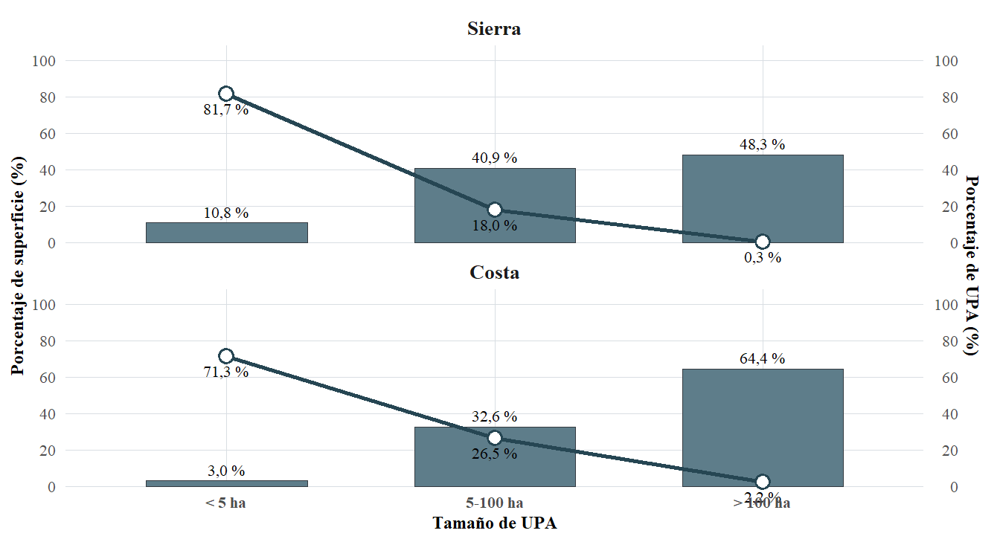
A inicios de la década de 1960, convergieron en Ecuador diversos procesos históricos, sociales y políticos que impulsaron una transformación estructural del régimen agrario. Por un lado, emergía con fuerza el movimiento campesino e indígena, que articulaba demandas históricas de acceso a la tierra y justicia social. Por otro, ciertos sectores de la clase terrateniente promovían iniciativas de modernización productiva, con el objetivo de consolidar un modelo capitalista agroexportador. A estos factores internos se sumó la influencia regional de la revolución cubana, cuyo impacto político catalizó la discusión sobre reformas agrarias en América Latina (Brassel et al., 2008).
La tenencia de la tierra en esa época seguía constituyendo el fundamento de una estructura institucional profundamente desigual, que generaba distorsiones en la distribución del ingreso y en el acceso a los medios de producción. El latifundio, expresión más visible de esa estructura, concentraba el control del mercado laboral rural y del mercado de tierras, reproduciendo condiciones de pobreza, dependencia y explotación (Brassel et al., 2008).
En ese contexto, el gobierno militar promulgó la Primera Ley de Reforma Agraria y Colonización mediante el Decreto Ejecutivo número (No.) 1480, del 11 de julio de 1964. Esta legislación reconocía abiertamente la necesidad de una reforma estructural como requisito para avanzar hacia la industrialización del país. En ese entonces, el 0,4 % de los propietarios concentraba el 45 % de las tierras agrícolas, mientras que el 90 % de los predios (ocupados por cerca de la mitad de la población) eran tan reducidos que resultaban insuficientes incluso para sostener a una sola familia (Wasserstrom & Southgate, 2013).
La ley se sustentaba en cuatro pilares fundamentales: 1. Expropiación de latifundios improductivos, con el objetivo de entregar la tierra a los campesinos que la trabajaban y eliminar formas precarias de tenencia como el huasipungo2, el arrimazgo3 y otras modalidades semifeudales. 2. Fomento de empresas cooperativas campesinas, organizadas sobre tierras estatales para promover el trabajo colectivo y la producción a escala. 3. Colonización dirigida, mediante la adjudicación de tierras baldías a grupos campesinos, como mecanismo de desconcentración poblacional y productiva. 4. Creación del Instituto Ecuatoriano de Reforma Agraria y Colonización (IERAC), entidad responsable de planificar, ejecutar y supervisar el proceso de redistribución de tierras.
Según Francescutti et al. (2002), la Ley estableció que serían sujetas a expropiación las tierras ociosas (no cultivadas en tres años o explotadas sin contrato), las deficientemente explotadas (con rendimiento inferior al promedio regional), aquellas ubicadas en zonas de alta presión demográfica, y las propiedades donde se incumplían normativas laborales o de tenencia. Se excluían de la expropiación las tierras con planes de inversión rechazados por el Banco Nacional de Fomento.
Asimismo, la ley fijó límites máximos de extensión para las propiedades: 2.500 hectáreas en la Costa (más 1.000 ha de sabanas y pastos), y 800 hectáreas en la Sierra (más 1.000 ha de páramos o terrenos sin riego superficial). Quedaban exceptuadas las tierras de empresas promovidas por el IERAC, aquellas “eficientemente explotadas”, las dedicadas a abastecer industrias propias, y las tierras tropicales o subtropicales utilizadas en ganadería extensiva.
De acuerdo con Barsky et al. (1982), durante el período 1964–1973, el Estado adjudicó más superficie bajo la modalidad de colonización de tierras baldías (682.265 hectáreas) que por reforma agraria (220.098 hectáreas). Sin embargo, el número de beneficiarios fue significativamente mayor en el caso de la reforma agraria, lo que evidencia que la superficie promedio por adjudicatario fue considerablemente menor: 3 hectáreas en promedio bajo reforma agraria, frente a predios de entre 20 y 50 hectáreas mediante colonización (Figura 2).
En conjunto, la Ley de 1964 constituyó un hito en la historia agraria del país, al establecer por primera vez una política pública sistemática de redistribución de la tierra. No obstante, su implementación encontró obstáculos estructurales, como la resistencia de los sectores terratenientes, la débil capacidad institucional del Estado y las contradicciones internas del propio modelo de desarrollo.
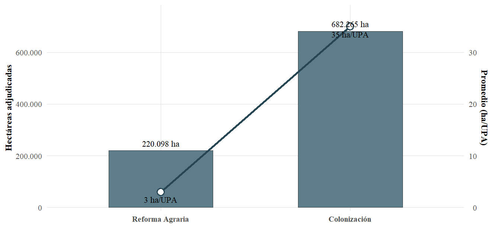
El primer proceso de Reforma Agraria y Colonización (1964–1973) tuvo un impacto territorialmente desigual. La región Sierra fue la más afectada, concentrando el 50 % de los predios intervenidos, equivalente a 450.902 hectáreas. De estas, el 39 % correspondía a adjudicaciones por la vía de la reforma agraria, mientras que el 61 % restante se realizó bajo el esquema de colonización. Este patrón reveló que la aplicación del componente redistributivo de la ley fue marcadamente serrano: el 81 % de las tierras adjudicadas por reforma agraria se localizaron en la Sierra, mientras que la colonización se distribuyó de manera más equilibrada entre las tres regiones del país. En contraste, el efecto sobre la región Costa fue marginal: apenas el 19 % de la tierra afectada por la reforma agraria se encontraba en esta región, donde aún persistían formas precarias de tenencia de la tierra, especialmente en las cuencas de los afluentes del sistema fluvial del río Guayas (Brassel et al., 2008).
Lejos de apaciguar las tensiones sociales, la Ley de Reforma Agraria de 1964 dio lugar a una intensificación de las demandas campesinas por acceso a la tierra. En este contexto, surgieron nuevas organizaciones sociales, como la Federación Nacional de Organizaciones Campesinas (FENOC) y la Ecuador Runacunapac Riccharimui (ECUARUNARI), impulsando la consigna “tierra para quien la trabaja”. Incluso la Iglesia Católica inició su propio proceso de redistribución de tierras, lo cual derivó en la creación de la Central Ecuatoriana de Servicios Agrícolas (CESA) como brazo operativo de sus programas agrarios (Brassel et al., 2008).
Diversos análisis coinciden en que esta primera etapa de reforma tuvo un impacto simbólico significativo: eliminó figuras de servidumbre rural como el huasipungo y otras formas precapitalistas de trabajo, e introdujo una institucionalidad agraria moderna. Sin embargo, en términos estrictamente redistributivos, su alcance fue limitado. La colonización resultó más amplia en extensión, pero menos equitativa, y la transformación más relevante fue el proceso de “achicamiento” y modernización de las grandes haciendas tradicionales (MAGAP, 2016).
A inicios de la década de 1970, las presiones por una transformación más profunda del régimen agrario se intensificaron. En el campo ecuatoriano se difundió la consigna: “con ley o sin ley, haremos la reforma agraria”. Frente a este clima de movilización creciente, el entonces presidente José María Velasco Ibarra se vio forzado a actuar. En septiembre de 1970, mediante el Decreto No. 373, se expidió la Ley de Abolición del Trabajo Precario en la Agricultura, la cual prohibía todas las formas de trabajo no remunerado o vinculado a relaciones de dependencia, liberando a los campesinos de obligaciones en dinero, especie o trabajo hacia los hacendados (Torres & Belén, 2017). En diciembre del mismo año se expidió el Decreto No. 1001, que prohibía cualquier forma de tenencia precaria en predios dedicados a la producción arrocera, habilitando su expropiación por parte del IERAC. La medida buscaba garantizar el abastecimiento de arroz en el mercado interno, pero también constituyó una herramienta para redistribuir tierras a los campesinos (Francescutti et al., 2002).
Durante este periodo, la tesis de la Comisión Económica para América Latina y el Caribe (CEPAL) ganaba relevancia regional. Bajo esta visión, la reforma agraria no era solo una cuestión de justicia social, sino una condición estructural para impulsar el modelo de industrialización por sustitución de importaciones (ISI). Desde esta perspectiva, la transformación de la estructura agraria debía fortalecer la capacidad productiva del agro, obligando a los grandes propietarios a modernizarse y convertirse en empresarios agrícolas, en lo que se concebía como el “desarrollo de las fuerzas productivas” (Brassel et al., 2008).
En este contexto, el gobierno militar nacionalista de Guillermo Rodríguez Lara promulgó el 9 de octubre de 1973 la Segunda Ley de Reforma Agraria, conocida como la Reforma Agraria Integral, acompañada de la realización del Segundo Censo Agropecuario Nacional en 1974. Esta reforma fue concebida como un proceso que debía combinar la redistribución de la propiedad y del ingreso con la integración del minifundio, la eliminación del latifundio, y la incorporación de los sectores campesinos marginados al proceso nacional de desarrollo (Barsky et al., 1982).
La nueva legislación amplió el enfoque anterior al considerar no solo a los campesinos que trabajaban dentro de las haciendas, sino también a las comunidades aledañas. Se introdujo como causal de expropiación la presión demográfica externa sobre los predios, lo que permitió beneficiar a grupos campesinos organizados cercanos a grandes extensiones de tierra. Asimismo, se fortalecieron los incentivos a la producción agropecuaria mediante políticas de crédito financiadas con rentas petroleras, liberalización de importación de maquinaria agrícola, difusión tecnológica y apoyo técnico especializado (Wasserstrom & Southgate, 2013).
En términos cuantitativos, los resultados de esta segunda reforma superaron ampliamente los de la primera. Según datos del IERAC, entre 1973 y 1979 se adjudicaron 449.115 hectáreas por concepto de reforma agraria y 998.391 hectáreas por colonización, lo que representa un incremento del 104 % y 46 % respectivamente respecto al periodo anterior (Figura 3). Además, el número de familias beneficiadas aumentó en un 50 %, y el promedio de tierra asignada por familia pasó de 6,42 hectáreas en la primera reforma a 8,63 hectáreas en la segunda, según estimaciones de Chiriboga (1988).
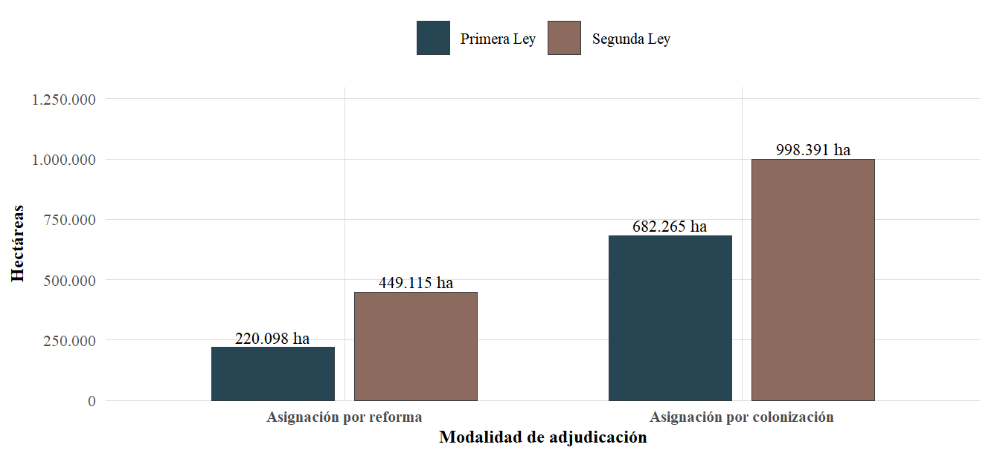
Durante el primer período de aplicación de la reforma agraria (1964–1974), la principal modalidad de afectación fue la abolición del trabajo precario (huasipungo, arrimazgo), que representó el 61 % del total de tierras redistribuidas. En contraste, en el período posterior (1974–1979), predominaron las negociaciones, reversiones y expropiaciones, las cuales concentraron el 68,5 % de las afectaciones, mientras que la abolición del precarismo se redujo al 16,3 % (Francescutti et al., 2002).
En cuanto a la distribución regional, hasta 1970 la reforma agraria se concentró principalmente en la Sierra, región históricamente afectada por la concentración de la tierra y la presencia de formas serviles de trabajo. Entre 1964 y 1974, solo el 25,5 % de las tierras afectadas se ubicaban en la Costa, mientras que para el siguiente período (1974–1979) esta proporción ascendió al 33,8 %. Asimismo, en el primer periodo, el 87,36 % de las familias beneficiadas residían en la Sierra, reduciéndose esta cifra al 71,6 % en el segundo periodo, lo cual evidencia un intento de regionalización más equitativa (Francescutti et al., 2002).
La creciente presión de los sectores terratenientes, representados por las Cámaras de Agricultura y Ganadería, se tradujo en un rechazo frontal a las leyes de reforma agraria, acusándolas de tener un “carácter confiscatorio”. Durante la década de 1970, estos grupos presionaron de forma persistente para su modificación o derogación. Su influencia política se reflejó en el uso de conceptos jurídicamente vagos, como “explotación eficiente” o “deficiente”, lo que permitió a los grandes propietarios evadir causalidades de expropiación (Larrea, 1998).
El 6 de marzo de 1979, bajo el gobierno de la Junta Militar, se promulgó la Ley de Fomento y Desarrollo Agropecuario, a pocos meses del retorno a la democracia. Esta ley introdujo reformas sustanciales: modificó el Artículo 82 de la Ley de Reforma Agraria de 1973, reduciendo los requisitos mínimos de explotación para que un predio fuera considerado eficiente. Además, estipuló que toda expropiación debía ser pagada en efectivo por parte del Estado, lo cual desincentivó las afectaciones (IGM, 1998).
Como resultado, se redujeron significativamente las posibilidades legales de expropiación. En respuesta, se intensificaron las invasiones campesinas sobre grandes predios, seguidas por negociaciones con el IERAC para su regularización. Así, el rol del IERAC transitó de entidad redistributiva a defensora de los intereses de la gran propiedad, generando tensiones con el espíritu de la reforma agraria original (Francescutti et al., 2002).
Durante la década de 1980, el Estado desplegó diversos mecanismos para fortalecer la producción campesina: continuaron las adjudicaciones de tierra, se promovieron créditos a través del Banco Nacional de Fomento, se desarrollaron tecnologías apropiadas mediante el Instituto Nacional de Investigaciones Agropecuarias (INIAP), y se fomentó la organización de movimientos indígenas. Sin embargo, estos esfuerzos fueron insuficientes para resolver el problema estructural de la inseguridad jurídica sobre la tenencia de la tierra, debido a contradicciones legales, la falta de un sistema eficiente de catastro y los frecuentes conflictos sobre predios adjudicados por el propio IERAC (Gondard & Mazurek, 2001).
Frente a un contexto de crisis rural, migración campo-ciudad, baja productividad y fragmentación parcelaria, en 1992 el Instituto de Estrategias Agropecuarias (IDEA) y la Cámara de Agricultura de la I Zona presentaron un proyecto de reforma legal. Tras dos años de debate, en 1994 se promulgó la Ley de Desarrollo Agropecuario, la cual marcó un giro liberal en el tratamiento de la tierra (Francescutti et al., 2002).
Los cambios clave de esta ley fueron:
- Creación del Instituto Nacional de Desarrollo Agrario (INDA), reemplazando al IERAC como responsable de adjudicación y resolución de conflictos.
- Vinculación del uso del agua con la propiedad de la tierra, limitando su acceso independiente.
- Reducción de causales de expropiación a: (i) tierra ociosa, (ii) trabajo precario, (iii) presión demográfica, y (iv) deterioro ambiental (Brassel et al., 2008).
Adicionalmente, se establecieron sanciones para las invasiones de tierras privadas, y se promovió la parcelación de predios, la venta activa de tierras y la disolución de cooperativas ineficientes. La ley priorizó la seguridad de la propiedad privada y la “eficiencia económica” sobre los principios redistributivos, sin llegar a configurar una reforma agraria integral.
3.6 La política agraria durante la Revolución Ciudadana (2007–2017)
El siglo XXI inició con la aplicación del Tercer Censo Agropecuario (2000). Según Carrión et al. (2008), los resultados confirmaron el escaso impacto redistributivo de las reformas agrarias del siglo XX, lo cual reactivó la discusión sobre la necesidad de políticas de redistribución de la tierra.
El 68,5 % de las UPA se registraron como “propias con título”, aunque solo concentraban el 4,1 % de la superficie agrícola. Mientras tanto, el minifundio siguió creciendo, especialmente en la Sierra, afectando negativamente las condiciones de vida rural.
Los datos evidenciaron que:
- El 85,4 % de las UPA eran menores o iguales a 20 ha y ocupaban solo el 21,3 % de la superficie total agropecuaria.
- Las UPA grandes (20,01 a 100 ha) representaban el 12,6 % del total, con el 38,1 % de la superficie.
- Solo el 2 % de las UPA eran “muy grandes” (mayores a 100 ha), pero concentraban el 40,6 % de la superficie agropecuaria (Hidalgo et al., 2011) (Figura 4).
Estos resultados mostraban la persistencia de una estructura agraria polarizada, donde convivían el minifundio atomizado con grandes extensiones improductivas o ineficientemente explotadas, en un contexto de escasa intervención estatal efectiva.
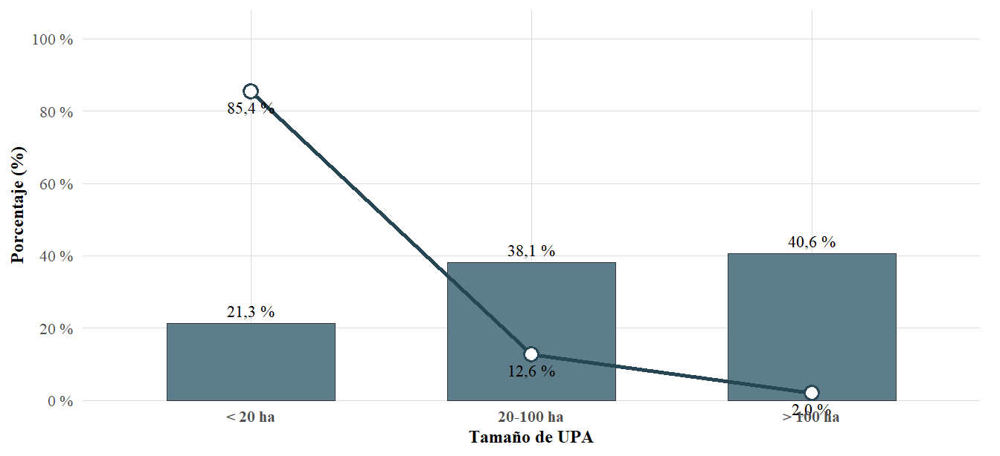
Con la llegada de Alianza Pais al poder en 2007, el gobierno ecuatoriano reintrodujo el tema de la tierra en la agenda pública bajo el lema de la “revolución agraria”. Este impulso se enmarcó en una reconfiguración más amplia del modelo de desarrollo nacional, promovido a través de la Constitución de Montecristi de 2008, la cual incorporó principios como la soberanía alimentaria, el Buen Vivir (Sumak Kawsay) y el desarrollo endógeno como ejes estructurales del nuevo orden constitucional (Hidalgo et al., 2011).
Reconociendo las limitaciones estructurales de la distribución de tierras y la persistencia del minifundio improductivo y del latifundio concentrador, el gobierno planteó la necesidad de una política agraria que promoviera una redistribución más justa. Se enfatizó la importancia de fortalecer la pequeña y mediana propiedad parcelaria como vía para garantizar la seguridad alimentaria y la justicia social en el campo. En este marco, se propuso discutir la limitación del tamaño de la propiedad privada, no desde perspectivas ideológicas, sino a partir de criterios técnicos verificables, con miras a una futura Ley de Tierras que estableciera superficies máximas de propiedad (Laforge & Vandecandelaere, 2011).
Como primer paso institucional, el Ministerio de Agricultura, Ganadería, Acuacultura y Pesca (MAGAP) implementó el “Plan Tierras”, un programa orientado a facilitar la redistribución planificada de tierras rurales. Para su ejecución, en julio de 2010 se creó la Subsecretaría de Tierras, adscrita al MAGAP, con el encargo específico de llevar a cabo los procesos de adjudicación y regularización de predios rurales (Laforge & Vandecandelaere, 2011).
Durante la primera etapa del gobierno (2008–2013), el Plan Tierras adjudicó 38.331 hectáreas a 7.068 familias campesinas, una cifra considerablemente menor frente a la demanda potencial estimada en 500.000 familias rurales pobres. En la segunda etapa del régimen, se planteó una nueva agenda para el agro, orientada hacia la modernización capitalista y el cambio de matriz productiva. Esta estrategia priorizó la dinamización del mercado nacional a través del fomento de cultivos industriales como soya, canola, palma africana, maíz duro y caña de azúcar, considerados estratégicos para la diversificación productiva del país (Salgado, 2022). A pesar del discurso de transformación agraria promovido por el gobierno de Rafael Correa, los datos revelan una continuidad e incluso profundización del modelo de desigualdad estructural en el acceso a la tierra.
Según el informe del Centro de Derechos Económicos y Sociales (CDES), para el cierre de dicho período, el 94,5 % de la superficie agrícola del Ecuador (11.680.469 hectáreas) estaba bajo propiedad privada. Las tierras de propiedad comunal representaban apenas el 4,9 % (602.862 ha), y las de instituciones públicas, un marginal 0,6 % (73.261 ha) (CDES, 2017). Esta composición refleja una estructura agraria fuertemente orientada hacia la apropiación individual del recurso tierra.
En este contexto, Ecuador siguió ubicándose entre los países con mayores niveles de desigualdad en la distribución de la tierra en América Latina. Según Salgado (2022), quien cita una entrevista concedida al periódico Le Monde Diplomatique el 3 de enero de 2010, en donde el entonces presidente reconoció: “La tenencia de la tierra no ha cambiado sustancialmente y es una de las distribuciones más inequitativas del mundo; el coeficiente de Gini supera el 0,9 en cuanto a tenencia de la tierra”, en referencia a la concentración de la propiedad según el tamaño de las unidades de producción.
La desagregación de la distribución por tamaño evidencia la persistencia de una polarización extrema. Así, según las cifras aportadas por Salgado (2022) a partir de diferentes fuentes, sobre la situación al final del período de la Revolución Ciudadana (Figura 5):
- El 0,68 % de la población controlaba el 46,3 % de la superficie agrícola.
- Las UPA de menos de 5 hectáreas representaban el 63,96 % del total de explotaciones, con un promedio de solo 1,4 ha, por lo que concentraban únicamente el 6,53 % de la superficie agrícola total.
- Las explotaciones entre 5 y 50 hectáreas abarcaban el 32,9 % de las UPA, controlando el 34,5 % de la tierra.
- Las UPA entre 50 y 100 hectáreas constituían el 3,0 % del total, pero poseían el 18,3 % de la superficie agrícola.
- Las explotaciones mayores a 100 hectáreas representaban apenas el 0,16 % de las UPA, pero controlaban el 40,6 % de la tierra cultivable, con un promedio superior a 1.400 hectáreas por unidad.
Esta diferencia extrema implica una proporción de 1.000 a 1 entre las grandes y las pequeñas propiedades. Además, se contabilizaban aproximadamente 165.000 minifundios de menos de 0,5 hectáreas, lo que representa la mitad de todas las unidades productivas pequeñas del país.
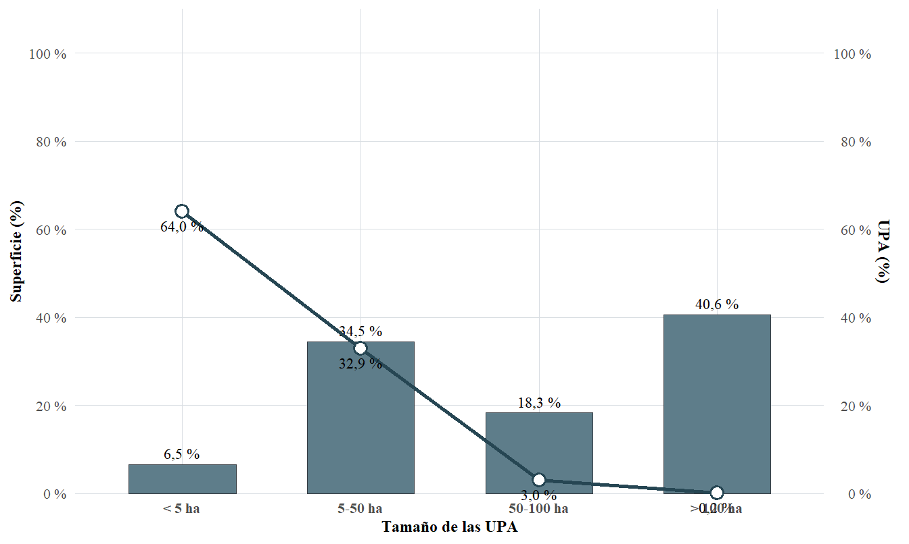
3.7 Datos sobre la evolución de la distribución de la tierra desde mediados del siglo XX
3.7.1 Cifras de los censos agropecuarios para el período 1954-2000
De acuerdo con el análisis del MAGAP (2016), una comparación longitudinal de los datos sobre distribución de la tierra recogidos en los tres censos agropecuarios nacionales (1954, 1974 y 2000), así como en la ESPAC 2013, revela importantes transformaciones en el número de UPA registradas y la extensión de la superficie agrícola, aunque no así en la distribución de la tierra entre los productores.
En efecto, entre 1954 y 2000 se registró un incremento de 496.811 nuevas unidades productivas y una expansión neta de 5.358.657 hectáreas de superficie agrícola. No obstante, tales avances en cobertura territorial y acceso formal no se tradujeron en una mejora sustantiva en los niveles de equidad de la distribución de la tierra entre unidades productivas. Por el contrario, la concentración estructural del recurso tierra se ha mantenido como una característica persistente del sistema agrario ecuatoriano.
Esta situación se refleja en la evolución del coeficiente de Gini, indicador que mide el grado de desigualdad en la distribución de un recurso (Figura 6):
- En 1954, el índice de Gini para la distribución de la tierra según el tamaño de las UPA era de 0,87.
- En 1974 descendió levemente a 0,82.
- Para el año 2000 se situó en 0,81.
- Y en 2013 el valor estimado fue de 0,76 (Larrea & Greene, 2015).
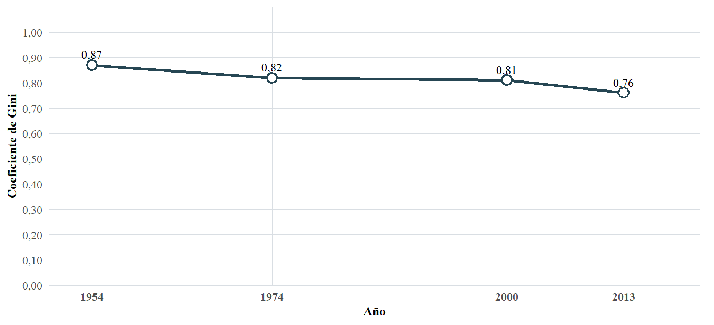
Aunque se observa una disminución progresiva del índice, esta evolución ha sido lenta y marginal, lo que demuestra que la desigualdad estructural en el acceso a la tierra se ha mantenido prácticamente inalterada en las últimas seis décadas. Tal persistencia obedece, en gran medida, a dos fenómenos contradictorios pero simultáneos: por un lado, la fragmentación del minifundio, como resultado de la presión demográfica y herencias sucesivas; y por otro, la reconcentración de la gran propiedad, producto de procesos de acumulación de tierras en manos de grandes empresas agroindustriales y actores corporativos. En consecuencia, el sistema agrario ecuatoriano presenta un modelo dual y polarizado, en el que conviven minifundios crecientemente inviables con latifundios tecnificados que concentran los recursos productivos, perpetuando las brechas sociales y territoriales en el agro ecuatoriano.
Durante las últimas seis décadas, la legislación y las políticas públicas en Ecuador han buscado influir en la estructura de la tenencia y distribución de la tierra mediante diversas formas de intervención estatal. Según el análisis del MAGAP (2016), si bien la redistribución no logró una transformación radical del régimen agrario, sí es posible identificar ciertas variaciones significativas en la configuración de las UPA entre 1954 y 2000.
La Tabla 4 muestra que la evolución de la estructura agraria refleja un crecimiento generalizado del número de unidades productivas, impulsado principalmente por los estratos de menor tamaño. Este aumento responde a procesos de fragmentación de la tierra que no se acompañan de una expansión proporcional de la superficie, lo que evidencia una intensificación del minifundio y una reducción del tamaño efectivo de las explotaciones pequeñas.
Los estratos intermedios muestran una recomposición progresiva, con una mayor presencia relativa tanto en número de unidades como en superficie, lo que sugiere procesos de ajuste y redistribución parcial sin alterar de manera sustantiva la estructura concentrada del sistema agrario. Por su parte, las explotaciones de mayor tamaño mantienen un control significativo sobre la superficie, a pesar de una disminución relativa de su peso, lo que indica que la concentración de la tierra persiste como rasgo estructural (MAGAP, 2016).
| Tamaño | UPA 1954 | UPA 1974 | UPA 2000 | Superficie 1954 | Superficie 1974 | Superficie 2000 |
|---|---|---|---|---|---|---|
| < 5 ha | 251.686 | 346.847 | 535.309 | 432.200 | 538.668 | 774.225 |
| 5-20 ha | 57.650 | 96.360 | 176.726 | 565.800 | 935.291 | 1.706.794 |
| 20-100 ha | 27.742 | 64.813 | 111.290 | 1.138.700 | 1.664.671 | 4.614.436 |
| >=100 ha | 7.156 | 11.091 | 13.557 | 4.263.000 | 3.810.773 | 5.260.375 |
| Total | 344.234 | 519.111 | 836.882 | 6.399.700 | 6.949.403 | 12.355.830 |
| Fuente: Elaboración propia a partir de datos de MAGAP (2016). |
La Tabla 5 se construye a partir de los valores absolutos presentados en la Tabla 4, mediante el cálculo de la participación relativa de cada estrato en el número total de UPA y en la superficie, así como de la superficie media por unidad productiva. Esta transformación permite analizar con mayor claridad los cambios estructurales de la agricultura entre 1954 y 2000. Los resultados muestran que, aunque las explotaciones pequeñas continúan concentrando la mayor parte de las unidades productivas, su superficie media se reduce de forma progresiva, lo que confirma un proceso sostenido de fragmentación del minifundio. En los estratos intermedios, la superficie media presenta una evolución más inestable, reflejando procesos de recomposición y ajuste en la estructura productiva. Por su parte, las explotaciones de mayor tamaño reducen su superficie media en relación con los primeros censos, sin perder su condición de unidades de gran escala, lo que indica una moderación (más que una ruptura) de la concentración de la tierra.
| Tamaño | UPA % 1954 | UPA % 1974 | UPA % 2000 | Sup. % 1954 | Sup. % 1974 | Sup. % 2000 | Media 1954 | Media 1974 | Media 2000 |
|---|---|---|---|---|---|---|---|---|---|
| < 5 ha | 73,11 | 66,82 | 63,96 | 6,75 | 7,75 | 6,27 | 1,72 | 1,55 | 1,45 |
| 5-20 ha | 16,75 | 18,56 | 21,12 | 8,84 | 13,46 | 13,81 | 9,81 | 9,71 | 9,66 |
| 20-100 ha | 8,06 | 12,49 | 13,30 | 17,79 | 23,95 | 37,35 | 41,05 | 25,68 | 41,46 |
| >=100 ha | 2,08 | 2,14 | 1,62 | 66,61 | 54,84 | 42,57 | 595,72 | 343,59 | 388,02 |
| Total | 100,00 | 100,00 | 100,00 | 100,00 | 100,00 | 100,00 | 18,59 | 13,39 | 14,76 |
| Nota: | |||||||||
| Las columnas de media corresponden a superficie promedio por UPA, expresada en hectáreas. | |||||||||
| Fuente: Elaboración propia a partir de datos de MAGAP (2016). |
El incremento del número de UPA en todos los estratos de tamaño entre 1954 y 2000 plantea una cuestión metodológica relevante respecto a la naturaleza de este crecimiento. En efecto, no puede asumirse de manera automática que dicho aumento refleje exclusivamente cambios estructurales reales en la organización de la producción agraria. Parte de esta variación puede estar asociada a mejoras progresivas en la cobertura, el alcance y la capacidad de registro de los censos agropecuarios, especialmente en los estratos de menor tamaño, históricamente subrepresentados. La ampliación de los mecanismos de levantamiento de información, así como una mayor presencia institucional en el territorio rural, pudieron contribuir a visibilizar unidades productivas que previamente no eran captadas de forma sistemática. En este sentido, las cifras deben interpretarse con cautela, entendiendo que combinan tanto transformaciones efectivas en la estructura agraria como avances en la calidad estadística y en el grado de cobertura censal.
3.7.2 Cifras mas recientes de la ESPAC para 2013 y 2022
Comparado con el último Censo Agropecuario de 2000, los datos de la ESPAC correspondientes a 2013 evidencian que, si bien han existido ciertos cambios en la estructura de las explotaciones agrarias, persisten tendencias estructurales de desigualdad que afectan tanto a la concentración como a la atomización de la tierra (ESPAC, 2013).
En términos de superficie, las grandes UPA (más de 100 ha) continuaron reduciendo en el período 2000-2013 su peso territorial. En 2000, estas unidades representaban el 42,6 % de la superficie agrícola, cifra que disminuyó al 33,5 % en 2013. No obstante, en los últimos años de ese periodo se observó una reversión parcial de esta tendencia, con un aumento en la importancia relativa de estas grandes UPA (MAGAP, 2016).
Paralelamente, las pequeñas propiedades (menos de 5 ha) vieron reducida su participación en el total de UPA: del 64 % en 2000 al 58,8 % en 2013, manteniendo prácticamente la misma superficie agrícola bajo su control. Este fenómeno señala que la redistribución formal de tierra no se ha traducido en un fortalecimiento sustantivo del pequeño productor.
Con base en estimaciones del Ministerio de Agricultura, derivadas de los microdatos de la ESPAC 2013, la estructura de la distribución de la tierra en Ecuador para ese año mantuvo patrones ampliamente consistentes con los observados en los censos agropecuarios históricos. En particular, el estrato de unidades de producción menores a 5 hectáreas continúa concentrando la mayoría de las UPA, aunque su participación en la superficie agrícola total sigue siendo reducida, situándose en torno a valores similares a los registrados en décadas anteriores.
De manera complementaria, las unidades de entre 5 y 20 hectáreas representan un segmento intermedio, con una participación moderada tanto en número de UPA como en superficie controlada, sin evidenciar incrementos sustanciales que sugieran una recomposición estructural del acceso a la tierra.
Las unidades de mayor tamaño (superiores a 20 y, en particular, a 100 hectáreas), aunque minoritarias en número, continúan concentrando la gran mayoría de la superficie agrícola nacional, reproduciendo un patrón persistente de desigualdad en el control del recurso tierra. En conjunto, la evidencia disponible para 2013 sugiere que los procesos de fragmentación y concentración relativa observados históricamente no se han revertido, sino que se han mantenido con variaciones marginales, lo que refuerza la hipótesis de una elevada inercia estructural en la tenencia de la tierra en Ecuador (MAGAP, 2016).
Complementando lo anterior, en la Sierra ecuatoriana la fragmentación de la tierra no aparece como un fenómeno repentino, sino como el resultado acumulado de una historia larga y persistente. Las herencias sucesivas fueron dividiendo las unidades productivas; al mismo tiempo, el crecimiento demográfico, la migración campo-ciudad y el funcionamiento de un mercado de tierras escasamente regulado terminaron por acentuar este proceso. Así, lo que en un inicio fueron explotaciones viables se transformaron progresivamente en parcelas cada vez más pequeñas, muchas de ellas insuficientes para sostener una producción estable.
Sobre esta fragmentación se superponen otros rasgos estructurales que complejizan aún más el panorama rural. El acaparamiento de tierras en determinados territorios convive con la falta de títulos formales de propiedad, la presencia de esquemas de tenencia mixta y las ocupaciones informales, mientras que un número significativo de productores depende del arrendamiento para acceder a la tierra. Esta combinación de factores configura un escenario de alta vulnerabilidad, en el que la inseguridad jurídica y la precariedad productiva se refuerzan mutuamente.
Durante el período 2012–2014, el Estado impulsó esfuerzos orientados a la regularización de la tenencia, materializados en la entrega de alrededor de 200.000 títulos de propiedad y en la distribución de más de 30.000 hectáreas. Sin embargo, estas intervenciones, aunque relevantes en términos institucionales, no lograron alterar de manera sustantiva las bases estructurales del problema. La magnitud histórica de la fragmentación y la desigualdad en el acceso a la tierra superó ampliamente el alcance de estas medidas, dejando en evidencia los límites de las políticas de regularización cuando no se acompañan de transformaciones más profundas en la estructura agraria.(Brassel et al., 2008).
La Tabla 6 que hemos elaborado a partir de los datos de la ESPAC 2022, indica que la muestra de esta estadística registra 42.444 UPA, que en conjunto suman 827.336 hectáreas. Los resultados evidencian una estructura productiva altamente concentrada en unidades de menor tamaño. Las UPA con menos de 5 hectáreas alcanzan 32.120 unidades, equivalentes al 75,7 % del total, aunque cuentan solo con 35.499 hectáreas, es decir, el 4,3 % de la superficie total.
El grupo de 5 a menos de 10 hectáreas reúne 4.600 UPA, equivalentes al 10,8 % del total, y concentra 34.039 hectáreas, que representan el 4,1 % de la superficie. En conjunto, las explotaciones con menos de 10 hectáreas agrupan el 86,5 % de las UPA, pero concentran el 8,4 % de la superficie analizada.
En los grupos intermedios se observa una menor participación en el número de unidades, aunque con mayor peso relativo en superficie. Las UPA de 20 a menos de 50 hectáreas representan el 4,2 % de las unidades y concentran el 6,8 % de la superficie, mientras que el grupo de 100 a menos de 200 hectáreas representa apenas el 1,4 % de las UPA, pero concentra el 9,8 % de la superficie.
Finalmente, las explotaciones de 200 hectáreas y más representan 863 UPA, equivalentes al 2,0 % del total, pero concentran 553.892 hectáreas, es decir, el 66,9 % de la superficie total. Estos resultados muestran una estructura agraria marcadamente desigual: la mayoría de las UPA corresponde a unidades pequeñas, mientras que un número reducido de explotaciones de gran tamaño concentra la mayor parte de la superficie.
| Grupo de tamaño | UPA | Superficie (ha) | Porcentaje UPA (%) | Porcentaje superficie (%) |
|---|---|---|---|---|
| Menos de 5 ha | 32.120 | 35.499 | 75,68 | 4,29 |
| De 5 a menos de 10 ha | 4.600 | 34.039 | 10,84 | 4,11 |
| De 10 a menos de 20 ha | 1.930 | 27.071 | 4,55 | 3,27 |
| De 20 a menos de 50 ha | 1.796 | 56.079 | 4,23 | 6,78 |
| De 50 a menos de 100 ha | 555 | 39.326 | 1,31 | 4,75 |
| De 100 a menos de 200 ha | 580 | 81.430 | 1,37 | 9,84 |
| 200 ha y más | 863 | 553.892 | 2,03 | 66,95 |
| Total | 42.444 | 827.335 | 100,00 | 100,00 |
| Nota: | ||||
| La superficie total de cada UPA se calculó mediante la suma de la variable supertotal de todos sus terrenos. | ||||
| Fuente: Elaboración propia a partir de la ESPAC 2022. |
Así, pese a las diferencias metodológicas entre un censo exhaustivo y una encuesta representativa, el contraste entre el último Censo Agropecuario de 2000 (ver Tabla 5) y las cifras más recientes de la ESPAC revela similitudes estructurales relevantes. No obstante, estas coincidencias deben interpretarse con cautela, dado que mientras el Censo constituye un levantamiento exhaustivo de las UPA, la ESPAC se basa en un diseño muestral y, por tanto, sus resultados corresponden a estimaciones estadísticas. Aun así, ambas fuentes narran la misma historia estructural: entre 2000 y 2022 el agro ecuatoriano no transitó hacia una redistribución significativa de la tierra, sino que mantuvo la coexistencia del minifundio fragmentado y la gran propiedad concentrada, configurando un patrón persistente que condiciona la productividad.
3.8 Datos sobre los modos de tenencia de la tierra 2000-2022
La Tabla 7 muestra la estructura de los modos de tenencia de la tierra en el Ecuador según el Censo Nacional Agropecuario de 2000. Esta aparecía dominada por la propiedad con título (tierras trabajadas en tenencia directa con título de propiedad), que concentraba el 68,5 % de las unidades productivas. Por lo tanto, más de 2/3 de los productores contaban con derechos de propiedad formalizados sobre la totalidad de las superficies que trabajaban, lo que les permitía, al menos en términos institucionales, disponer de un mayor grado de seguridad para la toma de decisiones productivas.
Al lado de ello, las formas de ocupación sin título y otras modalidades informales representaban en conjunto el 11,8 % del total de unidades productivas. Estos casos reflejaban situaciones de alta vulnerabilidad, en las que el vínculo con la tierra era inestable, condicionando la producción dado el riesgo permanente de pérdida del acceso al uso de las superficies.
Los modos de tenencia indirectos más habituales (arrendamiento y aparcería) tenían una presencia casi marginal, limitándose a poco más del 1 % las UPA con todas sus tierras en cada uno de estos regímenes. Y algo similar sucedía para la tenencia comunera o cooperada. No obstante, aunque cuantitativamente muy reducidas, estas formas evidenciaban la coexistencia de arreglos institucionales diversos en el agro ecuatoriano.
Finalmente, alrededor del 16 % de las unidades productivas presentaban modos de tenencia mixtos, combinando tierras bajo diferentes regímenes; en particular, parcelas tituladas con otras sin respaldo legal pleno (Tabla 7).
| Tipo de tenencia | UPA | Porcentaje (%) |
|---|---|---|
| Propio con título | 577.195 | 68,48 |
| Mixta | 133.834 | 15,88 |
| Ocupado sin título | 56.261 | 6,67 |
| Otra Forma de tenencia | 42.787 | 5,08 |
| Comunero o cooperado | 13.408 | 1,59 |
| Arrendado | 10.135 | 1,20 |
| Aparcería o al partir | 9.262 | 1,10 |
| Total | 842.882 | 100,00 |
| Fuente: Elaboración propia a partir del Censo Nacional Agropecuario 2000. |
Una vez analizado el patrón estructural de la distribución de las UPA según la forma de tenencia de la tierra correspondiente al año 2000, y antes de proceder a la comparación con los resultados de la ESPAC 2022, conviene precisar un aspecto metodológico relevante. Si bien los resultados sobre tenencia de la tierra para 2022 ya fueron abordados en el Capítulo II, específicamente en el apartado 2.4, aquellos que se presentan a continuación difieren en su enfoque analítico. En el Capítulo II el análisis se centró en la superficie asociada a cada régimen de tenencia, mientras que en esta sección las cifras se construyen a partir del número de UPA, lo que permite una lectura complementaria sobre la estructura de la tenencia desde la perspectiva de la distribución de las UPA.
Cabe precisar también que, aunque la Tabla 9 presenta un único régimen de tenencia por UPA, ello responde a que se ha considerado exclusivamente el régimen de tenencia predominante en cada predio. En contraste, la Tabla 8 complementa este análisis al clasificar las UPA según presenten mono-tenencia o multi-tenencia, a partir de la identificación de regímenes distintos dentro de cada unidad productiva. La clasificación se elaboró identificando, para cada UPA, si los terrenos registrados en la encuesta se encontraban asociados a un único régimen de tenencia o a más de uno. A diferencia de las estimaciones nacionales expandidas, los resultados presentados corresponden a valores muestrales sin expansión, construidos directamente a partir de las 42.444 UPA incluidas en la base de análisis de la ESPAC 2022.
En términos agregados, se observa que 41.148 unidades productivas agropecuarias corresponden a explotaciones con un solo régimen de tenencia, lo que representa el 96,95 por ciento del total de UPA analizadas. Por su parte, 1.296 unidades productivas presentan más de un régimen de tenencia dentro de sus terrenos, equivalentes al 3,05 por ciento del total.
Estos resultados muestran que la estructura de acceso y control de la tierra se encuentra fuertemente concentrada en esquemas de mono-tenencia. En la mayoría de las explotaciones agropecuarias, la gestión de la unidad productiva se desarrolla bajo un único régimen predominante de acceso a la tierra, mientras que la combinación de distintas modalidades de tenencia constituye un fenómeno relativamente reducido dentro de la muestra analizada.
| Tipo de tenencia | UPA | Porcentaje (%) |
|---|---|---|
| Mono-tenencia | 41.148 | 96,95 |
| Multi-tenencia | 1.296 | 3,05 |
| Total | 42.444 | 100,00 |
| Nota: | ||
| La clasificación distingue entre UPA con un solo régimen de tenencia y UPA con más de un régimen registrado en sus terrenos. | ||
| Fuente: Elaboración propia a partir de la ESPAC 2022. |
Con las precisiones metodológicas señaladas, la Tabla 9 evidencia la persistencia de la tenencia directa como forma dominante de organización de las unidades productivas agropecuarias en el Ecuador. Los resultados obtenidos a partir de la ESPAC 2022 muestran que la propiedad continúa siendo el principal mecanismo de control y gestión de la tierra, consolidando una estructura agraria fuertemente asociada a la titularidad directa de los predios.
Del total de 42.444 UPA identificadas en la muestra, 36.057 corresponden a unidades gestionadas bajo la modalidad de propiedad directa, lo que representa el 84,95 % del total. Este resultado indica que aproximadamente ocho de cada diez unidades productivas operan bajo control directo del propietario, reflejando la continuidad de un patrón estructural históricamente predominante dentro del sector agropecuario ecuatoriano.
Las formas derivadas de acceso a la tierra presentan una participación menor dentro de la estructura de tenencia. La herencia agrupa 2.787 UPA, equivalentes al 6,57 % del total, lo que evidencia la persistencia de mecanismos de transmisión intergeneracional de la tierra como una de las principales formas de continuidad patrimonial en el ámbito rural.
Las modalidades de acceso no propietario mantienen una presencia reducida. El arrendamiento registra 1.680 UPA, correspondientes al 3,96 % del total, mientras que el usufructo representa el 1,13 %. Por su parte, las formas comunales alcanzan el 1,04 % y la aparcería o al partir el 0,86 %. En conjunto, estos resultados sugieren que las modalidades alternativas de acceso a la tierra continúan ocupando un espacio secundario dentro de la estructura agraria nacional.
En forma de síntesis, la distribución observada confirma que la estructura de acceso a la tierra en el sector agropecuario ecuatoriano continúa organizada principalmente en torno a la propiedad directa, mientras que las demás modalidades de tenencia desempeñan un papel complementario dentro del sistema productivo rural
| Forma de tenencia | UPA | Porcentaje (%) |
|---|---|---|
| Dueño | 36.057 | 84,95 |
| Herencia | 2.787 | 6,57 |
| Arrendatario | 1.680 | 3,96 |
| Usufructo | 479 | 1,13 |
| Comunero | 443 | 1,04 |
| Otro | 378 | 0,89 |
| Aparcería o al partir | 367 | 0,86 |
| Posesión | 134 | 0,32 |
| Litigio | 106 | 0,25 |
| Invasión | 13 | 0,03 |
| Total | 42.444 | 100,00 |
| Nota: | ||
| La tenencia corresponde al régimen predominante de cada UPA, definido por la mayor superficie acumulada. | ||
| Fuente: Elaboración propia a partir de la ESPAC 2022. |
4 Tenencia de la tierra y productividad Agrícola; revisión de la literatura y estado de la cuestión
4.1 Introducción
La relación entre la tenencia de la tierra y la productividad agrícola ha sido un tema ampliamente discutido, prevaleciendo la idea de que la seguridad en la tenencia impulsa la inversión en la tierra y, en consecuencia, la productividad agrícola. Sin embargo, las complejidades institucionales y contextuales que rodean la administración de los recursos naturales y el desarrollo sostenible son elementos cruciales en este análisis.
En este capítulo se revisan diversas contribuciones de la literatura sobre la tenencia de la tierra, su impacto en la productividad agrícola y el desarrollo económico, así como las complejidades asociadas a la gestión de los recursos naturales. Anticipamos que los estudios disponibles llevan a resultados no concluyentes, ya que, por un lado, existe una corriente que destaca la importancia de la seguridad en la tenencia de la tierra para incentivar la inversión en mejoras agrícolas y aumentar la productividad, mientras otros estudios indican que los efectos no son significativos.
Para citar ejemplos de lo mencionado, trabajos como el de Ho (2021) establecen una relación positiva entre la seguridad de la tenencia, la productividad agrícola y el desarrollo económico utilizando datos de Vietnam; por su parte, Lawry et al. (2017) realizan una revisión sistemática, encontrando que el reconocimiento de los derechos de tenencia se traduce en aumentos sustanciales de la productividad y los ingresos. Sin embargo, se destaca la heterogeneidad de los efectos, enfatizando la importancia del contexto regional. En Abdulai et al. (2011) se señala que los agricultores con derechos consuetudinarios, en ciertos contextos, pueden invertir más que aquellos con derechos formales, lo que sugiere la necesidad de considerar y fortalecer los sistemas tradicionales de tenencia; así tanto los derechos legales formales como los consuetudinarios son reconocidos como mecanismos para garantizar la tenencia, cada uno con implicaciones particulares.
No obstante, aunque la mayoría de las investigaciones resaltan efectos positivos de la formalización de la tenencia en la inversión, estudios como el de Dickerman & Barnes (1989) sugieren que estos efectos solo son significativos en ciertos contextos. La revisión de Lawry et al. (2017) encuentra, en promedio, aumentos de productividad e ingresos derivados del reconocimiento de los derechos de tenencia, pero también una marcada heterogeneidad regional y ninguna evidencia de que esos efectos operen mediante un mayor acceso al crédito.
En conjunto, existen vacíos y un conocimiento limitado sobre el impacto de la tenencia de la tierra en la productividad agrícola, por lo que se trata de una cuestión que requiere más atención, especialmente en América Latina. En los siguientes apartados vamos a profundizar en esta cuestión; primero mediante una revisión de la literatura a nivel internacional y finalmente con una referencia al caso concreto del Ecuador.
4.2 Tenencia de la tierra y productividad agrícola; revisión de la literatura a nivel internacional
4.2.1 Relación general entre tenencia de la tierra y productividad agrícola
Como se mencionó, los efectos de la seguridad de la tenencia de la tierra en la productividad agrícola y el desarrollo económico no son homogéneos y dependen en gran medida del contexto, la institucionalidad y la implementación de políticas públicas. Por ello en el ámbito internacional encontramos resultados disímiles para diferentes contextos. En muchos países los estudios apuntan a que la productividad está condicionada por la tenencia de tierra, mientras que en otros el efecto no es evidente. A continuación revisamos estudios que analizan la relación entre la forma de tenencia de la tierra y la productividad agrícola y sus resultados.
En algunos países de Asia por ejemplo, autores como Deininger et al. (2014) y Ho (2021) sostienen que la claridad en los derechos de propiedad, facilitada por la emisión de certificados de uso de la tierra, ha sido un factor clave para impulsar la inversión agrícola, la intensificación de la producción y el desarrollo económico en China. La seguridad en la tenencia de la tierra no solo ha promovido la mejora de las prácticas agrícolas, también ha facilitado el desarrollo por los hogares rurales de actividades no agrícolas. Deininger et al. (2014) encontraron que los hogares con certificados de uso de la tierra tenían más probabilidades de diversificar sus fuentes de ingresos, explorando oportunidades fuera del sector agrícola, debido a la seguridad que brindan estos certificados sobre sus activos de tierra.
Anderson & Lueck (1992) en la India también detectaron una relación directa entre la forma de tenencia de la tierra y la productividad. Sus hallazgos evidencian que el éxito agrícola ha sido muy complicado en lugares donde la tenencia de tierra suele estar condicionada por normas y costumbres tribales, lo que puede elevar los costes de organización e insumos, haciendo que la producción por hectárea disminuya. En un sentido similar, Otsuka & Place (2014) en su estudio para Filipinas e Indonesia, constataron que la falta de seguridad en la tenencia de la tierra y la ausencia de incentivos para las inversiones pueden influir negativamente en la productividad de los arrendatarios.
Feder (1987), por su parte, llegó a la conclusión de que los incentivos derivados de la tenencia de la tierra están directamente relacionados con una brecha de productividad entre los agricultores propietarios y no propietarios en Tailandia. Específicamente, su estudio establece tres hallazgos importantes. Primero, la mayor seguridad en la tenencia de la tierra aumentó las mejoras por parte de los agricultores, debido a la confianza en que se beneficiarían de esas mejoras a largo plazo. Segundo, la seguridad de la tenencia aumentó la oferta de crédito formal al aportar garantías negociables. Por último, ambos efectos se tradujeron en un aumento de las inversiones a corto plazo en insumos, dando lugar a una mayor producción.
Por otro lado, Ho (2021) usando una muestra aleatoria de más de 2000 comunas rurales de Vietnam, encontró que la prevalencia de la tenencia de tierras privadas tiene un impacto positivo en la productividad agraria y finalmente en el nivel de desarrollo económico. Sin embargo, la magnitud del impacto, en general, es modesto. Las explicaciones más plausibles para este impacto modesto son la persistente inseguridad de que los certificados de uso de la tierra puedan ser revocados por el Estado, los impuestos altos y el costo de tiempo de las transacciones de tierras en Vietnam. Estas lecciones son de interés no solo para Vietnam, sino también para otros países en desarrollo que contemplan la privatización de tierras agrícolas.
Koirala (2017) determinó que los agricultores arrendatarios tienen una menor productividad en el cultivo de arroz que los propietarios de la tierra en Filipinas. Específicamente, sus resultados muestran que ser arrendatario aumenta la ineficacia técnica en comparación con los agricultores propietarios. Algunas explicaciones para esto apuntan a que los agricultores que alquilan la tierra son menos propensos a invertir en mejoras, lo que se traduce en una menor producción.
Refiriéndonos a África, Sossou & Mbaye (2018) analizaron que la propiedad legal de la tierra aumenta significativamente las inversiones agrícolas. En esta misma línea, Besley (1995) determinó que la seguridad en la tenencia de la tierra incentiva a los agricultores a invertir en mejoras, como drenaje, plantación de árboles y fertilización, al garantizarles que podrán recibir los beneficios de esas inversiones. En Ghana, por ejemplo, se constata que la existencia de ciertos derechos sobre la tierra fomenta la inversión en árboles; además, la tenencia segura facilita el acceso al crédito, al permitir que la tierra se utilice como garantía, y genera otras ganancias, al posibilitar la venta o arrendamiento más fácil de las tierras.
Abdulai et al. (2011) plantean en Ghana un modelo de optimización desarrollado para analizar las decisiones de inversión de los agricultores en mejoras del terreno bajo diferentes regímenes de tenencia tomando en cuenta variables como el capital del suelo, los costos de producción y la tasa de descuento. Este enfoque permite comparar cómo los propietarios, arrendatarios a plazo fijo y aparceros deciden invertir, demostrando que la duración del contrato tiene un impacto directo en estas decisiones. El análisis empírico basado en datos de Ghana revela que los propietarios son los que más invierten en mejoras del terreno, como la siembra de árboles y cultivos. Los arrendatarios a plazo fijo invierten más que los aparceros, pero menos que los propietarios, lo que subraya la importancia de la seguridad en la tenencia de la tierra como factor clave para incentivar la inversión agrícola.
Migot-Adholla et al. (1991) afirman que la existencia de derechos informales sobre la tierra son el principal factor que influye en la seguridad de la tenencia, lo que a su vez afecta negativamente a la productividad agrícola en Madagascar. Estos resultados son confirmados por Sossou & Mbaye (2018) en Benin, quienes obtienen que la propiedad legal de la tierra aumenta en un 23,8 % la probabilidad de invertir en equipos agrícolas, en comparación con los hogares que carecen de esa propiedad.
En Papúa Nueva Guinea se encontró que la forma de tenencia de la tierra estaba correlacionada positivamente con la productividad de las explotaciones. Las explotaciones con acuerdos de compra consuetudinarios y las que están bajo el plan de asentamiento de tierras mostraron una mayor productividad, en comparación con aquellas con tierras propiedad de la aldea. Esto se atribuye a las economías de escala y la ausencia de reparto de ingresos que disfrutan las explotaciones con mayor seguridad en la tenencia (Chand & Yala, 2009).
El estudio de Sossou & Mbaye (2018) investigó el impacto de la seguridad de la tenencia de la tierra en la inversión agrícola en Benín, utilizando datos a nivel de hogar. Los autores compararon los niveles de inversión agrícola entre hogares que operan bajo diferentes regímenes de tenencia, incluyendo propiedad legal, propiedad consuetudinaria y ocupación informal. Los resultados indicaron que la seguridad de la tenencia tiene un efecto positivo y significativo en la inversión agrícola, siendo los hogares con propiedad legal los que realizan mayores inversiones en comparación con aquellos que tienen otros tipos de tenencia.
Por su parte Simbizi et al. (2014) revisan la seguridad de la tenencia de la tierra en el África Subsahariana, proponiendo un marco que abarca dimensiones legales, consuetudinarias y percibidas. Los autores destacan la importancia de considerar la percepción de los derechos a la tierra, ya que esta influencia en las decisiones de inversión. Sostienen que para mejorar la seguridad de la tenencia y fomentar el desarrollo rural, las políticas e investigaciones deben integrar estas percepciones, brindando así una comprensión más completa de la estabilidad en el acceso a la tierra.
Si bien las fuentes citadas hasta ahora coinciden en la importancia de la seguridad de la tenencia de la tierra para la productividad y el desarrollo, también existen quienes presentan discrepancias. Estas divergencias pueden atribuirse a diversos factores, como las metodologías empleadas, los contextos específicos de los estudios, las variables consideradas y los marcos teóricos utilizados. A continuación se citan algunos de ellos.
En el contexto africano, la relación entre la tenencia de la tierra y la productividad agrícola es particularmente compleja. Los sistemas tradicionales de tenencia de la tierra suelen basarse en derechos consuetudinarios, que pueden ser difíciles de definir y hacer cumplir. En un estudio de ocho regiones de Ghana, Kenia y Ruanda, no se encontró una relación significativa entre los derechos sobre la tierra y el uso de insumos o los rendimientos de los cultivos. Esto sugiere que pueden existir otras limitaciones más apremiantes para la productividad agrícola en estas regiones, como la falta de tecnologías mejoradas o el acceso inadecuado al crédito. Sin embargo, en algunos casos, se encontró que ciertos derechos sobre la tierra, como el derecho a dar en herencia, se asociaban positivamente con las mejoras de la producción (Place & Hazell, 1993).
Dickerman & Barnes (1989) citados por Lawry et al. (2014), encuentran que los efectos positivos de la seguridad de la tenencia en la productividad agrícola son limitados y solo se observan en contextos específicos de Africa. Ante ello Lawry et al. (2017) argumentan que la variabilidad en los resultados puede explicarse por la diversidad de contextos regionales, la calidad de las instituciones y la implementación de las políticas de formalización.
En América Latina, la relación entre tenencia de la tierra y productividad ha estado marcada por procesos históricos de concentración y fragmentación. La desigualdad en la distribución de la tierra continúa siendo una característica prominente de la región y restringe el acceso de pequeños productores y comunidades indígenas a este recurso y a otros medios complementarios de producción (Deere & León, 2001; FAO, 2022).
En México y otros países de la región, las reformas agrarias y los programas de formalización han producido resultados heterogéneos, condicionados por la estructura agraria, las instituciones y las modalidades de implementación. Por ello, sus efectos no pueden inferirse únicamente a partir de la entrega de títulos ni generalizarse entre países (FAO, 2008; Lawry et al., 2017).
En el estado mexicano de Tlaxcala, un estudio de productores de maíz con datos de 2002 no encontró evidencia de que el tipo de propiedad por sí mismo determinara la productividad. Las diferencias observadas se relacionaron con el acceso a la tierra y la tecnología, las características edafoclimáticas de las regiones agrícolas, la pluriactividad y la discontinuidad tecnológica de los productores, así como con el uso habitual de tecnologías campesinas (Damián Huato et al., 2007). En términos más generales, las formas de tenencia pueden influir en los horizontes de inversión y en el manejo de la tierra, pero sus efectos sobre productividad y sostenibilidad dependen de la seguridad efectiva de los derechos y de condiciones institucionales y productivas complementarias (FAO, 2008; Lawry et al., 2017).
Un último aspecto a destacar en esta sección es que, aunque existe una gran cantidad de literatura que ha realizado hallazgos relevantes, la mayoría se enfoca en analizar la seguridad de la propiedad de la tierra y la productividad agrícola, mientras que la forma de tenencia o propiedad de la tierra ha sido un tema menos estudiado (Koirala, 2017).
4.2.2 Factores específicos que inciden en la relación entre tenencia y productividad
Como se ha mencionado anteriormente, la tenencia de la tierra incide en la productividad agrícola, aunque sus efectos sean heterogéneos y dependan del contexto en que se estudien. No obstante, más allá de la tenencia de la tierra, existen factores complementarios que influyen significativamente en esta dinámica; elementos como el género, la institucionalidad, el acceso a tecnología, el acceso al crédito, la capacitación de los agricultores, disponibilidad de recursos hídricos y la infraestructura rural toman un papel fundamental en el potencial productivo de las tierras agrícolas. En el presente apartado se intenta explorar cómo otras variables inciden en la relación objeto de estudio y afectan la productividad agrícola.
En primer lugar, la literatura sugiere que el género es un factor determinante en la relación entre la tenencia de la tierra y la productividad agrícola. Los sistemas de tenencia que otorgan a las mujeres un acceso seguro y equitativo a la tierra fomentan inversiones a largo plazo y mejoran la sostenibilidad productiva. Sin embargo, las barreras culturales y legales que restringen el acceso de las mujeres a la tierra siguen siendo un obstáculo significativo. Para abordar estas desigualdades, es crucial diseñar políticas que promuevan la equidad de género en el acceso a la tierra, garantizando que las mujeres tengan la misma capacidad que los hombres para participar en el desarrollo agrícola sostenible.
El trabajo de Djurfeldt et al. (2018) subraya que las mujeres están en una posición más débil que los hombres en cuanto al acceso a la tierra, debido a restricciones sociales y legales que impiden que adquieran derechos permanentes sobre la tierra. Estas limitaciones afectan directamente su capacidad de tomar decisiones de inversión a largo plazo, como la agrosilvicultura, que requiere un compromiso sostenido con el uso de la tierra. Además, estudios como el de Migot-Adholla et al. (1991) destacan que las agricultoras que adquieren tierras a través de la compra tienen mayor capacidad de inversión en comparación con las que heredan tierras, mostrando cómo el contexto social y familiar influye en las decisiones productivas.
Sin embargo, no todas las regiones presentan las mismas limitaciones para las mujeres. En ciertos sistemas tradicionales, como los sistemas matrilineales y uxorilocales4 de Malawi estudiados por Djurfeldt et al. (2018), las mujeres pueden tener un mayor control sobre la tierra. Estos sistemas permiten que las mujeres posean, usen y hereden tierras, lo que altera la dinámica tradicional de poder y control sobre los recursos agrícolas. En estos casos, los hombres acceden a la tierra a través de sus esposas, lo que redefine las relaciones de poder y subraya la importancia de considerar las tradiciones culturales en las políticas de tenencia de la tierra.
Estudios recientes, como el de Benjamin et al. (2021), destacan que la seguridad en la tenencia de la tierra es fundamental para que las mujeres realicen inversiones productivas. Las mujeres que disfrutan de derechos seguros sobre la tierra, como en los casos de herencia, son más propensas a invertir en tecnologías agrícolas sostenibles como la agroforestería. Esta seguridad de la tenencia no solo aumenta la productividad, sino que también tiene un impacto positivo en la conservación ambiental y el empoderamiento económico de las mujeres.
Por otro lado, las instituciones juegan un papel crítico en la relación entre la tenencia de la tierra y la productividad agrícola. Tanto las instituciones formales como las informales pueden influir en los derechos sobre la tierra, las decisiones de inversión y la equidad en las comunidades rurales. Aunque los sistemas de tenencia de la tierra formales pueden ofrecer mayores oportunidades para acceder a crédito y promover inversiones productivas, su efectividad depende de cómo se integren con los sistemas informales existentes.
Atwood (1990) resalta la importancia de considerar el contexto institucional local cuando se evalúa el impacto de la tenencia de la tierra sobre la productividad. El autor sostiene que la creación de un sistema formal de registro de tierras no reemplaza automáticamente los sistemas informales existentes. En lugar de ello, se puede generar una coexistencia entre ambos sistemas que puede crear incertidumbre sobre los derechos de propiedad, limitando así los incentivos para realizar inversiones a largo plazo.
El debate sobre los sistemas indígenas de tenencia de la tierra en África es un ejemplo claro de esta dualidad. Mientras algunos argumentan que los sistemas tradicionales son estáticos y no brindan la seguridad necesaria para promover la inversión agrícola, otros autores, como Place & Hazell (1993), descubren que estos sistemas son más dinámicos y evolucionan en respuesta a los cambios económicos y del mercado. En Ghana, Kenia y Ruanda, los derechos de tenencia eran “sorprendentemente privatizados”, y la mayoría de los agricultores poseían derechos de transferencia, incluidos los de venta, aunque con restricciones.
Las políticas gubernamentales y las intervenciones relacionadas con la tierra también tienen un papel fundamental en la mediación de la relación entre tenencia y productividad. Lawry et al. (2017) muestran que las intervenciones de reconocimiento de derechos pueden mejorar la seguridad percibida, la inversión y los resultados productivos, aunque sus efectos difieren marcadamente entre regiones. La revisión no encuentra evidencia de que estas mejoras operen, de manera general, mediante un mayor acceso al crédito formal.
El caso de Perú, estudiado por Begazo Curie et al. (2021), proporciona un ejemplo del impacto de la tenencia comunal de la tierra en la desigualdad de ingresos. El estudio encontró que las comunidades con tenencia comunal de tierras en áreas forestales experimentaron menores niveles de desigualdad en comparación con las áreas de propiedad privada. La tenencia comunal ofrece a los hogares más pobres acceso a recursos naturales que pueden utilizar para sus medios de vida, lo que reduce las disparidades de ingresos.
En general la adopción de tecnologías agrícolas tiene un impacto directo y positivo en la productividad y en la reducción de la pobreza, pero este impacto depende en gran medida de la seguridad en la tenencia de la tierra. Los agricultores que cuentan con derechos seguros sobre sus tierras están más dispuestos a invertir en tecnologías que mejoren la productividad, ya que tienen la certeza de que podrán aprovechar los beneficios de estas inversiones. Por otro lado, la adopción de tecnologías agrícolas no solo depende de la tenencia de la tierra, sino también de una serie de factores institucionales, como el acceso a mercados, la formación técnica y las políticas de apoyo a los pequeños agricultores. La literatura sugiere que para lograr una adopción sostenida y equitativa de tecnologías agrícolas, es necesario un enfoque integral que combine la seguridad en la tenencia de la tierra con el fortalecimiento de las capacidades locales y el acceso a recursos.
En ese sentido Alene & Coulibaly (2009) resaltaron como la investigación agrícola en África subsahariana impulsó la adopción de tecnologías que mejoraron significativamente la productividad agrícola en la región. En el caso de Etiopía, Biru et al. (2020) muestran que la adopción de tecnologías agrícolas ha tenido un impacto directo en la reducción de la pobreza, su estudio revela que las tecnologías de intensificación sostenible, como el uso de fertilizantes y variedades de semillas mejoradas, están asociadas con aumentos significativos en la productividad agrícola.
Otros muchos estudios han examinado el impacto de la adopción de tecnologías agrícolas en la productividad, la seguridad alimentaria y la reducción de la pobreza. Minten & Barrett (2008) investigan el caso de Madagascar, donde la adopción de tecnologías como el riego, los fertilizantes y las semillas mejoradas ha contribuido significativamente a mejorar la productividad agrícola. Su estudio muestra que el incremento en la productividad, facilitado por el uso de tecnología, tiene repercusiones directas en la seguridad alimentaria de los hogares rurales, reduciendo las épocas de escasez y ayudando a las familias a mejorar sus ingresos.
Sin embargo, Minten & Barrett (2008) también destacan que la relación entre la tecnología y la pobreza no siempre es directa ni sencilla. En muchos casos, el acceso a la tecnología está condicionado por factores como el acceso a mercados, el capital inicial y la ubicación geográfica de los agricultores, lo que puede limitar su capacidad de adoptar nuevas prácticas tecnológicas. La seguridad en la tenencia de la tierra, nuevamente, aparece como un factor decisivo: aquellos agricultores que cuentan con seguridad sobre sus tierras están en mejor posición para acceder a créditos y mercados, facilitando la adopción de tecnología y permitiéndoles incrementar su productividad y salir de la pobreza.
Aunque los estudios muestran los beneficios claros de la adopción de tecnologías agrícolas en términos de productividad y reducción de la pobreza, también existen desafíos importantes para lograr una adopción sostenible y generalizada. Alene & Coulibaly (2009) señalan que, en muchos casos, la falta de un marco institucional sólido que garantice la tenencia de la tierra y los derechos de los agricultores puede socavar los esfuerzos por difundir nuevas tecnologías. Por otro lado, Biru et al. (2020) resaltan que, además de la seguridad en la tenencia de la tierra, otros factores, como el acceso a la información y la educación, son claves para una adopción efectiva de tecnologías. Los agricultores que tienen acceso a programas de extensión agrícola y formación técnica tienen más probabilidades de adoptar tecnologías y de obtener mejores resultados en términos de productividad y bienestar económico.
En cuanto al crédito, la literatura ofrece opiniones divergentes sobre el papel del acceso al crédito como mecanismo mediante el cual la seguridad de la tenencia de la tierra impacta en la productividad. Feder & Nishio (1998) y Feder (1987) presentan pruebas sólidas a nivel global de que el registro de la propiedad ha facilitado un mejor acceso al crédito formal, incrementado el valor de la tierra, promovido mayores inversiones y aumentado la productividad agrícola. En contraste, Lawry et al. (2017), en su revisión, no encuentran evidencia de un efecto crediticio significativo, lo que difiere de otros estudios que destacan el rol de la tierra como garantía para obtener financiamiento.
4.2.3 Modelos utilizados para analizar la relación entre tenencia de la tierra y productividad agraria
La relación entre la tenencia de la tierra y la productividad agrícola ha sido objeto de numerosos estudios que utilizan una variedad de métodos matemáticos, econométricos y estadísticos. Estos estudios buscan entender cómo los diferentes regímenes de tenencia de la tierra, tales como la propiedad privada, el arrendamiento o la aparcería, afectan las decisiones de inversión agrícola y, por lo tanto, la productividad en el sector. A continuación efectuamos una breve revisión de algunos enfoques metodológicos empleados y sus limitaciones, así como los resultados obtenidos.
Uno de los enfoques más básicos y comunes en econometría es el modelo de mínimos cuadrados ordinarios simples (MCO). Este modelo se utiliza para analizar la relación directa entre dos variables: una independiente, como la seguridad de la tenencia de la tierra, y una dependiente, como la productividad agrícola. El modelo MCO permite observar cómo una sola variable independiente influye directamente en la variable dependiente (Stock & Watson, 2020). En un estudio realizado en China, se empleó el MCO para determinar si la estabilidad de los derechos de tenencia de la tierra influía en la eficiencia de los agricultores. Los resultados mostraron que aquellos agricultores con derechos más seguros sobre sus tierras tendían a ser más eficientes en sus actividades agrícolas, lo que sugiere una relación positiva entre seguridad en la tenencia y productividad (Zhang & Chen, 2022). Sin embargo, uno de los puntos débiles de este modelo es que no tiene en cuenta otras variables que también podrían influir en la productividad, como el acceso a tecnología, insumos o la calidad del suelo.
Para obtener una visión más completa de la relación entre las variables, se utilizan los MCO múltiples. Este modelo permite incluir varias variables independientes al mismo tiempo, controlando otros factores que podrían afectar la productividad agrícola. Al considerar diversas variables como el tamaño de la UPA, la edad del agricultor o el acceso a maquinaria, el modelo MCO múltiple ayuda a aislar el efecto específico de la tenencia de la tierra sobre la productividad, sin ser influenciado por otros factores (Stock & Watson, 2020). Un estudio realizado en Lesoto aplicó este enfoque para analizar cómo el tamaño de la UPA, el acceso a crédito, y el nivel educativo de los agricultores afectaban la productividad del maíz. Al controlar estas variables, los investigadores pudieron ver si la seguridad de la tenencia de la tierra era un factor importante para la productividad, o si había otros factores, como el acceso a crédito o la formación, que tenían más impacto (Mochesane, 2024). Este modelo es útil porque permite tener una imagen más clara de cómo diversas variables interactúan entre sí. Sin embargo, al agregar más variables, también se aumenta la complejidad del modelo, lo que puede hacerlo más difícil de interpretar y más susceptible a problemas si algunas variables importantes son omitidas.
A medida que los estudios se complejizan, se requieren enfoques que consideren la variabilidad de los datos a diferentes niveles. Los modelos multinivel son especialmente útiles cuando se tiene información de diferentes niveles jerárquicos, como el nivel individual (UPA) y el nivel grupal (la provincia, región o estado). Estos modelos permiten estudiar cómo factores a nivel local y regional afectan la relación entre la tenencia de la tierra y la productividad agrícola (Snijders & Bosker, 2012). En Alemania se realizó un estudio que utilizó un modelo multinivel bayesiano para analizar cómo el tamaño de las UPA variaba dependiendo del estado federal o el tipo de cultivo. Este modelo permitió identificar que la relación entre tamaño de UPA y productividad no era la misma en todas las regiones, y que factores como la política agrícola local influían significativamente en los resultados (Jänicke et al., 2024). De manera similar, en Bangladesh, los modelos de datos de panel ayudaron a distinguir entre los efectos fijos y aleatorios de varios factores socioeconómicos y ecológicos que afectan la productividad agrícola a diferentes niveles, lo que permite una comprensión más matizada de cómo los factores regionales y locales influyen en la relación entre tenencia y productividad (Aravindakshan et al., 2020).
En los últimos años, los modelos SFA se han convertido en una herramienta avanzada y útil para medir la eficiencia técnica de los agricultores. La eficiencia técnica se refiere a la capacidad de un agricultor para utilizar los recursos disponibles (como la tierra, el trabajo, y el capital) de manera óptima y obtener la mayor cantidad de producción posible. El modelo SFA compara la producción real de un agricultor con la “frontera” de producción máxima que se puede lograr con una combinación específica de insumos. Esta comparación permite medir cuán cerca está el agricultor de alcanzar su máximo potencial productivo. Una de las principales ventajas de este modelo es su capacidad para separar el error aleatorio y el error técnico. El error aleatorio está relacionado con factores fuera del control del agricultor, como el clima o los desastres naturales. Estos factores pueden afectar la producción de manera impredecible, como cuando una sequía reduce el rendimiento de los cultivos. Por otro lado, el error técnico refleja la ineficiencia interna del agricultor en el uso de sus recursos. Es decir, muestra cuánto podría mejorar la producción si el agricultor utilizara mejor sus insumos disponibles (Madau et al., 2012).
El modelo SFA ha sido utilizado en varios estudios para evaluar la eficiencia técnica de los agricultores. En Ruanda por ejemplo, se aplicó una función de producción translog para capturar las interacciones complejas entre la tierra, el trabajo y los insumos. La función translog es más flexible que otras funciones de producción tradicionales, ya que permite que las relaciones entre los insumos no sean necesariamente lineales, lo que la hace más adecuada para modelar situaciones reales. Los resultados del estudio en Ruanda indicaron que los agricultores con una mayor seguridad sobre la tenencia de la tierra tienden a ser más eficientes. Esto sugiere que la seguridad de los derechos sobre la tierra fomenta una mayor inversión en prácticas agrícolas más eficientes, ya que los agricultores se sienten más seguros para invertir en el mantenimiento y la mejora de sus tierras (Benimana et al., 2025).
En otro estudio realizado en Burkina Faso, el modelo SFA se aplicó junto con una función de producción Cobb-Douglas, utilizada con frecuencia en econometría por su simplicidad y sus propiedades matemáticas. Esta función asume rendimientos constantes a escala: si los insumos se duplican, la producción también lo hace. El modelo permitió evaluar la eficiencia técnica al estimar cómo la tierra, el trabajo y el capital se relacionan con la producción. Los resultados muestran que la seguridad de la tenencia favorece la productividad al incentivar tanto la inversión en técnicas agrícolas más eficientes como las prácticas de conservación del suelo, con beneficios potenciales a corto y largo plazo (Coulibaly, 2021). Por consiguiente, las fronteras estocásticas permiten medir la eficiencia técnica al separar los factores aleatorios del componente de ineficiencia. La evidencia de Ruanda y Burkina Faso indica, en sus respectivos contextos, que la seguridad de la tenencia se relaciona con mayor eficiencia e inversión en prácticas agrícolas sostenibles y productivas.
A manera de síntesis, los modelos econométricos empleados para estudiar la relación entre la tenencia de la tierra y la productividad agrícola proporcionan herramientas clave para entender cómo diferentes regímenes de tenencia afectan la eficiencia de los agricultores. Los modelos más simples como el MCO permiten explorar relaciones directas, los enfoques más complejos como los MCO múltiples, los modelos multinivel y los modelos de frontera estocástica ofrecen una visión más completa, considerando factores adicionales y midiendo la eficiencia en contextos más amplios. Estos enfoques metodológicos son fundamentales para mejorar la comprensión de la productividad agrícola y para brindar recomendaciones para diseñar políticas que fomenten un desarrollo rural más eficiente y sostenible.
4.2.4 Políticas aplicadas para mejorar la productividad a través de la seguridad en la tenencia en diversos contextos nacionales
A lo largo del tiempo, diferentes naciones han implementado políticas que buscan otorgar mayor estabilidad a los derechos de propiedad o utilización de la tierra con el fin de aumentar la inversión y fomentar un uso más eficiente del recurso. Sin embargo, los resultados de estas políticas han sido dispares, ya que el éxito depende de una serie de factores sociales, económicos y políticos, que varían según el contexto.
En el continente africano, uno de los principales retos es la persistencia de la tenencia informal, lo que ha contribuido a una distribución de la tierra tanto inequitativa como ineficiente desde la perspectiva de la producción. Benjamin et al. (2021) señalan que, en África, esta distribución no es causada por fallas en los mercados de tierras, sino por factores subyacentes que limitan la viabilidad económica de las UPA más pequeñas, a pesar de que estas son más productivas que las grandes. El desafío en África radica, entonces, en cómo garantizar que los pequeños agricultores puedan acceder a recursos que les permitan maximizar la eficiencia de sus parcelas. Sin acceso a crédito y a tecnologías modernas, estas tierras siguen subutilizadas, perpetuando la pobreza rural y limitando el crecimiento agrícola. La implementación de políticas que aseguren derechos de propiedad seguros, junto con incentivos a la inversión en tecnología agrícola, podría tener un impacto positivo en la productividad, pero debe estar acompañada de reformas más amplias que aborden las inequidades estructurales en el acceso a recursos productivos.
En Asia, las políticas de tenencia de la tierra han estado marcadas por intentos ambiciosos de reforma agraria, como en el caso de China, Japón, Taiwán y Corea del Sur. Sin embargo, la experiencia ha sido variada. Bramall (2004) examina las reformas agrarias implementadas en China entre 1947 y 1983 y concluye que estas no lograron un aumento significativo en la producción agrícola. De hecho, si no hubiera sido por la preservación deliberada de la economía campesina, el crecimiento agrícola podría haber sido inexistente.
En Japón y Corea del Sur, las reformas agrarias de posguerra tuvieron un carácter redistributivo, redujeron la concentración de la propiedad y ampliaron el acceso campesino a la tierra. La literatura las vincula con cambios en la productividad agrícola, la reasignación del trabajo y la transformación estructural, aunque la magnitud y los mecanismos de esos efectos difirieron entre países y periodos (İşcan, 2018). Una de las implicaciones más importantes de la desigualdad en la tenencia de la tierra es su impacto en la estabilidad social y política. Kung et al. (2012) sugieren que una mayor desigualdad en la tenencia aumenta la probabilidad de éxito de las revoluciones, como se vio en el caso de la Revolución China. Este hallazgo pone de relieve la importancia de abordar las inequidades agrarias para evitar conflictos sociales y garantizar un desarrollo inclusivo.
La revisión sistemática de Lawry et al. (2017) sobre el impacto de las intervenciones en los derechos de propiedad de la tierra revela que estas políticas pueden influir en la inversión y la productividad agrícola, pero su efectividad varía según el contexto regional, la presión sobre la tierra y la capacidad institucional. En ciertos entornos densamente poblados, la seguridad de los derechos puede ampliar el horizonte de inversión, pero no constituye un efecto universal. Asimismo, la titulación puede ser insuficiente si persisten restricciones de acceso a mercados y otros recursos productivos. Zhang et al. (2020) proporcionan evidencia del impacto positivo de un programa de reasignación de derechos de uso de la tierra en la reducción de la pobreza y el aumento de ingresos en China utilizando metodologías como el emparejamiento por puntuación de propensión, encontraron que tanto los hogares pobres como los no pobres experimentaron mejoras en sus ingresos tras la implementación del programa.
En suma la revisión de la literatura sugiere que las políticas de tenencia de la tierra deben adaptarse al contexto específico de cada país y región. Los programas que se centran únicamente en otorgar títulos de propiedad sin considerar las necesidades más amplias de los agricultores, como el acceso a crédito y tecnología, probablemente fracasen en su objetivo de mejorar la productividad. Además, es importante tener en cuenta los sistemas tradicionales de tenencia de la tierra para evitar conflictos y garantizar que las reformas no socaven los derechos ya existentes.
4.3 Tenencia de la tierra y productividad agrícola en el Ecuador
Una parte importante de la literatura sobre desarrollo rural y economía agraria coincide en que la tenencia de la tierra constituye un factor importante para la productividad agrícola, especialmente en contextos caracterizados por desigualdad en la distribución de la tierra e informalidad en los derechos de propiedad. Una mayor seguridad en la tenencia se asocia con incentivos más fuertes para invertir, planificar a largo plazo y utilizar de manera más eficiente los recursos productivos. La evidencia internacional respalda esta relación, mostrando que la formalización de los derechos de tenencia suele vincularse con mayores niveles de inversión y mayores ingresos agrícolas (Lawry et al., 2017).
En esta misma línea, para el caso ecuatoriano, Carrión & Herrera (2012) señalan que la falta de seguridad en la tenencia de la tierra puede desincentivar la inversión y limitar el acceso al crédito, afectando de manera particular a los pequeños productores. La incertidumbre sobre la seguridad en la tenencia tiende a postergar decisiones de inversión de largo plazo, como la construcción de infraestructura agrícola, la conservación de suelos o la adopción de nuevas tecnologías productivas. En consecuencia, amplias extensiones de tierra permanecen subutilizadas, lo que se traduce en menores niveles de productividad agrícola (MAGAP, 2016).
No obstante, pese a esta coincidencia conceptual, en el caso ecuatoriano son escasos los estudios que analizan de forma directa la relación entre la productividad agrícola y los distintos regímenes de tenencia; la mayor parte de la investigación aborda este vínculo de manera indirecta, centrándose en la configuración de los derechos de propiedad, los procesos de formalización y la seguridad jurídica. Este enfoque suele asumir que la condición de propietario equivale a contar con seguridad en la tenencia, lo cual no resulta del todo preciso. En este marco, el análisis que se presenta a continuación examina la relación entre la formalización de la propiedad y los resultados productivos, siguiendo el enfoque predominante en la literatura, pero distinguiendo entre propiedad formal y seguridad efectiva en la tenencia.
En coherencia con esta distinción, aunque la ESPAC 2022 muestra que alrededor del 85 % de las UPA declaran trabajar tierras en condición de “dueño”, ello no elimina el problema de la inseguridad en la tenencia. Esta cifra obliga a diferenciar entre la categoría de “dueño” reportada en una encuesta productiva y la seguridad jurídica plena asociada a registros formales, delimitación predial clara, ausencia de conflictos y posibilidad efectiva de ejercer el derecho de propiedad en el sistema catastral. En la práctica, muchas UPA operan como propietarias mediante herencias no inscritas, posesión prolongada o acuerdos intrafamiliares, sin contar con un título formal plenamente oponible frente a terceros. Por ello, la documentación de la ESPAC advierte que el indicador de “dueño” debe interpretarse como forma de acceso o uso, y no como sinónimo de titulación perfecta o seguridad jurídica completa (INEC, 2022).
La literatura especializada refuerza la idea de que la seguridad de la tenencia no depende únicamente de la existencia de un documento formal. En zonas rurales, los derechos informales sustentados en normas consuetudinarias y reconocimiento social pueden sustituir parcialmente a los derechos legales, reduciendo la demanda de regularización sin eliminar la incertidumbre jurídica subyacente (Corral & Montiel Olea, 2019; Schling et al., 2023). Esta brecha entre uso efectivo y formalización resulta particularmente relevante en Ecuador, donde hacia 2008 menos del 40 % de las UPA agrícolas contaban con un título perfeccionado, es decir, legalmente registrado, actualizado y libre de conflictos (Corral et al., 2024). La magnitud del desafío institucional también se evidencia en los procesos de modernización catastral. En el marco de intervenciones apoyadas por el Banco Interamericano de Desarrollo, se estimaba la existencia de aproximadamente 2,7 millones de UPA rurales en el país, con metas orientadas a la actualización catastral de alrededor de 800.000 de ellas y a la definición de la situación jurídica de cerca de 170.000 UPA. En conjunto, estas cifras muestran que, aunque una parte importante de las UPA se percibe como propietaria en términos de uso, persisten rezagos significativos en la información predial, la cobertura catastral y la seguridad jurídica de la tierra (Corral et al., 2024).
Precisamente por ello, la literatura teórica subraya que estos esfuerzos no son solamente administrativos, sino que pueden incidir en la productividad agrícola a través de varios mecanismos. La seguridad jurídica fortalece los incentivos para realizar inversiones de largo plazo al reducir el riesgo de pérdida de los beneficios futuros; la formalización facilita el uso de la tierra como garantía, ampliando el acceso al crédito y a insumos productivos; la claridad en los derechos disminuye costos de transacción en los mercados de tierras, favoreciendo una asignación más eficiente; y la delimitación de linderos y reducción de conflictos liberan recursos que pueden destinarse a actividades productivas (Corral et al., 2024).
En coherencia con estos planteamientos, la titulación y, de manera más amplia, la regularización predial (que incluye catastro, saneamiento, delimitación y registro) han sido instrumentos centrales de la política pública orientada a fortalecer las condiciones productivas, especialmente entre pequeños agricultores. Desde una perspectiva conceptual, los proyectos de administración de tierras buscan reducir la incertidumbre jurídica y los costos de transacción asociados al uso y transferencia de la tierra, generar incentivos para decisiones de inversión de largo plazo y contribuir al mejor funcionamiento de los mercados de tierras y a la planificación territorial (Deininger et al., 2003). En Ecuador, evaluaciones de programas como el Programa de Regularización y Administración de Tierras Rurales (PRAT) y, más recientemente, el Sistema Nacional de Información y Gestión de Tierras Rurales e Infraestructura Tecnológica (SIGTIERRAS) muestran avances institucionales en gestión de información predial y formalización de derechos; sin embargo, la evidencia rigurosa sobre impactos directos en la productividad agrícola sigue siendo limitada, concentrándose más en acceso al crédito, seguridad de tenencia y restricciones institucionales que en mediciones productivas propiamente dichas (Corral et al., 2024).
A este escenario institucional se suma la estructura agraria del país, caracterizada por concentración y fragmentación de la tierra, factores que también inciden sobre la productividad. La concentración en manos de pocos actores ha restringido el desarrollo equitativo del sector, afectando especialmente a pequeños productores con acceso limitado a agua, tecnología y financiamiento. Además, la gran propiedad no siempre implica un uso intensivo y eficiente, lo que conduce a subutilización de áreas agrícolas y a menores niveles de productividad agregada (MAGAP, 2016). Paralelamente, la fragmentación predial reduce la escala económica de muchas explotaciones, limitando la viabilidad de inversiones tecnológicas y la modernización productiva (Carrión & Herrera, 2012; Valle, 2013).
En este marco, resulta clave distinguir dos preguntas que con frecuencia se entrelazan en la literatura. Por un lado, los efectos de la formalización y regularización sobre la inversión, el acceso a servicios y los resultados productivos; por otro, las diferencias de productividad asociadas a los distintos modos de tenencia, como propiedad, arrendamiento o aparcería entre otros. Aunque la primera cuenta con evidencia internacional relativamente amplia, esta no permite inferir directamente si, en Ecuador, las UPA que operan en propiedad son más productivas que aquellas bajo otros regímenes, ya que la mayoría de estudios se centra en intervenciones de titulación o percepciones de seguridad y no en comparaciones causales entre formas de tenencia (Lawry et al., 2017).
En Ecuador, los estudios cuantitativos que comparan la productividad agrícola entre distintos regímenes de tenencia con microdatos recientes y cobertura nacional siguen siendo limitados (Schling et al., 2024). Esta tesis busca contribuir a cerrar ese vacío mediante un análisis empírico de la relación entre tenencia y productividad agrícola, considerando la heterogeneidad productiva, territorial e institucional y utilizando datos de la ESPAC y herramientas econométricas.
5 Metodología y fuentes
Este capítulo describe el diseño metodológico de la investigación, la fuente de información utilizada, el proceso de construcción de la base analítica, la definición y operacionalización de las variables, la conformación de las muestras y la estrategia econométrica empleada para analizar la asociación entre la tenencia de la tierra, la productividad agropecuaria y la eficiencia relativa de las UPA. Asimismo, se presentan los criterios de reproducibilidad, las consideraciones éticas y las limitaciones metodológicas que delimitan el alcance de las inferencias obtenidas.
5.1 Diseño metodológico
La investigación adopta un enfoque cuantitativo, aplicado y no experimental para examinar la asociación entre el régimen predominante de tenencia de la tierra, la productividad agropecuaria y la eficiencia técnica de las UPA del Ecuador continental. El diseño combina un componente descriptivo con tres familias de modelos econométricos: OLS, modelos lineales multinivel y SFA. Esta combinación permite estudiar asociaciones promedio, heterogeneidad provincial y eficiencia técnica bajo supuestos paramétricos complementarios (Aigner et al., 1977; Battese & Coelli, 1995; Coelli & Rao, 2005).
El estudio es transversal porque utiliza observaciones correspondientes a 2022. Las variables no fueron asignadas ni manipuladas y la ESPAC no sigue a las mismas UPA a través del tiempo. Por esta razón, los coeficientes se interpretan como asociaciones condicionadas y no como efectos causales de la tenencia o de las prácticas tecnológicas. El término efecto se reserva para los componentes definidos por la especificación estadística (por ejemplo, el intercepto aleatorio provincial) y no implica identificación causal (Wooldridge, 2020).
La unidad de análisis es la UPA, definida como el conjunto de terrenos y medios de producción agropecuaria administrados bajo una misma dirección técnica y económica. El análisis se desarrolla en cuatro etapas: integración y validación de los módulos de la encuesta; construcción de la producción económica, la tenencia predominante y las covariables; caracterización descriptiva; y estimación comparativa de los modelos de productividad y eficiencia.
5.2 Fuente de información
La fuente principal es la Encuesta de Superficie y Producción Agropecuaria Continua (ESPAC) 2022, elaborada por el Instituto Nacional de Estadística y Censos (INEC). La encuesta reúne información sobre personas productoras, superficie y uso de la tierra, cultivos, producción pecuaria, empleo, tecnologías y localización. Su estructura modular permite integrar características institucionales, productivas, sociodemográficas y territoriales a nivel de UPA (ESPAC, 2013).
La investigación se circunscribe al Ecuador continental. Galápagos se excluye por sus condiciones ecológicas, normativas y productivas particulares. Para la construcción de la base se utilizaron los módulos necesarios para obtener el identificador de la UPA, superficie, regímenes de tenencia, producción física y su valorización, trabajo, edad, educación y sexo de la persona productora, acceso a internet, provincia y uso de riego, fertilizantes y plaguicidas.
La ESPAC presenta ventajas importantes: cobertura nacional, levantamiento oficial y disponibilidad simultánea de variables de tenencia y producción. También impone restricciones. La información es transversal y parcialmente declarativa; no contiene con igual detalle la calidad del suelo, las condiciones microclimáticas, las cláusulas contractuales de cada forma de acceso, la inversión acumulada ni toda la composición tecnológica de las UPA. Estas limitaciones se incorporan a la interpretación y descartan afirmaciones causales.
5.3 Construcción y control de la base analítica
La base utilizada por los modelos es base_final_v1.1.csv, producto del pipeline reproducible de integración de la ESPAC 2022. Los módulos se articularon mediante Identificador, clave de la UPA. El proceso verificó la validez de los identificadores, la unicidad de los registros en el nivel requerido, los dominios de las variables y la consistencia de las unidades antes de agregar la información.
La ausencia de información no se recodificó automáticamente como cero. Cada modelo aplica criterios de completitud acordes con sus variables. En particular, los indicadores tecnológicos distinguen SI, NO, NO_APLICA y ausencia real. Las muestras econométricas se restringen a UPA clasificadas SI o NO en riego, fertilizantes y plaguicidas; NO_APLICA y los valores faltantes quedan fuera del universo comparable de esas estimaciones.
El pipeline completo utilizado para la importación, depuración, homologación, integración y construcción de la base analítica se presenta en el Anexo II. Este incluye la secuencia de procesamiento, los criterios de selección de observaciones, la construcción de las variables y los controles aplicados antes de la estimación de los modelos.
5.3.1 Régimen predominante de tenencia
Una UPA puede contener terrenos sujetos a regímenes diferentes. Para obtener una variable analítica única se agregaron las superficies de cada modalidad dentro de la UPA y se calculó su participación en el área total registrada por tenencia. Luego se asignó como predominante la categoría con mayor proporción de superficie. Las modalidades originales se consolidaron en tres grupos:
- Tenencia directa: conjunto operacional de modalidades agrupadas internamente en la base bajo la variable
dueño. - Arrendamiento y aparcería: superficies obtenidas mediante estas modalidades de acceso; constituye la categoría de referencia de los modelos.
- Otros regímenes de tenencia: formas comunales y otras situaciones, incluidas posesiones sin título o tierras en conflicto según la clasificación consolidada.
La variable resultante, clase.mayoria, simplifica arreglos múltiples y permite estimar contrastes homogéneos. No debe interpretarse como una descripción exhaustiva de la seguridad jurídica ni de las condiciones contractuales de cada UPA (Deininger & Jin, 2006; Fenske, 2011).
5.3.2 Valor económico de la producción
Antes de iniciar el análisis estadístico, fue necesario construir la variable de producción en términos monetarios, debido a que la ESPAC reporta la información productiva principalmente en unidades físicas. Para ello, se desarrolló un procedimiento sistemático y reproducible de identificación, recopilación, depuración y homologación de precios agropecuarios correspondientes a 2022, con el propósito de garantizar la coherencia y comparabilidad de los valores utilizados en la construcción de las bases analíticas.
En primer lugar, se realizó una extracción automatizada de información oficial del Sistema de Información Pública Agropecuaria (SIPA) del Ministerio de Agricultura y Ganadería del Ecuador. Mediante técnicas de extracción web y descarga masiva de archivos en formato Excel, se recopilaron series históricas procedentes de diferentes fuentes institucionales, entre ellas precios al productor, precios agroindustriales, precios pecuarios, mercados mayoristas, bodegas comerciales y precios internacionales de referencia. En total, se procesaron más de veinticinco bases de datos con estructuras, formatos y unidades de medida heterogéneos.
Posteriormente, las bases fueron importadas y sometidas a un proceso de homologación estructural. Este procedimiento comprendió la estandarización de los nombres de las variables y los productos, la eliminación de caracteres no numéricos, la conversión de formatos y la normalización de las unidades físicas. Cuando los precios se encontraban expresados por presentaciones comerciales, como sacos, quintales, cajas o libras, se aplicaron los factores de conversión correspondientes para expresarlos de manera consistente en dólares por kilogramo. Las transformaciones se realizaron de forma diferenciada según las características de cada producto y mercado.
Una vez homologada la información, se seleccionaron exclusivamente los registros correspondientes a 2022 y se calcularon precios promedio anuales por producto mediante promedios simples, excluyendo las observaciones faltantes o inconsistentes. Como resultado, se obtuvo una base consolidada de precios promedio que sirvió como insumo para la valorización monetaria de la producción física registrada en la ESPAC.
En los casos en que no se encontró información completa en las fuentes oficiales, se efectuó una búsqueda complementaria y sistemática en fuentes secundarias especializadas, como reportes sectoriales, boletines de mercado, publicaciones técnicas y registros de comercio agropecuario. Los valores obtenidos fueron contrastados y documentados, y se utilizaron únicamente cuando no existía una referencia oficial disponible, manteniendo criterios de consistencia respecto del producto, el periodo, la unidad de medida y la presentación comercial.
La relación completa de los precios utilizados, sus fuentes, las unidades originales, los factores de conversión y los criterios de selección se presenta en el Anexo I. A partir de esta información, las cantidades físicas reportadas por la ESPAC se multiplicaron por sus respectivos precios de referencia. Posteriormente, los valores de los diferentes componentes agrícolas y pecuarios se agregaron a nivel de UPA para construir la variable produccion_ec.
Esta variable representa el valor bruto estimado de la producción, no el ingreso neto ni el beneficio obtenido por cada UPA. Por tanto, no descuenta costos de producción, transporte o comercialización. Su construcción permite expresar productos heterogéneos en una unidad monetaria común y utilizarla posteriormente en el cálculo de los indicadores de productividad de la tierra y del trabajo. ### Indicadores de productividad
La productividad de la tierra se calculó cuando la superficie declarada (cg_superficie) fue estrictamente positiva:
\[ PT_i=\frac{produccion\_ec_i}{cg\_superficie_i}. \]
La productividad del trabajo se calculó cuando el número de trabajadores registrados (eu_k1301) fue estrictamente positivo:
\[ PL_i=\frac{produccion\_ec_i}{eu\_k1301_i}. \]
Los dos indicadores son complementarios. El primero expresa valor de producción por hectárea; el segundo, valor por trabajador. No son medidas de PTF y pueden responder de manera diferente a la escala y a la intensidad de los sistemas productivos.
En OLS y multinivel, ambas respuestas se transformaron mediante \(\ln(1+x)\), lo que conserva los ceros válidos y reduce la asimetría. La SFA utiliza la misma transformación funcional, pero se restringe adicionalmente a UPA con ambas productividades estrictamente positivas. Aunque la transformación \(\ln(1+x)\) admite valores iguales a cero, esta restricción se aplicó para estimar la eficiencia únicamente entre unidades con producción y productividad observadas positivas, de modo que la distancia respecto de la frontera tenga una interpretación económica adecuada. En consecuencia, las fronteras estimadas corresponden a los indicadores de productividad dentro de esa submuestra y no a una función física de producción con cantidades separadas de todos los insumos.
5.4 Operacionalización de variables
Las covariables continuas se estandarizaron mediante puntuaciones \(z=(x-\bar{x})/s\). Esta operación facilita la estabilidad numérica y permite interpretar el coeficiente como el cambio asociado con una desviación estándar de la variable previa a la estandarización, manteniendo constantes las demás covariables. La estandarización no corrige por sí misma una relación funcional inadecuada. Por ello, en la ecuación de productividad de la tierra se empleó la superficie en niveles y luego estandarizada; en la ecuación de productividad del trabajo se calculó primero \(\ln(1+\text{superficie})\), se estandarizó esa transformación y se añadió su término cuadrático. La forma laboral permite una asociación cóncava sin recurrir a polinomios de orden elevado.
La tenencia, la educación, el sexo y la provincia se trataron como factores. Ninguna educación y hombre constituyen las referencias sociodemográficas. La educación categórica evita imponer distancias iguales entre niveles de escolaridad; su codificación ordinal estandarizada se conservó únicamente como sensibilidad. Internet, riego, fertilizantes y plaguicidas se incorporaron como indicadores dicotómicos.
La Tabla \(\ref{tbl-operacionalizacion-resultados-cap5}\) presenta las variables de resultado, la tenencia, las dos formas funcionales de superficie y el nivel territorial utilizado en los modelos.
La Tabla \(\ref{tbl-operacionalizacion-controles-cap5}\) completa la operacionalización con las covariables sociodemográficas, tecnológicas y el factor de expansión.
La división en dos tablas evita un escalado que reduzca la legibilidad y permite que cada tabla continúe automáticamente si alcanza el final de la página. Los nombres presentados coinciden con la especificación ejecutada y distinguen las variables utilizadas en la construcción de aquellas incorporadas finalmente en los modelos.
5.5 Muestras analíticas
La base analítica inicial estuvo conformada por 42.444 UPA del Ecuador continental. A partir de esta base se construyeron muestras específicas para la estimación econométrica, de acuerdo con la disponibilidad y validez de las variables requeridas por cada familia de modelos.
Los modelos OLS y multinivel se estimaron con una muestra común de 22.075 UPA. Esta muestra incluye únicamente observaciones con información completa en los dos indicadores de productividad, el régimen predominante de tenencia, la superficie, la edad, la educación, el sexo, el acceso a internet, la provincia y los indicadores de riego, fertilizantes y plaguicidas. En estos tres últimos indicadores se conservaron exclusivamente las respuestas SI y NO, mientras que las categorías NO_APLICA y los valores faltantes fueron excluidos. La utilización de una muestra común permite que las diferencias entre los modelos de productividad de la tierra y del trabajo no se deban a cambios en la composición de las observaciones analizadas.
La reducción de 42.444 a 22.075 UPA responde, por tanto, a la aplicación conjunta de los criterios de completitud y comparabilidad de las variables. No representa una selección discrecional de casos, aunque implica que los resultados econométricos corresponden a las UPA que disponen de información completa en todas las variables incluidas y no necesariamente a la totalidad de la muestra original de la ESPAC.
Para los modelos de frontera estocástica se aplicó un criterio adicional de positividad. La muestra SFA quedó conformada por 21.430 UPA que, además de cumplir los criterios anteriores, presentaron valores estrictamente positivos en ambos indicadores de productividad. Esta restricción excluyó 645 observaciones adicionales y responde a las condiciones requeridas para la estimación de las fronteras y el cálculo de la eficiencia técnica.
En consecuencia, la muestra utilizada en los modelos SFA constituye una submuestra de la empleada en OLS y multinivel. Las comparaciones entre familias de modelos se realizan en términos de dirección, consistencia y relevancia de las asociaciones estimadas, y no mediante una comparación directa de sus coeficientes, criterios de información o medidas de ajuste.
Estos tamaños corresponden a observaciones muestrales y no deben confundirse con estimaciones expandidas del número nacional de UPA. La exclusión de categorías NO_APLICA, valores faltantes y productividades no positivas delimita el universo analítico y puede generar selección. Por ello, los resultados se interpretan exclusivamente para las muestras indicadas.
5.6 Estrategia empírica
5.6.1 Análisis descriptivo
La primera etapa caracteriza la distribución de las UPA según tenencia, superficie, orientación productiva, tecnología, características de la persona productora y provincia. Para variables con distribuciones asimétricas se priorizan medianas y cuantiles, sin omitir medidas de dispersión. Cuando corresponde describir magnitudes poblacionales se emplea el factor de expansión de la ESPAC; las estimaciones econométricas reportadas se ajustan a la muestra analítica definida en el Capítulo VII.
5.6.2 Modelos OLS
Para cada productividad se estima una especificación común en tenencia y controles, con una forma de superficie adaptada a cada respuesta:
\[ \begin{aligned} \ln(1+Y_i)={}&\beta_0+\beta_1 Tenencia_i+f(Superficie_i) +\beta_3 Edad_{zi}\\ &+\beta_4 Internet_i+\beta_5 Educacion_i+\beta_6 Sexo_i\\ &+\beta_7 Riego_i+\beta_8 Fertilizante_i+\beta_9 Plaguicida_i+\varepsilon_i. \end{aligned} \]
\(Y_i\) representa alternativamente productividad de la tierra o del trabajo. Para la primera respuesta, \(f(Superficie_i)\) corresponde a la superficie en niveles estandarizados. Para la segunda, corresponde a \(z[\ln(1+Superficie_i)]\) y su cuadrado. Arrendamiento y aparcería es la referencia de tenencia. El diagnóstico de Breusch-Pagan documentado en el Capítulo VII rechaza la homocedasticidad; por ello, la inferencia OLS utiliza errores estándar robustos HC1. Los coeficientes de las variables dicotómicas y de tenencia son diferencias condicionadas respecto de sus categorías de referencia, no efectos causales.
Los modelos se estiman progresivamente sobre la misma muestra: tenencia; tenencia y escala; incorporación del bloque sociodemográfico y de conectividad; y adición del bloque tecnológico. Esta secuencia permite observar la estabilidad de la asociación de tenencia cuando cambia el conjunto de covariables, sin interpretar los movimientos como una descomposición causal.
5.6.3 Modelos multinivel
Las UPA están agrupadas en provincias y pueden compartir infraestructura, mercados, instituciones y condiciones agroecológicas. Para representar esta dependencia se estiman modelos con intercepto aleatorio provincial:
\[ \ln(1+Y_{ij})=\beta_0+\sum_{k=1}^{K}\beta_kX_{kij}+u_j+\varepsilon_{ij}, \]
donde \(u_j\sim N(0,\sigma_u^2)\) es la desviación del intercepto de la provincia \(j\) y \(\varepsilon_{ij}\sim N(0,\sigma_e^2)\) es el residuo a nivel de UPA. El coeficiente de correlación intraclase (ICC) se calcula como
\[ ICC=\frac{\sigma_u^2}{\sigma_u^2+\sigma_e^2}. \]
El ICC del modelo nulo cuantifica la proporción de variabilidad asociada a diferencias entre provincias antes de incluir covariables; el ICC del modelo completo representa la heterogeneidad territorial residual. La mejora de ajuste frente a OLS se evalúa únicamente para la misma respuesta y muestra mediante el criterio de información de Akaike (AIC), el criterio de información bayesiano (BIC) y log-verosimilitud.
5.6.4 Fronteras estocásticas y eficiencia técnica
La tercera familia aplica un análisis de frontera estocástica (SFA) separado a cada indicador transformado:
\[ \ln(1+Y_i)=\beta_0+\sum_{k=1}^{K}\beta_kX_{ki}+v_i-u_i, \]
donde \(v_i\) es un término simétrico de ruido y \(u_i\geq0\) representa ineficiencia técnica. La especificación mantiene las mismas covariables y formas funcionales de superficie de los modelos comparativos y se estima sobre 21.430 UPA con ambas productividades positivas. La respuesta empírica es un indicador de productividad monetaria; por ello, la SFA se interpreta como frontera paramétrica de productividad condicionada y sus coeficientes no se presentan como elasticidades de una función física de producción completa. La distribución half-normal constituye la especificación principal y la truncated-normal se utiliza para evaluar la sensibilidad del orden relativo de las UPA, los coeficientes de tenencia, la eficiencia media y gamma al supuesto distributivo.
La eficiencia técnica individual se obtiene como
\[ ET_i=\exp(-u_i),\qquad 0<ET_i\leq1. \]
El parámetro
\[ \gamma=\frac{\sigma_u^2}{\sigma_u^2+\sigma_v^2} \]
expresa la proporción de la varianza compuesta atribuida al componente de ineficiencia bajo los supuestos de la frontera. Un valor alto no demuestra que toda brecha observada sea controlable por la UPA; su interpretación depende de la forma funcional, las distribuciones adoptadas y las variables incluidas (Kumbhakar & Lovell, 2003).
5.7 Diagnóstico, comparación e interpretación
Antes de interpretar los modelos se verifican completitud, rango de la matriz de diseño, multicolinealidad, heterocedasticidad, forma funcional e influencia. El Capítulo VII reporta el factor de inflación de la varianza (VIF), la prueba de Breusch-Pagan (BP), la prueba de especificación de Ramsey (RESET), residuos frente a valores ajustados y diagnósticos sintéticos de leverage, distancia de Cook y cambios estandarizados DFBETA para los coeficientes de tenencia. Las observaciones influyentes se examinan como sensibilidad y no se eliminan automáticamente. La significancia se acompaña de magnitud, intervalos de confianza y dirección de los coeficientes; no se equipara significancia estadística con relevancia causal o de política.
Las comparaciones del criterio de información de Akaike (AIC), el criterio de información bayesiano (BIC) y la log-verosimilitud se realizan solo entre modelos estimados sobre la misma respuesta, muestra y función de verosimilitud. No se comparan directamente los criterios de ajuste de OLS, multinivel y SFA cuando sus universos o supuestos difieren. Del mismo modo, las eficiencias técnicas de las fronteras de tierra y trabajo son medidas específicas de cada respuesta y no indicadores intercambiables.
Las sensibilidades se concentran en decisiones con incidencia interpretativa: omisión o inclusión de sexo, educación categórica frente a ordinal estandarizada, ponderación mediante fact_exp_fin, estructura territorial con interceptos aleatorios frente a efectos fijos provinciales, OLS sobre la muestra positiva de SFA y distribución half-normal frente a truncated-normal. La estimación ponderada aproxima asociaciones para la población representada por el factor de expansión, pero no equivale por sí sola a reproducir el diseño complejo de la encuesta; por ello se utiliza como contraste y no sustituye al modelo principal no ponderado.
5.8 Consideraciones éticas y reproducibilidad
La investigación utiliza una fuente estadística secundaria. El análisis se realiza a nivel de UPA mediante los identificadores y variables disponibles en los archivos de trabajo, sin pretender identificar personas. La construcción de la base y de los resultados se organiza mediante un pipeline reproducible que separa importación, transformación, consolidación y análisis. En el texto se documentan las definiciones, restricciones muestrales y transformaciones necesarias para reproducir la especificación final.
5.9 Limitaciones metodológicas
La primera limitación es la naturaleza transversal y observacional de la ESPAC 2022. La tenencia puede estar relacionada con decisiones previas de selección, tipo de cultivo, localización o capacidad productiva; por tanto, los modelos no identifican qué ocurriría si una misma UPA cambiara de régimen.
La segunda limitación corresponde a variables omitidas o medidas de forma incompleta. Calidad del suelo, clima local, distancia a mercados, precios efectivamente recibidos, costos, mecanización, crédito, asistencia técnica, duración de contratos e inversión acumulada podrían relacionarse simultáneamente con tenencia y productividad. Los interceptos provinciales capturan heterogeneidad territorial compartida, pero no sustituyen estas mediciones.
La tercera se relaciona con la producción valorizada. produccion_ec integra bienes heterogéneos mediante precios de referencia y expresa valor bruto, no valor agregado neto ni beneficios. Diferencias de composición productiva y precios pueden influir en las productividades monetarias.
La cuarta deriva de la clasificación predominante de tenencia, que reduce combinaciones internas a una categoría. Esta regla es transparente y operativa, pero puede ocultar arreglos mixtos y no mide directamente seguridad percibida, formalidad registral ni calidad contractual.
Finalmente, la restricción a estados tecnológicos SI/NO y a productividades positivas en SFA produce muestras seleccionadas. Las eficiencias estimadas dependen de la especificación paramétrica y se interpretan únicamente para esas UPA. Estas limitaciones no invalidan el análisis, pero definen con precisión el alcance de sus conclusiones.
5.10 Síntesis del capítulo
El diseño articula una fuente oficial, una unidad de análisis definida, dos indicadores complementarios y tres enfoques econométricos. La separación explícita entre las muestras de 22.075 y 21.430 UPA, el tratamiento de los estados tecnológicos, la definición de la tenencia predominante y la interpretación no causal aseguran la correspondencia entre la metodología y los resultados del Capítulo VII. El capítulo siguiente caracteriza la estructura y productividad de las UPA; posteriormente se presentan los diagnósticos, estimaciones y medidas de eficiencia.
6 Caracterización estructural del sector agropecuario en Ecuador
6.1 Introducción
En este capítulo se presentan los principales resultados descriptivos de la ESPAC 2022, a partir de un análisis exploratorio orientado a identificar patrones generales, tendencias iniciales y rasgos relevantes de la información disponible. Esta aproximación preliminar resulta fundamental para comprender la estructura y distribución de las actividades agropecuarias registradas, así como para reconocer la existencia de heterogeneidades entre regiones, tipos de cultivos y sistemas de producción. El objetivo es construir un panorama general que sirva como base para los análisis posteriores, facilitando la identificación de concentraciones productivas, variaciones territoriales y comportamientos que inciden en la configuración del sector agropecuario.
Asimismo, se examina la estructura de la tenencia de la tierra, con el fin de caracterizar las distintas formas de acceso y control de las unidades productivas registradas en la ESPAC 2022. De manera complementaria, se analiza la producción y la productividad agropecuaria, considerando tanto el volumen de producción como su relación con los factores productivos disponibles. Este análisis permite identificar diferencias en los niveles de desempeño entre cultivos, actividades pecuarias y territorios, así como aproximarse al uso relativo de la tierra y del trabajo 5.
Finalmente, a partir de estos resultados descriptivos, se realiza una primera aproximación a la relación entre tenencia de la tierra y productividad, explorando la existencia de diferencias sistemáticas en el desempeño productivo asociadas a los distintos regímenes de tenencia. Este ejercicio no persigue establecer relaciones causales, sino identificar regularidades empíricas y patrones observables que orienten el diseño y la interpretación de los análisis econométricos desarrollados en el capítulo siguiente.
6.2 Análisis de la ESPAC 2022
6.2.1 Características socioeconómicas de los agricultores
La Tabla 10 se construyó a partir de la tabla de características generales de la ESPAC 2022. La base original contiene 42.444 UPA; sin embargo, la información sociodemográfica presentada en esta tabla corresponde específicamente a los 30.154 registros identificados como productores agropecuarios. Para su construcción se siguieron los criterios de depuración establecidos en la sintaxis de procesamiento utilizada para la ESPAC, excluyendo los códigos de encuesta no válidos y restringiendo posteriormente el análisis a los registros identificados como productores. Por tanto, las 30.154 observaciones de la tabla no representan una pérdida de información, sino el universo específico para el cual se dispone de características sociodemográficas del productor.
Una vez definido este universo, las variables de sexo, rango de edad y nivel de instrucción formal fueron recodificadas como factores categóricos, respetando las categorías de la encuesta. Se calcularon frecuencias absolutas y porcentajes sobre el total de 30.154 productores, manteniendo explícitamente la categoría “No informa” cuando corresponde. De este modo, cada dimensión representa la totalidad de productores incluidos en el análisis y sus porcentajes suman el 100 %, salvo posibles diferencias mínimas atribuibles exclusivamente al redondeo de las cifras presentadas.
Los resultados muestran una marcada predominancia de productores hombres, así como una concentración en los grupos de mayor edad y una estructura educativa caracterizada principalmente por niveles de instrucción básica o ausencia de escolaridad formal. En conjunto, estos resultados evidencian un perfil sociodemográfico definido por el predominio masculino, el envejecimiento relativo de la población productora y niveles educativos mayoritariamente bajos. Estas características deben interpretarse como una descripción de los productores identificados en la ESPAC 2022 y no del conjunto de las 42.444 UPA registradas en la base original.
| Categoría | Número de observaciones | Porcentaje (%) |
|---|---|---|
| Sexo | ||
| Hombre | 21.352 | 70,8 |
| Mujer | 8.802 | 29,2 |
| Edad (rango) | ||
| Entre 15 y 24 años | 336 | 1,1 |
| Entre 25 y 34 años | 1.922 | 6,4 |
| Entre 35 y 44 años | 4.492 | 14,9 |
| Entre 45 y 64 años | 13.842 | 45,9 |
| 65 años y más | 9.294 | 30,8 |
| No informa | 268 | 0,9 |
| Instrucción formal | ||
| Ninguna | 16.636 | 55,2 |
| Primaria | 5.601 | 18,6 |
| Secundaria | 3.521 | 11,7 |
| Superior | 298 | 1,0 |
| Posgrado | 4.097 | 13,6 |
| No informa | 1 | 0,0 |
| Nota: | ||
| La tabla resume información sociodemográfica de 30.154 productores identificados en la base CGNAC. No utiliza factor de expansión, por corresponder a un estudio de casos según la metodología de la ESPAC. | ||
| Fuente: Elaboración propia a partir de ESPAC 2022. | ||
6.2.2 Uso de suelo
La Tabla 11 se elaboró a partir de la tabla uso de suelo de la ESPAC 2022, empleando las variables de superficie por categoría de uso del suelo definidas en la sintaxis oficial de la encuesta. Para la estimación de las áreas, los registros fueron estandarizados y posteriormente ponderados mediante el factor de expansión aplicado a nivel de UPA6. La superficie correspondiente a cada categoría se calculó multiplicando las hectáreas declaradas por su respectivo factor y agregando los resultados según el tipo de uso.
Como resultado de esta agregación estadística, la superficie total expandida se estima en 12.197.499,3 hectáreas a nivel nacional. A partir de este volumen total, la distribución territorial indica que los montes y bosques concentran la mayor extensión dentro del total de hectáreas registradas. En orden descendente, le siguen los pastos cultivados y los cultivos permanentes; en conjunto, estas tres categorías agrupan la principal proporción de la superficie total expandida. Por otro lado, los usos restantes (pastos naturales, otros usos, barbecho y descanso, cultivos transitorios y páramos)7 muestran participaciones individuales menores y constituyen una fracción reducida en comparación con los usos predominantes. En particular, los cultivos transitorios ocupan una proporción menor dentro del área total analizada. En términos estructurales, la superficie declarada por las UPA se distribuye fundamentalmente entre la cobertura forestal, las áreas destinadas a pasturas y los cultivos permanentes.
| Uso de suelo | Superficie (ha) (exp.) | Porcentaje (%) |
|---|---|---|
| Montes y bosques | 5.986.264 | 49,1 |
| Pastos cultivados | 2.321.624 | 19,0 |
| Cultivos permanentes | 1.366.080 | 11,2 |
| Cultivos transitorios | 794.344 | 6,5 |
| Pastos naturales | 686.315 | 5,6 |
| Otros usos | 637.819 | 5,2 |
| Páramos | 224.805 | 1,8 |
| Barbecho y descanso | 180.250 | 1,5 |
| Superficie total | 12.197.499 | 100,0 |
| Fuente: Elaboración propia a partir de ESPAC 2022. |
Para analizar la distribución de la superficie con labor agropecuaria, se procesaron los datos de la ESPAC 2022 aplicando el factor de expansión a las hectáreas declaradas en las cinco categorías principales de uso del suelo. Este procedimiento permitió obtener estimaciones representativas a escala nacional. La superficie total con labor agropecuaria asciende a 5.348.611,2 hectáreas, equivalentes al 43,9 % del área total.
Para analizar la distribución de la superficie con labor agropecuaria, se procesaron los datos de la ESPAC 2022 aplicando el factor de expansión a las hectáreas declaradas en cinco categorías de uso del suelo: cultivos permanentes, cultivos transitorios, barbecho y descanso, pastos cultivados y pastos naturales. Por tanto, de las categorías presentadas en la Tabla 11, se excluyeron montes y bosques, páramos y otros usos, al no formar parte de la superficie considerada con labor agropecuaria en este análisis. La superficie total así estimada asciende a 5.348.611,2 hectáreas, equivalentes al 43,9 % del área total. La Figura 7 presenta la distribución de este volumen ponderado mediante una composición gráfica dual en porcentaje y en hectáreas. Los pastos cultivados concentran la mayor proporción del área, seguidos por los cultivos permanentes. Las demás categorías tienen participaciones menores, cuya magnitud y orden se observan en la propia figura.
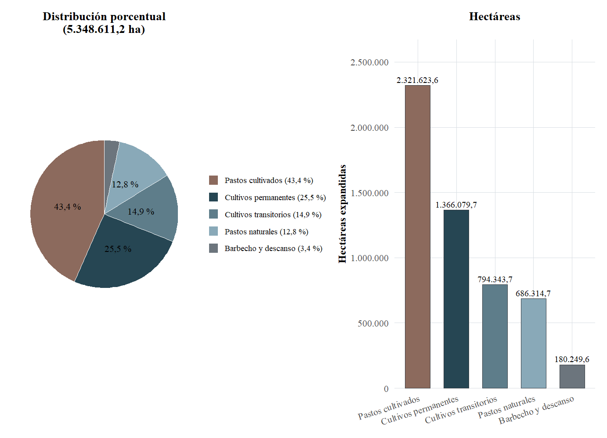
6.2.3 Estructura productiva y distribución de la superficie agropecuaria
La estructura de los principales usos del suelo agropecuario se analiza a partir del procesamiento de los módulos de cultivos permanentes, cultivos transitorios y pastos cultivados de la ESPAC 2022. La estimación de las superficies se efectuó mediante la expansión de los registros muestrales usando el factor de expansión de la encuesta, con el fin de obtener agregados representativos a escala nacional. Con fines analíticos y expositivos, se aplicó un criterio de cobertura acumulada del 80 %, que consistió en ordenar los cultivos según su superficie expandida y seleccionar aquellos que concentran la mayor parte del total en cada módulo, agrupando las participaciones residuales en una categoría agregada. Este procedimiento permite identificar los rubros estructuralmente dominantes sin perder de vista la diversidad restante de menor peso relativo.
En términos agregados, la superficie expandida correspondiente a los principales usos productivos considerados en esta sección alcanza aproximadamente 5,3 millones de hectáreas a escala nacional. De este total, alrededor de 2,3 millones de hectáreas corresponden a pastos cultivados, mientras que 1,37 millones de hectáreas se destinan a cultivos permanentes y 0,79 millones de hectáreas se encuentran ocupadas por cultivos transitorios. Estas magnitudes permiten dimensionar la escala relativa de los distintos sistemas productivos y evidencian el peso territorial de las actividades pecuarias dentro de la estructura agropecuaria del país.
Más allá de su utilidad descriptiva, esta caracterización resulta relevante para la investigación porque la composición productiva constituye una condición estructural dentro de la cual se configuran los niveles de productividad de la superficie y del trabajo. En efecto, los distintos cultivos difieren en requerimientos de tierra, intensidad laboral, duración del ciclo productivo, incorporación tecnológica y articulación con los mercados. Por ello, el predominio superficial de determinados rubros no implica, por sí mismo, mayores niveles de productividad, pero sí permite reconocer la base agraria sobre la que posteriormente se examina su relación con la tenencia de la tierra.
Los resultados de la Tabla 12 evidencian patrones diferenciados según el tipo de uso agropecuario. En el caso de los cultivos permanentes, la estructura productiva se encuentra encabezada por el cacao, seguido por la palma africana, el banano de exportación, el plátano y la caña de azúcar, configurando el núcleo principal de la superficie nacional destinada a cultivos de largo ciclo. Esta composición sugiere el peso de actividades con importante presencia territorial y distinta articulación comercial, desde sistemas más vinculados a la exportación hasta producciones de amplia difusión en mercados internos.
En los cultivos transitorios, la superficie se concentra principalmente en el maíz duro seco y el arroz, mientras que el resto de rubros presenta una participación comparativamente menor. Este patrón refleja una estructura agrícola donde unos pocos cultivos explican buena parte de la ocupación del suelo dentro del ciclo anual, lo cual resulta analíticamente relevante porque estos sistemas productivos suelen involucrar combinaciones específicas entre tierra, mano de obra e insumos, con posibles efectos diferenciados sobre la productividad por hectárea y por trabajador.
Por su parte, en los pastos cultivados predominan el pasto Saboya y el pasto mixto, que en conjunto representan una fracción importante de las áreas destinadas a la actividad pecuaria. La magnitud de estas coberturas confirma el peso de los usos pecuarios dentro de la estructura agropecuaria nacional y sugiere la presencia de sistemas productivos donde la relación entre superficie disponible, carga animal, organización del trabajo y modalidad de tenencia puede adquirir importancia.
| Cultivo | Superficie (ha) (exp.) | Porcentaje (%) | Porcentaje acumulado (%) |
|---|---|---|---|
| Cultivos permanentes | |||
| Cacao (almendra seca) | 591.557 | 41,3 | 41,3 |
| Palma africana (fruta fresca) | 196.082 | 13,7 | 55,0 |
| Banano de exportación (fruta fresca) | 172.653 | 12,0 | 67,0 |
| Plátano (fruta fresca) | 133.145 | 9,3 | 76,3 |
| Caña de azúcar / azúcar (tallo fresco) | 116.515 | 8,1 | 84,4 |
| Resto de permanentes | 223.002 | 15,6 | 100,0 |
| Cultivos transitorios | |||
| Maiz duro seco (grano seco) | 372.581 | 38,7 | 38,7 |
| Arroz (en cáscara) | 343.061 | 35,7 | 74,4 |
| Maiz suave seco (grano seco) | 42.058 | 4,4 | 78,8 |
| Resto de transitorios | 204.054 | 21,2 | 100,0 |
| Pastos cultivados | |||
| Saboya | 773.806 | 33,3 | 33,3 |
| Pasto mixto | 754.619 | 32,4 | 65,7 |
| Resto de pastos cultivados | 797.074 | 34,3 | 100,0 |
| Nota: | |||
| Se incluyen los cultivos que concentran la mayor superficie expandida; el resto se agrupa en una categoría residual. | |||
| Fuente: Elaboración propia a partir de ESPAC 2022. | |||
A partir de la estructura productiva presentada en la Tabla 12, resulta pertinente examinar la dimensión territorial de los cultivos permanentes con el fin de identificar los patrones regionales de especialización agrícola dentro del país. Mientras la tabla anterior resume la composición de la superficie agrícola a escala nacional, el análisis cartográfico permite observar cómo los distintos sistemas productivos se distribuyen espacialmente entre las provincias del Ecuador.
La Figura 8 presenta el cultivo permanente predominante en cada provincia, definido como aquel que registra la mayor superficie plantada según la información de la ESPAC 2022. Para esta representación se consideran todos los cultivos permanentes registrados en el módulo correspondiente, identificando en cada provincia el rubro que concentra la mayor superficie agrícola dentro de esta categoría.
El patrón territorial observado muestra una clara presencia de cultivos tropicales asociados a sistemas productivos de largo ciclo. En varias provincias del país se identifica al cacao como el cultivo permanente predominante, lo que refleja su amplia difusión territorial y su importancia dentro de la estructura productiva agrícola nacional. Este cultivo se encuentra presente tanto en provincias de la región Costa como en zonas de transición hacia la Amazonía, evidenciando su adaptabilidad a distintos contextos agroecológicos.
En otras provincias se observa la predominancia del banano de exportación y del plátano, cultivos característicos de zonas con condiciones climáticas cálido-húmedas. La presencia territorial de estos rubros se relaciona con sistemas productivos vinculados tanto al mercado externo como al abastecimiento interno, y forma parte de una larga trayectoria histórica de especialización agrícola en determinadas áreas del país.
Asimismo, el mapa muestra provincias donde el cultivo permanente predominante corresponde al café (grano oro) o a la caña de azúcar, lo que refleja la existencia de sistemas productivos regionalmente diferenciados asociados a condiciones específicas de clima, altitud y disponibilidad de tierra. Finalmente, en algunas provincias la categoría otros permanentes agrupa una diversidad de cultivos de menor peso relativo individual, pero que en conjunto constituyen la mayor superficie dentro de esta categoría en el territorio correspondiente.
En conjunto, la Figura 8 evidencia que la distribución territorial de los cultivos permanentes responde a una estructura productiva heterogénea, donde distintas regiones concentran actividades agrícolas específicas según sus condiciones agroecológicas y sus trayectorias productivas. Esta diferenciación territorial resulta relevante para el análisis de la productividad agrícola, ya que los distintos sistemas productivos presentan requerimientos diferenciados de tierra, trabajo y organización productiva.
Desde la perspectiva de esta investigación, estos patrones territoriales sugieren que la relación entre productividad de la superficie, productividad del trabajo y tenencia de la tierra debe interpretarse considerando los contextos productivos específicos en los que se desarrollan las unidades agropecuarias. En otras palabras, las diferencias regionales en la especialización agrícola pueden influir en la forma en que se combinan los factores productivos y, por tanto, en los niveles de productividad observados en el sector agropecuario.
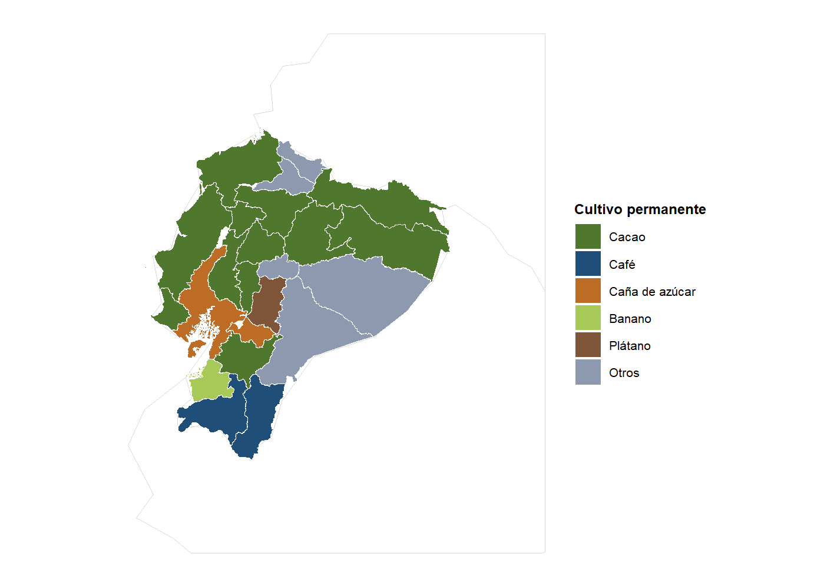
En complemento al análisis territorial de los cultivos permanentes presentado en la Figura 8, resulta pertinente examinar la distribución espacial de los cultivos transitorios, ya que estos reflejan con mayor claridad la dinámica anual de los sistemas agrícolas dentro del país. La distribución espacial de los cultivos transitorios se presenta en la Figura 9, donde se identifica el cultivo de ciclo corto que registra la mayor superficie plantada en cada provincia según la información de la ESPAC 2022. Esta representación permite observar la forma en que los distintos sistemas agrícolas de ciclo corto se distribuyen territorialmente dentro del país.
El mapa muestra que diferentes cultivos transitorios predominan en distintas provincias. Entre ellos se identifican el maíz duro seco (grano seco), el maíz suave seco (grano seco), el arroz (en cáscara), la papa, la yuca y el brócoli, además de una categoría agregada correspondiente a otros transitorios.
En varias provincias de la región Costa se observa la presencia de cultivos como el arroz en cáscara y el maíz duro seco como actividades predominantes dentro de la estructura agrícola provincial. Estos cultivos se desarrollan en zonas con condiciones climáticas cálidas y suelos aptos para sistemas agrícolas de ciclo corto.
En la región Sierra aparecen con mayor frecuencia cultivos como la papa, el brócoli y el maíz suave seco. Estos sistemas agrícolas se desarrollan en contextos de mayor altitud y responden a condiciones agroclimáticas distintas a las observadas en las zonas costeras, lo que influye en la selección de los cultivos predominantes dentro de cada provincia.
Por su parte, en la región Amazónica se identifican provincias donde el cultivo predominante corresponde al maíz duro seco, a la yuca o a la categoría otros transitorios. Estos patrones reflejan configuraciones productivas adaptadas a las condiciones ecológicas de la región, donde los sistemas agrícolas de ciclo corto forman parte de la estructura productiva de las unidades agropecuarias.
En conjunto, la Figura 9 muestra que la distribución territorial de los cultivos transitorios presenta configuraciones productivas diferenciadas entre las regiones Costa, Sierra y Amazonía. Esta diversidad territorial constituye un elemento relevante para el análisis de la productividad agrícola, ya que los distintos cultivos de ciclo corto implican diferentes requerimientos de uso del suelo y del trabajo.
Desde la perspectiva de esta investigación, estos patrones territoriales forman parte del contexto productivo dentro del cual se analiza la relación entre productividad de la superficie, productividad del trabajo y tenencia de la tierra. La distribución regional de los cultivos contribuye a definir los sistemas productivos en los que operan las unidades agropecuarias y, por tanto, las condiciones bajo las cuales se combinan los factores productivos.
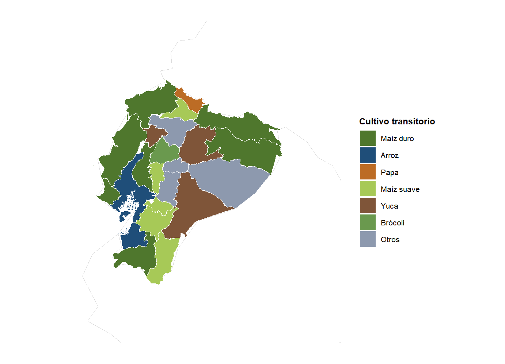
A partir del análisis de la distribución territorial de los cultivos permanentes y transitorios, es posible observar que la estructura productiva agrícola del país se organiza a través de sistemas productivos con distintas características en cuanto a ciclos de producción, requerimientos de tierra y organización del trabajo. Mientras algunos cultivos se desarrollan sobre superficies relativamente extensas asociadas a sistemas agrícolas tradicionales, otros se caracterizan por concentrar su producción en áreas más reducidas con mayores niveles de especialización productiva.
En este contexto, resulta pertinente examinar el caso de la producción florícola, cuya estructura productiva presenta características particulares dentro del sector agropecuario. A diferencia de varios cultivos analizados previamente, la floricultura se desarrolla generalmente en superficies más acotadas, pero bajo sistemas de producción que demandan una organización técnica y laboral más intensiva. Por esta razón, el análisis de este subsector permite incorporar una dimensión adicional al estudio de la productividad agrícola, al evidenciar cómo distintos sistemas productivos combinan de manera diferenciada los factores tierra y trabajo.
La Tabla 13 muestra que la superficie destinada a la producción florícola asciende a 7.854,1 hectáreas en el conjunto de los módulos analizados. De este total, 6.456,4 hectáreas corresponden a flores permanentes y 1.397,7 hectáreas a flores transitorias. Estas magnitudes permiten ubicar a la floricultura dentro de la estructura agrícola nacional como un subsector de menor extensión relativa frente a otros usos del suelo ya examinados, pero con una configuración productiva específica.
En el caso de las flores permanentes, la superficie se concentra principalmente en la producción de rosas, que constituye la especie con mayor presencia dentro de este módulo. A continuación se ubican otras especies como gypsophilla, astromelias y clavel, mientras que el resto de variedades se agrupa en la categoría resto de flores permanentes. Esta composición muestra una estructura donde una especie concentra una parte importante de la superficie cultivada, acompañada por otras flores con menor participación relativa.
Por su parte, las flores transitorias presentan una composición más diversificada. Dentro de este grupo se identifican especies como girasol, iris o lirio, delphinium y aster, además de aquellas agrupadas en la categoría resto de flores transitorias. En este caso, la distribución de la superficie sugiere una participación menos concentrada entre las especies registradas en el módulo.
Dentro del contexto productivo ecuatoriano, la floricultura se vincula principalmente con sistemas agrícolas especializados desarrollados en espacios de la Sierra, donde las condiciones climáticas, la altitud y la organización técnica de la producción han favorecido el cultivo de flores con orientación comercial. En ese sentido, su análisis permite incorporar un tipo de sistema agrícola distinto al de los cultivos extensivos y al de varios cultivos alimentarios de ciclo corto analizados previamente. Desde la perspectiva de esta investigación, este subsector resulta relevante porque expresa una forma de organización productiva en la que la superficie cultivada, el manejo técnico y el uso del trabajo se articulan de manera distinta a la observada en otros sistemas agrícolas.
| Flor | Superficie sembrada (ha) | Participación (%) |
|---|---|---|
| Flores permanentes | ||
| Rosa | 5.711,3 | 88,5 |
| Gysophilla | 234,5 | 3,6 |
| Astromellas | 105,3 | 1,6 |
| Clavel | 104,6 | 1,6 |
| Resto de permanentes | 300,7 | 4,7 |
| Flores transitorias | ||
| Girasoles | 172,8 | 12,4 |
| Iris - lirios | 102,8 | 7,4 |
| Delphinium (lackpur) | 74,8 | 5,4 |
| Aster | 69,0 | 4,9 |
| Resto de transitorias | 978,3 | 70,0 |
| Fuente: Elaboración propia a partir de ESPAC 2022. | ||
En conjunto, el análisis de los cultivos permanentes, los cultivos transitorios, los pastos cultivados y la producción florícola muestra que la estructura agrícola ecuatoriana se compone de sistemas productivos con distintos requerimientos de superficie, ciclos de producción y organización del trabajo. Asimismo, su distribución territorial presenta configuraciones diferenciadas entre las regiones Costa, Sierra y Amazonía.
6.2.4 Caracterización de la actividad pecuaria
En conjunto con la producción agrícola analizada en la sección anterior, la actividad pecuaria constituye otro componente relevante dentro de la estructura productiva de las unidades agropecuarias. Mientras algunos sistemas productivos se orientan principalmente al cultivo de la tierra, otros combinan actividades agrícolas y pecuarias o concentran su producción en la crianza de animales. En este contexto, se estima pertinente examinar la composición de las existencias pecuarias registradas en la ESPAC 2022, con el fin de identificar las principales especies presentes en el sistema productivo agropecuario y su peso relativo dentro del conjunto del hato nacional.
A partir de un total de 5.629.981 cabezas de ganado registradas en la ESPAC 2022, la estructura pecuaria nacional presenta una composición diferenciada entre las especies consideradas. Dentro de este conjunto, el ganado vacuno concentra la mayor parte de las existencias pecuarias registradas en la encuesta (68,6 %). Junto con el ganado porcino y ovino, estas tres especies reúnen la mayor proporción del hato nacional, lo que permite identificar su papel dentro de la configuración general de la actividad pecuaria (Tabla 14).
| Especie pecuaria | Número de cabezas | Participación (%) |
|---|---|---|
| Vacuno | 3.860.493 | 68,6 |
| Porcino | 943.249 | 16,8 |
| Ovino | 551.960 | 9,8 |
| Caballar | 155.407 | 2,8 |
| Mular | 61.914 | 1,1 |
| Asnal | 33.167 | 0,6 |
| Caprino | 23.789 | 0,4 |
| Total | 5.629.981 | 100,0 |
| Fuente: Elaboración propia a partir de ESPAC 2022. |
Las demás especies presentan una participación menor dentro del total. Entre ellas se encuentran el ganado caballar, mular, asnal y caprino, cuya presencia suele vincularse con actividades complementarias dentro de las unidades agropecuarias, como el trabajo agrícola, el transporte rural o sistemas productivos de menor escala.
La estructura del hato bovino nacional asciende a 3.860.493 cabezas. Dentro de este total predominan las hembras, especialmente las vacas, lo que confirma el peso de las unidades orientadas a reproducción, leche y doble propósito. En contraste, los machos presentan una participación menor, mientras que las categorías jóvenes muestran la continuidad del proceso de reposición del hato (Tabla 15).
| Categoría | Número de cabezas | Participación (%) |
|---|---|---|
| Resumen general | ||
| Total | 3.860.493 | 100,0 |
| Machos | ||
| Total machos | 1.179.000 | 30,5 |
| Terneros | 466.565 | 12,1 |
| Toretes | 455.128 | 11,8 |
| Toros | 257.307 | 6,7 |
| Hembras | ||
| Total hembras | 2.681.493 | 69,5 |
| Terneras | 517.930 | 13,4 |
| Vaconas | 647.172 | 16,8 |
| Vacas | 1.516.391 | 39,3 |
| Fuente: Elaboración propia a partir de ESPAC 2022. | ||
La composición racial del ganado bovino muestra que del total, predominan los animales mestizos y, en segundo término, los criollos. Esta estructura muestra que la ganadería ecuatoriana se apoya principalmente en una base genética adaptada a condiciones locales, mientras que las razas especializadas aparecen como un componente complementario vinculado a sistemas más orientados a carne o leche. En conjunto, esta distribución sugiere una fuerte articulación entre adaptación territorial y funcionalidad productiva del hato (Tabla 16).
| Categoría | Número de cabezas | Participación (%) |
|---|---|---|
| Resumen general | ||
| Total | 3.860.493 | 100,0 |
| Razas predominantes | ||
| Mestizo | 1.385.020 | 35,9 |
| Criollo | 957.967 | 24,8 |
| Razas especializadas | ||
| Holstein, Brown Swiss y Jersey | 736.972 | 19,1 |
| Brahman | 491.057 | 12,7 |
| Otras razas | ||
| Resto de razas | 289.477 | 7,5 |
| Fuente: Elaboración propia a partir de ESPAC 2022. | ||
La producción lechera bovina se sustenta en 815.065 vacas ordeñadas, que en conjunto generan 5.502.787 litros diarios. A partir de estas cifras, el rendimiento promedio nacional se ubica en 6,75 litros por vaca por día. Estos indicadores permiten caracterizar el nivel de producción lechera dentro del sistema bovino y constituyen una referencia inicial para el análisis posterior de productividad en las unidades agropecuarias (Tabla 17).
| Indicador | Valor |
|---|---|
| Producción lechera | |
| Vacas ordeñadas | 815.065 |
| Producción diaria de leche (litros) | 5.502.787 |
| Promedio de litros por vaca/día | 6,75 |
| Fuente: Elaboración propia a partir de ESPAC 2022. | |
La distribución territorial de la producción diaria de leche bovina muestra una mayor concentración en algunas provincias de la región andina y del litoral. En el mapa destacan particularmente Pichincha, que presenta el mayor volumen de producción diaria, seguida por Manabí y Los Ríos, donde también se observan niveles elevados de producción. En la región interandina se identifican además aportes relevantes en provincias como Cotopaxi, Azuay y Carchi, que forman parte de los espacios donde la actividad lechera mantiene una presencia importante dentro del sistema bovino. En contraste, varias provincias de la Amazonía y del sur del país presentan volúmenes menores, lo que evidencia una distribución territorial diferenciada de la producción lechera a escala nacional (Figura 10).
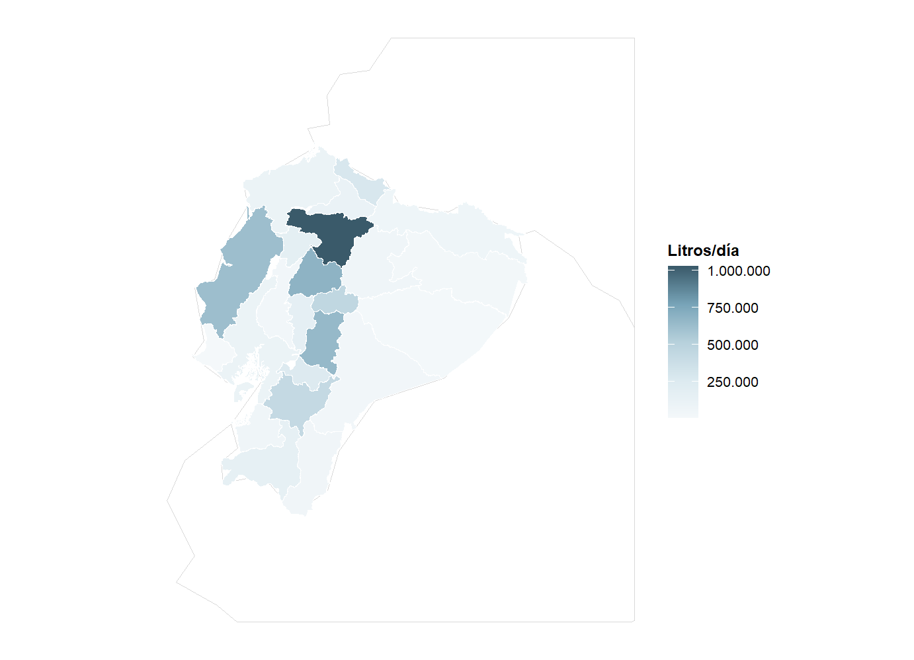
El rendimiento lechero bovino presenta diferencias territoriales entre provincias. Los valores más altos de litros por vaca por día se concentran principalmente en el centro-norte de la región andina, donde destacan Pichincha, Cotopaxi y Carchi, que muestran los tonos más intensos del mapa. También se observan niveles relativamente elevados en Tungurahua y Chimborazo, lo que evidencia la presencia de sistemas lecheros con mayor rendimiento en este corredor interandino. En contraste, varias provincias del litoral y de la Amazonía presentan valores menores de litros por vaca, lo que sugiere que, aunque la actividad bovina está presente en estos territorios, el nivel de productividad lechera es relativamente más bajo. Este patrón territorial muestra que las diferencias en la producción lechera no solo dependen del tamaño del hato o del volumen total producido, sino también del rendimiento obtenido por animal en cada provincia (Figura 11).
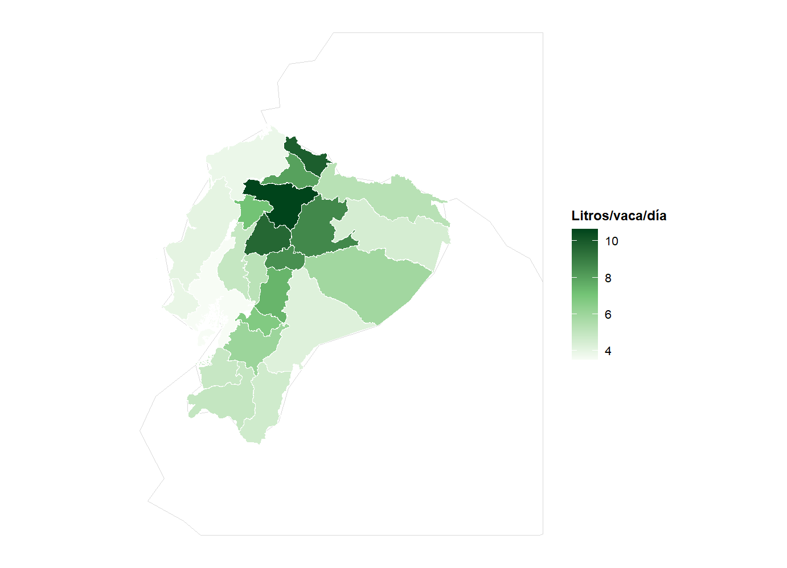
De las 5.629.981 cabezas de ganado registradas en la ESPAC 2022, las especies distintas al ganado bovino muestran configuraciones productivas diferenciadas. El ganado porcino y ovino reúnen la mayor parte de este subconjunto, mientras que las especies caballar, mular, asnal y caprina presentan participaciones menores dentro del total pecuario. En términos territoriales, el ganado porcino se observa con mayor presencia en Santo Domingo de los Tsáchilas, Cotopaxi, Guayas y Manabí, mientras que el ganado ovino se concentra principalmente en Chimborazo, Cotopaxi, Tungurahua y Azuay. Por su parte, las especies caballar, mular y asnal se vinculan con funciones de trabajo y transporte rural en provincias como Manabí, Esmeraldas, Chimborazo y Loja, mientras que el ganado caprino presenta una presencia más localizada, especialmente en Loja (Tabla 18).
| Especie pecuaria | Participación (%) | Orientación productiva | Escala productiva | Provincias de mayor presencia |
|---|---|---|---|---|
| Porcino | 16,8 | Producción de carne | Pequeña escala | Santo Domingo de los Tsáchilas, Cotopaxi, Guayas, Manabí |
| Ovino | 9,8 | Producción de carne y fibra | Pequeña escala | Chimborazo, Cotopaxi, Tungurahua, Azuay |
| Caballar | 2,8 | Trabajo y transporte rural | Pequeña escala | Manabí, Esmeraldas, Azuay, Guayas |
| Mular | 1,1 | Trabajo y transporte rural | Pequeña escala | Manabí, Esmeraldas, Bolívar, Loja |
| Asnal | 0,6 | Trabajo y transporte rural | Pequeña escala | Chimborazo, Manabí, Cotopaxi, Loja |
| Caprino | 0,4 | Producción de carne | Pequeña escala | Loja, Azuay, Cotopaxi, Orellana |
| Nota: | ||||
| La participación se calcula respecto del total de existencias pecuarias consideradas en la tabla general de especies. | ||||
| Fuente: Elaboración propia a partir de ESPAC 2022. |
6.3 Estructura de la tenencia de la tierra
La estructura productiva descrita en las secciones anteriores se desarrolla dentro de un marco institucional definido por las formas de acceso y control de la tierra. En el caso del sector agropecuario ecuatoriano, estas formas se expresan en distintos regímenes de tenencia que condicionan la organización de las unidades productivas y el uso de la superficie agrícola.
Para efectos del análisis, las modalidades de tenencia registradas en la encuesta se agrupan en tres categorías analíticas: tenencia directa, arrendamiento y aparcería y otros regímenes de tenencia. Esta reclasificación permite simplificar la estructura institucional del acceso a la tierra y facilita su análisis en relación con el tamaño de los predios y las características productivas de las unidades agropecuarias.
Los resultados presentados en la Tabla 19 se elaboraron a partir del régimen predominante de tenencia dentro de cada UPA, definido según la mayor superficie acumulada de terrenos en la unidad. La superficie total se obtuvo sumando la variable supertotal y las estimaciones se expandieron mediante el factor de expansión de la ESPAC 2022. Con esta base se calcularon la media y la mediana del tamaño de las unidades productivas según tres grandes grupos de tenencia.
Los resultados muestran que la tenencia directa concentra el 93,0 % de las unidades productivas agropecuarias del país. En este grupo, la superficie media alcanza 4,69 hectáreas, mientras que la mediana se sitúa en 0,89 hectáreas. El arrendamiento y aparcería representa el 4,9 % de las unidades, con una superficie media de 3,54 hectáreas y una mediana de 1,09 hectáreas. Por su parte, los otros regímenes de tenencia corresponden al 2,1 % de las UPA y presentan una superficie media de 15,49 hectáreas, mientras que la mediana alcanza 1,14 hectáreas.
La incorporación del percentil 90 permite identificar con mayor claridad la asimetría en la distribución de la tierra. En las UPA bajo tenencia directa y arrendamiento o aparcería, el 90 % de las unidades poseen menos de 9 y 7,95 hectáreas, respectivamente, mientras que los otros regímenes de tenencia alcanzan un percentil 90 de 34,61 hectáreas. La diferencia entre la media, la mediana y el percentil 90 sugiere una estructura agraria caracterizada por el predominio de pequeñas explotaciones y una concentración relativa de superficie en un grupo reducido de unidades de mayor tamaño.
| Régimen de tenencia | Porcentaje (%) | Superficie media (ha) | Superficie mediana (ha) | Percentil 90 (ha) |
|---|---|---|---|---|
| Tenencia directa | 93,0 | 4,69 | 0,89 | 9,00 |
| arrendamiento y aparcería | 4,9 | 3,54 | 1,09 | 7,95 |
| Otros regímenes de tenencia | 2,1 | 15,49 | 1,14 | 34,61 |
| Nota: | ||||
| La clasificación se basó en la tenencia predominante de cada UPA; la superficie total se calculó mediante supertotal y los estadísticos fueron ponderados. | ||||
| Fuente: Elaboración propia a partir de ESPAC 2022. |
Si bien la distribución del tamaño de los predios permite identificar diferencias entre los regímenes de tenencia, la estructura agraria también puede analizarse a partir de la forma en que estas modalidades se combinan dentro de las unidades agropecuarias. Con este propósito, se presenta a continuación una representación gráfica que permite visualizar la composición relativa de las distintas formas de acceso a la tierra.
La Figura 12 muestra la composición de la tenencia dentro de las unidades agropecuarias. Cada punto representa una UPA y su posición depende de la proporción de su superficie bajo tenencia directa, arrendamiento-aparcería y otros regímenes de tenencia. Los vértices corresponden a unidades con una sola modalidad, los lados representan combinaciones de dos grupos y el interior indica la coexistencia de los tres grupos de tenencia.
La distribución de los puntos evidencia una concentración hacia el vértice correspondiente a la tenencia directa. No obstante, también se observan UPA sobre los lados y en el interior del triángulo, lo que refleja combinaciones de modalidades de acceso a la tierra dentro de una misma unidad productiva.
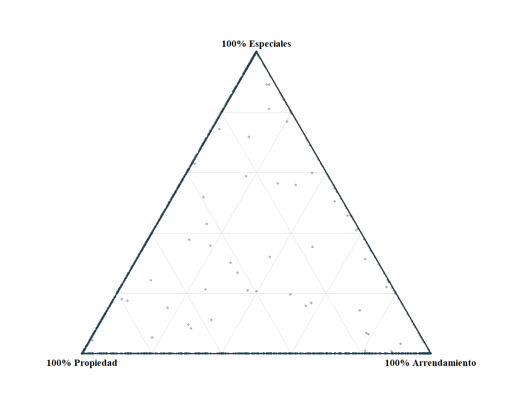
Los resultados muestran que la estructura de la tenencia de la tierra se caracteriza por una clara predominancia de la tenencia directa, acompañada de diferentes configuraciones en la combinación de modalidades de acceso dentro de las unidades agropecuarias. Estas características institucionales constituyen un elemento relevante para el análisis de la organización productiva del sector agropecuario, en la medida en que las formas de acceso y control de la tierra pueden asociarse con distintas escalas de operación y condiciones de uso de los recursos productivos.
A partir de esta configuración institucional general, resulta pertinente examinar si las distintas modalidades de acceso a la tierra se distribuyen de manera similar entre los diferentes sistemas productivos del sector agropecuario. En particular, es relevante identificar si determinados sectores productivos presentan una mayor presencia relativa de modalidades como el arrendamiento-aparcería u otros regímenes de tenencia, lo cual podría reflejar estrategias productivas diferenciadas en el uso de la tierra.
La Tabla 20 presenta la distribución promedio del área de las UPA según los principales regímenes de tenencia de la tierra y el sector productivo dominante. Para su construcción se identificó primero la actividad productiva predominante en cada UPA a partir del rubro con mayor valor económico de producción entre las actividades reportadas en la encuesta. Posteriormente, estas actividades se agruparon en cuatro sectores productivos (agricultura, pecuario, forestal y otros); la categoría otros comprende la cría de asnos, caballos, mulas y cabras. Finalmente, se calculó la proporción promedio del área del predio bajo cada régimen de tenencia (tenencia directa, arrendamiento-aparcería y otros regímenes de tenencia) para cada grupo de UPA.
En términos de grandes magnitudes, los resultados muestran que las tierras en propiedad constituyen la forma predominante de acceso en los cuatro sectores, con participaciones comprendidas entre el 78,6 % en agricultura y el 88,4 % en el sector forestal. Las unidades con orientación agrícola presentan la mayor proporción promedio de área bajo arrendamiento y aparcería (7,3 %), seguidas por las pecuarias (4,3 %), otros sectores (4,2 %) y el sector forestal (1,1 %). Los otros regímenes de tenencia representan entre el 10,5 % del área en el sector forestal y el 14,1 % en agricultura.
Estos resultados sugieren que las modalidades de acceso a la tierra no se distribuyen de manera homogénea entre los distintos sistemas productivos del sector agropecuario ecuatoriano. En particular, la mayor presencia relativa del arrendamiento y aparcería en las actividades agrícolas podría asociarse con estrategias productivas más intensivas o con una mayor flexibilidad en el acceso a la tierra para cultivos específicos.
| Sector productivo | Tierras en propiedad (%) | arrendamiento y aparcería (%) | Otros regímenes de tenencia (%) |
|---|---|---|---|
| Forestal | 88,4 | 1,1 | 10,5 |
| Pecuario | 84,1 | 4,3 | 11,6 |
| Otros | 82,1 | 4,2 | 13,7 |
| Agricultura | 78,6 | 7,3 | 14,1 |
| Nota: | |||
| El sector dominante corresponde a la actividad de mayor valor productivo y los valores son proporciones promedio ponderadas de superficie. | |||
| Fuente: Elaboración propia a partir de ESPAC 2022. |
6.4 Productividad de los factores y estructura agraria en las unidades agropecuarias
6.4.1 Productividad de los factores en las UPA
Una vez caracterizada la estructura productiva del sector agropecuario y las modalidades de tenencia de la tierra presentes en las unidades agropecuarias, resulta pertinente examinar el desempeño productivo asociado al uso de los factores productivos. En particular, el análisis de la productividad de la tierra y del trabajo permite aproximarse al rendimiento económico de las actividades agropecuarias y comprender cómo se combinan los recursos disponibles dentro de las unidades productivas. En este contexto, la productividad de la tierra se define como la relación entre la producción obtenida y la superficie utilizada, mientras que la productividad del trabajo refleja la producción generada por unidad de mano de obra empleada. El examen conjunto de estos indicadores permite identificar diferencias en el desempeño productivo entre unidades productivas, así como explorar posibles variaciones asociadas con los regímenes de tenencia de la tierra y los patrones territoriales de producción presentes en el sector agropecuario ecuatoriano.
Con el fin de identificar si el desempeño productivo varía según la especialización económica de las unidades agropecuarias, se presenta a continuación una síntesis de la productividad de la tierra y del trabajo según el sector productivo dominante. Este análisis permite complementar la descripción general del sector agropecuario con una aproximación más directa a la heterogeneidad productiva observada entre distintos tipos de unidades.
La Tabla 21 presenta la mediana de los indicadores de productividad de la tierra y del trabajo según el sector productivo dominante de las UPA. Para su construcción se identificó, en primer lugar, la actividad productiva predominante en cada unidad a partir del rubro con mayor valor económico de producción entre las actividades reportadas en la encuesta. Posteriormente, estos rubros se agruparon en cuatro sectores productivos (agricultura, pecuario, forestal y otros) y se calcularon las medianas de productividad de cada grupo. El cálculo se restringió a 28.580 UPA con ambas productividades finitas y estrictamente positivas y con un factor de expansión finito y positivo; por construcción, estos criterios requieren producción valorizada, superficie declarada y número de personas ocupadas estrictamente positivos. El uso de la mediana permite representar los valores típicos de los sistemas productivos y reducir la influencia de valores extremos.
Los resultados muestran que las unidades de orientación pecuaria registran la mayor mediana de productividad de la tierra, con 2.051,7 USD/ha, y también la mayor mediana de productividad del trabajo, con 4.106,3 USD por persona ocupada. Las unidades agrícolas alcanzan medianas de 1.624,8 USD/ha y 2.151,3 USD por persona ocupada. Las actividades clasificadas como otros presentan 1.099,5 USD/ha y 3.242,2 USD por persona ocupada, respectivamente, mientras que las unidades forestales registran las menores medianas: 560,1 USD/ha y 566,8 USD por persona ocupada.
En términos analíticos, estos resultados evidencian que la productividad agropecuaria no se distribuye de manera homogénea entre los distintos sistemas productivos del país, sino que refleja diferencias estructurales asociadas al tipo de actividad predominante en las unidades productivas y a los niveles de intensificación en el uso de los factores de producción.
| Sector productivo | Mediana productividad de la tierra (USD/ha) | Mediana productividad del trabajo (USD/persona ocupada) | Número de observaciones |
|---|---|---|---|
| Pecuario | 2.051,7 | 4.106,3 | 16.532 |
| Agricultura | 1.624,8 | 2.151,3 | 10.554 |
| Otros | 1.099,5 | 3.242,2 | 1.135 |
| Forestal | 560,1 | 566,8 | 359 |
| Nota: | |||
| El sector dominante corresponde a la actividad de mayor valor productivo y las medianas consideran únicamente productividades positivas. | |||
| Fuente: Elaboración propia a partir de ESPAC 2022. |
Si bien las diferencias por sector productivo permiten identificar contrastes relevantes en la especialización económica de las unidades agropecuarias, el análisis puede profundizarse incorporando la dimensión institucional del acceso a la tierra. En este sentido, resulta pertinente examinar si los niveles típicos de productividad también difieren según el régimen predominante de tenencia, dado que las modalidades de acceso y control del suelo pueden condicionar la intensidad productiva, la escala de operación y las decisiones de uso de los factores.
La Tabla 22 presenta la mediana de los indicadores de productividad de la tierra y del trabajo según el régimen predominante de tenencia de las UPA. Para su construcción se identificó el régimen de tenencia dominante en cada unidad a partir de la mayor proporción del área del predio bajo cada modalidad (tenencia directa, arrendamiento y aparcería u otros regímenes de tenencia). Se utilizó la misma muestra de 28.580 UPA de la Tabla 21, restringida a observaciones con ambas productividades finitas y estrictamente positivas y con un factor de expansión finito y positivo; por construcción, estos criterios requieren producción valorizada, superficie declarada y número de personas ocupadas estrictamente positivos. Posteriormente, se calcularon las medianas de productividad de cada grupo para representar sus valores típicos y reducir la influencia de valores extremos.
Los resultados muestran que las unidades en las que predomina el arrendamiento y aparcería registran las mayores magnitudes de productividad dentro del conjunto analizado, con una mediana de productividad de la tierra de 2.486 USD/ha y una mediana de productividad del trabajo de 4.075 USD por persona ocupada. Las unidades donde predomina la tenencia directa presentan medianas de 1.790 USD/ha y 3.275 USD por persona ocupada, respectivamente. Las unidades bajo otros regímenes de tenencia registran las menores medianas de productividad de la tierra (1.503 USD/ha) y del trabajo (2.140 USD por persona ocupada).
En términos analíticos, estos resultados sugieren que las distintas formas de acceso a la tierra se asocian con diferencias en los niveles de productividad observados en las unidades agropecuarias. En particular, la mayor productividad mediana observada en los predios bajo arrendamiento y aparcería podría estar relacionada con estrategias productivas más intensivas o con un uso más eficiente de los factores productivos en contextos donde el acceso a la tierra se realiza a través de mecanismos de mercado.
| Régimen de tenencia | Mediana prod. tierra (USD/ha) | Mediana prod. trabajo (USD/persona ocupada) | N.º observaciones |
|---|---|---|---|
| arrendamiento y aparcería | 2.486 | 4.075 | 1.502 |
| Tenencia directa | 1.790 | 3.275 | 23.710 |
| Otros regímenes de tenencia | 1.503 | 2.140 | 3.368 |
| Nota: | |||
| La tenencia predominante corresponde al régimen con mayor superficie y las medianas consideran únicamente productividades positivas. | |||
| Fuente: Elaboración propia a partir de ESPAC 2022. |
Una vez identificadas las diferencias de productividad según sector productivo y régimen predominante de tenencia, resulta pertinente examinar la forma completa de distribución de estos indicadores a nivel de las unidades agropecuarias. Este paso permite complementar la lectura de los valores típicos con una visión más amplia de la heterogeneidad existente dentro del sector.
En primer lugar, se analiza la distribución de la productividad de la tierra. Este indicador permite identificar el grado de heterogeneidad existente en el rendimiento económico asociado al uso de la superficie agrícola, así como reconocer la presencia de unidades productivas con niveles significativamente distintos de eficiencia en el uso del recurso tierra.
La Figura 13 muestra la distribución de la productividad de la tierra en las unidades agropecuarias. La representación en escala logarítmica permite observar con mayor claridad la forma de la distribución, evitando que los valores más elevados dominen la representación gráfica y oculten el comportamiento de la mayor parte de las unidades productivas.
Los resultados evidencian una distribución altamente heterogénea de la productividad de la tierra. La mayor concentración de unidades agropecuarias se ubica en niveles intermedios de productividad, mientras que hacia los extremos de la distribución se observa un número considerablemente menor de unidades con niveles muy bajos o muy elevados de rendimiento económico por hectárea. Este patrón sugiere la coexistencia de distintos modelos productivos dentro del sector agropecuario ecuatoriano, donde una amplia proporción de unidades opera con niveles moderados de productividad, mientras que un conjunto más reducido alcanza niveles significativamente superiores, probablemente asociados a sistemas productivos más intensivos o especializados.
Por ende, la distribución observada pone de manifiesto la marcada heterogeneidad productiva del sector, lo cual constituye un elemento central para comprender las diferencias en el desempeño económico de las unidades productivas y su posible relación con factores estructurales como el régimen de tenencia de la tierra, la especialización productiva y las condiciones territoriales.
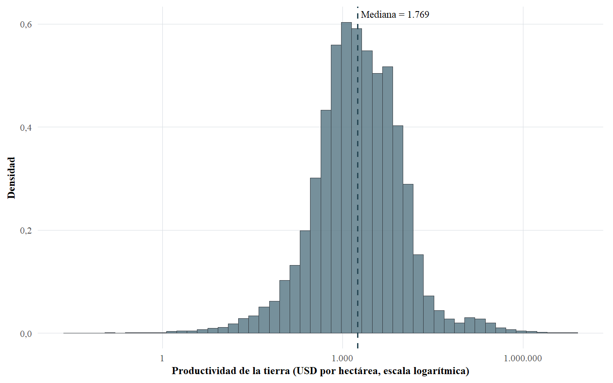
El análisis de la productividad de la tierra permite identificar importantes diferencias en el rendimiento económico asociado al uso de la superficie agrícola. No obstante, el desempeño productivo de las unidades agropecuarias también depende de la forma en que se utiliza el trabajo dentro de los sistemas productivos. En este sentido, resulta pertinente examinar la distribución de la productividad del trabajo, entendida como la producción generada por unidad de mano de obra empleada, con el fin de complementar el análisis del desempeño productivo de las unidades agropecuarias.
La Figura 14 presenta la distribución de la productividad del trabajo en las unidades agropecuarias. Al igual que en el caso de la productividad de la tierra, la representación se realiza en escala logarítmica con el fin de facilitar la visualización de una variable que presenta una elevada dispersión y la presencia de valores extremos.
La distribución muestra una concentración importante de unidades agropecuarias en niveles intermedios de productividad laboral, mientras que hacia los extremos de la distribución se observa un número menor de unidades con valores muy bajos o muy elevados de producción por trabajador. Este patrón refleja la existencia de diferencias en el rendimiento económico asociado al uso del trabajo entre las unidades productivas.
En conjunto, la forma de la distribución pone de manifiesto la heterogeneidad existente en la productividad del trabajo dentro del sector agropecuario
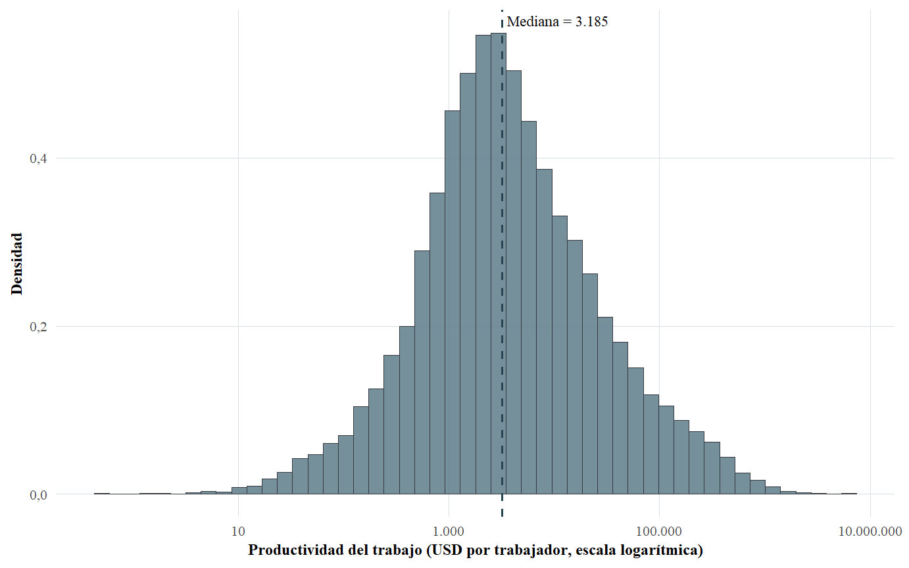
Una vez examinadas por separado las distribuciones de la productividad de la tierra y del trabajo, es posible analizar la relación existente entre ambos indicadores. Este ejercicio permite identificar si las unidades productivas que presentan mayores niveles de productividad por superficie tienden también a registrar mayores niveles de productividad laboral, lo cual permite examinar la forma en que se combinan los factores productivos dentro de las unidades agropecuarias.
La Figura 15 presenta la relación entre la productividad de la tierra y la productividad del trabajo en las unidades agropecuarias. La representación se realiza en escala logarítmica en ambos ejes con el fin de facilitar la visualización de variables que presentan una elevada dispersión y valores extremos.
La nube de puntos muestra una asociación positiva entre ambos indicadores de productividad. En términos generales, las unidades agropecuarias que registran mayores niveles de productividad por superficie tienden también a presentar mayores niveles de productividad del trabajo. La línea de suavización local mediante regresión (LOESS), junto con su intervalo de confianza al 95 %, permite visualizar esta tendencia general dentro de la distribución de los datos.
Al mismo tiempo, la dispersión observada alrededor de la línea de tendencia indica la existencia de diferencias en la forma en que los factores productivos se combinan dentro de las unidades agropecuarias. De este modo, unidades productivas con niveles similares de productividad de la tierra pueden registrar distintos niveles de productividad del trabajo, lo que refleja la diversidad de configuraciones productivas presentes en el sector agropecuario.
El patrón observado permite identificar la relación existente entre ambos factores productivos y proporciona un marco interpretativo para comprender cómo estas diferencias en el desempeño productivo pueden vincularse con las modalidades de tenencia de la tierra y los patrones territoriales de producción presentes en el sector agropecuario ecuatoriano.
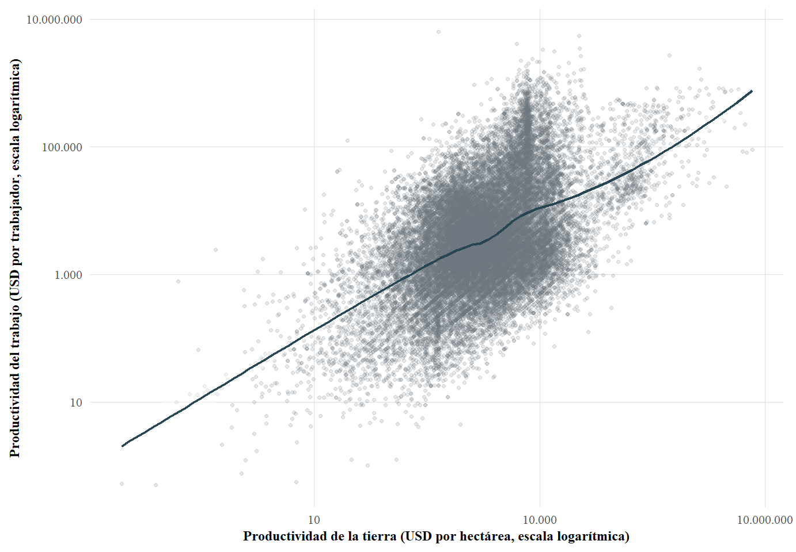
Una vez examinada la relación entre la productividad de la tierra y la productividad del trabajo, se estima adecuado analizar cómo estos niveles de desempeño productivo se distribuyen entre los distintos regímenes de tenencia de la tierra presentes en las unidades agropecuarias.
La Figura 16 muestra que la productividad de la tierra presenta distribuciones ampliamente superpuestas entre los distintos regímenes de tenencia. Los niveles centrales de productividad son similares entre categorías, aunque el arrendamiento y aparcería registra una mediana ligeramente superior. Asimismo, la mayor concentración de observaciones se ubica en rangos intermedios de productividad, mientras que las colas extendidas y la presencia de valores extremos evidencian una elevada heterogeneidad dentro de cada régimen. En particular, los otros regímenes de tenencia presentan una mayor dispersión hacia niveles bajos de productividad. En conjunto, los resultados sugieren que la variabilidad intragrupo es superior a las diferencias observadas entre los distintos regímenes de tenencia.
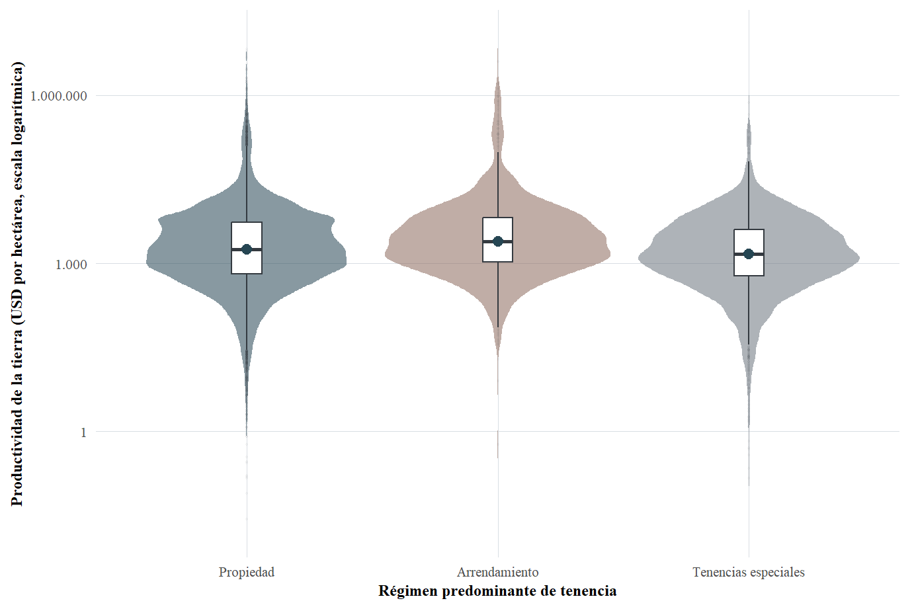
Complementariamente, resulta pertinente analizar si este patrón también se observa en la productividad del trabajo según el régimen predominante de tenencia de la tierra. La Figura 17 muestra que la productividad del trabajo presenta distribuciones ampliamente superpuestas entre los distintos regímenes de tenencia. Los niveles centrales de productividad son similares, aunque el arrendamiento y aparcería registra una mediana ligeramente superior. Asimismo, la mayor concentración de observaciones se ubica en niveles intermedios de productividad, mientras que las colas extendidas y la presencia de valores extremos reflejan una elevada heterogeneidad dentro de cada régimen. Los otros regímenes de tenencia exhiben una mayor dispersión y una distribución más extendida hacia niveles altos de productividad. En conjunto, los resultados indican que la variabilidad intragrupo supera las diferencias observadas entre los distintos regímenes de tenencia.
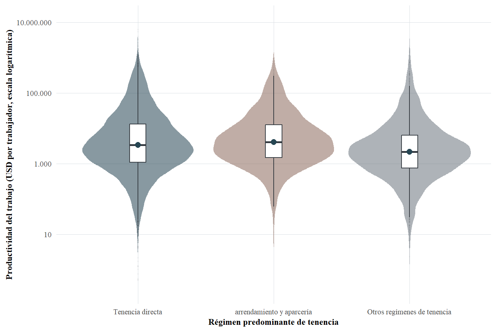
La Figura 18 muestra la distribución del índice combinado de productividad en las unidades agropecuarias. Este indicador se construye mediante la media geométrica entre la productividad de la tierra (producción por unidad de superficie) y la productividad del trabajo (producción por unidad de mano de obra), lo que permite integrar ambos factores productivos en una única medida sintética del desempeño productivo de las unidades agropecuarias.
El uso de la media geométrica permite equilibrar la contribución de ambos factores, de modo que el índice refleja el desempeño conjunto en el uso de la tierra y del trabajo. En este sentido, el índice toma valores más altos cuando una unidad productiva presenta niveles elevados de productividad en ambos factores y valores más bajos cuando alguno de ellos registra niveles reducidos.
La distribución se presenta en escala logarítmica con el fin de facilitar la visualización de una variable que presenta una amplia dispersión y valores extremos. Como se observa en la figura, la mayor concentración de unidades agropecuarias se ubica en niveles intermedios del índice, mientras que hacia los extremos se observa un menor número de unidades con valores muy bajos o muy elevados. Este patrón refleja la heterogeneidad existente en el desempeño productivo de las unidades agropecuarias cuando se consideran simultáneamente ambos factores productivos.
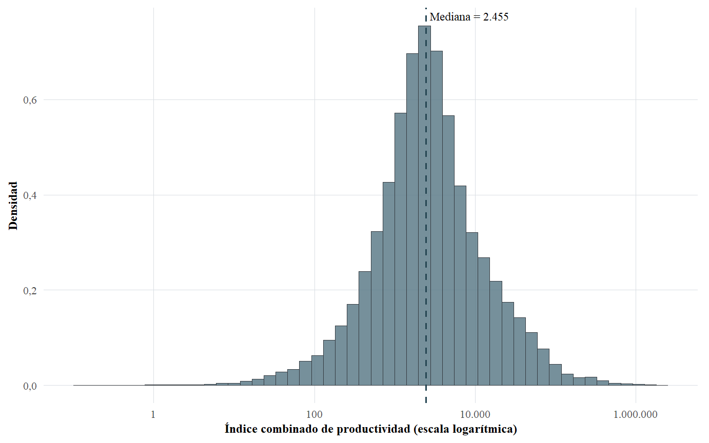
Una vez examinada la distribución del índice combinado de productividad, es relevante evaluar cómo este indicador se distribuye entre los distintos regímenes de tenencia de la tierra presentes en las unidades agropecuarias.
La Figura 19 evidencia que el índice combinado de productividad presenta distribuciones ampliamente superpuestas entre los distintos regímenes de tenencia, lo que sugiere un desempeño agregado similar entre categorías. Los niveles centrales muestran diferencias moderadas, observándose una mediana ligeramente superior en las unidades bajo arrendamiento y aparcería, mientras que la tenencia directa exhibe valores cercanos y los otros regímenes de tenencia presentan una mediana levemente inferior. Asimismo, la mayor concentración de observaciones se localiza en rangos intermedios del índice, aunque las distribuciones muestran colas extendidas y una marcada presencia de valores extremos, reflejando una elevada heterogeneidad interna. En particular, los otros regímenes de tenencia registran la mayor dispersión, con una distribución más amplia hacia valores bajos y altos de productividad. En conjunto, la evidencia sugiere que las diferencias en el índice combinado entre regímenes de tenencia son reducidas en comparación con la variabilidad existente dentro de cada grupo, lo que indica que otros factores estructurales y productivos podrían desempeñar un papel más relevante en la explicación del desempeño agregado de las unidades agropecuarias.
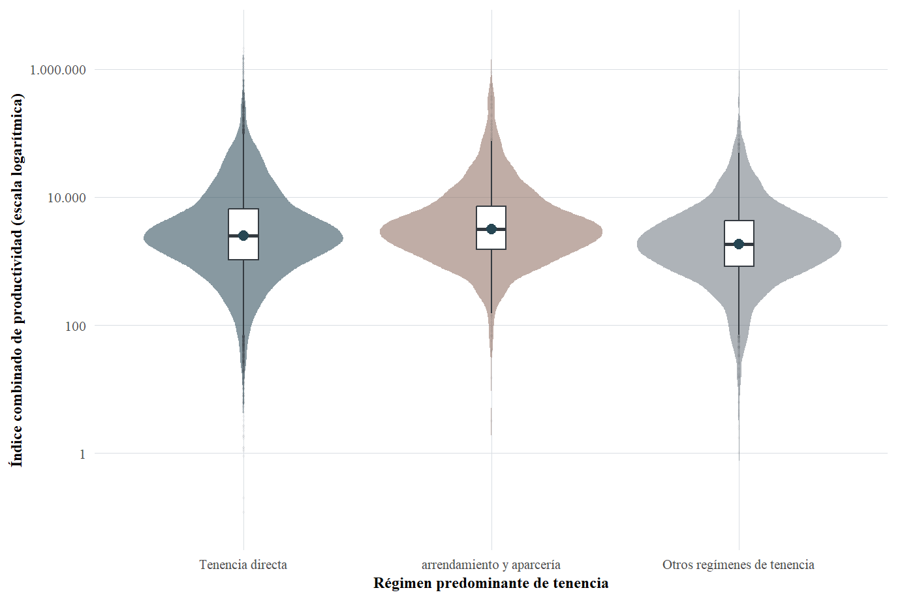
6.4.2 Patrones territoriales de la productividad agropecuaria
Una vez examinada la productividad de los factores a nivel de las unidades agropecuarias, resulta pertinente analizar la forma en que estos niveles de desempeño se distribuyen en el territorio. La dimensión espacial de la productividad permite identificar diferencias entre provincias y reconocer posibles patrones territoriales en el uso de la tierra y del trabajo dentro del sector agropecuario ecuatoriano.
Con este propósito, se construyen indicadores provinciales de productividad de la tierra y del trabajo a partir de la información registrada en las unidades agropecuarias. Considerando que las variables de productividad presentan distribuciones altamente asimétricas y la presencia de valores extremos, los indicadores territoriales se estiman utilizando la mediana provincial, lo que permite representar de manera más adecuada los niveles típicos de productividad dentro de cada provincia. La representación cartográfica de estos indicadores se realiza mediante mapas coropléticos clasificados utilizando el método de cortes naturales (Jenks), el cual agrupa provincias con valores similares del indicador y facilita la identificación de diferencias dentro de la distribución de la productividad.
En el caso de la productividad de la tierra, la distribución territorial de la Figura 20 muestra diferencias claras entre provincias del país. Los valores más elevados se registran en Tungurahua, donde la mediana alcanza aproximadamente 5.916 dólares de los Estados Unidos (USD) por hectárea. Le siguen Cotopaxi (3.413) y Manabí (3.343). También presentan valores relativamente altos Chimborazo (2.702), Pichincha (2.169) y Santo Domingo de los Tsáchilas (2.000).
En un nivel intermedio se ubican Los Ríos (1.905), Guayas (1.717), Santa Elena (1.648) y Carchi (1.320), seguidas por Cañar, El Oro, Bolívar e Imbabura, cuyas medianas se encuentran entre 1.121 y 1.217 USD por hectárea.
En contraste, los valores más bajos se concentran en provincias amazónicas: Orellana registra aproximadamente 351 USD por hectárea, Napo 370, Pastaza 416 y Morona Santiago 507.
En términos generales, el patrón territorial evidencia mayores niveles de productividad de la tierra en varias provincias de la Sierra central y en determinados espacios agrícolas de la Costa, mientras que en la Amazonía predominan estructuras productivas que generan menor valor por unidad de superficie.
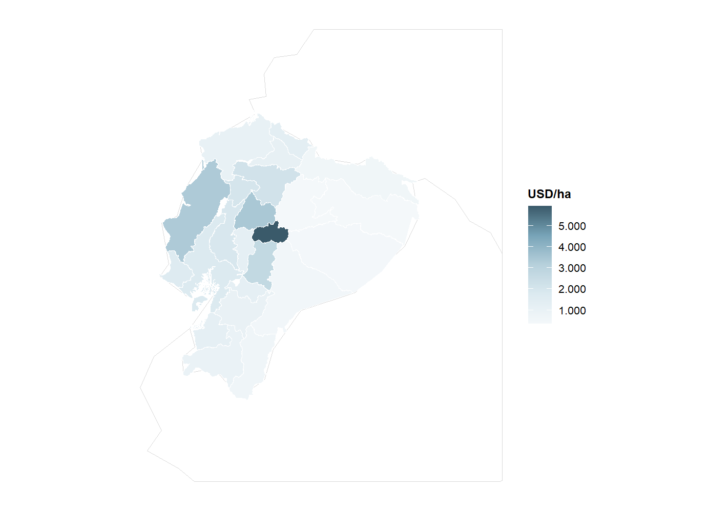
El análisis territorial puede ampliarse incorporando el segundo factor productivo considerado en este estudio: el trabajo. Mientras que la productividad de la tierra refleja el valor generado por unidad de superficie, la productividad del trabajo permite aproximarse al rendimiento económico asociado a la mano de obra utilizada en las unidades agropecuarias. La representación espacial de este indicador permite identificar diferencias provinciales en la intensidad y el desempeño del factor trabajo dentro de la estructura productiva agropecuaria
La distribución territorial de la productividad del trabajo de la Figura 21 presenta también diferencias relevantes entre provincias. El nivel más alto se observa en Manabí, con una mediana aproximada de 12.226 USD por trabajador. Le siguen Esmeraldas (9.312), Santo Domingo de los Tsáchilas (8.870), El Oro (7.665) y Santa Elena (6.113).
En varios de estos territorios predominan sistemas productivos asociados a actividades agrícolas comerciales, cultivos permanentes y ciertas actividades agroexportadoras que generan mayores ingresos por trabajador. En el caso de provincias costeras como Manabí, El Oro y Esmeraldas, estos resultados se relacionan con la presencia de cultivos como cacao, banano y otros sistemas agrícolas de carácter comercial.
En un nivel intermedio se ubican Zamora Chinchipe (5.482), Morona Santiago (5.234), Pichincha (4.677), Carchi (4.631) y Guayas (4.435).
Por el contrario, los valores más bajos se registran en Napo (962), Chimborazo (1.560), Tungurahua (1.804), Imbabura (2.094) y Cotopaxi (2.176).
El patrón territorial de la productividad del trabajo muestra una mayor concentración de valores elevados en varias provincias de la Costa, mientras que en determinadas provincias de la Sierra y de la Amazonía se observan niveles relativamente menores. Este comportamiento refleja las diferencias regionales en la organización de los sistemas productivos agropecuarios y en la intensidad económica asociada al uso del factor trabajo.
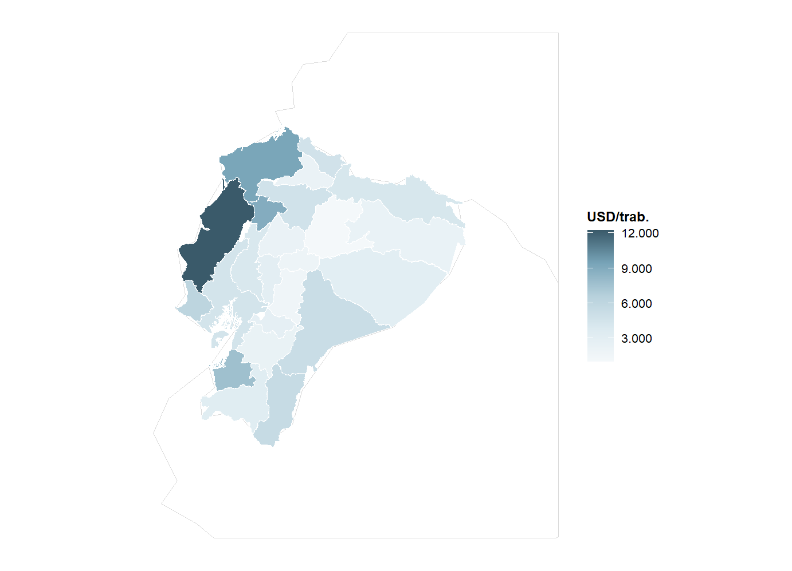
El análisis territorial puede ampliarse integrando simultáneamente los dos factores productivos considerados en este estudio: la tierra y el trabajo. Mientras que los mapas anteriores permiten observar la distribución espacial de cada indicador por separado, la construcción de un índice combinado de productividad permite sintetizar el desempeño conjunto de ambos factores dentro de cada provincia. De esta forma, es posible identificar territorios donde la generación de valor agropecuario es relativamente más elevada considerando simultáneamente la productividad de la superficie agrícola y del trabajo empleado en las unidades productivas.
Siguiendo el mismo criterio utilizado previamente, el índice combinado provincial se obtiene a partir de la mediana de los valores registrados en las unidades agropecuarias. La representación espacial de este indicador se realiza mediante mapas coropléticos clasificados utilizando el método de cortes naturales (Jenks), lo que permite identificar agrupaciones territoriales con niveles similares de productividad conjunta.
La distribución territorial del índice combinado de productividad que se presenta en la Figura 22 permite sintetizar el desempeño conjunto de la tierra y del trabajo dentro del sector agropecuario. Al integrar ambos factores en un solo indicador, se obtiene una aproximación al nivel general de generación de valor de las unidades agropecuarias en cada provincia.
Los niveles más elevados del índice se registran en Manabí, donde la mediana provincial alcanza aproximadamente 6.288. Le siguen Santo Domingo de los Tsáchilas (4.080), Santa Elena (3.511), Tungurahua (3.319), El Oro (3.263) y Pichincha (3.081).
En un nivel intermedio se ubican Esmeraldas (2.959), Los Ríos (2.798), Guayas (2.754), Cotopaxi (2.748) y Carchi (2.485).
En contraste, los valores más bajos del índice se concentran principalmente en la región amazónica. Napo registra la menor mediana provincial (599), seguida por Orellana (840), Pastaza (900), Sucumbíos (1.479) y Morona Santiago (1.626).
En términos generales, el mapa del índice combinado evidencia que las mayores concentraciones de productividad agropecuaria se localizan en varias provincias de la Costa y en determinados espacios de la Sierra, mientras que en la Amazonía predominan estructuras productivas que generan menor valor agregado considerando conjuntamente el uso de la tierra y del trabajo. Este resultado sintetiza los patrones territoriales observados previamente en los análisis individuales de la productividad de la tierra y del trabajo.
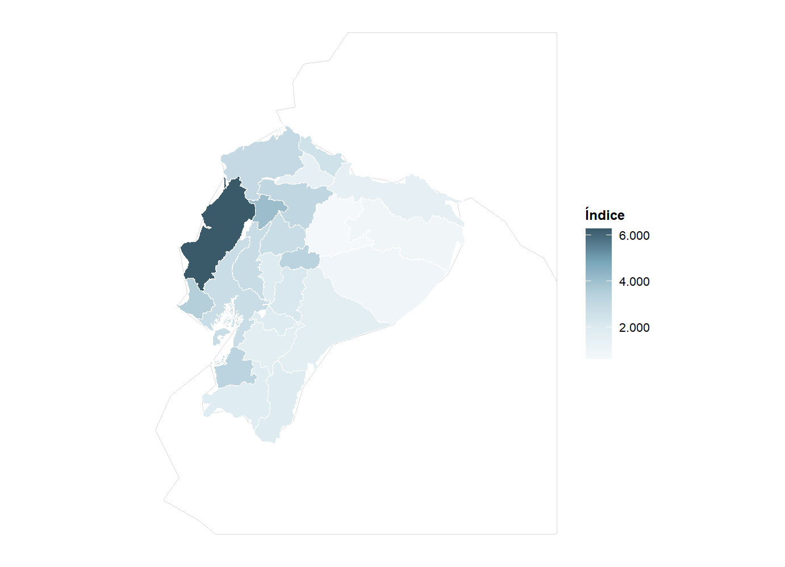
El análisis presentado en este capítulo permitió examinar la productividad agropecuaria considerando el desempeño de la tierra y del trabajo a nivel de las unidades agropecuarias y su distribución territorial en el país. Los resultados evidencian diferencias entre unidades productivas y entre provincias en los niveles de generación de valor asociados a estos factores. Los indicadores analizados muestran que los niveles de productividad se concentran en determinadas provincias de la Costa y en algunos territorios de la Sierra, mientras que en varias provincias de la Amazonía se registran valores relativamente menores. Estas diferencias reflejan la diversidad de sistemas productivos, condiciones agroecológicas y estructuras agrarias presentes en el sector agropecuario ecuatoriano. En conjunto, los resultados obtenidos constituyen una base empírica para continuar el análisis de los factores que influyen en la productividad del sector.
7 Productividad agropecuaria, heterogeneidad territorial y eficiencia técnica: un enfoque econométrico comparativo
7.1 Introducción
La productividad permite observar cómo las unidades agropecuarias transforman sus recursos en resultados económicos. Las diferencias entre productores, sin embargo, no dependen únicamente de la tierra y el trabajo disponibles. También intervienen el régimen de tenencia, la adopción tecnológica, las características sociodemográficas, el acceso a información y el territorio en el que se desarrolla la actividad.
La literatura la concibe, por ello, como un fenómeno multidimensional en el que confluyen factores estructurales, tecnológicos e institucionales. Su estudio exige distinguir entre las asociaciones vinculadas con los recursos disponibles, las condiciones territoriales y la eficiencia con que se utilizan esos recursos. Esta distinción cobra especial importancia en una agricultura heterogénea, con marcadas diferencias regionales de infraestructura, acceso a mercados y tecnología.
El presente capítulo tiene como objetivo analizar los factores asociados a las diferencias en la productividad agropecuaria de las UPA del Ecuador, a partir de la información proporcionada por la ESPAC 2022, con especial énfasis en el régimen de tenencia de la tierra. Para ello se consideran dos dimensiones complementarias del desempeño productivo: la productividad de la tierra y la productividad del trabajo. Esta diferenciación permite evaluar si las asociaciones observadas para el rendimiento por superficie presentan comportamientos similares o distintos a aquellas relacionadas con el uso del factor trabajo.
La estrategia econométrica combina tres enfoques. Los modelos lineales ordinarios con errores estándar robustos estiman asociaciones promedio entre productividad y covariables observables. Los modelos multinivel incorporan interceptos aleatorios provinciales para representar la heterogeneidad territorial no observada. Las fronteras estocásticas, finalmente, permiten examinar la eficiencia técnica relativa dentro de una especificación paramétrica.
Los tres enfoques responden a preguntas distintas y complementarias: qué características se asocian con la productividad media, cuánto de la variación se estructura territorialmente y a qué distancia se sitúan las UPA de una frontera condicionada. El capítulo construye así una cadena de evidencia sobre el papel de la tenencia dentro de una estructura productiva más amplia.
7.2 Fundamentos conceptuales para la selección de modelos analíticos
La producción es el resultado de la combinación de factores productivos bajo determinadas condiciones tecnológicas. En el ámbito agrícola, esta relación adquiere particular complejidad debido a la interacción entre recursos físicos, capital humano, condiciones ambientales e instituciones que regulan el acceso y uso de la tierra. Por esta razón, la productividad no puede interpretarse exclusivamente como una función de la dotación de factores, sino como un resultado asociado a un conjunto de elementos que condicionan las decisiones de producción y la capacidad de los productores para transformar recursos en resultados económicos.
Como se expuso en los capítulos anteriores, la teoría de los derechos de propiedad vincula la seguridad sobre la tierra con horizontes de decisión más largos, mayores incentivos para invertir y mejores condiciones para adoptar tecnología (Besley, 1995; Deininger & Jin, 2006). Esa predicción no equivale a una superioridad necesaria de la tenencia directa. La evidencia revisada en esta tesis también subraya que los resultados dependen del contexto institucional y del acceso complementario a crédito, infraestructura, mercados y tecnología (Lawry et al., 2017).
Los modelos de regresión lineal permiten cuantificar asociaciones promedio entre la productividad y los factores productivos, tecnológicos y sociodemográficos observados. Su estructura, no obstante, no representa explícitamente la dependencia que puede surgir cuando varias UPA comparten un mismo entorno provincial (Raudenbush & Bryk, 2002).
Los modelos multinivel abordan esa estructura al descomponer la variabilidad entre UPA y provincias (Gelman & Hill, 2007; Raudenbush & Bryk, 2002). Resultan adecuados cuando las unidades de una misma área geográfica comparten condiciones que no se observan de forma individual, sin que el efecto territorial pueda atribuirse de antemano a un mecanismo concreto.
Por otra parte, la teoría de la eficiencia técnica plantea que productores con acceso a recursos similares pueden obtener resultados distintos debido a diferencias en la forma en que dichos recursos son utilizados (Farrell, 1957). En este marco, la metodología de frontera estocástica permite estimar una frontera de producción potencial y medir la distancia existente entre el desempeño observado y dicho nivel máximo teórico (Aigner et al., 1977; Battese & Coelli, 1995).
En consecuencia, la estrategia analítica desarrollada en este capítulo combina modelos lineales, modelos multinivel y fronteras estocásticas con el propósito de examinar de forma conjunta asociaciones estructurales, tecnológicas, territoriales y de eficiencia técnica. Esta aproximación permite construir una interpretación más robusta de las diferencias observadas en la productividad agropecuaria y proporciona una base metodológica sólida para el análisis empírico posterior.
7.3 Construcción de la base analítica
La construcción de la base analítica se realizó a partir de base_final_v1.1.csv, utilizando los criterios definidos en el pipeline reproducible (anexo2). La unidad de análisis es la unidad productiva agropecuaria identificada por Identificador, y las variables de productividad se derivan de una producción económica mayor a cero agregada a nivel de UPA. Este criterio proviene de los datos y del proceso de integración de módulos de ESPAC 2022; por ello, la base oficial contiene productividades iguales a cero o estrictamente mayores que cero. Sobre esa base se definió un conjunto de variables orientado a capturar dimensiones asociadas a régimen de tenencia, recursos productivos, adopción tecnológica, capital humano, acceso a información y heterogeneidad territorial.
Las variables dependientes corresponden a dos medidas complementarias de productividad. La productividad de la tierra se calculó como produccion_ec / cg_superficie cuando la superficie declarada es estrictamente mayor que cero. La productividad del trabajo se calculó como produccion_ec / eu_k1301 cuando el trabajo declarado es estrictamente mayor que cero; cuando esa condición no se cumple o la información laboral no está disponible, la productividad laboral queda sin valor analítico para las especificaciones que requieren esa variable. Debido a la elevada asimetría observada en ambas variables y a la presencia de observaciones con productividad igual a cero, se aplicó la transformación logarítmica \(\ln(1+x)\) en los modelos lineales y multinivel. Este procedimiento permite reducir la influencia de valores extremos y conservar las observaciones con productividad igual a cero en esas especificaciones8.
Las covariables continuas fueron estandarizadas mediante puntuaciones z9. La estandarización expresa un cambio de una desviación estándar, pero no corrige por sí sola una forma funcional inadecuada. Por esta razón, la superficie se evaluó tanto en niveles como mediante \(\ln(1+\text{superficie})\), seguida en ambos casos por la estandarización. Los diagnósticos que se presentan más adelante respaldan conservar la superficie en niveles estandarizados para la productividad de la tierra y utilizar el logaritmo estandarizado, junto con un término cuadrático parsimonioso, para la productividad del trabajo.
Por otra parte, el acceso a internet se incorporó como indicador dicotómico de conectividad e información. Los indicadores de riego, fertilización y plaguicidas se construyeron a nivel de UPA mediante la regla de al menos un uso afirmativo en cualquiera de los cinco módulos de cultivos. La base oficial distingue SI, NO, NO_APLICA y ausencia real de información. Para estimar asociaciones agronómicas comparables, los modelos se restringieron a las UPA con estados SI o NO en los tres indicadores; NO_APLICA y NA se excluyeron, sin recodificarlos como ausencia de uso.
Asimismo, educación, sexo, tenencia y ubicación territorial se trataron como factores categóricos10. La educación se comparó también con su codificación ordinal estandarizada. Los coeficientes de tenencia permanecieron prácticamente invariantes, mientras que la forma categórica evitó imponer distancias iguales entre niveles educativos y mejoró el ajuste del modelo de productividad de la tierra. Por coherencia conceptual se conservó como factor en las especificaciones fortalecidas. El sexo se incorporó como control sociodemográfico observable y como comprobación de sensibilidad del resultado de tenencia.
La Tabla 23 resume las variables utilizadas en los modelos econométricos y presenta la definición conceptual de cada una de ellas.
| Variable | Descripción | Tipo |
|---|---|---|
| Productividad de la tierra | Logaritmo natural de la productividad por hectárea: ln(1 + productividad) | Dependiente |
| Productividad del trabajo | Logaritmo natural de la productividad laboral: ln(1 + productividad) | Dependiente |
| Tenencia | Régimen predominante de tenencia | Factor estructural |
| Superficie total (z) | Área total disponible estandarizada; especificación de productividad de la tierra | Recurso productivo |
| Logaritmo de superficie (z) | ln(1 + superficie total), posteriormente estandarizada; especificación de productividad del trabajo | Recurso productivo |
| Edad (z) | Edad del productor estandarizada | Capital humano |
| Internet | Acceso a internet (1 = Sí; 0 = No) | Información |
| Riego | Uso observado en al menos un cultivo (1 = Sí; 0 = No) | Tecnología productiva |
| Fertilizantes | Uso observado en al menos un cultivo (1 = Sí; 0 = No) | Tecnología productiva |
| Plaguicidas | Uso observado en al menos un cultivo (1 = Sí; 0 = No) | Tecnología productiva |
| Educación | Nivel educativo como factor: ninguna, primaria, secundaria y superior | Capital humano |
| Sexo | Sexo de la persona productora: hombre (referencia) y mujer | Característica sociodemográfica |
| Provincia | Ubicación territorial de la UPA | Factor territorial |
| Nota: | ||
| Las variables dependientes se transformaron mediante ln(1+x). La superficie se modela en niveles estandarizados para productividad de la tierra y como ln(1+superficie) estandarizada, con término cuadrático, para productividad del trabajo. Edad se expresa como z; educación, sexo y tenencia se incorporan como factores. Los indicadores tecnológicos se estiman exclusivamente entre UPA clasificadas SI o NO; se excluyen NO_APLICA y NA. | ||
| Fuente: Elaboración propia a partir de ESPAC 2022. |
La muestra econométrica se construyó mediante una secuencia explícita de condiciones comunes (Tabla 24). La productividad de la tierra está disponible para las 42.444 UPA de la base; la exigencia de disponer también de productividad del trabajo reduce el conjunto a 30.502. Los demás controles básicos no generan pérdidas adicionales. La educación válida en los cuatro niveles analizados reduce la muestra a 26.392 UPA y la exigencia conjunta de estados SI o NO en riego, fertilizantes y plaguicidas conduce a 22.075 UPA. El sexo está disponible para todas las observaciones que superan el criterio educativo, por lo que su incorporación no altera el tamaño de la muestra. Finalmente, la SFA exige que ambas productividades sean estrictamente positivas y conserva 21.430 UPA.
| Etapa | UPA | Exclusiones en la etapa | % de la base inicial |
|---|---|---|---|
| Base analítica inicial | 42.444 | 0 | 100,0 % |
| Productividad de la tierra disponible | 42.444 | 0 | 100,0 % |
| Productividad de la tierra y del trabajo disponibles | 30.502 | 11.942 | 71,9 % |
| Más tenencia, superficie, edad, internet y provincia | 30.502 | 0 | 71,9 % |
| Más educación válida (códigos 1 a 4) | 26.392 | 4.110 | 62,2 % |
| Más sexo disponible | 26.392 | 0 | 62,2 % |
| Más riego, fertilizantes y plaguicidas en SI/NO | 22.075 | 4.317 | 52,0 % |
| Más ambas productividades estrictamente positivas (SFA) | 21.430 | 645 | 50,5 % |
| Nota: | |||
| La reducción no implica depuración discrecional: establece una muestra común con información completa y estados tecnológicos comparables. La última fila corresponde exclusivamente a SFA. | |||
| Fuente: Elaboración propia a partir de ESPAC 2022. |
La Tabla 25 muestra que la composición también cambia de forma observable. Arrendamiento y aparcería representa el 2,4 % de las UPA excluidas y el 5,4 % de las incluidas; tenencia directa, el 87,5 % y el 82,7 %; y otros regímenes de tenencia, el 10,2 % y el 11,9 %. Entre las UPA incluidas, las mujeres representan el 27,2 %, frente al 24,3 % entre las excluidas. La superficie mediana es de 5 ha en la muestra econométrica y 1,42 ha entre las UPA excluidas. Estas diferencias delimitan el dominio de inferencia: los modelos describen asociaciones dentro de la muestra completa y tecnológicamente aplicable, no corrigen selección por características no observadas.
| Estado | Tenencia | UPA | Porcentaje |
|---|---|---|---|
| Excluidas | Arrendamiento y aparcería | 480 | 2,4 % |
| Excluidas | Otros regímenes de tenencia | 2.075 | 10,2 % |
| Excluidas | Tenencia directa | 17.814 | 87,5 % |
| Incluidas | Arrendamiento y aparcería | 1.195 | 5,4 % |
| Incluidas | Otros regímenes de tenencia | 2.629 | 11,9 % |
| Incluidas | Tenencia directa | 18.251 | 82,7 % |
| Nota: | |||
| Incluidas corresponde a las 22.075 UPA de los modelos OLS y multinivel. Los porcentajes se calculan dentro de cada estado de inclusión. | |||
| Fuente: Elaboración propia a partir de ESPAC 2022. |
Con base en estas variables se construyó la especificación utilizada en las tres estrategias econométricas. Los indicadores de riego, fertilización y plaguicidas presentan ambos estados binarios dentro del universo aplicable y se incorporaron conjuntamente. La muestra común de OLS y multinivel contiene 22.075 UPA, mientras que la muestra SFA contiene 21.430 UPA después de exigir ambas productividades estrictamente positivas. Las matrices de diseño tienen rango completo, por lo que todos los parámetros incluidos son estimables.
Por tanto, la especificación econométrica general utilizada en esta investigación puede expresarse de la siguiente manera, en primera instancia para el modelo lineal múltiple:
\[ \begin{aligned} \ln(1+Y_i) =\;& \beta_0 + \beta_1 \text{Tenencia}_i + f(\text{Superficie}_i) \\ &+ \beta_3 \text{Edad}_i + \beta_4 \text{Internet}_i + \beta_5 \text{Educación}_i + \beta_6 \text{Sexo}_i \\ &+ \beta_7 \text{Riego}_i + \beta_8 \text{Fertilizantes}_i + \beta_9 \text{Plaguicidas}_i + \varepsilon_i \end{aligned} \]
Para los modelos multinivel, la ecuación incorpora además un intercepto aleatorio asociado al territorio:
\[ \ln(1+Y_{ij})= \beta_0 + \sum_{k=1}^{K}\beta_k X_{kij} + u_j + \varepsilon_{ij} \]
Mientras que para la frontera estocástica se adopta la siguiente formulación:
\[ \ln(1+Y_i)= \beta_0 + \sum_{k=1}^{K}\beta_k X_{ki} + v_i - u_i \]
En la estimación de la frontera estocástica, esta formulación se aplicó después de restringir la muestra a observaciones con productividad_superficie > 0, productividad_trabajo > 0, covariables completas y estados SI o NO en los tres indicadores tecnológicos. La SFA excluye productividades iguales a cero, NO_APLICA y NA.
Donde:
\(\ln(1+Y_i)\): Representa el logaritmo natural de uno más la productividad agropecuaria. Se estimaron dos especificaciones: productividad de la tierra (produccion_ec / cg_superficie) y productividad del trabajo (produccion_ec / eu_k1301), aplicadas bajo los criterios de inclusión de cada familia de modelos.
\(\text{Tenencia}_i\): Régimen predominante de tenencia de la tierra de la unidad productiva agropecuaria.
\(f(\text{Superficie}_i)\): Superficie total en niveles estandarizados para productividad de la tierra. Para productividad del trabajo se usa \(z[\ln(1+\text{superficie})]\) y su término cuadrático, lo que permite una relación cóncava sin recurrir a polinomios de orden alto.
\(\text{Edad}_i\): Edad del productor estandarizada mediante puntuaciones z.
\(\text{Internet}_i\): Variable dicotómica que identifica el acceso a internet (1 = Sí; 0 = No).
\(\text{Educación}_i\): Nivel educativo categórico de la persona productora; ninguna educación es la referencia.
\(\text{Sexo}_i\): Sexo de la persona productora; hombre es la referencia.
\(\text{Riego}_i\), \(\text{Fertilizantes}_i\) y \(\text{Plaguicidas}_i\): Indicadores dicotómicos de uso observado en al menos un cultivo (1 = Sí; 0 = No). Las UPA clasificadas NO_APLICA o con información faltante se excluyen de las muestras econométricas.
\(X_{ki}\): Vector de variables explicativas incluidas en la estimación.
\(u_j\): Efecto aleatorio asociado a la provincia en los modelos multinivel.
\(\varepsilon_i\): Término de error aleatorio en los modelos lineales y multinivel.
\(v_i\): Componente aleatorio simétrico de la frontera estocástica.
\(u_i\): Componente no negativo asociado a ineficiencia técnica en la frontera estocástica.
\(\beta_0\): Intercepto del modelo.
\(\beta_k\): Parámetros que cuantifican la asociación marginal de cada variable explicativa con la productividad agropecuaria transformada, bajo la especificación estimada.
7.4 Evaluación de la especificación de la base analítica
Antes de proceder con la estimación de los modelos econométricos, se evaluaron las propiedades estadísticas de las variables seleccionadas y los principales supuestos requeridos por las especificaciones utilizadas. Este proceso permite identificar posibles problemas de especificación y determinar si se requieren ajustes inferenciales, como errores estándar robustos, para obtener pruebas estadísticas consistentes con la estructura observada de los datos.
Como primera aproximación, se examinó la estructura de asociación entre las variables mediante un gráfico de correlaciones de Pearson (Figura 23). Este análisis constituye una herramienta exploratoria útil para identificar relaciones lineales entre variables y detectar posibles problemas de dependencia excesiva entre regresores.
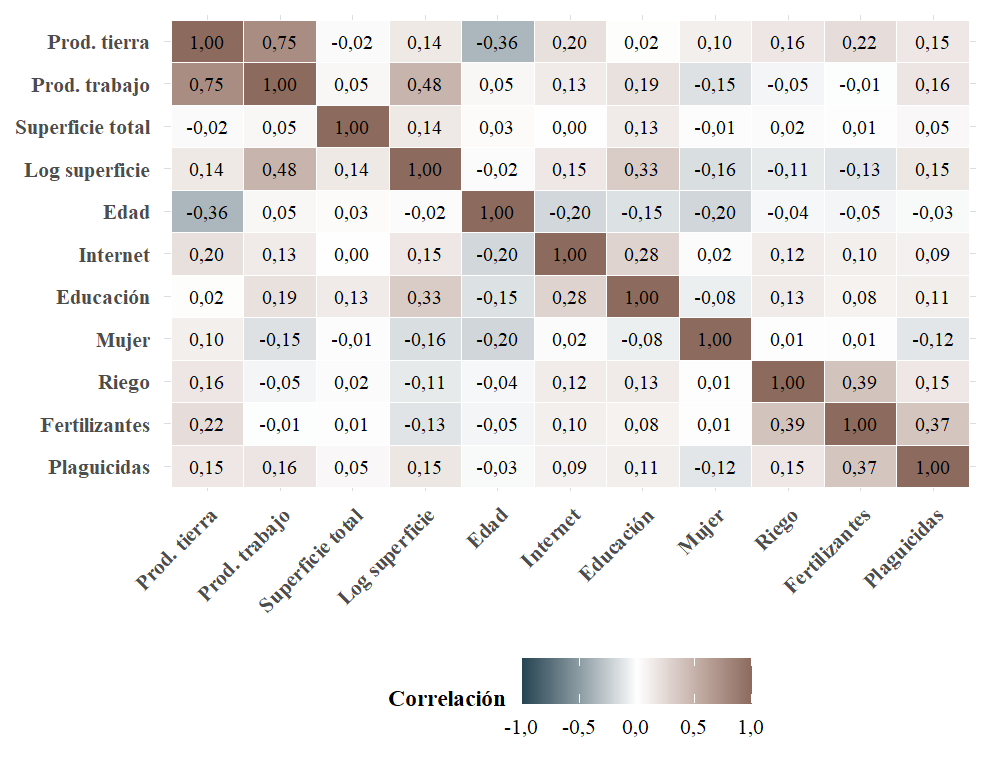
El mapa confirma una asociación positiva elevada entre ambas productividades, aunque cada indicador conserva un significado económico distinto. Entre los regresores, las asociaciones son moderadas o bajas. La relación más alta se observa entre riego y fertilizantes y no alcanza niveles que indiquen redundancia lineal severa. La comparación entre superficie en niveles y superficie logarítmica también muestra que la transformación cambia la representación de la escala; por ello, su elección se evalúa mediante ajuste y diagnósticos formales, no a partir de la correlación aislada.
7.4.1 Diagnóstico de multicolinealidad
Si bien la matriz de correlaciones proporciona una evaluación preliminar de la asociación entre las covariables, resulta necesario complementarla mediante una prueba formal de multicolinealidad. Con este propósito, se emplea el VIF, indicador que cuantifica el incremento de la varianza de los coeficientes estimados derivado de la correlación entre variables explicativas.
Los resultados de la Tabla 26 muestran valores inferiores al umbral de cinco utilizado como referencia práctica para identificar multicolinealidad severa (Montgomery et al., 2021). En consecuencia, la incorporación conjunta de los controles y del término cuadrático de superficie no compromete la estabilidad numérica de las estimaciones.
| Modelo | Variable | VIF | IC 95% VIF | Tolerancia | IC 95% tolerancia |
|---|---|---|---|---|---|
| Productividad de la tierra | clase.mayoria | 1,059 | [1,046; 1,076] | 0,944 | [0,930; 0,956] |
| Productividad de la tierra | superficie_total_z | 1,058 | [1,045; 1,075] | 0,945 | [0,930; 0,957] |
| Productividad de la tierra | edad_z | 1,110 | [1,095; 1,127] | 0,901 | [0,887; 0,913] |
| Productividad de la tierra | internet | 1,114 | [1,099; 1,132] | 0,897 | [0,884; 0,910] |
| Productividad de la tierra | educacion | 1,242 | [1,224; 1,263] | 0,805 | [0,792; 0,817] |
| Productividad de la tierra | sexo | 1,036 | [1,024; 1,053] | 0,965 | [0,949; 0,976] |
| Productividad de la tierra | riego | 1,209 | [1,191; 1,228] | 0,827 | [0,814; 0,840] |
| Productividad de la tierra | fertilizante | 1,369 | [1,347; 1,392] | 0,731 | [0,718; 0,743] |
| Productividad de la tierra | plaguicida | 1,202 | [1,184; 1,221] | 0,832 | [0,819; 0,844] |
| Productividad del trabajo | clase.mayoria | 1,062 | [1,049; 1,079] | 0,941 | [0,927; 0,953] |
| Productividad del trabajo | superficie_log_z | 2,515 | [2,462; 2,569] | 0,398 | [0,389; 0,406] |
| Productividad del trabajo | I(superficie_log_z^2) | 2,155 | [2,112; 2,199] | 0,464 | [0,455; 0,473] |
| Productividad del trabajo | edad_z | 1,153 | [1,136; 1,171] | 0,868 | [0,854; 0,880] |
| Productividad del trabajo | internet | 1,127 | [1,112; 1,145] | 0,887 | [0,874; 0,900] |
| Productividad del trabajo | educacion | 1,450 | [1,426; 1,476] | 0,690 | [0,678; 0,701] |
| Productividad del trabajo | sexo | 1,075 | [1,061; 1,091] | 0,931 | [0,916; 0,943] |
| Productividad del trabajo | riego | 1,237 | [1,219; 1,258] | 0,808 | [0,795; 0,821] |
| Productividad del trabajo | fertilizante | 1,428 | [1,404; 1,453] | 0,700 | [0,688; 0,712] |
| Productividad del trabajo | plaguicida | 1,245 | [1,227; 1,266] | 0,803 | [0,790; 0,815] |
| Nota: | |||||
| Valores inferiores a 5 sugieren ausencia de multicolinealidad severa. | |||||
| Fuente: Elaboración propia a partir de ESPAC 2022. |
7.4.2 Diagnóstico de heterocedasticidad
Tras no encontrar evidencia de multicolinealidad severa bajo los criterios anteriores, se evaluó el supuesto de homocedasticidad mediante la prueba de Breusch-Pagan, utilizada para detectar heterocedasticidad en modelos de regresión (Breusch & Pagan, 1979; Wooldridge, 2020). Esta verificación resulta relevante en estudios agropecuarios, donde la heterogeneidad en el tamaño de las explotaciones, la dotación de recursos y las condiciones productivas puede generar patrones de variabilidad no constantes en los errores.
Los resultados de la prueba de Breusch-Pagan (BP) presentados en la Tabla 27 permiten rechazar la hipótesis nula de homocedasticidad en ambas respuestas. En consecuencia, todas las estimaciones lineales reportadas posteriormente incorporan errores estándar robustos tipo HC111. La comparación exploratoria con HC2 y HC3 produjo errores estándar prácticamente idénticos, por lo que HC1 ofrece una corrección suficiente y parsimoniosa.
| Modelo | Estadístico | Grados de libertad | Valor p |
|---|---|---|---|
| Productividad de la tierra | 243,8 | 12 | <0,001 |
| Productividad del trabajo | 333,7 | 13 | <0,001 |
| Nota: | |||
| Hipótesis nula: la varianza de los errores es constante. Un valor p inferior a 0,05 indica evidencia de heterocedasticidad. | |||
| Fuente: Elaboración propia a partir de ESPAC 2022. |
7.4.3 Evaluación gráfica de los residuos
Aunque en muestras de gran tamaño los supuestos distribucionales adquieren menor relevancia debido a las propiedades asintóticas de los estimadores12, resulta útil examinar gráficamente el comportamiento de los residuos para identificar posibles desviaciones importantes respecto a la normalidad teórica.
La Figura 24 presenta los gráficos cuantil-cuantil de ambos modelos lineales. La región central sigue razonablemente la referencia teórica, mientras que las colas muestran desviaciones asociadas con la elevada heterogeneidad productiva de las UPA.
Este patrón es frecuente en bases de datos agropecuarias de gran tamaño, donde la heterogeneidad productiva y la existencia de unidades con desempeños muy bajos o muy altos generan observaciones extremas. No obstante, dado el tamaño muestral empleado y la ausencia de desviaciones pronunciadas en la parte central de la distribución, la evidencia gráfica no muestra una desviación que invalide la lectura inferencial basada en propiedades asintóticas de los estimadores (Wooldridge, 2020).
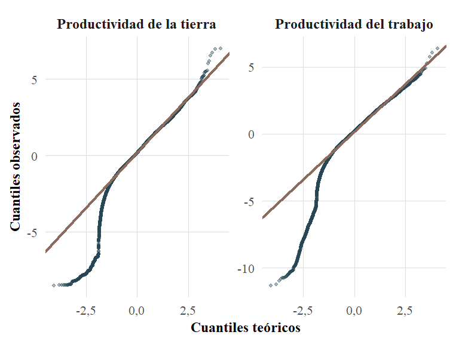
7.4.4 Forma funcional de la superficie
La superficie presenta una distribución muy asimétrica: mediana de 5 ha, percentil 90 de 89,6 ha, percentil 99 de 885,64 ha y máximo de 42.000 ha. La estandarización permite expresar la superficie en desviaciones estándar y facilita la comparación de los coeficientes, pero no modifica la forma de la distribución: las pocas explotaciones de tamaño extremadamente elevado continúan muy alejadas del grueso de las UPA. Por ello se compararon tres alternativas sobre las mismas 22.075 UPA: niveles estandarizados (A), \(z[\ln(1+\text{superficie})]\) (B) y esta última transformación acompañada por un término cuadrático (C). La transformación logarítmica reduce el peso relativo de los valores extremos, mientras el término cuadrático permite que la relación cambie de pendiente a medida que aumenta la escala. La Tabla 28 reúne sus medidas de ajuste y la prueba RESET. La alternativa C solo se consideró porque A y B mantuvieron evidencia de error funcional y porque añade una única curvatura económicamente interpretable, sin introducir una especificación innecesariamente compleja.
| Especificación | R2 | R2 ajustado | AIC | BIC | RESET | p RESET |
|---|---|---|---|---|---|---|
| Productividad por superficie: A, niveles z | 0,072 | 0,072 | 91.088,2 | 91.200,2 | 19,4 | <0,001 |
| Productividad por superficie: B, log z | 0,071 | 0,071 | 91.111,6 | 91.223,6 | 73,0 | <0,001 |
| Productividad por superficie: C, log z cuadrático | 0,071 | 0,071 | 91.102,4 | 91.222,4 | 23,5 | <0,001 |
| Productividad por trabajo: A, niveles z | 0,112 | 0,112 | 99.206,3 | 99.318,3 | 125,9 | <0,001 |
| Productividad por trabajo: B, log z | 0,372 | 0,372 | 91.550,9 | 91.663,0 | 420,3 | <0,001 |
| Productividad por trabajo: C, log z cuadrático | 0,393 | 0,392 | 90.827,0 | 90.947,1 | 43,4 | <0,001 |
| Nota: | ||||||
| Todas las alternativas utilizan la misma muestra y los mismos controles. A: z(superficie); B: z[ln(1+superficie)]; C: B más su término cuadrático. | ||||||
| Fuente: Elaboración propia a partir de ESPAC 2022. |
Para productividad de la tierra, los niveles estandarizados ofrecen el mejor equilibrio entre ajuste y parsimonia; las alternativas logarítmicas no mejoran AIC, BIC ni RESET de forma suficiente. Esto indica que, para explicar el producto por hectárea, transformar la superficie no compensa la complejidad adicional y la relación puede representarse adecuadamente con la escala estandarizada en niveles. Para productividad laboral, en cambio, el modelo en niveles explica solo el 11,1 % de la variación. La transformación logarítmica eleva el R² a 37,2 %, y el término cuadrático lo sitúa en 39,3 %, reduce el AIC en más de 700 puntos frente a la alternativa B y disminuye sustancialmente el estadístico RESET. En conjunto, estas variaciones muestran que la escala de la UPA se relaciona con el producto por trabajador de manera marcadamente no lineal: reconocer la concentración de explotaciones en tamaños bajos y permitir una curvatura representa con mayor fidelidad el patrón observado. La prueba RESET continúa rechazando la forma global en una muestra muy grande, de modo que la alternativa C no se interpreta como una especificación perfecta; sí constituye una representación mucho más coherente, parsimoniosa y explicativa de la relación entre escala y productividad laboral. En adelante se utiliza A para productividad de la tierra y C para productividad del trabajo. La Figura 25 permite examinar visualmente si ambas especificaciones finales dejan patrones sistemáticos en los residuos, es decir, diferencias entre los valores observados y los predichos que todavía no hayan sido recogidas por el modelo.
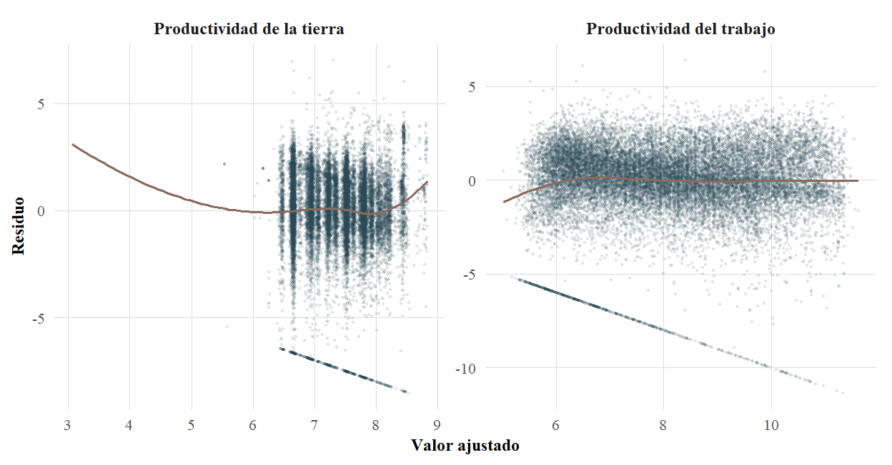
7.5 Resultados de los modelos lineales ordinarios
Como punto de partida del análisis econométrico se estimaron modelos OLS para las dos medidas de productividad consideradas en la investigación. Estos modelos permiten identificar asociaciones condicionales promedio entre la productividad transformada mediante \(\ln(1+x)\) y la tenencia, características productivas, tecnológicas y sociodemográficas de las unidades agropecuarias. En términos interpretativos, cada coeficiente expresa la diferencia promedio asociada con una covariable, manteniendo constantes las demás características incluidas, sin atribuirle por ello un efecto causal. Su función metodológica es servir como especificación de referencia para las comparaciones posteriores con modelos multinivel estimados sobre la misma muestra.
La especificación incorpora variables asociadas al régimen de tenencia, tamaño de la explotación, edad, acceso a internet, educación y uso de riego, fertilizantes y plaguicidas. Debido a la heterocedasticidad identificada, las estimaciones utilizan errores estándar robustos tipo HC1. Esta corrección no modifica los coeficientes estimados, sino la cuantificación de su incertidumbre, de manera que los errores estándar y las pruebas de significancia sean válidos ante una variabilidad no constante de los residuos. La muestra analítica contiene 22.075 UPA con variables dependientes y covariables completas y, específicamente, estados SI o NO en los tres indicadores tecnológicos.
7.5.1 Productividad de la tierra
La Tabla 29 muestra una asociación sistemática entre tenencia y productividad de la tierra. La categoría de referencia es arrendamiento y aparcería, por lo que los demás coeficientes expresan diferencias respecto de ese régimen, manteniendo constantes las covariables del modelo. Frente a dicha categoría, la tenencia directa registra un coeficiente de -0,256, equivalente a una diferencia de -22,6 % en \(1+Y\). Para otros regímenes de tenencia, el coeficiente es -0,446 y la diferencia alcanza -36,0 %13. Los dos intervalos excluyen cero, lo que indica que las diferencias son estadísticamente discernibles de la ausencia de asociación dentro de esta especificación. Sustantivamente, el resultado contradice la expectativa de una ventaja productiva automática de la tenencia directa: entre UPA comparables en las covariables observadas, arrendamiento y aparcería presenta el mayor nivel de productividad por hectárea.
La superficie en niveles estandarizados presenta una asociación negativa: un incremento de una desviación estándar en el tamaño de la UPA se relaciona con menor producto por hectárea, no con menor producción total. La distinción es sustantivamente importante, porque el coeficiente describe la intensidad productiva de la superficie y no afirma que las explotaciones grandes generen menos producto agregado. Este resultado es coherente con la relación inversa entre escala y productividad de la tierra documentada para explotaciones familiares (Hossain, 1977; Saini, 1971). La educación muestra un gradiente concentrado en secundaria y superior frente a ninguna educación, mientras que el sexo y la edad no presentan diferencias estadísticamente discernibles en esta respuesta; esto último significa que, una vez consideradas las restantes covariables, la información disponible no permite separar sus asociaciones de cero con suficiente precisión.
En el bloque tecnológico, fertilizantes, internet, plaguicidas y riego se asocian con niveles más elevados de productividad de la tierra. Sus diferencias exactas en \(1+Y\) son, respectivamente, 77,1 %, 50,1 %, 35,1 % y 32,7 %. La comparación se refiere a UPA usuarias y no usuarias dentro del universo aplicable. Económicamente, el patrón es compatible con una producción más intensiva por superficie y coincide con la literatura que relaciona las condiciones tecnológicas y el uso de insumos con diferencias de productividad y eficiencia agrícola (Perdomo et al., 2007). Dado el diseño transversal, las estimaciones no separan el efecto de la adopción de la selección de UPA con mejores condiciones para utilizar estas tecnologías.
| Variable | Coeficiente | Error estándar | IC 95% | IC 95% sup. | Estadístico | Valor p | Sig. |
|---|---|---|---|---|---|---|---|
| Constante | 6,90 | 0,06 | 6,79 | 7,01 | 122,70 | <0,001 | *** |
| Tenencia directa | -0,26 | 0,05 | -0,36 | -0,15 | -4,90 | <0,001 | *** |
| Otros regímenes de tenencia | -0,45 | 0,06 | -0,57 | -0,33 | -7,27 | <0,001 | *** |
| Superficie (z) | -0,50 | 0,11 | -0,71 | -0,29 | -4,68 | <0,001 | *** |
| Edad (z) | -0,02 | 0,02 | -0,06 | 0,02 | -1,12 | 0,264 | |
| Internet | 0,41 | 0,03 | 0,34 | 0,47 | 12,46 | <0,001 | *** |
| Educación: primaria | -0,04 | 0,03 | -0,10 | 0,03 | -1,07 | 0,284 | |
| Educación: secundaria | 0,22 | 0,04 | 0,13 | 0,30 | 4,92 | <0,001 | *** |
| Educación: superior | 0,58 | 0,14 | 0,32 | 0,85 | 4,29 | <0,001 | *** |
| Sexo: mujer | -0,01 | 0,03 | -0,06 | 0,05 | -0,18 | 0,854 | |
| Riego | 0,28 | 0,03 | 0,22 | 0,34 | 9,60 | <0,001 | *** |
| Fertilizantes | 0,57 | 0,03 | 0,51 | 0,63 | 18,78 | <0,001 | *** |
| Plaguicidas | 0,30 | 0,03 | 0,25 | 0,36 | 10,93 | <0,001 | *** |
| Nota: | |||||||
| Errores estándar robustos tipo HC1. Muestra restringida a UPA con estados SI o NO en los tres indicadores tecnológicos. *** p < 0,001; ** p < 0,01; * p < 0,05; . p < 0,10. | |||||||
| Fuente: Elaboración propia a partir de ESPAC 2022. |
7.5.2 Productividad del trabajo
La productividad del trabajo ofrece la misma ordenación de los regímenes de tenencia (Tabla 30). Frente a arrendamiento y aparcería, la tenencia directa presenta un coeficiente de -0,256, equivalente a -22,6 % en \(1+Y\); para otros regímenes de tenencia, el coeficiente es -0,415 y la diferencia alcanza -34,0 %. En términos sustantivos, y manteniendo constantes los demás factores observados, las UPA bajo arrendamiento y aparcería también generan un mayor producto por trabajador que las categorías comparadas. La coincidencia con el modelo de productividad de la tierra muestra que el hallazgo central no depende de medir el desempeño exclusivamente por hectárea.
La superficie logarítmica estandarizada registra una asociación positiva y su término cuadrático es negativo. La combinación de ambos términos representa una relación no lineal: la productividad laboral aumenta con la escala, pero cada ampliación adicional se asocia con un incremento progresivamente menor dentro del rango observado. Esta curvatura es coherente con economías de organización y mecanización parcial que elevan el producto por trabajador, acompañadas por rendimientos progresivamente menores de la expansión de escala (Gollin, 2019). Debido al término cuadrático, los dos coeficientes deben interpretarse conjuntamente y no como efectos constantes aislados; el término lineal establece la dirección inicial de la relación y el cuadrático describe cómo cambia su pendiente.
Una vez representada la escala, fertilizantes y plaguicidas mantienen asociaciones positivas con la productividad laboral, mientras riego no presenta una diferencia estadísticamente discernible. Internet conserva una asociación positiva, aunque menor que en la productividad de la tierra. Esto sugiere que las tecnologías e insumos no se relacionan del mismo modo con la intensificación por hectárea y con el producto obtenido por trabajador. Las UPA encabezadas por mujeres muestran una diferencia condicionada de -8,1 % frente a las encabezadas por hombres. Educación secundaria presenta una asociación negativa frente a ninguna educación, mientras primaria y superior no ofrecen evidencia concluyente al 5 %. Estos patrones pueden reflejar diferencias de actividad, organización y acceso a recursos, pero el modelo no identifica los mecanismos que las originan.
| Variable | Coeficiente | Error estándar | IC 95% | IC 95% sup. | Estadístico | Valor p | Sig. |
|---|---|---|---|---|---|---|---|
| Constante | 8,05 | 0,06 | 7,95 | 8,16 | 145,46 | <0,001 | *** |
| Tenencia directa | -0,26 | 0,05 | -0,36 | -0,16 | -5,06 | <0,001 | *** |
| Otros regímenes de tenencia | -0,42 | 0,06 | -0,53 | -0,30 | -6,89 | <0,001 | *** |
| ln(1 + superficie) (z) | 1,89 | 0,02 | 1,84 | 1,93 | 83,13 | <0,001 | *** |
| [ln(1 + superficie) (z)]² | -0,28 | 0,01 | -0,30 | -0,25 | -21,82 | <0,001 | *** |
| Edad (z) | 0,01 | 0,02 | -0,03 | 0,05 | 0,55 | 0,584 | |
| Internet | 0,08 | 0,03 | 0,01 | 0,14 | 2,41 | 0,016 | * |
| Educación: primaria | -0,06 | 0,03 | -0,12 | 0,01 | -1,70 | 0,089 | . |
| Educación: secundaria | -0,23 | 0,05 | -0,33 | -0,14 | -4,71 | <0,001 | *** |
| Educación: superior | -0,21 | 0,13 | -0,46 | 0,04 | -1,62 | 0,105 | |
| Sexo: mujer | -0,08 | 0,03 | -0,14 | -0,03 | -2,83 | 0,005 | ** |
| Riego | 0,01 | 0,03 | -0,04 | 0,07 | 0,48 | 0,632 | |
| Fertilizantes | 0,32 | 0,03 | 0,26 | 0,39 | 10,31 | <0,001 | *** |
| Plaguicidas | 0,18 | 0,03 | 0,12 | 0,23 | 6,49 | <0,001 | *** |
| Nota: | |||||||
| Errores estándar robustos tipo HC1. Muestra restringida a UPA con estados SI o NO en los tres indicadores tecnológicos. *** p < 0,001; ** p < 0,01; * p < 0,05; . p < 0,10. | |||||||
| Fuente: Elaboración propia a partir de ESPAC 2022. |
7.5.3 Evolución de la asociación de tenencia
La Tabla 31 mantiene las mismas 22.075 UPA en todas las etapas. M1 incorpora solo tenencia; M2 añade escala con la forma funcional seleccionada para cada respuesta; M3 agrega edad, educación, sexo e internet; y M4 incorpora riego, fertilizantes y plaguicidas. Esta incorporación secuencial permite observar si la brecha asociada con la tenencia se mantiene o se atenúa al comparar UPA cada vez más similares en características observadas. Los movimientos de los coeficientes describen cambios en la asociación condicionada y no una descomposición causal: una reducción no demuestra qué variable origina la brecha, sino que muestra cuánto coincide con el bloque añadido.
| Resultado | Modelo | Tenencia | Coeficiente | IC 95% | Valor p | R2 |
|---|---|---|---|---|---|---|
| Productividad de la tierra | M1 | Tenencia directa | -0,419 | [-0,522; -0,317] | <0,001 | 0,004 |
| Productividad de la tierra | M1 | Otros regímenes de tenencia | -0,607 | [-0,730; -0,485] | <0,001 | 0,004 |
| Productividad de la tierra | M2 | Tenencia directa | -0,416 | [-0,519; -0,314] | <0,001 | 0,004 |
| Productividad de la tierra | M2 | Otros regímenes de tenencia | -0,605 | [-0,728; -0,483] | <0,001 | 0,004 |
| Productividad de la tierra | M3 | Tenencia directa | -0,455 | [-0,558; -0,351] | <0,001 | 0,025 |
| Productividad de la tierra | M3 | Otros regímenes de tenencia | -0,600 | [-0,723; -0,478] | <0,001 | 0,025 |
| Productividad de la tierra | M4 | Tenencia directa | -0,256 | [-0,358; -0,154] | <0,001 | 0,072 |
| Productividad de la tierra | M4 | Otros regímenes de tenencia | -0,446 | [-0,566; -0,326] | <0,001 | 0,072 |
| Productividad del trabajo | M1 | Tenencia directa | -0,131 | [-0,252; -0,009] | 0,035 | 0,006 |
| Productividad del trabajo | M1 | Otros regímenes de tenencia | -0,700 | [-0,846; -0,554] | <0,001 | 0,006 |
| Productividad del trabajo | M2 | Tenencia directa | -0,351 | [-0,449; -0,254] | <0,001 | 0,384 |
| Productividad del trabajo | M2 | Otros regímenes de tenencia | -0,500 | [-0,618; -0,382] | <0,001 | 0,384 |
| Productividad del trabajo | M3 | Tenencia directa | -0,354 | [-0,452; -0,255] | <0,001 | 0,385 |
| Productividad del trabajo | M3 | Otros regímenes de tenencia | -0,492 | [-0,610; -0,374] | <0,001 | 0,385 |
| Productividad del trabajo | M4 | Tenencia directa | -0,256 | [-0,355; -0,157] | <0,001 | 0,393 |
| Productividad del trabajo | M4 | Otros regímenes de tenencia | -0,415 | [-0,533; -0,297] | <0,001 | 0,393 |
| Nota: | ||||||
| M1: tenencia; M2: + escala; M3: + edad, educación, sexo e internet; M4: + riego, fertilizantes y plaguicidas. Errores estándar HC1. Referencia: arrendamiento y aparcería. N = 22.075 en todos los modelos. | ||||||
| Fuente: Elaboración propia a partir de ESPAC 2022. |
En productividad de la tierra, la diferencia de tenencia directa pasa de -0,419 en M1 a -0,256 en M4. La mayor atenuación ocurre al añadir las tecnologías: parte de la brecha bruta coincide, por tanto, con diferencias observadas de adopción, sin que ello constituya una descomposición causal. En productividad del trabajo, la incorporación de escala cambia el coeficiente de -0,131 a -0,351 y los controles restantes lo estabilizan en -0,256. En este caso, el cambio al introducir la superficie muestra que una parte importante de la diferencia inicial entre regímenes coincide con la escala de las UPA. Las diferencias de otros regímenes de tenencia permanecen negativas en todas las etapas y en ambas respuestas. La persistencia del signo después de incorporar bloques conceptualmente distintos es más informativa que cualquiera de las estimaciones aisladas, porque indica que la ordenación entre regímenes no depende de un único conjunto de controles. La Figura 26 representa esta evolución con sus intervalos de confianza, cuya amplitud muestra la incertidumbre asociada con cada estimación.
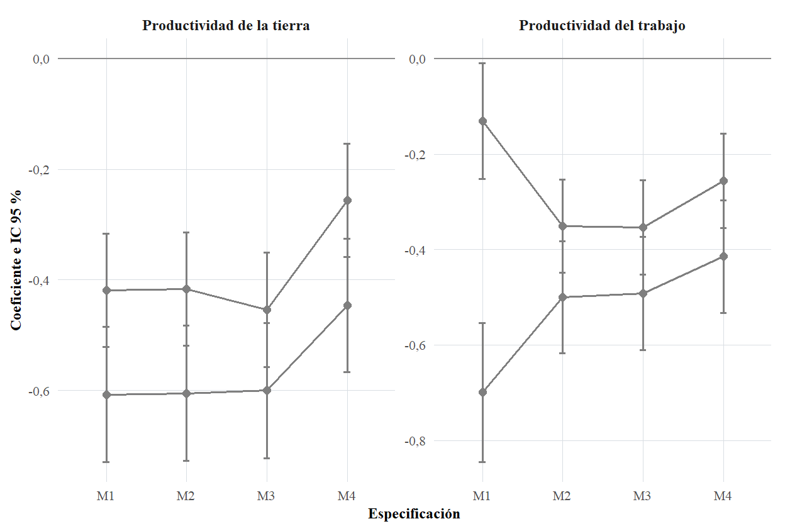
7.5.4 Evaluación del ajuste de los modelos lineales
Los indicadores de la Tabla 32 muestran que las covariables explican 7,2 % de la variación de la productividad de la tierra y 39,3 % de la productividad del trabajo. El \(R^2\) cuantifica la proporción de variación observada que la especificación representa de manera conjunta, pero no mide causalidad ni garantiza que cada predicción individual sea precisa. El primer valor confirma que una proporción amplia de la heterogeneidad por hectárea permanece asociada con composición productiva, calidad del suelo, infraestructura y otras dimensiones no observadas explícitamente. El segundo aumenta de forma sustantiva al representar la escala laboral con logaritmo y curvatura cuadrática, lo que reafirma que la forma funcional de la superficie es decisiva para comprender las diferencias de producto por trabajador. El objetivo de los modelos continúa siendo estimar asociaciones condicionadas, no predecir completamente la productividad de cada UPA.
Los criterios AIC y BIC se reportan como indicadores de ajuste dentro de cada familia de modelos. Ambos penalizan la complejidad y favorecen valores menores, de modo que permiten valorar si una mejora de ajuste justifica los parámetros adicionales. Los dos modelos OLS fueron estimados sobre 22.075 observaciones con estados SI o NO en los tres indicadores y covariables completas. La comparación directa entre productividad de la tierra y productividad del trabajo no es metodológicamente equivalente porque corresponden a variables dependientes distintas; por tanto, sus valores no deben utilizarse para decidir cuál de las dos productividades está mejor explicada en términos absolutos.
| Indicador | Productividad de la tierra | Productividad del trabajo |
|---|---|---|
| Observaciones | 22.075 | 22.075 |
| R² | 0,072 | 0,393 |
| R² ajustado | 0,072 | 0,392 |
| AIC | 91.088,182 | 90.827,024 |
| BIC | 91.200,213 | 90.947,057 |
| Fuente: Elaboración propia a partir de ESPAC 2022. |
7.5.5 Sensibilidades prioritarias e influencia
La Tabla 33 resume tres comprobaciones sin modificar la muestra maestra. Estas pruebas de robustez evalúan si el resultado de tenencia depende de decisiones específicas de modelización. Omitir sexo casi no altera productividad de la tierra, pero modifica parcialmente las brechas laborales. La educación ordinal estandarizada produce coeficientes de tenencia cercanos a la forma categórica; se conserva esta última porque evita imponer una pendiente uniforme entre niveles, supuesto que exigiría que cada avance educativo tuviera una asociación constante. La ponderación por fact_exp_fin mantiene signos y significancia, aunque modifica magnitudes. El modelo principal estima asociaciones dentro de la muestra analítica; la versión ponderada aproxima una asociación orientada a la población representada por el factor, pero no reproduce por sí sola todo el diseño complejo de encuesta. En conjunto, la estabilidad del signo indica que la conclusión cualitativa sobre tenencia no surge exclusivamente de una de estas decisiones.
| Resultado | Sensibilidad | Tenencia | Coeficiente | IC 95% | Valor p |
|---|---|---|---|---|---|
| Productividad de la tierra | Principal | Tenencia directa | -0,256 | [-0,358; -0,154] | <0,001 |
| Productividad de la tierra | Principal | Otros regímenes de tenencia | -0,446 | [-0,566; -0,326] | <0,001 |
| Productividad de la tierra | Sin sexo | Tenencia directa | -0,256 | [-0,359; -0,154] | <0,001 |
| Productividad de la tierra | Sin sexo | Otros regímenes de tenencia | -0,447 | [-0,567; -0,327] | <0,001 |
| Productividad de la tierra | Educación ordinal z | Tenencia directa | -0,254 | [-0,357; -0,152] | <0,001 |
| Productividad de la tierra | Educación ordinal z | Otros regímenes de tenencia | -0,447 | [-0,568; -0,327] | <0,001 |
| Productividad de la tierra | Ponderado | Tenencia directa | -0,303 | [-0,404; -0,202] | <0,001 |
| Productividad de la tierra | Ponderado | Otros regímenes de tenencia | -0,449 | [-0,569; -0,329] | <0,001 |
| Productividad del trabajo | Principal | Tenencia directa | -0,256 | [-0,355; -0,157] | <0,001 |
| Productividad del trabajo | Principal | Otros regímenes de tenencia | -0,415 | [-0,533; -0,297] | <0,001 |
| Productividad del trabajo | Sin sexo | Tenencia directa | -0,260 | [-0,359; -0,161] | <0,001 |
| Productividad del trabajo | Sin sexo | Otros regímenes de tenencia | -0,423 | [-0,540; -0,305] | <0,001 |
| Productividad del trabajo | Educación ordinal z | Tenencia directa | -0,257 | [-0,356; -0,158] | <0,001 |
| Productividad del trabajo | Educación ordinal z | Otros regímenes de tenencia | -0,415 | [-0,533; -0,297] | <0,001 |
| Productividad del trabajo | Ponderado | Tenencia directa | -0,267 | [-0,367; -0,167] | <0,001 |
| Productividad del trabajo | Ponderado | Otros regímenes de tenencia | -0,411 | [-0,530; -0,291] | <0,001 |
| Nota: | |||||
| Principal: educación categórica y sexo. Ponderado: mínimos cuadrados ponderados (WLS) con fact_exp_fin y HC1; no equivale a la reconstrucción integral del diseño complejo. Referencia: arrendamiento y aparcería. N = 22.075. | |||||
| Fuente: Elaboración propia a partir de ESPAC 2022. |
La Tabla 34 sintetiza los diagnósticos de influencia. Estos identifican observaciones con leverage, es decir, combinaciones poco comunes de covariables, y residuos inusuales, como es esperable en una base agropecuaria heterogénea. El umbral Cook > 4/n señala casos cuya presencia puede modificar el ajuste y que, por ello, ameritan inspección; no constituye una regla automática de eliminación. Los DFBETAs miden cuánto cambia cada coeficiente cuando se excluye una observación y muestran que ninguna UPA individual domina por sí sola los coeficientes de tenencia. Por tanto, se conserva íntegramente la muestra validada y se interpreta la sensibilidad como incertidumbre sobre la magnitud, no como justificación para depurar casos.
| Resultado | Cook > 4/n | Cook máximo | Máx. |DFBETA| tenencia |
|---|---|---|---|
| Productividad de la tierra | 1.052 | 0,035 | 0,128 |
| Productividad del trabajo | 1.093 | 0,010 | 0,153 |
| Nota: | |||
| Los umbrales son diagnósticos. No se excluyó ninguna UPA ni se alteró la base maestra. | |||
| Fuente: Elaboración propia a partir de ESPAC 2022. |
La Figura 27 traduce los coeficientes a medias ajustadas de \(\ln(1+Y)\), una escala que permite comparar directamente el nivel esperado bajo cada régimen sin aislar la lectura en un coeficiente abstracto. Para cada régimen se asignó esa categoría a todas las UPA y se mantuvo la distribución observada de las restantes covariables. Así, las diferencias representadas corresponden a una misma composición promedio de escala, tecnología y características sociodemográficas. La figura confirma que arrendamiento y aparcería presenta el nivel ajustado más alto en ambas productividades, seguido por tenencia directa y otros regímenes de tenencia.
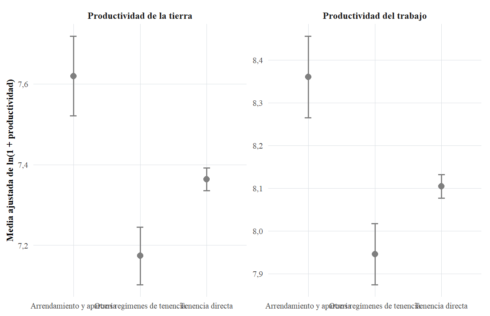
7.6 Modelos multinivel y heterogeneidad territorial
Las actividades agropecuarias se desarrollan dentro de contextos territoriales específicos caracterizados por diferencias en infraestructura, acceso a mercados, disponibilidad de servicios, condiciones agroecológicas e instituciones locales. Estas características pueden generar similitudes entre productores ubicados dentro de una misma provincia y producir dependencia entre observaciones, situación que no es considerada por los modelos lineales convencionales.
Para representar esta dimensión espacial se estimaron modelos multinivel con interceptos aleatorios provinciales14. La estructura responde al agrupamiento de las UPA dentro de provincias y descompone la variabilidad de la respuesta transformada en dos componentes: diferencias entre UPA de una misma provincia y diferencias promedio entre provincias. Esta separación evita tratar como completamente independientes a unidades que comparten un mismo entorno territorial y permite distinguir las asociaciones individuales de la heterogeneidad común a la provincia.
Como paso inicial, se estimaron modelos nulos sin variables explicativas para calcular el ICC. Este indicador mide la proporción de la varianza total de la respuesta transformada atribuible al nivel provincial antes de incorporar covariables. Un ICC igual a cero indicaría ausencia de agrupamiento provincial, mientras valores mayores muestran que las UPA de una misma provincia tienden a parecerse entre sí más que UPA ubicadas en provincias distintas.
Los resultados de la Tabla 35 muestran un ICC de 0,150 para la productividad de la tierra y de 0,092 para la productividad del trabajo. Antes de incorporar covariables, las diferencias promedio entre provincias reúnen así el 15,0 % y el 9,2 % de la variabilidad total de cada respuesta, respectivamente, dentro de la muestra tecnológica aplicable. En términos sustantivos, una parte no trivial de las diferencias de productividad no se distribuye aleatoriamente entre UPA, sino que se concentra en el territorio provincial compartido.
La concentración territorial es mayor para la productividad de la tierra, pero en ambas respuestas las UPA de una misma provincia comparten una fracción apreciable de su comportamiento. Esto justifica representar el agrupamiento que OLS deja fuera de su estructura de varianza. Los capítulos precedentes describen diferencias provinciales de infraestructura, acceso a mercados, condiciones agroecológicas, especialización e instituciones; el ICC indica que existe un componente territorial compartido, aunque no permite repartirlo entre esos factores.
| Modelo | ICC |
|---|---|
| Productividad de la tierra | 0,150 |
| Productividad del trabajo | 0,092 |
| Nota: | |
| El ICC se estima a partir del modelo nulo con intercepto aleatorio provincial sobre la muestra común de 22.075 UPA con estados SI o NO en los tres indicadores tecnológicos. | |
| Fuente: Elaboración propia a partir de ESPAC 2022. |
Con base en esta evidencia, se estimaron modelos multinivel con interceptos aleatorios provinciales. Esta especificación permite analizar asociaciones condicionales entre las covariables y la productividad transformada, controlando simultáneamente la variabilidad atribuible al nivel provincial. Los efectos fijos resumen las asociaciones promedio de tenencia y de las demás covariables, mientras los efectos aleatorios permiten que el nivel de partida difiera entre provincias. El fundamento metodológico es que, si existen unidades agrupadas territorialmente, ignorar esa dependencia puede producir una representación incompleta de la estructura de varianza y una cuantificación inadecuada de la incertidumbre.
Al incorporar el intercepto provincial, la tenencia directa (-0,254) y los otros regímenes de tenencia (-0,391) permanecen por debajo de arrendamiento y aparcería (Tabla 36). Estos coeficientes comparan UPA bajo distintos regímenes después de considerar tanto las covariables observadas como el nivel de productividad compartido por su provincia. La proximidad con OLS indica que la diferencia de tenencia no se explica por completo mediante la distribución provincial de las UPA: el patrón también aparece al efectuar la comparación dentro de la estructura territorial modelada.
La superficie conserva el signo negativo. Riego, fertilizantes, plaguicidas e internet mantienen asociaciones positivas, aunque riego y fertilizantes se atenúan al reconocer el contexto provincial compartido. Educación secundaria y superior conservan diferencias positivas frente a ninguna educación; edad y sexo no aportan diferencias concluyentes. El modelo confirma así una asociación conjunta entre régimen institucional, escala, tecnologías y productividad por hectárea, con un componente territorial adicional.
| Variable | Coeficiente | Error estándar | IC 95% | IC 95% sup. | Valor p | Sig. |
|---|---|---|---|---|---|---|
| Constante | 6,66 | 0,15 | 6,37 | 6,96 | <0,001 | *** |
| Tenencia directa | -0,25 | 0,06 | -0,36 | -0,14 | <0,001 | *** |
| Otros regímenes de tenencia | -0,39 | 0,06 | -0,52 | -0,26 | <0,001 | *** |
| Superficie (z) | -0,37 | 0,08 | -0,52 | -0,22 | <0,001 | *** |
| Edad (z) | -0,04 | 0,02 | -0,07 | 0,00 | 0,044 | * |
| Internet | 0,38 | 0,03 | 0,31 | 0,44 | <0,001 | *** |
| Educación: primaria | 0,00 | 0,03 | -0,06 | 0,06 | 0,965 | |
| Educación: secundaria | 0,26 | 0,04 | 0,18 | 0,34 | <0,001 | *** |
| Educación: superior | 0,63 | 0,12 | 0,40 | 0,85 | <0,001 | *** |
| Sexo: mujer | -0,06 | 0,03 | -0,11 | 0,00 | 0,048 | * |
| Riego | 0,20 | 0,03 | 0,14 | 0,26 | <0,001 | *** |
| Fertilizantes | 0,40 | 0,03 | 0,33 | 0,46 | <0,001 | *** |
| Plaguicidas | 0,38 | 0,03 | 0,32 | 0,44 | <0,001 | *** |
| Nota: | ||||||
| Modelo con intercepto aleatorio provincial; muestra restringida a UPA con estados SI o NO en los tres indicadores tecnológicos. Los valores p se calcularon mediante aproximación normal. *** p < 0,001; ** p < 0,01; * p < 0,05; . p < 0,10. | ||||||
| Fuente: Elaboración propia a partir de ESPAC 2022. |
En productividad del trabajo, la forma cóncava de la superficie se mantiene con alta precisión (Tabla 37), lo que confirma que el producto por trabajador crece con la escala a una tasa decreciente incluso después de reconocer las diferencias provinciales. Fertilizantes y plaguicidas conservan asociaciones positivas; riego e internet dejan de ser estadísticamente discernibles al incorporar el intercepto provincial. Este cambio no demuestra ausencia de relación, sino que indica que el modelo ya no puede separar con suficiente precisión su asociación individual de las características compartidas dentro de las provincias. El sexo femenino mantiene una diferencia negativa moderada, y educación secundaria continúa por debajo de ninguna educación dentro de esta especificación condicionada.
La tenencia directa (-0,238) y los otros regímenes de tenencia (-0,341) permanecen por debajo de arrendamiento y aparcería. La atenuación respecto de OLS muestra que una parte de las brechas laborales coincide con la composición provincial: los regímenes no se distribuyen de la misma manera entre territorios con distintos niveles de productividad. Sin embargo, su persistencia confirma que el patrón central no desaparece al reconocer la estructura territorial.
| Variable | Coeficiente | Error estándar | IC 95% | IC 95% sup. | Valor p | Sig. |
|---|---|---|---|---|---|---|
| Constante | 7,80 | 0,15 | 7,51 | 8,10 | <0,001 | *** |
| Tenencia directa | -0,24 | 0,06 | -0,35 | -0,13 | <0,001 | *** |
| Otros regímenes de tenencia | -0,34 | 0,06 | -0,47 | -0,21 | <0,001 | *** |
| ln(1 + superficie) (z) | 2,04 | 0,02 | 2,00 | 2,09 | <0,001 | *** |
| [ln(1 + superficie) (z)]² | -0,32 | 0,01 | -0,34 | -0,30 | <0,001 | *** |
| Edad (z) | -0,03 | 0,02 | -0,07 | 0,00 | 0,072 | . |
| Internet | 0,04 | 0,03 | -0,02 | 0,11 | 0,155 | |
| Educación: primaria | -0,06 | 0,03 | -0,12 | 0,01 | 0,082 | . |
| Educación: secundaria | -0,26 | 0,04 | -0,35 | -0,18 | <0,001 | *** |
| Educación: superior | -0,20 | 0,12 | -0,43 | 0,03 | 0,081 | . |
| Sexo: mujer | -0,08 | 0,03 | -0,13 | -0,02 | 0,008 | ** |
| Riego | -0,03 | 0,03 | -0,09 | 0,04 | 0,402 | |
| Fertilizantes | 0,22 | 0,03 | 0,16 | 0,29 | <0,001 | *** |
| Plaguicidas | 0,16 | 0,03 | 0,10 | 0,22 | <0,001 | *** |
| Nota: | ||||||
| Modelo con intercepto aleatorio provincial; muestra restringida a UPA con estados SI o NO en los tres indicadores tecnológicos. Los valores p se calcularon mediante aproximación normal. *** p < 0,001; ** p < 0,01; * p < 0,05; . p < 0,10. | ||||||
| Fuente: Elaboración propia a partir de ESPAC 2022. |
Además de estimar asociaciones condicionadas, los modelos multinivel muestran cuánta variabilidad territorial permanece después de incorporar las covariables. Por ello se examina nuevamente el ICC, ahora con una interpretación distinta de la correspondiente a los modelos nulos.
Mientras que el ICC de los modelos nulos cuantifica la proporción de variabilidad atribuible a provincias antes de considerar covariables, el ICC de los modelos completos refleja la variabilidad territorial residual después de controlar por tenencia, escala, edad, educación, internet, riego, fertilizantes y plaguicidas.
La Tabla 38 muestra que la mayor parte de la variabilidad residual permanece entre UPA de una misma provincia. El ICC completo alcanza 0,118 en productividad de la tierra y 0,114 en productividad del trabajo. En ambas respuestas persiste, por tanto, una fracción territorial sustantiva después de incorporar las covariables. Esto significa que tenencia, escala, tecnología y características sociodemográficas explican solo una parte de las diferencias provinciales; otras condiciones territoriales compartidas continúan asociadas con el desempeño.
| Modelo | Varianza territorial | Varianza residual | ICC |
|---|---|---|---|
| Productividad de la tierra | 0,449 | 3,372 | 0,118 |
| Productividad del trabajo | 0,435 | 3,379 | 0,114 |
| Nota: | |||
| El ICC representa la proporción de la varianza total atribuible a diferencias entre provincias. | |||
| Fuente: Elaboración propia a partir de ESPAC 2022. |
Los componentes de varianza y el ICC documentan heterogeneidad territorial residual, pero no establecen por sí solos si los interceptos provinciales mejoran el ajuste. La comparación siguiente contrasta, por ello, las especificaciones lineales y multinivel estimadas para una misma respuesta y muestra.
Con este propósito, se examinan los AIC y BIC, así como la log-verosimilitud, indicadores ampliamente utilizados para evaluar la calidad relativa del ajuste entre modelos estimados sobre la misma variable dependiente y la misma muestra analítica. En términos generales, valores inferiores de AIC y BIC, junto con mayores niveles de log-verosimilitud, sugieren un mejor equilibrio entre ajuste y parsimonia dentro de ese marco de comparación.
La Tabla 39 registra AIC y BIC inferiores en los modelos multinivel para ambas respuestas, junto con una mayor log-verosimilitud15. La reducción de AIC y BIC indica que la mejora no se debe únicamente a añadir parámetros, pues ambos criterios penalizan esa complejidad adicional. Dentro de cada variable dependiente y sobre la misma muestra, la representación del intercepto provincial ofrece un mejor ajuste que OLS; en términos sustantivos, reconocer niveles provinciales diferenciados reproduce con mayor fidelidad la heterogeneidad observada.
| Modelo | AIC | BIC | Log-verosimilitud | Observaciones |
|---|---|---|---|---|
| OLS tierra | 91.088 | 91.200 | -45.530 | 22.075 |
| Multinivel tierra | 89.612 | 89.732 | -44.791 | 22.075 |
| OLS trabajo | 90.827 | 90.947 | -45.399 | 22.075 |
| Multinivel trabajo | 89.659 | 89.787 | -44.813 | 22.075 |
| Nota: | ||||
| Valores menores de AIC y BIC indican mejor ajuste relativo entre modelos comparables. | ||||
| Fuente: Elaboración propia a partir de ESPAC 2022. |
Como sensibilidad territorial, se sustituyó el intercepto aleatorio por indicadores fijos provinciales. En esta alternativa, cada provincia recibe un parámetro propio sin asumir que sus diferencias proceden de una distribución común. Los coeficientes de tenencia permanecieron prácticamente iguales (Tabla 40), por lo que el resultado institucional no depende de escoger efectos fijos o efectos aleatorios para representar el territorio. Esta convergencia respalda el resultado principal y permite mantener el multinivel como especificación preferida, dado que cuantifica explícitamente la varianza territorial y aplica contracción parcial a las estimaciones provinciales, reduciendo estimaciones extremas cuando la información provincial es menos precisa.
| Resultado | Tenencia | Multinivel | Efectos fijos provinciales |
|---|---|---|---|
| Productividad de la tierra | Tenencia directa | -0,254 | -0,254 |
| Productividad de la tierra | Otros regímenes de tenencia | -0,391 | -0,389 |
| Productividad del trabajo | Tenencia directa | -0,238 | -0,238 |
| Productividad del trabajo | Otros regímenes de tenencia | -0,341 | -0,339 |
| Nota: | |||
| Ambos modelos utilizan la misma muestra y controles. Referencia: arrendamiento y aparcería. | |||
| Fuente: Elaboración propia a partir de ESPAC 2022. |
La Figura 28 muestra los efectos provinciales con sus intervalos de confianza condicionales. Cada punto representa cuánto se aparta el nivel provincial estimado del promedio general después de controlar por las covariables, y cada intervalo expresa la incertidumbre de esa diferencia. La contracción hacia el promedio y la amplitud de los intervalos impiden interpretar el orden como un ranking exacto: provincias próximas pueden no diferenciarse estadísticamente entre sí. Los efectos resumen heterogeneidad territorial residual; no identifican qué característica de cada provincia la origina.
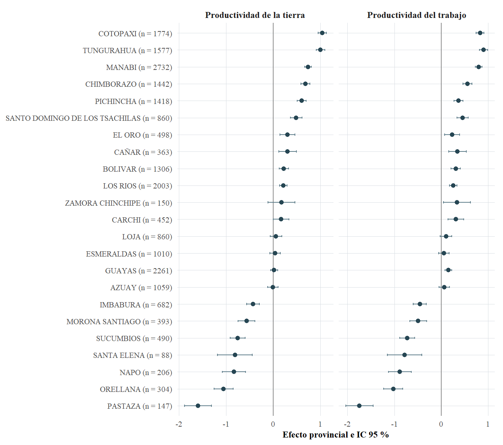
Comprobada la mejora de ajuste, el análisis se dirige a la distribución de los efectos territoriales. Mientras los coeficientes resumen asociaciones promedio, los interceptos aleatorios recogen diferencias provinciales residuales después de considerar las covariables del modelo.
La representación cartográfica permite visualizar esa heterogeneidad espacial residual. Efectos estimados mayores que cero corresponden a provincias cuya productividad transformada supera el nivel previsto por las características incluidas; valores menores que cero indican el patrón opuesto.
La Figura 29 evidencia una distribución espacial definida de los efectos sobre productividad de la tierra. Los valores positivos identifican provincias cuyo intercepto condicionado se sitúa por encima del promedio nacional de la muestra, y los negativos indican la situación inversa. La figura complementa, pero no sustituye, los intervalos de la Figura 28.
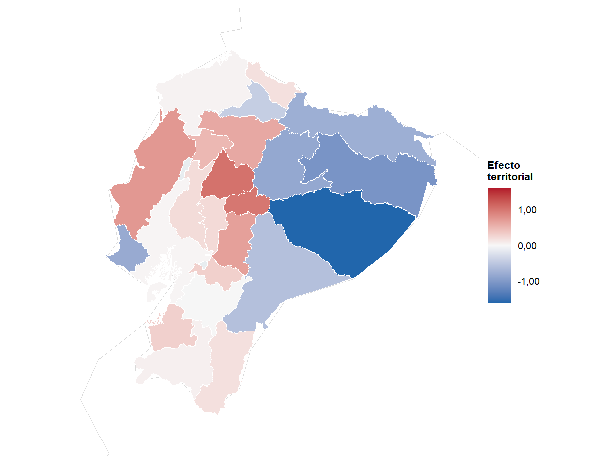
El mapa de productividad de la tierra no anticipa necesariamente el patrón laboral. Comparar ambas respuestas permite establecer si las diferencias provinciales residuales se reproducen cuando el resultado se expresa por trabajador o si cada dimensión del desempeño presenta una geografía propia.
La Figura 30 muestra una configuración parcialmente distinta para productividad laboral. Esta diferencia confirma que el contexto provincial no se relaciona de la misma forma con el aprovechamiento de la superficie y del trabajo. Los mapas deben leerse como heterogeneidad residual condicionada y no como efectos causales de la provincia.
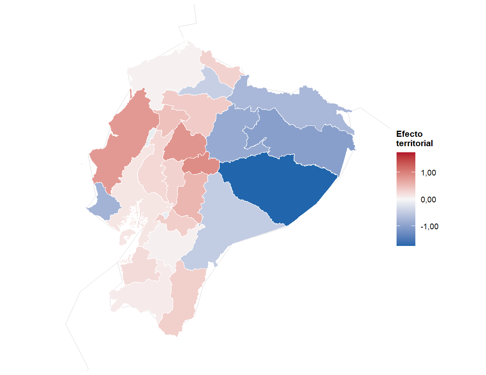
7.7 Frontera estocástica y eficiencia técnica
Los modelos lineales y multinivel permiten identificar factores asociados a la productividad promedio y a la heterogeneidad territorial; sin embargo, no distinguen entre diferencias derivadas de la dotación de recursos y aquellas relacionadas con la eficiencia con que dichos recursos son utilizados. Para abordar esta limitación se estimaron modelos de frontera estocástica, metodología que permite identificar una frontera de producción potencial y medir la distancia existente entre el desempeño observado de cada unidad productiva y el nivel máximo de productividad técnicamente alcanzable. La frontera representa el mejor desempeño condicionado por las covariables y por los supuestos del modelo; no constituye un máximo físico universal ni directamente alcanzable por todas las UPA.
Siguiendo el planteamiento de Aigner et al. (1977) y los desarrollos posteriores de Battese & Coelli (1995), la frontera estocástica descompone el término de error en dos componentes: uno simétrico, asociado a perturbaciones aleatorias fuera del control del productor, y otro unilateral, vinculado a ineficiencia técnica. Esta separación evita atribuir automáticamente a ineficiencia toda desviación respecto de la frontera, pues reconoce que el clima, la medición y otros eventos aleatorios también pueden afectar el resultado observado. La aproximación permite estimar simultáneamente asociaciones entre covariables y productividad, junto con un indicador de eficiencia técnica para cada unidad productiva agropecuaria bajo supuestos paramétricos específicos.
A diferencia de los modelos lineales y multinivel, la frontera estocástica conserva únicamente UPA con productividad_superficie > 0, productividad_trabajo > 0, covariables completas y estados SI o NO en riego, fertilizantes y plaguicidas. Esta restricción produce una muestra común de 21.430 UPA.
Por tanto, los resultados corresponden a la muestra analítica SFA definida por productividades estrictamente positivas, covariables completas y pertenencia al universo tecnológico aplicable. Las exclusiones corresponden a productividades iguales a cero, información incompleta o estados NO_APLICA; el criterio no redefine la cobertura de la base oficial.
Con base en esta especificación, se estimó la frontera estocástica para la productividad de la tierra, cuyos resultados se presentan en la Tabla 41.
En la frontera de la productividad de la tierra, la tenencia directa (-0,176) y los otros regímenes de tenencia (-0,400) se sitúan por debajo de arrendamiento y aparcería (Tabla 41). Esto significa que, para UPA con características observadas comparables dentro de la muestra positiva, la frontera condicionada asociada con arrendamiento y aparcería se ubica en un nivel superior. La superficie conserva una asociación negativa, mientras riego, fertilizantes, plaguicidas e internet desplazan la frontera condicionada hacia niveles más elevados. Los coeficientes pertenecen a la ecuación de frontera y no a una ecuación separada de determinantes de ineficiencia; por ello describen dónde se sitúa la frontera según las covariables, pero no cuánto explica cada una la distancia individual hasta ella.
La dirección del resultado de tenencia coincide con OLS y multinivel. La comparación específica con OLS sobre las mismas 21.430 UPA, presentada más adelante, muestra además que el cambio de muestra explica una parte de la variación de magnitud entre familias. La conclusión sustantiva es estable: arrendamiento y aparcería mantiene una posición condicionada superior dentro de la frontera paramétrica estimada.
| Variable | Coeficiente | Error estándar | Estadístico z | Valor p | Sig. |
|---|---|---|---|---|---|
| Constante | 8,32 | 0,05 | 161,11 | <0,001 | *** |
| Tenencia directa | -0,18 | 0,04 | -4,05 | <0,001 | *** |
| Otros regímenes de tenencia | -0,40 | 0,05 | -7,96 | <0,001 | *** |
| Superficie (z) | -0,52 | 0,06 | -9,25 | <0,001 | *** |
| Edad (z) | -0,09 | 0,01 | -6,33 | <0,001 | *** |
| Internet | 0,37 | 0,03 | 14,87 | <0,001 | *** |
| Educación: primaria | 0,02 | 0,03 | 0,96 | 0,338 | |
| Educación: secundaria | 0,41 | 0,03 | 13,34 | <0,001 | *** |
| Educación: superior | 0,76 | 0,09 | 8,39 | <0,001 | *** |
| Sexo: mujer | 0,04 | 0,02 | 1,57 | 0,117 | |
| Riego | 0,37 | 0,02 | 16,41 | <0,001 | *** |
| Fertilizantes | 0,42 | 0,02 | 18,45 | <0,001 | *** |
| Plaguicidas | 0,20 | 0,02 | 9,35 | <0,001 | *** |
| Nota: | |||||
| Modelo estimado sobre UPA con ambas productividades estrictamente mayores que cero (> 0), covariables completas y estados SI o NO en los tres indicadores tecnológicos. *** p < 0,001; ** p < 0,01; * p < 0,05; . p < 0,10. | |||||
| Fuente: Elaboración propia a partir de ESPAC 2022. |
De manera complementaria, se estimó la frontera estocástica para la productividad del trabajo, cuyos resultados se presentan en la Tabla 42.
En la frontera de la productividad laboral, la superficie mantiene una relación positiva y cóncava con la productividad condicionada. En términos económicos, la escala desplaza hacia arriba el nivel potencial de producto por trabajador, aunque esa ventaja aumenta cada vez menos conforme se amplía la superficie. Fertilizantes y plaguicidas desplazan la frontera hacia niveles más elevados, mientras que riego presenta una asociación de menor magnitud. La tenencia directa (-0,181) y los otros regímenes de tenencia (-0,393) permanecen por debajo de arrendamiento y aparcería (Tabla 42).
La convergencia de signos entre OLS, multinivel y SFA confirma la robustez relativa del patrón institucional: la ordenación de los regímenes se mantiene bajo tres formas distintas de representar el desempeño. Las magnitudes, sin embargo, no representan el mismo parámetro y no deben compararse como si fueran estimaciones intercambiables: OLS estima una media condicionada, el multinivel incorpora la agrupación provincial y SFA estima una frontera paramétrica sobre la submuestra positiva.
| Variable | Coeficiente | Error estándar | Estadístico z | Valor p | Sig. |
|---|---|---|---|---|---|
| Constante | 9,59 | 0,05 | 188,96 | <0,001 | *** |
| Tenencia directa | -0,18 | 0,04 | -4,21 | <0,001 | *** |
| Otros regímenes de tenencia | -0,39 | 0,05 | -7,92 | <0,001 | *** |
| ln(1 + superficie) (z) | 1,67 | 0,02 | 104,81 | <0,001 | *** |
| [ln(1 + superficie) (z)]² | -0,21 | 0,01 | -25,89 | <0,001 | *** |
| Edad (z) | -0,02 | 0,01 | -1,42 | 0,154 | |
| Internet | 0,02 | 0,02 | 0,81 | 0,416 | |
| Educación: primaria | 0,05 | 0,03 | 2,14 | 0,033 | * |
| Educación: secundaria | 0,08 | 0,03 | 2,53 | 0,011 | * |
| Educación: superior | 0,03 | 0,09 | 0,32 | 0,745 | |
| Sexo: mujer | -0,12 | 0,02 | -5,34 | <0,001 | *** |
| Riego | -0,02 | 0,02 | -0,91 | 0,364 | |
| Fertilizantes | 0,09 | 0,02 | 3,74 | <0,001 | *** |
| Plaguicidas | 0,15 | 0,02 | 7,14 | <0,001 | *** |
| Nota: | |||||
| Modelo estimado sobre UPA con ambas productividades estrictamente mayores que cero (> 0), covariables completas y estados SI o NO en los tres indicadores tecnológicos. *** p < 0,001; ** p < 0,01; * p < 0,05; . p < 0,10. | |||||
| Fuente: Elaboración propia a partir de ESPAC 2022. |
Los parámetros de varianza completan la lectura de las fronteras al mostrar el peso relativo de la ineficiencia técnica dentro del término compuesto de error.
Los resultados de la Tabla 43 muestran que gamma alcanza 0,6648 para la productividad de la tierra y 0,7146 para la productividad del trabajo. Gamma informa qué proporción de la varianza compuesta se atribuye al componente unilateral de ineficiencia dentro de cada modelo. Un valor próximo a cero indicaría que predomina el ruido aleatorio, mientras un valor mayor implica un mayor peso relativo de las desviaciones unilaterales asociadas con ineficiencia. No significa, sin embargo, que un factor productivo esté necesariamente peor administrado ni mide por sí solo la eficiencia promedio de las UPA.
Sigma cuadrado resume la varianza total del error compuesto. Ambas fronteras se estiman sobre 21.430 UPA con productividades positivas, covariables completas y estados tecnológicos SI o NO. Como las respuestas y formas funcionales difieren, gamma y sigma cuadrado deben interpretarse dentro de cada frontera y no como una comparación directa de cuál productividad es intrínsecamente más eficiente o variable.
| Modelo | Gamma | Sigma cuadrado | Log-verosimilitud | Observaciones |
|---|---|---|---|---|
| Productividad de la tierra | 0,6648 | 3,618 | -38.147 | 21.430 |
| Productividad del trabajo | 0,7146 | 3,797 | -37.997 | 21.430 |
| Nota: | ||||
| Gamma representa la proporción de la varianza compuesta atribuible a ineficiencia técnica. Sigma cuadrado corresponde a la varianza total del término compuesto de error. | ||||
| Fuente: Elaboración propia a partir de ESPAC 2022. |
Los índices individuales de eficiencia traducen ese componente de varianza a la posición relativa de cada UPA frente a su frontera estimada. Su distribución resume cuán próximas se encuentran las unidades productivas al máximo condicionado por la especificación: cuanto más cercano a uno es el índice, menor es la distancia estimada. Esta lectura es relativa al modelo y no convierte dicha distancia en una medida automática de producción recuperable.
Los resultados de la Tabla 44 muestran eficiencias medias de 0,404 para la productividad de la tierra y 0,387 para la productividad del trabajo. Una UPA con eficiencia relativa igual a uno se ubica sobre su frontera estimada; valores menores indican una mayor distancia dentro de esa especificación. Las medianas, 0,409 y 0,392, confirman que la separación no se origina únicamente en unas pocas observaciones.
Las eficiencias describen posiciones relativas frente a dos fronteras distintas. Por ello, no corresponde interpretar la diferencia entre sus medias como evidencia de que el trabajo se administra peor que la superficie. Tampoco el complemento de cada índice equivale automáticamente a producción recuperable: aproximarse a la frontera puede requerir recursos, infraestructura y cambios organizativos que el indicador no cuantifica.
| Modelo | Media | Mediana | Primer cuartil | Tercer cuartil | Mínimo | Máximo |
|---|---|---|---|---|---|---|
| Productividad de la tierra | 0,404 | 0,409 | 0,291 | 0,529 | 0,005 | 0,832 |
| Productividad del trabajo | 0,387 | 0,392 | 0,265 | 0,517 | 0,001 | 0,831 |
| Nota: | ||||||
| La eficiencia técnica toma valores entre 0 y 1. Valores cercanos a 1 indican menor distancia respecto a la frontera estimada. | ||||||
| Fuente: Elaboración propia a partir de ESPAC 2022. |
7.7.1 Comparabilidad de muestra y sensibilidad distributiva
Para separar el cambio de muestra del cambio de estimador, la Tabla 45 presenta OLS y SFA sobre las mismas 21.430 UPA. Esta comparación mantiene constantes las observaciones y los regresores, de modo que la diferencia restante puede atribuirse con mayor claridad a la forma de estimación. Los coeficientes se aproximan de forma apreciable dentro de esa muestra. Esto muestra que parte de la diferencia frente al OLS de 22.075 UPA se debe a la exclusión de productividades iguales a cero y no exclusivamente a la estructura de frontera.
| Resultado | Tenencia | OLS, muestra SFA | SFA half-normal |
|---|---|---|---|
| Productividad de la tierra | Tenencia directa | -0,205 | -0,176 |
| Productividad de la tierra | Otros regímenes de tenencia | -0,421 | -0,400 |
| Productividad del trabajo | Tenencia directa | -0,210 | -0,181 |
| Productividad del trabajo | Otros regímenes de tenencia | -0,414 | -0,393 |
| Nota: | |||
| Ambos estimadores usan las mismas 21.430 UPA y los mismos regresores. Referencia: arrendamiento y aparcería. | |||
| Fuente: Elaboración propia a partir de ESPAC 2022. |
La Tabla 46 compara la especificación half-normal con una distribución truncated-normal, es decir, evalúa si los resultados dependen de la forma paramétrica supuesta para el componente de ineficiencia. Los signos y coeficientes de tenencia cambian poco y las eficiencias individuales mantienen correlaciones superiores a 0,98. Esta correlación elevada indica que ambas distribuciones ordenan a las UPA de manera muy similar según su proximidad relativa a la frontera. En cambio, las medias aumentan alrededor de una décima y gamma también cambia. La robustez es, por tanto, mayor para el orden relativo de las UPA y la dirección de las asociaciones que para el nivel absoluto de eficiencia, que debe interpretarse con mayor cautela.
| Resultado | Distribución | Tenencia directa | Otros regímenes de tenencia | Gamma | Eficiencia media |
|---|---|---|---|---|---|
| Productividad de la tierra | Half-normal | -0,176 | -0,400 | 0,665 | 0,404 |
| Productividad de la tierra | Truncated-normal | -0,162 | -0,383 | 0,821 | 0,507 |
| Productividad del trabajo | Half-normal | -0,181 | -0,393 | 0,715 | 0,387 |
| Productividad del trabajo | Truncated-normal | -0,172 | -0,382 | 0,851 | 0,489 |
| Nota: | |||||
| Correlación de eficiencias half-normal/truncated-normal: 0,987 para productividad de la tierra y 0,986 para productividad del trabajo. | |||||
| Fuente: Elaboración propia a partir de ESPAC 2022. |
La distribución general de la eficiencia oculta su dimensión geográfica. Los promedios provinciales permiten observar si la distancia respecto de cada frontera se concentra territorialmente y si ambas medidas de productividad dibujan patrones espaciales similares.
La Figura 31 evidencia heterogeneidad territorial en la distancia media respecto de la frontera de la productividad de la tierra. Los valores más bajos mantienen una presencia importante en provincias amazónicas, mientras niveles superiores aparecen en partes de la Sierra y la Costa. El mapa resume promedios provinciales de eficiencias individuales y no controla su distinta precisión muestral; por ello se interpreta como patrón descriptivo complementario.
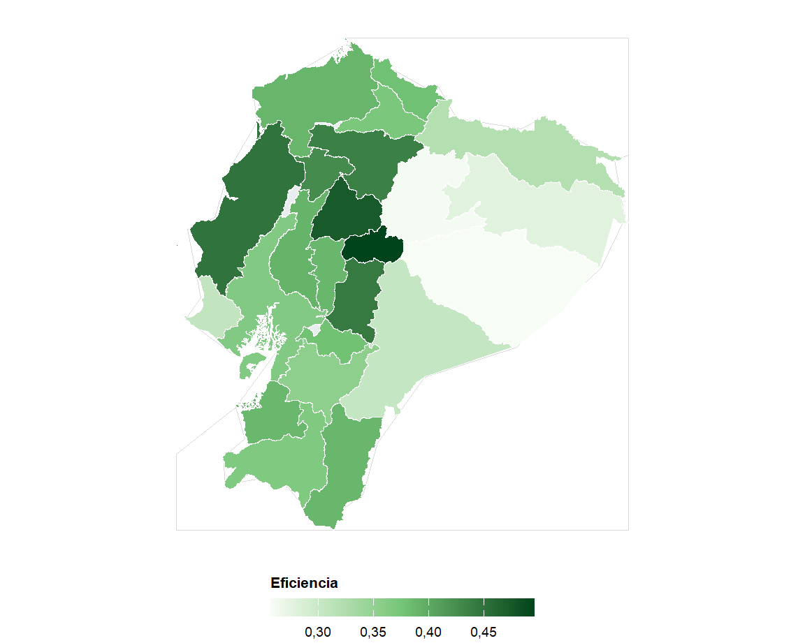
Un patrón similar se observa al analizar la eficiencia técnica de la productividad del trabajo, aunque con algunas diferencias en la distribución territorial de los niveles de desempeño.
La Figura 32 muestra una distribución territorial parcialmente distinta. El patrón de la productividad del trabajo resulta menos marcadamente amazónico en cuanto a la concentración territorial de los valores más bajos que el observado para la productividad de la tierra. Esta diferencia refuerza que cada eficiencia pertenece a una frontera específica y que las condiciones relacionadas con el aprovechamiento del trabajo no coinciden necesariamente con las asociadas a la superficie.
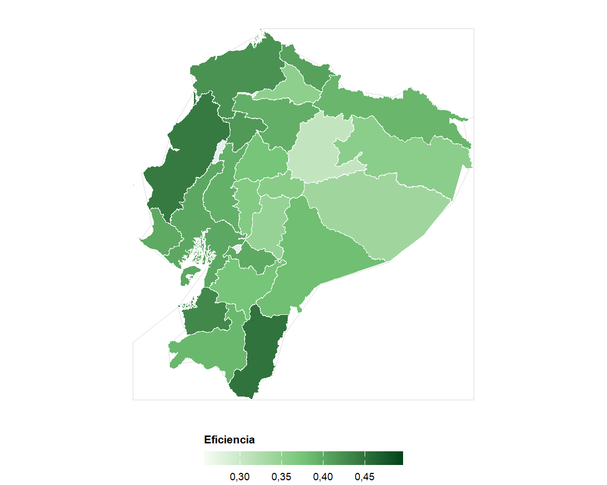
Para situar la magnitud de estas eficiencias, la sección siguiente las contrasta con estudios agrícolas internacionales que también emplean fronteras estocásticas.
7.8 Comparación de los niveles de eficiencia técnica con la evidencia internacional
La evidencia obtenida mediante la especificación half-normal muestra que las UPA incluidas en la muestra analítica se sitúan, en promedio, a una distancia considerable de sus fronteras estimadas. Las eficiencias medias alcanzan 0,404 para la productividad de la tierra y 0,387 para la productividad del trabajo. Estos valores expresan proximidad relativa al máximo condicionado de cada modelo y no porcentajes de producción que puedan recuperarse de forma inmediata. La sensibilidad truncated-normal eleva ambos niveles, pero conserva en gran medida el orden relativo de las UPA; por tanto, la ubicación comparativa de las unidades es más estable que la magnitud absoluta de la distancia estimada.
Al contrastar estos hallazgos con la evidencia internacional, se observa que los niveles de eficiencia identificados para Ecuador se sitúan por debajo de los reportados en estudios aplicados mediante modelos de frontera estocástica. Por ejemplo, Tenaye (2020) encuentra una eficiencia técnica promedio de 0,59 para pequeños productores agrícolas en Etiopía, mientras que Abate et al. (2019) reportan valores cercanos a 0,788 en explotaciones dedicadas al cultivo de pimiento. De forma similar, Trujillo & Iglesias (2013) estiman niveles de eficiencia próximos a 0,76 para productores de piña en Colombia.
Si bien las comparaciones internacionales deben realizarse con cautela debido a las diferencias en cultivos analizados, escalas territoriales, características de las explotaciones, disponibilidad de información y especificaciones econométricas empleadas, la evidencia disponible sitúa los resultados de Ecuador dentro de un patrón observado en estudios agrícolas de países en desarrollo: existen brechas de eficiencia potencialmente asociadas con acceso a tecnología, asistencia técnica, infraestructura, financiamiento y capital humano (Bravo-Ureta et al., 2007). Esta comparación no implica equivalencia directa entre contextos ni permite inferir que las mismas intervenciones producirían efectos similares.
Las brechas estimadas son compatibles con oportunidades de mejora en gestión y adopción tecnológica, pero no permiten calcular cuánto podría recuperarse mediante una intervención concreta. Las distancias también están condicionadas por recursos, infraestructura y entorno productivo; por ello, aproximarse a la frontera no depende exclusivamente de decisiones de la UPA. Esta cautela se aplica a ambas fronteras y, en particular, a la interpretación de sus niveles absolutos de eficiencia.
7.9 Discusión de los hallazgos
La evidencia describe una estructura multidimensional: tenencia, escala, tecnología, características sociodemográficas y provincia se relacionan con el desempeño de las UPA, aunque de manera distinta según el indicador. La superficie presenta una relación inversa con la productividad por hectárea y una asociación positiva, cóncava y mucho más explicativa con la productividad por trabajador. Lejos de ser resultados contradictorios, ambos reproducen la tensión desarrollada en el marco teórico. Las unidades pequeñas pueden concentrar trabajo y cuidados sobre una superficie limitada, mientras una mayor escala permite distribuir el trabajo y ciertos costos organizativos o mecánicos sobre un producto más amplio (Gollin, 2019; Hossain, 1977). Los modelos muestran ese patrón, pero no permiten aislar cuál de esos mecanismos predomina en Ecuador.
Las asociaciones tecnológicas también dependen de la medida de productividad. Riego, fertilizantes y plaguicidas acompañan mayores niveles de producto por hectárea; fertilizantes y plaguicidas conservan una relación positiva con el producto por trabajador después de representar adecuadamente la escala, pero riego no muestra una diferencia precisa en OLS o multinivel. La evidencia previa vincula insumos y condiciones tecnológicas con diferencias de productividad y eficiencia, sin exigir que su importancia sea idéntica por hectárea y por trabajador (Perdomo et al., 2007). Internet se asocia con mayor productividad de la tierra y con una diferencia laboral menor, atenuada al incorporar provincia. La especificación definitiva tampoco sostiene la lectura anterior de una asociación laboral negativa de fertilizantes, que respondía a una representación insuficiente de la escala.
Las variables sociodemográficas tampoco siguen un patrón uniforme. El sexo apenas diferencia la productividad de la tierra, mientras las UPA encabezadas por mujeres presentan menor productividad laboral condicionada. La educación no dibuja un gradiente lineal, lo que respalda su tratamiento categórico y desaconseja interpretar la escolaridad como una escala de rendimientos constantes. Las brechas pueden condensar diferencias de acceso a recursos, tipo de actividad y organización del trabajo; no representan efectos intrínsecos del sexo o la escolaridad.
El resultado central corresponde a la tenencia. Tenencia directa y otros regímenes de tenencia presentan coeficientes negativos frente a arrendamiento y aparcería en los modelos progresivos, OLS finales, multinivel, efectos fijos provinciales, la sensibilidad ponderada y ambas distribuciones SFA. Cambian las magnitudes cuando se incorporan escala, tecnologías, provincia o la submuestra positiva, pero no la ordenación. Esta estabilidad significa que el resultado no depende de una única selección de controles, estructura territorial, muestra o supuesto distributivo. La evidencia respalda una asociación sistemática entre tenencia y productividad y contradice la expectativa de que la tenencia directa deba ocupar necesariamente la posición superior.
Este hallazgo matiza, más que refuta, la teoría de los derechos de propiedad. La seguridad y un horizonte estable pueden favorecer la inversión (Besley, 1995; Deininger & Jin, 2006), pero la literatura revisada también encuentra efectos heterogéneos según el contexto institucional y productivo (Lawry et al., 2017). A su vez, los mercados de arrendamiento pueden facilitar que la tierra sea operada por productores con mayor capacidad o intensidad productiva (Otsuka, 2007). El desempeño condicionado de arrendamiento y aparcería es compatible con esta función asignativa, aunque ESPAC 2022 no observa directamente la selección de productores ni permite identificar el mecanismo causal.
La dimensión provincial conserva relevancia. Los interceptos aleatorios mejoran el ajuste, los ICC completos muestran heterogeneidad territorial residual y los efectos fijos producen coeficientes de tenencia casi idénticos. En conjunto, estos resultados indican que el territorio ayuda a explicar los niveles de productividad, pero no absorbe la asociación observada entre tenencia y desempeño. Infraestructura, mercados, condiciones agroecológicas e instituciones son interpretaciones plausibles del contexto compartido, pero los mejores predictores lineales insesgados (BLUP) provinciales solo resumen desviaciones residuales y no identifican esas causas.
La SFA sitúa a cada UPA respecto de una frontera paramétrica de productividad monetaria condicionada. El signo de las asociaciones de tenencia y el orden relativo de las eficiencias apenas cambian entre las distribuciones half-normal y truncated-normal; los niveles medios y gamma sí dependen del supuesto distributivo. La frontera aporta, de este modo, evidencia sobre posiciones relativas y sobre la composición de su error, pero las covariables de la ecuación principal desplazan la frontera condicionada y no constituyen una ecuación separada de determinantes de ineficiencia.
7.10 Síntesis comparativa de los modelos econométricos estimados
La Tabla 47 sintetiza los indicadores de ajuste de OLS, multinivel y SFA para las productividades de la tierra y del trabajo. Su lectura permite valorar la complementariedad de los enfoques sin tratar como equivalentes medidas calculadas con distintas respuestas, muestras o funciones de verosimilitud. OLS describe asociaciones promedio, el modelo multinivel añade la dependencia provincial y SFA evalúa la posición frente a una frontera paramétrica; por ello, la utilidad de la comparación radica en la convergencia de conclusiones y no en declarar un único modelo universalmente superior.
La Figura 33 concentra la evidencia principal. Los seis intervalos se sitúan por debajo de cero para tenencia directa y otros regímenes de tenencia, de modo que ninguno incluye la ausencia de diferencia respecto de arrendamiento y aparcería. La figura no presupone equivalencia entre parámetros de familias distintas ni permite comparar mecánicamente sus magnitudes; muestra la estabilidad direccional de las comparaciones frente a arrendamiento y aparcería.
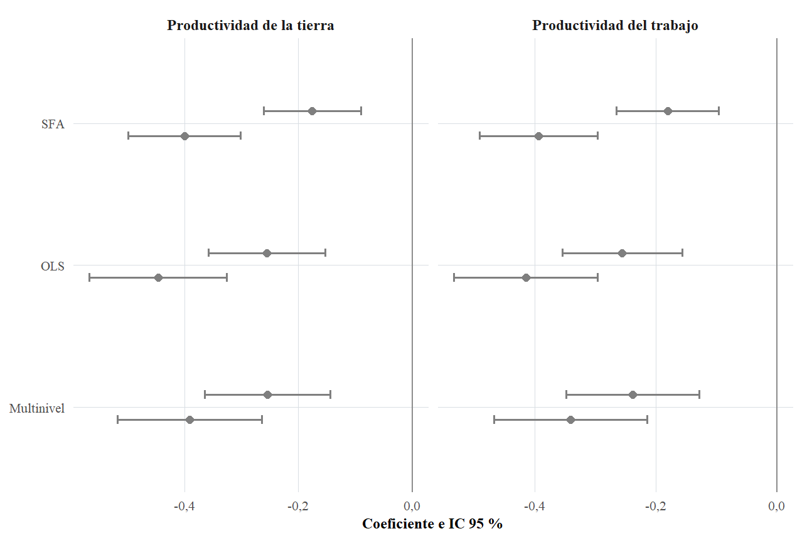
| Modelo | AIC | BIC | Log-verosimilitud | Observaciones |
|---|---|---|---|---|
| OLS tierra | 91.088 | 91.200 | -45.530 | 22.075 |
| Multinivel tierra | 89.612 | 89.732 | -44.791 | 22.075 |
| SFA tierra | 76.325 | 76.445 | -38.147 | 21.430 |
| OLS trabajo | 90.827 | 90.947 | -45.399 | 22.075 |
| Multinivel trabajo | 89.659 | 89.787 | -44.813 | 22.075 |
| SFA trabajo | 76.026 | 76.154 | -37.997 | 21.430 |
| Nota: | ||||
| Los AIC, BIC y log-verosimilitudes son comparables solo entre modelos de la misma familia, respuesta, muestra y función de verosimilitud. OLS y multinivel usan 22.075 UPA; SFA usa 21.430 UPA con ambas productividades positivas. Todas las muestras se restringen a estados SI o NO en los tres indicadores tecnológicos. | ||||
| Fuente: Elaboración propia a partir de ESPAC 2022. |
Los modelos multinivel mejoran el ajuste frente a OLS cuando la comparación se realiza dentro de la misma respuesta y muestra. Los ICC nulos muestran que el 15,0 % de la variabilidad de productividad de la tierra y el 9,2 % de la productividad laboral se sitúan entre provincias antes de incorporar controles. En los modelos completos, las proporciones alcanzan 11,8 % y 11,4 %. La persistencia de estas proporciones después del ajuste muestra que las covariables observadas no agotan la dimensión territorial del desempeño agropecuario.
Las fronteras estocásticas se estiman sobre 21.430 UPA y sus indicadores se reportan como medidas de ajuste interno. La sensibilidad distributiva conserva el patrón de tenencia, aunque no los niveles absolutos de eficiencia. Esto aconseja otorgar mayor confianza a la posición relativa y a la dirección de las asociaciones que a una lectura literal de las medias de eficiencia. La evidencia más sólida del capítulo reside en esa estabilidad direccional: la comparación frente a arrendamiento y aparcería mantiene el mismo signo en la media condicionada, la estructura multinivel y la frontera paramétrica.
7.11 Síntesis del capítulo
El capítulo permite extraer una conclusión económica clara: el régimen predominante de tenencia se asocia de manera sistemática con la productividad agropecuaria. Arrendamiento y aparcería presenta el mayor desempeño condicionado; tenencia directa y otros regímenes de tenencia se sitúan por debajo en productividad de la tierra y del trabajo. El patrón permanece al incorporar covariables por bloques, sexo, educación categórica, ponderación, provincia, la submuestra positiva y dos distribuciones de ineficiencia. La evidencia respalda, por tanto, la hipótesis general de una asociación entre tenencia y productividad, pero no respalda la expectativa simple de superioridad productiva de la tenencia directa.
La superficie se relaciona negativamente con productividad por hectárea y positivamente, con una curvatura cóncava, con productividad por trabajador. Esta diferencia sintetiza dos formas de desempeño: las UPA pequeñas pueden explotar intensivamente la superficie, mientras las de mayor escala alcanzan ventajas laborales que crecen a un ritmo decreciente. La mejora funcional eleva de forma sustantiva la capacidad explicativa del modelo laboral y evita atribuir a tecnologías o capital humano patrones que antes recogía una representación insuficiente de la escala.
Riego, fertilizantes y plaguicidas acompañan mayores niveles de productividad de la tierra. En productividad laboral, fertilizantes y plaguicidas mantienen asociaciones positivas, mientras riego no presenta una diferencia robusta una vez corregida la forma funcional e incorporado el territorio. Internet conserva una asociación clara con productividad de la tierra y más débil con productividad laboral. Educación y sexo muestran asociaciones diferenciadas entre respuestas, lo que confirma que capital humano y estructura sociodemográfica no actúan de manera uniforme.
La provincia aporta heterogeneidad residual y mejora el ajuste; la similitud entre efectos aleatorios y fijos refuerza la estabilidad de tenencia. Las fronteras paramétricas sitúan a las UPA a distancias heterogéneas de sus niveles condicionados. El orden relativo es estable frente al supuesto distributivo, aunque la eficiencia media y gamma cambian entre half-normal y truncated-normal.
La tenencia aparece, en suma, como una pieza relevante de una estructura productiva más amplia. El desempeño condicionado superior de arrendamiento y aparcería es compatible con una función de asignación de la tierra, pero no puede reducirse a una explicación institucional única. Puesto que la evidencia procede de una encuesta transversal, la conclusión se limita a asociaciones. Dentro de ese alcance, la consistencia entre especificaciones permite afirmar que la expectativa de una ventaja automática de la tenencia directa no describe los patrones observados en las UPA analizadas.
Conclusiones y recomendaciones
7.12 Conclusiones generales
Esta tesis se propuso analizar cómo se relaciona el régimen predominante de tenencia con la productividad agropecuaria de las unidades de producción agropecuaria (UPA) del Ecuador continental. La pregunta exigía distinguir el valor generado por hectárea del valor generado por trabajador, reconocer que las unidades operan en contextos provinciales diferentes y examinar su posición relativa frente a fronteras paramétricas condicionadas. Con información de la Encuesta de Superficie y Producción Agropecuaria Continua (ESPAC) 2022, la investigación articuló el estudio conceptual e histórico de la tenencia con una caracterización nacional y tres estrategias econométricas complementarias.
El marco conceptual permitió separar nociones que con frecuencia se confunden. Propiedad, tenencia y seguridad de los derechos no son equivalentes. La teoría de los derechos de propiedad sostiene que la estabilidad en el acceso puede ampliar el horizonte de decisión, proteger inversiones específicas y facilitar ciertas transacciones. Esa lógica explica por qué la tenencia directa puede ofrecer incentivos productivos, pero no establece una jerarquía universal entre formas de acceso. El arrendamiento y la aparcería también pueden cumplir una función económica al facilitar el acceso temporal y la movilidad de la tierra hacia productores dispuestos a utilizarla. La relevancia de cada mecanismo depende de la calidad de los derechos, las condiciones contractuales, el acceso a crédito y tecnología y el entorno institucional (Besley, 1995; Deininger & Jin, 2006; Otsuka, 2007).
La revisión de la literatura confirmó esa ambigüedad empírica. Los estudios que asocian seguridad de la tenencia con inversión y productividad conviven con resultados nulos, heterogéneos o dependientes del contexto. La formalización puede fortalecer derechos sin resolver restricciones de financiamiento, infraestructura, mercados o capacidades productivas; de igual modo, los sistemas consuetudinarios pueden ofrecer estabilidad efectiva aunque no reproduzcan la propiedad registral. Este debate proporcionó una expectativa contrastable, no una conclusión anticipada: debía existir una relación entre tenencia y productividad, pero su signo no podía deducirse exclusivamente de la forma jurídica (Lawry et al., 2017).
El análisis histórico e institucional situó esa discusión en Ecuador. La estructura agraria contemporánea conserva la huella de la concentración colonial, el latifundio y el minifundio, las reformas agrarias de 1964 y 1973 y el posterior énfasis en regularización y mercados de tierras. Estos procesos transformaron relaciones laborales y marcos jurídicos sin eliminar la desigualdad en el acceso. La coexistencia de tenencia directa, arrendamiento, aparcería, posesión, formas comunales y arreglos mixtos expresa una trayectoria institucional que no puede reducirse a la oposición entre propiedad formal e informalidad. También explica por qué el régimen observado en 2022 debe interpretarse junto con la escala, la actividad productiva y el territorio.
La caracterización de la ESPAC 2022 confirmó una agricultura internamente diversa. Predominan las UPA de pequeña escala, mientras una fracción reducida de unidades concentra gran parte de la superficie. La composición de cultivos, la actividad pecuaria, el uso de tecnologías y la productividad presentan diferencias amplias entre unidades y provincias. La tenencia directa es la modalidad predominante más frecuente, aunque existen UPA que combinan distintas formas de acceso dentro de su superficie. Esta composición justifica el uso de una categoría predominante para los modelos, pero recuerda que dicha clasificación resume arreglos internos más complejos.
La evidencia descriptiva mostró, además, que productividad de la tierra y productividad del trabajo capturan dimensiones distintas. Una UPA puede generar un valor elevado por hectárea mediante una utilización intensiva de superficie y trabajo sin alcanzar el mismo desempeño por trabajador. Los patrones territoriales tampoco coinciden plenamente: varias provincias de la Costa y de la Sierra concentran valores centrales relativamente altos, mientras parte de la Amazonía registra niveles menores, con una distribución diferente según el factor utilizado como denominador. Estas regularidades anticiparon la necesidad de incorporar escala y provincia y de evitar una única medida de desempeño.
Los modelos lineales ordinarios (OLS) confirman una asociación sistemática entre tenencia y ambas productividades. Con arrendamiento y aparcería como categoría de referencia, la tenencia directa y otros regímenes de tenencia presentan coeficientes negativos en productividad de la tierra y del trabajo después de incorporar escala, características sociodemográficas, conectividad y tecnologías. La magnitud se modifica al añadir bloques de controles, pero el signo permanece en todas las especificaciones progresivas. El resultado no depende, por tanto, de una comparación bruta ni de una sola medida de productividad.
La escala ayuda a comprender por qué las dos respuestas no deben confundirse. La superficie se relaciona negativamente con la productividad por hectárea, en consonancia con la relación inversa documentada para explotaciones pequeñas que concentran trabajo sobre áreas limitadas (Hossain, 1977). En cambio, el logaritmo estandarizado de la superficie presenta una relación positiva y cóncava con la productividad laboral: el valor por trabajador aumenta con la escala, aunque a un ritmo decreciente. Este patrón es compatible con una mejor distribución del trabajo y con ventajas organizativas o mecánicas en unidades mayores (Gollin, 2019). La evidencia ecuatoriana muestra así que una mayor productividad de la tierra no implica automáticamente una mayor productividad del trabajo.
Los resultados tecnológicos también dependen del indicador. Riego, fertilizantes y plaguicidas se asocian con mayor productividad de la tierra. En productividad laboral, fertilizantes y plaguicidas mantienen asociaciones positivas una vez representada adecuadamente la escala; riego, en cambio, no presenta una diferencia estadísticamente precisa en OLS o multinivel. Internet conserva una asociación clara con la productividad de la tierra y una relación laboral menor, que se atenúa al incorporar provincia. Estos patrones son compatibles con diferencias de intensificación y organización productiva, pero no permiten atribuir el desempeño a la adopción aislada de una tecnología.
Las características sociodemográficas tampoco operan de forma uniforme. La educación no sigue un gradiente lineal entre niveles, lo que respalda su tratamiento categórico. El sexo apenas diferencia la productividad de la tierra, mientras las UPA encabezadas por mujeres presentan menor productividad laboral condicionada. Esta brecha puede condensar desigualdades de acceso a recursos, tipo de actividad y organización del trabajo; no constituye una diferencia productiva intrínseca entre mujeres y hombres.
Los modelos multinivel muestran que parte de la heterogeneidad se estructura territorialmente. Antes de incorporar covariables, el 15,0 % de la variabilidad de la productividad de la tierra y el 9,2 % de la productividad laboral se sitúa entre provincias. Aunque la mayor parte de las diferencias ocurre entre UPA de una misma provincia, estos porcentajes justifican representar el contexto compartido. La mejora del ajuste frente a OLS y la persistencia de heterogeneidad en los modelos completos indican que las covariables observadas no agotan la dimensión territorial. Al mismo tiempo, la estimación con efectos fijos provinciales produce coeficientes de tenencia muy próximos a los multinivel, lo que refuerza la estabilidad del hallazgo central sin convertir las diferencias provinciales en efectos causales de infraestructura, clima o instituciones.
El análisis de frontera estocástica (SFA) añade una perspectiva distinta. Las fronteras de la productividad de la tierra y de la productividad laboral sitúan a cada UPA respecto del nivel monetario condicionado por la especificación. Los coeficientes de tenencia conservan la misma dirección que en OLS y multinivel. La estimación de OLS sobre las mismas 21.430 UPA permite comprobar que parte de las diferencias de magnitud entre familias responde al cambio de muestra, mientras la comparación entre distribuciones half-normal y truncated-normal muestra una distinción importante: los signos de tenencia y el orden relativo de las eficiencias son estables, pero la eficiencia media y gamma dependen del supuesto distributivo. Por ello, las puntuaciones describen posiciones relativas dentro de cada frontera y no cantidades de producción recuperables de manera automática.
La pregunta principal puede responderse de forma directa. En las UPA analizadas, el régimen predominante de tenencia se asocia de manera sistemática con la productividad agropecuaria. Arrendamiento y aparcería presenta un desempeño condicionado superior al de la tenencia directa y al de otros regímenes de tenencia en productividad de la tierra y del trabajo. La ordenación persiste en modelos progresivos, OLS, multinivel, efectos fijos provinciales, sensibilidad ponderada y fronteras con dos supuestos distributivos. La dimensión territorial modifica los niveles esperados de productividad y mejora el ajuste, pero no altera esa comparación central.
Esta respuesta respalda la hipótesis general de que existe una asociación entre tenencia y productividad, pero no respalda una expectativa simple de superioridad productiva de la tenencia directa. El resultado matiza la lectura más directa de los derechos de propiedad. La seguridad y el horizonte de inversión siguen siendo mecanismos económicamente relevantes, pero no bastan para predecir el desempeño observado. La posición de arrendamiento y aparcería es compatible con una función asignativa del mercado de tierras, mediante la cual productores con determinadas capacidades u oportunidades acceden temporalmente al recurso. La encuesta no observa la selección que conduce a cada régimen ni la calidad de los contratos, de modo que esta explicación permanece como mecanismo plausible y no como efecto identificado.
La tesis aporta, en primer lugar, evidencia nacional reciente que vincula tenencia y productividad a escala de UPA sin equiparar régimen de acceso con seguridad jurídica. En segundo lugar, muestra que estudiar solo el valor por hectárea ofrecería una imagen incompleta: escala, tecnología y territorio presentan relaciones diferentes con el producto por trabajador. En tercer lugar, integra asociaciones medias, agrupamiento provincial y fronteras paramétricas sobre definiciones comparables, haciendo visible qué resultados permanecen y cuáles dependen de la muestra o del supuesto distributivo. Finalmente, documenta el dominio de inferencia mediante la secuencia que conduce de 42.444 UPA a una muestra común de 22.075 y a la submuestra positiva de 21.430 utilizada en SFA.
Estas contribuciones tienen una implicación académica: la relación entre tenencia y desempeño debe estudiarse como parte de una estructura de asignación de recursos, capacidades y territorio. Para la política agraria, los resultados desaconsejan asumir que una modalidad jurídica, por sí sola, garantiza mayor productividad. La seguridad de los derechos continúa siendo valiosa por razones económicas y sociales, pero las intervenciones orientadas al desempeño requieren considerar también escala, acceso a tecnología, conectividad, capacidades de las personas productoras y condiciones territoriales. La asociación favorable observada para arrendamiento y aparcería tampoco justifica promover una modalidad contractual específica sin evaluar estabilidad, distribución de riesgos, poder de negociación y protección de las partes.
Las principales limitaciones delimitan el alcance de estas conclusiones. La ESPAC 2022 es transversal y observacional, por lo que no permite seguir cambios de régimen ni identificar efectos causales. La elección o permanencia en una forma de tenencia puede relacionarse con capacidades productivas no observadas, cultivos, localización y acceso a mercados. Los indicadores expresan valor bruto monetario construido con precios de referencia, no valor agregado, beneficio ni productividad total de los factores. La muestra econométrica se restringe a UPA con información completa y estados tecnológicos comparables; la SFA exige además productividades positivas. Calidad del suelo, microclima, mecanización, crédito, asistencia técnica, inversión acumulada y características contractuales no se observan con el detalle necesario. Por último, las eficiencias dependen de la frontera, la respuesta, la forma funcional y el supuesto distributivo elegidos.
Las futuras investigaciones se derivan de esas limitaciones. Datos longitudinales permitirían observar transiciones entre regímenes y separar mejor las diferencias persistentes de los cambios dentro de una misma UPA. Información contractual sobre duración, estabilidad, reparto del producto y capacidad de renovación ayudaría a evaluar el mecanismo asignativo sugerido por el desempeño de arrendamiento y aparcería. Mediciones de costos, capital, mecanización, suelo, distancia a mercados y asistencia técnica permitirían avanzar desde productividades parciales hacia indicadores de desempeño más integrales. Finalmente, la repetición del análisis en futuras rondas de la ESPAC permitiría determinar si la asociación de tenencia y los patrones territoriales identificados en 2022 son estables o responden a condiciones específicas de ese año.
7.13 Recomendaciones
Las implicaciones para la acción pública deben leerse como orientaciones que requieren evaluación adicional. La primera es evitar políticas de productividad basadas exclusivamente en la modalidad de tenencia. El fortalecimiento de la seguridad jurídica puede proteger derechos y ampliar horizontes de inversión, pero sus resultados productivos dependerán del acceso complementario a mercados, financiamiento, infraestructura, información y tecnología. La formalización no sustituye estos componentes ni resuelve por sí sola las restricciones de las UPA.
La segunda orientación es reconocer la función y los riesgos de los mercados de arrendamiento. La evidencia sugiere que el acceso temporal puede acompañar una asignación productiva favorable, pero la encuesta no informa sobre duración, reparto de riesgos o poder contractual. Antes de diseñar incentivos, resulta necesario mejorar la información sobre los contratos y asegurar condiciones que protejan tanto la continuidad productiva como los derechos de las partes.
La heterogeneidad provincial aconseja adaptar los instrumentos a los territorios. La infraestructura, la extensión rural, la conectividad y el acceso a mercados deben responder a sistemas productivos y restricciones locales. Los efectos provinciales estimados no identifican qué intervención funcionará en cada lugar; sí muestran que una estrategia homogénea omitiría una parte relevante de las diferencias de productividad.
La política tecnológica también debe distinguir entre productividad de la tierra y del trabajo. El uso de insumos se relaciona con mayor intensificación por hectárea, pero no todos presentan la misma asociación laboral. La asistencia técnica debería considerar dosis, oportunidad, cultivos, costos y organización del trabajo, y acompañarse de evaluaciones que midan resultados económicos, ambientales y distributivos.
Por último, conviene fortalecer la información estadística necesaria para evaluar estos mecanismos. Incorporar variables contractuales, costos, activos, crédito, asistencia técnica y calidad de los recursos permitiría formular diagnósticos más precisos. La continuidad de mediciones comparables en el tiempo ampliaría la capacidad de distinguir asociaciones coyunturales de regularidades estructurales y proporcionaría una base más sólida para evaluar políticas agrarias y productivas.
Bibliografía
Abate, T. M., Dessie, A. B., & Mekie, T. M. (2019). Technical efficiency of smallholder farmers in red pepper production in north gondar zone amhara regional state, ethiopia. Economic Structures, 8(18). https://doi.org/10.1186/s40008-019-0150-6
Abdulai, A., Owusu, V., & Goetz, R. (2011). Land tenure differences and investment in land improvement measures: theoretical and empirical analyses. Journal of Development Economics, 96(1), 6678. https://doi.org/10.1016/j.jdeveco.2010.08.002
Agarwal, B. (1994). A field of one’s own: gender and land rights in south asia. Cambridge University Press. https://doi.org/10.2307/3146971
Aigner, D., Lovell, C. A. K., & Schmidt, P. (1977). Formulation and estimation of stochastic frontier production function models. Journal of Econometrics, 6(1), 21-37. https://doi.org/10.1016/0304-4076(77)90052-5
Alene, A. D., & Coulibaly, O. (2009). The impact of agricultural research on productivity and poverty in sub-saharan africa. Food Policy, 34(2), 198-209. https://doi.org/10.1016/j.foodpol.2008.10.014
Alvarado, M., & Vandecandelaere, A. (2011). Tenencia de la tierra e inequidad en el acceso a la tierra. Tierra urgente, 51-79.
Alvarez, S. G. (2002). Etnicidades en la costa ecuatoriana. Editorial Abya Yala.
Anderson, T. L., & Lueck, D. (1992). Land tenure and agricultural productivity on indian reservations. The Journal of Law and Economics, 35(2), 427-454. https://doi.org/10.1086/467261
Aravindakshan, S., Krupnik, T. J., Groot, J. C. J., Speelman, E. N., Amjath-Babu, T. S., & Tittonell, P. (2020). Multi-level socioecological drivers of agrarian change: longitudinal evidence from mixed rice-livestock-aquaculture farming systems of bangladesh. Agricultural Systems, 177, 102695. https://doi.org/10.1016/j.agsy.2019.102695
Asamblea Constituyente del Ecuador. (2008). Constitución de la república del ecuador. Quito: Tribunal Constitucional del Ecuador. Registro Oficial Nro, 449, 79-93.
Asamblea Nacional del Ecuador. (2016). Ley orgánica de tierras rurales y territorios ancestrales. https://www.ambiente.gob.ec/wp-content/uploads/downloads/2018/09/Ley-Organica-de-Tierras-Rurales-y-Territorios-Ancestrales.pdf
Atwood, D. A. (1990). Land registration in africa: the impact on agricultural production. World Development, 18(5), 659-671. https://doi.org/10.1016/0305-750x(90)90016-q
Báez, R. (1995). Ecuador, pasado y presente. Libresa.
Balseca Narváez, C. M. (2014). El título de propiedad como objeto de la legalización de la tenencia de la tierra en los asentamientos de hecho con alto grado de consolidación de vivienda en el sector urbano marginal de quito [B.{S}. thesis]. PUCE.
Barajas, J. A. R. (2023). Productivity dynamics and state support after a land titling program: evidence from colombia. Land Use Policy, 131, 106690. https://doi.org/10.1016/j.landusepol.2023.106690
Barsky, O., Diaz Bonilla, E., & Furche, C. (1982). Politicas agrarias, colonizacion y desarrollo rural en ecuador; reflexiones sobre el proyecto de desarrollo rural integral quininde-malimpia-nueva jerusalem.
Battese, G. E., & Coelli, T. J. (1995). A model for technical inefficiency effects in a stochastic frontier production function for panel data. Empirical economics, 20, 325-332. https://doi.org/10.1007/BF01205442
Begazo Curie, K., Mertens, K., & Vranken, L. (2021). Tenure regimes and remoteness: when does forest income reduce poverty and inequality? A case study from the peruvian amazon. Forest Policy and Economics, 128, 102478. https://doi.org/10.1016/j.forpol.2021.102478
Benimana, G. U., Warner, J., & Missiame, A. K. (2025). Unlocking agricultural efficiency: a stochastic frontier analysis of smallholder farmers in rwanda (Rwanda SSP Working Paper No. 17). International Food Policy Research Institute (IFPRI). https://hdl.handle.net/10568/174560
Benjamin, E. O., Ola, O., Sauer, J., & Buchenrieder, G. (2021). Interaction between agroforestry and women’s land tenure security in sub-saharan africa: a matrilocal perspective. Forest Policy and Economics, 133, 102617. https://doi.org/10.1016/j.forpol.2021.102617
Besley, T. (1995). Property rights and investment incentives: theory and evidence from ghana. Journal of Political Economy, 103(5), 903-937. https://doi.org/10.1086/262008
Besley, T., & Ghatak, M. (2010). Property rights and economic development. En Handbook of development economics (Vol. 5, pp. 4525-4595). Elsevier. https://doi.org/10.1016/b978-0-444-52944-2.00006-9
Biru, W. D., Zeller, M., & Loos, T. K. (2020). The impact of agricultural technologies on poverty and vulnerability of smallholders in ethiopia: a panel data analysis. Social Indicators Research, 147(2), 517-544. https://doi.org/10.1007/s11205-019-02166-0
Borras, S. M., Kay, C., Gómez, S., & Wilkinson, J. (2012). Land grabbing and global capitalist accumulation: key features in latin america. Canadian Journal of Development Studies/Revue canadienne d’études du développement, 33(4), 402-416. https://doi.org/10.1080/02255189.2012.745394
Borrero, H. (2025). Land inequality, farm size, and productivity: insights from peruvian agriculture. Agricultural Economics. https://doi.org/10.1111/agec.70036
Bramall, C. (2004). Chinese land reform in long-run perspective and in the wider east asian context. Journal of Agrarian Change, 4(1-2), 107-141. https://doi.org/10.1111/j.1471-0366.2004.00074.x
Brassel, F., Herrera, S., Laforge, M., et al. (2008). ?‘ reforma agraria en el ecuador?: viejos temas, nuevos argumentos. SIPAE.
Brasselle, A.-S., Gaspart, F., & Platteau, J.-P. (2002). Land tenure security and investment incentives: puzzling evidence from burkina faso. Journal of Development Economics, 67(2), 373-418. https://doi.org/10.1016/s0304-3878(01)00190-0
Bravo-Ureta, B. E., Greene, W., & Solís, D. (2012). Technical efficiency analysis correcting for biases from observed and unobserved variables: an application to a natural resource management project. Empirical Economics, 43, 55-72.
Bravo-Ureta, B. E., Solís, D., Moreira, V. H., Maripani, J. F., Thiam, A., & Rivas, T. (2007). Technical efficiency in farming: a meta-regression analysis. Journal of Productivity Analysis, 27, 57-72. https://doi.org/10.1007/s11123-006-0025-3
Breusch, T. S., & Pagan, A. R. (1979). A Simple Test for Heteroscedasticity and Random Coefficient Variation. Econometrica, 47(5), 1287-1294. https://doi.org/10.2307/1911963
Bruce, J. W. (2000). Conceptos sobre tenencia de la tierra. http://www.fao.org/3/x3810s/x3810s00.htm
Cachanosky, I. (2012). Eficiencia técnica, eficiencia económica y eficiencia dinámica. Procesos de Mercado: Revista Europea de Economía Política, 9(2), 51-80. https://doi.org/10.52195/pm.v9i2.224
Calderón, D. T. N. (2021). Análisis de la transformación productiva del Ecuador: caso de estudio; la actividad agrícola en la Zona de Planificación 4.
Carrión, D., & Herrera, S. (2012). Ecuador rural del siglo xxi: soberanía alimentaria, inversión pública y política agraria. Instituto de Estudios Ecuatorianos.
Carrión, R. R. C., Niquinga, C. O. Z., León, C. V. G., Cordero, R. E. P., Almeida, H. E. F., Veloz, G. H. A., Andrade, J. F. O., Revelo, C. I. O., Vinueza, D. R. M., Guerrero, J. E. G., Aguirre, R. M. S., & Carrasco, J. C. (2008). Byron antonio villacís cruz.
Chakraborty, K. (2016). Determinants of demand for fertilizer: a case for india. Asian Journal of Agriculture and Development, 13(1), 77-86. https://doi.org/10.37801/ajad2016.13.1.5
Chand, R., Prasanna, P. A. L., & Singh, A. (2011). Farm size and productivity: understanding the strengths of smallholders and improving their livelihoods. Economic and Political Weekly, 46(26/27), 5-11. https://doi.org/10.22004/ag.econ.281567
Chand, S., & Yala, C. (2009). Land tenure and productivity: farm-level evidence from papua new guinea. Land Economics, 85(3), 442-453. https://doi.org/10.3368/le.85.3.442
Chiriboga, M. (1988). La reforma agraria ecuatoriana y los cambios en la distribución de la propiedad rural agrícola, 1974-1985. En P. Gondard, J. B. León V., & P. Sylva Ch. (Eds.), Transformaciones agrarias en el Ecuador (pp. 39-58). IPGH; ORSTOM; IGM; CEDIG. https://horizon.documentation.ird.fr/exl-doc/pleins_textes/doc34-07/27074.pdf
Cisneros, C., Presten, D. A., & Ibarra, H. (1988). Poblacion, migracion y empleo en el ecuador.
Coelli, T. J., & Rao, D. S. P. (2005). Total factor productivity growth in agriculture: a malmquist index analysis of 93 countries, 1980–2000. Agricultural Economics, 32(s1), 115-134. https://doi.org/10.1111/j.0169-5150.2004.00018.x
Coll, V., & Blasco, O. M. (2000). Evaluación de la eficiencia mediante el análisis envolvente de datos. Juan Carlos Martínez Coll.
Coloma Romero, G. (2002). Como crear una cultura política en la sociedad ecuatoriana [Mathesis, IAEN]. http://repositorio.iaen.edu.ec/handle/24000/5335
Cordero, J. (1980). El huasipungo en el ecuador: historia de una forma de explotación agraria. Editorial El Conejo.
Corral, L. R., & Montiel Olea, C. E. (2019). What drives take-up in land regularization: ecuador’s rural land regularization and administration program, sigtierras. Journal of Economics, Race, and Policy, 3(1), 1-23. https://doi.org/10.1007/s41996-019-00041-1
Corral, L., Montiel, C., & Schling, M. (2024). Effects of land administration: evaluation of ecuador’s rural land administration program, sigtierras (Technical Note Nos. IDB-TN-03023). Inter-American Development Bank. https://doi.org/10.18235/0013245
Cotula, L. (2022). Recalibrating rights, limitations and obligations in land governance.
Coulibaly, D. A. (2021). An analysis of the impact of land tenure security on agricultural productivity in burkina faso (Research Paper No. 466). African Economic Research Consortium (AERC). https://doi.org/10.1504/ijarge.2022.10053269
Damián Huato, M. Á., López Olguín, J. F., Ramírez Valverde, B., Parra Inzunza, F., Paredes Sánchez, J. A., Gil Muñoz, A., & Cruz León, A. (2007). Productividad y tenencia de la tierra: el caso de los productores de maíz del Estado de Tlaxcala, México. Cuadernos de Desarrollo Rural, 4(59), 149-177. https://www.redalyc.org/articulo.oa?id=11759006
Deere, C. D., & León, M. (2001). Empowering women: land and property rights in latin america (Vol. 349). University of Pittsburgh Pre. https://doi.org/10.2307/j.ctt5hjpf6
Deininger, K. W. et al. (2003). Land policies for growth and poverty reduction. World Bank Publications.
Deininger, K., & Jin, S. (2006). Tenure security and land-related investment: evidence from ethiopia. European Economic Review, 50(5), 1245-1277. https://doi.org/10.1016/j.euroecorev.2005.02.001
Deininger, K., Jin, S., Xia, F., & Huang, J. (2014). Moving off the farm: land institutions to facilitate structural transformation and agricultural productivity growth in china. World Development, 59, 505-520. https://doi.org/10.1016/j.worlddev.2013.10.009
Dickerman, C., & Barnes, G. (1989). Security of tenure and land registration in africa: literature review and synthesis. https://core.ac.uk/download/pdf/6778934.pdf
Dirven, M. (2002). Las prácticas de herencia.
Djurfeldt, A. A., Hillbom, E., Mulwafu, W. O., Mvula, P., & Djurfeldt, G. (2018). «The family farms together, the decisions, however are made by the man»-matrilineal land tenure systems, welfare and decision making in rural malawi. Land Use Policy, 70, 601-610. https://doi.org/10.1016/j.landusepol.2017.10.048
Douglas, P. H. (1976). The cobb-douglas production function once again: its history, its testing, and some new empirical values. Journal of political economy, 84(5), 903-915. https://doi.org/10.1086/260489
Escobar, G. (2016). Estructura y tenencia de la tierra agrícola en américa latina y el caribe. Nueva Sociedad, 7.
ESPAC. (2013). Encuesta de superficie y producción agropecuaria continua espac-2013. https://www.ecuadorencifras.gob.ec/encuesta-de-superficie-y-produccion-agropecuaria-continua-espac-2013/
Espinosa Mogrovejo, V. D. (2018). Violencia vs. Derechos indígenas. El caso del desplazamiento de las comunidades shuar arutam para facilitar actividades mineras en la cordillera del cóndor [B.{S}. thesis]. PUCE-Quito.
FAO. (2008). Gobernanza y tenencia de tierras y recursos naturales en américa latina. https://openknowledge.fao.org/server/api/core/bitstreams/5cf379c0-daa8-4ba5-8ad7-c993fa24c524/content
FAO. (2022). Land governance in latin america and the caribbean. FAO. https://doi.org/10.4060/cb8229en
Farrell, M. J. (1957). The measurement of productive efficiency. Journal of the royal statistical society: series A (General), 120(3), 253-281. https://doi.org/10.2307/2343100
Feder, G. (1987). Land ownership security and farm productivity: evidence from thailand. The Journal of Development Studies, 24(1), 16-30. https://doi.org/10.1080/00220388708422052
Feder, G., & Nishio, A. (1998). The benefits of land registration and titling: economic and social perspectives. Land Use Policy, 15(1), 25-43. https://doi.org/10.1016/S0264-8377(97)00039-2
Fenske, J. (2011). Land tenure and investment incentives: evidence from west africa. Journal of Development Economics, 95(2), 137-156. https://doi.org/10.1016/j.jdeveco.2010.05.001
Fernández, G. C. (2005). Construyendo normas y derechos sobre la tierra.
FIDA. (2016). La tenencia de la tierra en las operaciones financiadas por el fida. https://www.ifad.org/documents/d/new-ifad.org/lt0_teaser_sp_web-pdf
Flora, L., Richard, B., Isabel, O., & Ana. (2011). Modos de vivir y sobrevivir: un estudio transcultural de cinco etnias de la amazonía ecuatoriana. Editorial Abya - Yala.
Francescutti, D. et al. (2002). Regularización de la tenencia de tierras: evolución, costos, beneficios y lecciones. El caso de ecuador. Investment centre occasional paper series, 13.
Fulginiti, L. E., & Perrin, R. K. (1998). Agricultural productivity in developing countries. Agricultural Economics, 19(1), 45-51. https://doi.org/10.1016/S0169-5150(98)00045-0
Galarza, F. B., & Díaz, J. G. (2015). Productividad total de factores en la agricultura peruana: estimación y determinantes. Economía, 38(76), 77-116. https://doi.org/10.18800/economia.201502.003
Galue, F. del V. U. de. (2013). Análisis de eficiencia técnica en UPAs ganaderas de doble propósito en la cuenca del lago de maracaibo, venezuela.
Garzón Delvaux, P. A., Riesgo, L., & Gomez y Paloma, S. (2020). Farm size-performance relationship: a review (Nos. EUR 30471 EN). Joint Research Centre (JRC), Publications Office of the European Union. https://doi.org/10.2760/140208
Gelman, A., & Hill, J. (2007). Data analysis using regression and multilevel/hierarchical models. Cambridge University Press. https://doi.org/10.1017/CBO9780511790942
Gligo, N. (2001). La dimensión ambiental en el desarrollo de américa latina. Libros de la CEPAL.
Gobien, S. (2015). Land matters. An impact evaluation in developing countries.
Gold, M. E., & Zuckerman, R. B. (2014). Indonesian land rights and development. Colum. J. Asian L., 28, 41.
Gollin, D. (2010). Chapter 73 agricultural productivity and economic growth (Vol. 4, pp. 3825-3866). Elsevier. https://doi.org/10.1016/S1574-0072(09)04073-0
Gollin, D. (2019). Farm Size and Productivity: Lessons from Recent Literature. 34. https://doi.org/10.22004/ag.econ.281567
Gondard, P., & Mazurek, H. (2001). 30 años de reforma agraria y colonización en el ecuador (1964–1994): dinámicas espaciales. En Dinamicas territoriales: Ecuador, Bolivia, Peru, Venezuela (p. 147). IRD / CGE / PUCE / CEN. https://www.flacsoandes.edu.ec/web/imagesFTP/1278018242.Gondard_PierreMazurekHubert30anosreformaagraria.pdf
Guerrero, A. (1991). La semántica de la dominación: el concertaje de indios. Libri Mundi. https://doi.org/10.2307/2650973
Hayami, Y., & Ruttan, V. W. (1971). Agricultural development: an international perspective. https://doi.org/10.2307/2230054
Helfand, S. M., & Taylor, M. P. H. (2021). The inverse relationship between farm size and productivity: refocusing the debate. Food Policy, 99, 101977. https://doi.org/10.1016/j.foodpol.2020.101977
Hernández, M. I. (2001). Ejemplo de políticas de tierras en varios países de europa occidental. IRAM, RESAL, August. https://www.agter.asso.fr/IMG/pdf/HERNANDEZ_2001_08_EUROPE_STRUCTURES.pdf
Herrera, A., & Guglielma, M. (2006). Manejo alternativo de conflictos de tenencia de la tierra. Manuales Sobre Tenencia de La Tierra, 2.
Hidalgo, F., Alvarado, M., VANDECANDELAERE, A., CHIPANTASI, L., PÁSTOR, C., & QUISHPE, V. (2011). Atlas: tenencia de la tierra en el ecuador. SIPAE, Quito.
Ho, H.-A. (2021). Land tenure and economic development: evidence from vietnam. World Development, 140, 105275. https://doi.org/10.1016/j.worlddev.2020.105275
Holden, S. T., Deininger, K., & Ghebru, H. (2009). Impacts of low-cost land certification on investment and productivity. American Journal of Agricultural Economics, 91(2), 359-373. https://doi.org/10.1111/j.1467-8276.2008.01241.x
Hossain, M. (1977). Farm size, tenancy and land productivity: an analysis of farm level data in bangladesh agriculture. The Bangladesh Development Studies, 5(3), 285-348. https://www.jstor.org/stable/23017967
Ibarra, H. I. C. (1988). Haciendas y concertaje al fin de la época colonial en el ecuador (un análisis introductorio). Revista Andina, 11, 175-200.
IGM. (1998). Transformaciones agrarias en el ecuador. https://kipdf.com/transformaciones-agrarias-en-el-ecuador\_5aeadfe17f8b9a0a7c8b462a.html
INEC. (2022). Manual del encuestador, supervisor, digitador. Espac 2022. Instituto Nacional de Estadística y Censos (INEC). https://www.ecuadorencifras.gob.ec/documentos/web-inec/Estadisticas_agropecuarias/espac/espac_2022/Manual_ESPAC_2022.pdf
Irazola, G. A., & Lau, E. (2011). Acerca de la prescripción adquisitiva:¿ saliendo de la" caverna"? Themis Revista de derecho, 60, 149-166.
İşcan, T. B. (2018). Redistributive Land Reform and Structural Change in Japan, South Korea, and Taiwan. American Journal of Agricultural Economics, 100(3), 732-761. https://doi.org/10.1093/ajae/aax093
Jänicke, C., Wesemeyer, M., Chiarella, C., Lakes, T., Levers, C., Meyfroidt, P., Müller, D., Pratzer, M., & Rufin, P. (2024). Can we estimate farm size from field size? An empirical investigation of the field size to farm size relationship. Agricultural Systems, 220, 104088. https://doi.org/10.1016/j.agsy.2024.104088
Johnston, B. F., & Mellor, J. W. (1961). The role of agriculture in economic development. The American Economic Review, 51(4), 566-593.
Joshi, K., Lachaud, M. A., Solís, D., & Alvarez, S. (2022). Impacts of climatic variability on agricultural total factor productivity growth in the southern united states. Environments, 9(10), 129. https://doi.org/10.3390/environments9100129
Knox, A., Caron, C., Miner, J., & Goldstein, A. (2011). Land tenure and payment for environmental services. Challenges and opportunities for redd. Land Tenure Journal, 2.
Koirala, B. P. (2017). Integrated community energy systems [{PhD} {Thesis}, Delft University of Technology]. https://ris.utwente.nl/ws/portalfiles/portal/19839834/ICES_Koirala_final.pdf
Kumbhakar, S. C., & Lovell, C. K. (2003). Stochastic frontier analysis. Cambridge university press.
Kung, J. K., Wu, X., & Wu, Y. (2012). Inequality of land tenure and revolutionary outcome: an economic analysis of china’s land reform of 1946–1952. Explorations in Economic History, 49(4), 482-497. https://doi.org/10.1016/j.eeh.2012.07.001
Laforge, M., & Vandecandelaere, A. (2011). ?‘ es posible proponer un límite máximo para la tenencia de la tierra en el ecuador? Tierra urgente, 93.
Larrea, C., & Greene, N. (2015). De la lucha contra la pobreza a la superación de la codicia.
Larrea, F. (1998). Políticas agrarias y economías campesinas en el ecuador. Red Interamericana de Agriculturas y Democracia.
Lawry, S., Samii, C., Hall, R., Leopold, A., Hornby, D., & Mtero, F. (2014). The impact of land property rights interventions on investment and agricultural productivity in developing countries: a systematic review. Campbell Systematic Reviews, 10(1), 1-104. https://doi.org/10.4073/csr.2014.1
Lawry, S., Samii, C., Hall, R., Leopold, A., Hornby, D., & Mtero, F. (2017). The impact of land property rights interventions on investment and agricultural productivity in developing countries: a systematic review. Journal of Development Effectiveness, 9(1), 61-81. https://doi.org/10.1080/19439342.2016.1160947
Madau, F. A. et al. (2012). A comparison between stochastic frontier analysis (sfa) and technical efficiency estimation in agriculture. Munich Personal RePEc Archive. https://mpra.ub.uni-muenchen.de/41403/1/MPRA_paper_41403.pdf
Madrid. (2018). La política agraria en ecuador 1965-2015. En Propuestas para el Desarrollo (No. II; pp. 47-48). https://doi.org/10.29166/economia.v70i112.2048
MAGAP. (2016). La política agropecuaria ecuatoriana, hacia el desarrollo territorial rural sostenible 2015-2025. http://www2.competencias.gob.ec/wp-content/uploads/2021/03/01-06PPP2015-POLITICA01.pdf
Matsuyama, K. (1992). Agricultural productivity, comparative advantage, and economic growth. Journal of Economic Theory, 58(2), 317-334. https://doi.org/10.1016/0022-0531(92)90057-O
Migot-Adholla, S., Hazell, P., Blarel, B., & Place, F. (1991). Indigenous land rights systems in sub-saharan africa: a constraint on productivity? The World Bank Economic Review, 5(1), 155-175. https://doi.org/10.1093/wber/5.1.155
Minten, B., & Barrett, C. B. (2008). Agricultural technology, productivity, and poverty in madagascar. World Development, 36(5), 797-822. https://doi.org/10.1016/j.worlddev.2007.05.004
Mitchell, D., Antonio, D., Storey, D., CheeHai, T., & Rosales-Kawasaki, L. (2016). Land tenure in asia and the pacific: challenges, opportunities and way forward. Opportunities and Way Forward (February 23, 2016). https://doi.org/10.2139/ssrn.2737103
Mochesane, L. E. (2024). Effect of land tenure security on agricultural productivity among small-scale maize farmers in Leribe and Maseru districts of Lesotho [MSc Thesis, National University of Lesotho]. https://repository.tml.nul.ls/bitstream/handle/20.500.14155/2203/Thesis-Effect-Mochesane-2024.pdf
Montgomery, D. C., Peck, E. A., & Vining, G. G. (2021). Introduction to Linear Regression Analysis (6.ª ed.). John Wiley & Sons.
Nin-Pratt, A., & Yu, B. (2008). Agricultural productivity in developing countries. Agricultural Economics, 39(s1), 31-41. https://doi.org/10.1111/j.1574-0862.2008.00326.x
Olmo, R. M., & Naranjo-Ramírez, J. (1997). La geografía rural y el estudio de la tenencia de la tierra en españa.
Omotilewa, O. J., Jayne, T. S., Muyanga, M., Aromolaran, A. B., Liverpool-Tasie, L. S. O., & Awokuse, T. (2021). A revisit of farm size and productivity: empirical evidence from a wide range of farm sizes in nigeria. World Development, 146, 105592. https://doi.org/10.1016/j.worlddev.2021.105592
Ondetti, G. (2008). Land, Protest, and Politics: The Landless Movement and the Struggle for Agrarian Reform in Brazil. Pennsylvania State University Press. https://www.psupress.org/books/titles/978-0-271-03353-2.html
Ospina Peralta, P. E., Hollenstein, P., & Latorre, S. (2020). Territorio, ruralidades, ambiente y alimentación en el ecuador: un balance de la investigación (2009-2019). Quito, EC: Universidad Andina Simón Bolı́var, Sede Ecuador.
Otsuka, K. (2007). Efficiency and equity effects of land markets. Handbook of agricultural economics, 3, 2671-2703.
Otsuka, K., & Place, F. (2014). Changes in land tenure and agricultural intensification in sub-saharan africa. https://doi.org/10.35188/unu-wider/2014/772-1
Páez Cachipuendo, C. E. (2018). El régimen impositivo a la propiedad agrícola en el ecuador y los perjuicios socioeconómicos que causó su existencia [{BachelorThesis}, Universidad Central del Ecuador]. http://www.dspace.uce.edu.ec/handle/25000/16600
Paz, J. R. L., & Rivera, A. (2020). Ilegalidad de la tenencia y desigualdad en la distribución de la tierra en ecuador como condiciones de vulnerabilidad. Geopauta, 4(1), Art. 1. https://doi.org/10.22481/rg.v4i1.6150
Paz y Miño Cepeda, J. J. (2013). La revolución juliana en ecuador: (1925-1931) políticas económicas (1.ª ed.). Ministerio Coordinador de Política Económica.
Perdomo, J., Hueth, D., & Mendieta, J. (2007). Factores que afectan la eficiencia técnica en el sector cafetero colombiano: una aplicación con análisis envolvente de datos. Ensayos sobre Economía Cafetera, 22, 121-140.
Pérez-Fernández, A. (2018). Análisis de los factores que determinan el crecimiento del sector agrícola de méxico. Agro Productividad, 11(1).
Place, F., & Hazell, P. (1993). Productivity effects of indigenous land tenure systems in sub-saharan africa. American Journal of Agricultural Economics, 75(1), 10-19. https://doi.org/10.2307/1242949
Place, F., & Migot-Adholla, S. E. (1998). The economic effects of land registration on smallholder farms in kenya: evidence from nyeri and kakamega districts. Land Economics, 360-373. https://doi.org/10.2307/3147118
Rao, F., Spoor, M., Ma, X., & Shi, X. (2020). Perceived land tenure security in rural xinjiang, china: the role of official land documents and trust. China Economic Review, 60, 101038. https://doi.org/10.1016/j.chieco.2017.03.009
Raudenbush, S. W., & Bryk, A. S. (2002). Hierarchical linear models: applications and data analysis methods (2.ª ed.). Sage Publications. https://us.sagepub.com/en-us/nam/hierarchical-linear-models/book9230
Sahoo, T. R., Sahoo, S. K., & Satpathy, B. (2017). A subjective consideration of agricultural future productivity: the study by a proposed model. Asian Journal of Economics, Business and Accounting, 3(3). https://doi.org/10.9734/AJEBA/2017/34261
Saini, G. R. (1971). Holding size, productivity, and some related aspects of indian agriculture. Economic and Political Weekly, 6(26), A79-A85. https://www.jstor.org/stable/4382199
Salamon, S. (1995). Cultural dimensions of land tenure in the united states. Who Owns America? Land and Resource Tenure Issues in a Changing Environment (1995: Madison, Wis.). https://doi.org/10.2307/jj.36032648.15
Salgado. (2022). Estado y desarrollo en el gobierno de rafael correa (2007-2017) [Mathesis]. Universidad Andina Simon Bolivar, Sede Ecuador.
Sánchez, N. C., & Naranjo Velasco, K. (2023). Institutional Design and Transitional Justice: An Analysis of Colombia’s Land Restitution Policy. Revista Derecho del Estado, 57, 225-258. https://doi.org/10.18601/01229893.n57.09
Sauls, L. A., Galeana, F., & Lawry, S. (2022). Indigenous and customary land tenure security: history, trends, and challenges in the latin american context. Land Tenure Security and Sustainable Development, 57-79. https://doi.org/10.1007/978-3-030-81881-4_4
Savastano, S., & Zezza, A. (2017). Farm size and productivity: Evidence from Sub-Saharan Africa. World Development, 98, 191-203. https://doi.org/10.1016/j.worlddev.2017.04.018
Sayaraj, E. V., Vongvisouk, T., Boutthavong, S., & Wanneng, P. (2025). The role of land tenure change in forest degradation and economic development in laos. Traditional Journal of Law and Social Sciences, 4(01), 01-16.
Schling, M., Pazos, N., Corral, L., & Inurritegui, M. (2023). The effects of tenure security on women’s empowerment and food security: evidence from a land regularization program in ecuador (Nos. IDB-WP-01558). Inter-American Development Bank. https://doi.org/10.18235/0005355
Schling, M., Saenz Somarriba, M., & Mattos, J. de D. (2024). Land regularization and technical efficiency in agricultural production: an empirical study in andean countries. Inter-American Development Bank. https://doi.org/10.18235/0012945
Simbizi, M. C. D., Bennett, R. M., & Zevenbergen, J. (2014). Land tenure security: revisiting and refining the concept for sub-saharan africa’s rural poor. Land use policy, 36, 231-238. https://doi.org/10.1016/j.landusepol.2013.08.006
Snijders, T. A. B., & Bosker, R. J. (2012). Multilevel analysis: an introduction to basic and advanced multilevel modeling. SAGE Publications Ltd. https://www.stats.ox.ac.uk/~snijders/MLB_new_S.pdf
Soler, C., & Fernández, F. (2017). Estructura de la propiedad de la tierra en el estado español. Concentración y acaparamiento. Comunicación presentada al Coloquio Internacional: el futuro de la alimentación y retos de la agricultura para el siglo XXI, Álava, España.
Solow, R. M. (1957). Technical change and the aggregate production function. The review of economics and statistics, 39(3), 312-320. https://doi.org/10.4324/9780203070710.pt7
Sossou, S., & Mbaye, A. A. (2018). Impact of land security on household’s agricultural productivity in benin. Asian Journal of Agricultural Extension, Economics & Sociology, 28(3), 1-13. https://doi.org/10.9734/AJAEES/2018/45205
Stock, J. H., & Watson, M. W. (2020). Introduction to econometrics. Pearson Education Limited. https://www.sea-stat.com/wp-content/uploads/2020/08/James-H.-Stock-Mark-W.-Watson-Introduction-to-Econometrics-Global-Edition-Pearson-Education-Limited-2020.pdf
Tenaye, A. (2020). Technical efficiency of smallholder agriculture in developing countries: the case of ethiopia. Economies, 8(2), 34. https://doi.org/10.3390/economies8020034
Thomson, S., Moxey, A. P., & Butler, A. (2014). Scottish agricultural tenure evidence review. Scottish Government Social Research.
Torres, Á., & Belén, M. (2017). Comunicación contrahegemónica, ventriloquía y lenguaje de contienda en escuelas radiofónicas populares del ecuador y movimiento indígena de chimborazo 1960-1990 [Mathesis, Facultad Latinoamericana de Ciencias Sociales Sede Ecuador – FLACSO]. http://repositoriointerculturalidad.ec/jspui/handle/123456789/3420
Trujillo, J. C., & Iglesias, W. J. (2013). Measurement of the technical efficiency of small pineapple farmers in santander, colombia: a stochastic frontier approach. Revista de Economia e Sociologia Rural, 51(suppl 1), s049-s062. https://doi.org/10.1590/S0103-20032013000600003
Ullauri, N. (2020). Uasb-digital: proyecto desarrollista-modernizante en el ecuador en el período de 1948-1952. https://repositorio.uasb.edu.ec/handle/10644/7682
Ulloa, M. C. (2014). El suelo y la productividad agrícola en la sierra del ecuador. XIV Congreso Ecuatoriano de la Ciencia del Suelo, 28.
Valderrama, N., Azocar, G., & Juarez, F. (2019). Agricultura y productividad: tendencias y determinantes en una región de chile central (determining factors and trends of agricultural productivity in a region of central chile). RAN-Revista Academia & Negocios, 5(1).
Valle, L. M. (2013). La agricultura familiar en el Ecuador. Íconos. Revista de Ciencias Sociales, 45, 171-186. https://revistas.flacsoandes.edu.ec/iconos/article/view/104
Van Kessel, J., & Enríquez, P. (2002). Señas y señaleros de la santa tierra: agronomía andina. Wageningen studies on heterogeneity and relocalization, 4.
Vera, A. G. (2022). Productividad agrícola en méxico y sus determinantes: perspectivas del gasto público. RIVAR (Santiago), 9(27), 233-249. https://doi.org/10.35588/rivar.v9i27.5675
Villota, W. A. C., Vera, J. M. B., Torres, N. M. C., & Viteri, J. T. M. (2020). Medición de la productividad en la actividad agrícola. Zenodo. https://doi.org/10.5281/zenodo.4725768
Vollrath, D. (2007). Land distribution and international agricultural productivity. American Journal of Agricultural Economics, 89(1), 202-216. https://doi.org/10.1111/j.1467-8276.2007.00973.x
Wasserstrom, R., & Southgate, D. (2013). Deforestation, agrarian reform and oil development in ecuador, 1964-1994. Natural Resources, 4(1), 31-44. https://doi.org/10.4236/nr.2013.41004
Wooldridge, J. M. (2020). Introductory Econometrics: A Modern Approach (7.ª ed.). Cengage Learning.
Zambrano, M. A. (2011). Monstruos en la hacienda: el concertaje como narración de la nación.
Zhang, D., Wang, W., Zhou, W., Zhang, X., & Zuo, J. (2020). The effect on poverty alleviation and income increase of rural land consolidation in different models: a china study. Land Use Policy, 99, 104989. https://doi.org/10.1016/j.landusepol.2020.104989
Zhang, J., & Chen, Q. (2022). The impact of farmland tenure security on china’s agricultural production efficiency: a perspective of agricultural production factors. Sustainability, 14(23), 16266. https://doi.org/10.3390/su142316266
8 Construcción de la base de precios agropecuarios
La incorporación de precios agropecuarios responde a la necesidad metodológica de disponer de referencias monetarias comparables para valorar productos registrados originalmente en unidades físicas. En esta investigación, dicha información cumple una función auxiliar: aporta insumos para la construcción documentada de precios de referencia, sin sustituir las decisiones de homologación, selección temporal y validación que requiere su eventual uso analítico.
La fuente institucional corresponde al SIPA del Ministerio de Agricultura y Ganadería del Ecuador. Los archivos publicados en formato Excel se identificaron en el portal institucional y se descargaron mediante un script reproducible de R. Todas las rutas locales se resolvieron de forma relativa desde la raíz del proyecto con here::here(), y los archivos originales se conservaron en data/external/sipa/archivos_excel/. La Tabla \(\ref{tbl-anexo-i-trazabilidad-precios}\) resume la procedencia, el almacenamiento y la función de estos archivos en la investigación.
El siguiente fragmento ilustra la resolución de rutas, la identificación de enlaces y la descarga condicionada a la inexistencia previa del archivo. Se presenta únicamente con fines de trazabilidad.
ruta_archivos_excel <- here::here(
"data",
"external",
"sipa",
"archivos_excel"
)
dir.create(
ruta_archivos_excel,
recursive = TRUE,
showWarnings = FALSE
)
pagina <- rvest::read_html(
url_sipa
)
enlaces <- pagina |>
rvest::html_elements(
"a[href]"
) |>
rvest::html_attr(
"href"
)
enlaces <- enlaces[
grepl(
"\\.xlsx$",
enlaces,
ignore.case = TRUE
)
]
enlaces <- xml2::url_absolute(
enlaces,
url_sipa
)
for (enlace in enlaces) {
destino <- here::here(
"data",
"external",
"sipa",
"archivos_excel",
basename(enlace)
)
if (!file.exists(destino)) {
utils::download.file(
enlace,
destino,
mode = "wb"
)
}
}La descarga se mantiene separada de los cálculos principales de la tesis. Los archivos ubicados en data/external/sipa/archivos_excel/ no intervienen automáticamente en el análisis, los capítulos o la renderización, y el script R/03-descargar-precios-sipa.R tampoco forma parte del ensamblaje ejecutable del documento. Cualquier procesamiento posterior debe iniciarse de manera explícita, controlada y documentada, con reglas verificables de selección, unidades y tratamiento de faltantes.
El código íntegro, documentado y reproducible se conserva en la carpeta R/ del proyecto; el fragmento anterior solo representa la etapa de descarga y no reemplaza el script fuente.
9 Construcción de la base analítica de la investigación
La base analítica se construyó a partir de la ESPAC 2022 del INEC. La documentación oficial se conserva en datos/espac_2022/manuales/ y datos/espac_2022/sintaxis_txt/, mientras que los módulos originales de trabajo se almacenan en data/raw/. Como insumo complementario de valorización, el pipeline identifica el archivo del investigador ubicado en datos/espac_2022/precios/Precio_Junio_25.xlsx; la propia configuración aclara que este archivo no constituye documentación oficial de la ESPAC.
La unidad final es la UPA, operacionalizada como una fila por UPA o cuestionario. La llave primaria es Identificador, preservada como texto y validada con una longitud de 17 dígitos. Esta definición orienta tanto la agregación de los módulos con registros de detalle como las reglas de unión y los controles de duplicación.
9.1 Secuencia metodológica
La importación se realiza desde los archivos .rds de data/raw/. El pipeline genera un inventario de fuentes y comprueba la presencia y validez de Identificador antes de transformar los módulos. A continuación selecciona las variables necesarias para la base maestra y construye agregados específicos de uso del suelo y tenencia, cultivos, producción pecuaria, trabajo, características de la persona productora e insumos tecnológicos. Las etiquetas originales se convierten de forma controlada y las respuestas tecnológicas se distinguen como SI, NO, NO_APLICA o ausencia; por ello, la falta de información no se recodifica de manera general como cero.
Los módulos de detalle se consolidan por Identificador antes de integrarse. En particular, las superficies de tenencia se suman dentro de cada UPA y la categoría predominante se determina por la mayor superficie agregada. Los componentes productivos físicos se convierten a valores económicos mediante reglas explícitas de unidad y precio, con registro separado de las imputaciones de precios. Una vez incorporados los módulos, los componentes de valor ausentes se tratan como cero para efectuar la suma de produccion_ec; esta regla acotada no equivale a reemplazar por cero los faltantes de las demás variables.
La integración utiliza uniones izquierdas uno a uno respecto de la base maestra. Antes de cada unión se verifica la unicidad de ambas tablas y después se comprueba que no exista expansión de filas. Sobre la base consolidada se calculan productividad_superficie y productividad_trabajo únicamente cuando los denominadores respectivos son positivos. También se conserva fact_exp_fin, empleado cuando corresponden descripciones ponderadas; el capítulo metodológico establece que este factor no integra la especificación econométrica final reportada.
Los filtros de completitud y comparabilidad requeridos por cada modelo se aplican después de generar la base analítica, de acuerdo con las variables de cada estimación. En particular, los estados tecnológicos NO_APLICA y ausentes no se confunden con respuestas negativas. Esta separación permite conservar en la base final la trazabilidad de los códigos y delimitar las muestras analíticas sin alterar el universo maestro durante la integración. La Tabla \(\ref{tbl-anexo-ii-etapas-base}\) sintetiza la secuencia desde la importación hasta la validación de la base final.
El flujo general puede representarse mediante el siguiente extracto abreviado. Su finalidad es ilustrativa.
source(file.path("R", "paths.R"))
source(path_pipeline_reproducible("00_config.R"))
source(path_pipeline_reproducible("01_functions.R"))
source(path_pipeline_reproducible("02_import_validate.R"))
source(path_pipeline_reproducible("03_build_modules.R"))
source(path_pipeline_reproducible("04_join_final.R"))
source(path_pipeline_reproducible("05_validate.R"))
source(path_pipeline_reproducible("06_certify.R"))La ruta general de entrada es data/raw/; los productos intermedios y los reportes de control se dirigen a outputs/pipeline_espac/, y la base procesada vigente se ubica en data/processed/base_final_v1.1.csv. La configuración central y las funciones auxiliares están en R/pipeline_reproducible/00_config.R y R/pipeline_reproducible/01_functions.R; la secuencia de importación, construcción modular, integración, validación y certificación se distribuye en los scripts numerados de esa misma carpeta. El pipeline histórico de R/pipeline_espac/ se conserva como respaldo y no constituye la referencia principal de esta descripción.
9.2 Disponibilidad y reproducibilidad
Los scripts completos se encuentran en la carpeta R/ y sus rutas fueron diseñadas para funcionar desde la raíz del proyecto. Los datos originales de data/raw/ se mantienen separados de los datos procesados de data/processed/ y de los productos de auditoría almacenados en outputs/pipeline_espac/. Esta organización permite auditar las fuentes, las agregaciones, la cardinalidad de las uniones, las imputaciones documentadas y las fórmulas de las variables finales.
Los fragmentos incluidos en este anexo son únicamente ilustrativos; el procesamiento íntegro permanece en R/pipeline_reproducible/. Los procedimientos principales pueden reproducirse de manera explícita mediante el script orquestador correspondiente, pero no se ejecutan automáticamente al renderizar la tesis: index.qmd solo carga la configuración general y las funciones compartidas, y no invoca R/pipeline_reproducible/run_pipeline.R.
Notas
Mita: sistema de trabajo forzado utilizado durante el imperio Inca y posteriormente adoptado por la administración colonial española en América del Sur, que consistía en repartir por sorteo para sacar el número correspondiente de vecinos que debían emplearse en los trabajos públicos especialmente en las minas.↩︎
El huasipungo fue un sistema de tenencia de la tierra en la Sierra ecuatoriana, mediante el cual los hacendados cedían pequeñas parcelas a campesinos indígenas para su subsistencia, a cambio de trabajo obligatorio y no remunerado en la hacienda (Cordero, 1980).↩︎
El arrimazgo era una forma de tenencia en el campo ecuatoriano, consistente en la cesión de una parcela por el hacendado a campesinos sin tierra, a cambio de trabajo o servicios personales, sin que implicara derechos de propiedad (Guerrero, 1991).↩︎
Una sociedad matrilineal y uxorilocal es aquella en la que las mujeres son las principales herederas de la tierra y otros bienes, y donde las parejas casadas viven en la comunidad o el hogar de la esposa, fortaleciendo los derechos de las mujeres sobre la propiedad.↩︎
Conviene precisar que, para efectos de este análisis, la productividad del trabajo se operacionaliza formalmente a partir de este momento, a través del indicador de productividad por persona ocupada en las UPA.↩︎
El criterio estadístico WEIGHT BY emplea el factor de expansión (variable fact_exp_fin) para transformar los datos muestrales en estimaciones representativas a escala nacional. Este ponderador indica la cantidad de unidades del universo poblacional que están representadas por cada registro encuestado. Al multiplicar la variable de interés por este factor antes de su agregación, los resultados obtenidos constituyen una aproximación estadística de la estructura agraria del país y no un conteo de la muestra.↩︎
El barbecho corresponde a tierras aradas o preparadas que, al momento de la entrevista, aún no han sido sembradas; incluye superficies en reposo a corto plazo para oxigenación y limpieza de malezas. Por su parte, el descanso refiere a tierras previamente cultivadas que se dejan sin sembrar por un período determinado (generalmente de 1 a 5 años) para la recuperación de su fertilidad natural, permitiendo el crecimiento de vegetación espontánea (Manual de Encuestador ESPAC, 2022).↩︎
Se utiliza la función
log1pen R, que corresponde matemáticamente a \(\ln(1+x)\). Esta transformación permite conservar productividad igual a cero en OLS y multinivel. La restricción adicional de la SFA exige ambas productividades estrictamente positivas, covariables completas y estadosSIoNOen los tres indicadores tecnológicos.↩︎La estandarización se realizó mediante \(z=(x-\bar{x})/s\), donde \(\bar{x}\) y \(s\) se calcularon sobre la base analítica antes de aplicar los filtros de los modelos. En la ecuación de productividad laboral se estandarizó \(\ln(1+\texttt{sup\_ha})\). Un coeficiente asociado a una variable z representa el cambio en la respuesta transformada relacionado con una desviación estándar de la variable previa a la estandarización.↩︎
Las categorías de referencia son ninguna educación, hombre y arrendamiento y aparcería. Los nombres internos
dueño,arrendamientoyespecialesse conservan para garantizar reproducibilidad, pero las tablas y la prosa emplean tenencia directa, arrendamiento y aparcería y otros regímenes de tenencia.↩︎Los errores estándar robustos tipo HC1 ajustan la matriz de varianza-covarianza para obtener inferencias válidas en presencia de heterocedasticidad e incorporan una corrección para muestras finitas.↩︎
Las propiedades asintóticas hacen referencia al comportamiento de los estimadores cuando el tamaño de la muestra es suficientemente grande. Entre ellas destacan la consistencia y la normalidad asintótica, que permiten realizar inferencias estadísticas fiables aun cuando algunos supuestos distribucionales no se cumplan de forma estricta.↩︎
Para variables categóricas en modelos con variable dependiente logarítmica, el efecto porcentual exacto respecto a la categoría de referencia (arrendamiento y aparcería) se calcula mediante la fórmula \(\% \Delta = (e^{\beta} - 1) \times 100\). Aplicando los coeficientes sin redondear, para tenencia directa (\(\beta = -0,256\)) el impacto es \((e^{-0,256} - 1) \times 100 = -22,6\%\), mientras que para otros regímenes (\(\beta = -0,446\)) es \((e^{-0,446} - 1) \times 100 = -36,0\%\).↩︎
Los interceptos aleatorios provinciales permiten que cada provincia tenga un nivel inicial propio de productividad transformada. Esta estructura captura heterogeneidad territorial no observada que no se encuentra explícitamente incluida como covariable, sin atribuir causalidad a la provincia por sí misma.↩︎
La log-verosimilitud mide el grado en que un modelo reproduce los datos observados. Valores más altos (o menos negativos) indican un mejor ajuste relativo cuando se comparan modelos estimados sobre la misma muestra.↩︎